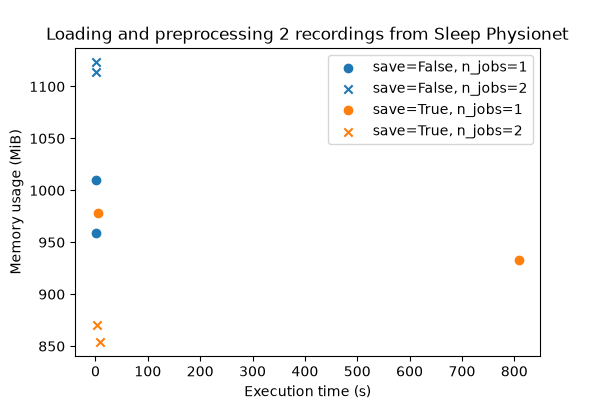

Note
Go to the end to download the full example code.
Benchmarking preprocessing with parallelization and serialization#
In this example, we compare the execution time and memory requirements of
preprocessing data with the parallelization and serialization functionalities
available in braindecode.preprocessing.preprocess().
We compare 4 cases:
Sequential, no serialization
Sequential, with serialization
Parallel, no serialization
Parallel, with serialization
Case 1 is the simplest approach, in which all recordings in a
braindecode.datasets.BaseConcatDataset are preprocessed one after the
other. In this scenario, braindecode.preprocessing.preprocess() acts
inplace, which means memory usage will likely stay stable (depending on the
preprocessing operations) if recordings have been preloaded. However, two
potential issues arise when working with large datasets: (1) if recordings have
not been preloaded before preprocessing, preprocess() will need to load them
and keep them in memory, in which case memory can become a bottleneck, and (2)
sequential preprocessing can take a considerable amount of time to run when
working with many recordings.
A solution to the first issue (memory usage) is to save the preprocessed data
to a file so it can be cleared from memory before moving on to the next
recording (case 2). The recordings can then be reloaded with preload=False
once they have all been saved to disk. This enables using the lazy loading
capabilities of braindecode.datasets.BaseConcatDataset and avoids
potential memory bottlenecks. The downside is that the writing to disk can take
some time and of course requires disk space.
A solution to the second issue (slow preprocessing) is to parallelize the preprocessing over multiple cores whenever possible (case 3). This can speed up preprocessing significantly. However, this approach will increase memory usage because of the way parallelization is implemented internally (with joblib, copies of (part of) the data must be made when sending arguments to parallel processes).
Finally, case 4 (combining parallelization and serialization) is likely to be both fast and memory efficient. As shown in this example, this remains a tradeoff though, and the selected configuration should depend on the size of the dataset and the specific operations applied to the recordings.
# Authors: Hubert Banville <hubert.jbanville@gmail.com>
#
# License: BSD (3-clause)
import tempfile
import time
from itertools import product
import matplotlib.pyplot as plt
import pandas as pd
from memory_profiler import memory_usage
from sklearn.preprocessing import scale
from braindecode.datasets import SleepPhysionet
from braindecode.preprocessing import (
Preprocessor,
create_fixed_length_windows,
preprocess,
)
We create a function that goes through the usual three steps of data
preparation: (1) data loading, (2) continuous data preprocessing,
(3) windowing and (4) windowed data preprocessing. We use the
braindecode.datasets.SleepPhysionet dataset for testing purposes.
def prepare_data(n_recs, save, preload, n_jobs):
if save:
tmp_dir = tempfile.TemporaryDirectory()
save_dir = tmp_dir.name
else:
save_dir = None
# (1) Load the data
concat_ds = SleepPhysionet(
subject_ids=range(n_recs), recording_ids=[1], crop_wake_mins=30, preload=preload
)
sfreq = concat_ds.datasets[0].raw.info["sfreq"]
# (2) Preprocess the continuous data
preprocessors = [
Preprocessor("crop", tmin=10),
Preprocessor("filter", l_freq=None, h_freq=30),
]
preprocess(
concat_ds, preprocessors, save_dir=save_dir, overwrite=True, n_jobs=n_jobs
)
# (3) Window the data
windows_ds = create_fixed_length_windows(
concat_ds,
0,
None,
int(30 * sfreq),
int(30 * sfreq),
True,
preload=preload,
n_jobs=n_jobs,
)
# Preprocess the windowed data
preprocessors = [Preprocessor(scale, channel_wise=True)]
preprocess(
windows_ds, preprocessors, save_dir=save_dir, overwrite=True, n_jobs=n_jobs
)
Next, we can run our function and measure its run time and peak memory usage for each one of our 4 cases above. We call the function multiple times with each configuration to get better estimates.
Note
To better characterize the run time vs. memory usage tradeoff for your specific configuration (as this will differ based on available hardware, data size and preprocessing operations), we recommend adapting this example to your use case and running it on your machine.
n_repets = 2 # Number of repetitions
all_n_recs = 2 # Number of recordings to load and preprocess
all_n_jobs = [1, 2] # Number of parallel processes
results = list()
for _, n_recs, save, n_jobs in product(
range(n_repets), [all_n_recs], [True, False], all_n_jobs
):
start = time.time()
mem = max(memory_usage(proc=(prepare_data, [n_recs, save, False, n_jobs], {})))
time_taken = time.time() - start
results.append(
{
"n_recs": n_recs,
"max_mem": mem,
"save": save,
"n_jobs": n_jobs,
"time": time_taken,
}
)
0%| | 0.00/48.3M [00:00<?, ?B/s]
0%| | 9.22k/48.3M [00:00<27:45, 29.0kB/s]
0%| | 33.8k/48.3M [00:00<12:27, 64.7kB/s]
0%| | 42.0k/48.3M [00:00<20:26, 39.4kB/s]
0%| | 66.6k/48.3M [00:01<15:05, 53.3kB/s]
0%| | 74.8k/48.3M [00:01<16:18, 49.3kB/s]
0%| | 91.1k/48.3M [00:01<13:26, 59.8kB/s]
0%| | 108k/48.3M [00:01<11:42, 68.7kB/s]
0%| | 124k/48.3M [00:02<10:56, 73.5kB/s]
0%| | 140k/48.3M [00:02<15:09, 53.0kB/s]
0%|▏ | 165k/48.3M [00:03<18:21, 43.7kB/s]
0%|▏ | 173k/48.3M [00:03<18:34, 43.2kB/s]
0%|▏ | 189k/48.3M [00:03<14:57, 53.6kB/s]
0%|▏ | 206k/48.3M [00:03<12:25, 64.6kB/s]
0%|▏ | 222k/48.3M [00:03<10:21, 77.4kB/s]
0%|▏ | 239k/48.3M [00:03<08:52, 90.3kB/s]
1%|▏ | 271k/48.3M [00:04<06:55, 116kB/s]
1%|▏ | 304k/48.3M [00:04<06:13, 129kB/s]
1%|▎ | 321k/48.3M [00:04<05:59, 133kB/s]
1%|▎ | 337k/48.3M [00:04<05:46, 138kB/s]
1%|▎ | 370k/48.3M [00:04<05:55, 135kB/s]
1%|▎ | 402k/48.3M [00:05<05:27, 146kB/s]
1%|▎ | 419k/48.3M [00:05<05:56, 135kB/s]
1%|▎ | 435k/48.3M [00:05<06:07, 130kB/s]
1%|▎ | 460k/48.3M [00:05<05:24, 148kB/s]
1%|▍ | 475k/48.3M [00:05<05:30, 145kB/s]
1%|▍ | 501k/48.3M [00:05<05:43, 139kB/s]
1%|▍ | 534k/48.3M [00:05<05:19, 150kB/s]
1%|▍ | 558k/48.3M [00:06<04:57, 161kB/s]
1%|▍ | 574k/48.3M [00:06<04:59, 159kB/s]
1%|▍ | 591k/48.3M [00:06<05:25, 147kB/s]
1%|▌ | 624k/48.3M [00:06<05:07, 155kB/s]
1%|▌ | 640k/48.3M [00:06<05:18, 150kB/s]
1%|▌ | 665k/48.3M [00:06<05:39, 140kB/s]
1%|▌ | 681k/48.3M [00:06<05:31, 144kB/s]
1%|▌ | 697k/48.3M [00:07<05:40, 140kB/s]
1%|▌ | 714k/48.3M [00:07<05:37, 141kB/s]
2%|▌ | 730k/48.3M [00:07<05:31, 144kB/s]
2%|▌ | 755k/48.3M [00:07<04:40, 170kB/s]
2%|▌ | 773k/48.3M [00:07<04:38, 171kB/s]
2%|▋ | 796k/48.3M [00:07<05:47, 137kB/s]
2%|▋ | 828k/48.3M [00:07<05:11, 153kB/s]
2%|▋ | 861k/48.3M [00:08<05:04, 156kB/s]
2%|▋ | 894k/48.3M [00:08<05:13, 151kB/s]
2%|▋ | 919k/48.3M [00:08<04:48, 164kB/s]
2%|▊ | 936k/48.3M [00:08<04:57, 159kB/s]
2%|▊ | 959k/48.3M [00:08<06:08, 129kB/s]
2%|▊ | 992k/48.3M [00:09<05:25, 146kB/s]
2%|▊ | 1.02M/48.3M [00:09<04:51, 162kB/s]
2%|▊ | 1.04M/48.3M [00:09<04:44, 166kB/s]
2%|▊ | 1.06M/48.3M [00:09<05:23, 146kB/s]
2%|▊ | 1.07M/48.3M [00:09<05:52, 134kB/s]
2%|▉ | 1.12M/48.3M [00:09<04:31, 174kB/s]
2%|▉ | 1.13M/48.3M [00:09<04:31, 174kB/s]
2%|▉ | 1.16M/48.3M [00:10<05:20, 147kB/s]
2%|▉ | 1.18M/48.3M [00:10<04:49, 163kB/s]
2%|▉ | 1.20M/48.3M [00:10<04:56, 159kB/s]
3%|▉ | 1.22M/48.3M [00:10<04:57, 159kB/s]
3%|▉ | 1.23M/48.3M [00:10<05:00, 157kB/s]
3%|▉ | 1.25M/48.3M [00:10<05:48, 135kB/s]
3%|▉ | 1.27M/48.3M [00:10<06:01, 130kB/s]
3%|█ | 1.29M/48.3M [00:10<05:58, 131kB/s]
3%|█ | 1.32M/48.3M [00:11<05:28, 143kB/s]
3%|█ | 1.35M/48.3M [00:11<05:13, 150kB/s]
3%|█ | 1.37M/48.3M [00:11<05:12, 150kB/s]
3%|█ | 1.39M/48.3M [00:11<05:09, 152kB/s]
3%|█ | 1.42M/48.3M [00:11<04:59, 157kB/s]
3%|█▏ | 1.44M/48.3M [00:11<04:40, 167kB/s]
3%|█▏ | 1.46M/48.3M [00:12<04:52, 161kB/s]
3%|█▏ | 1.48M/48.3M [00:12<04:58, 157kB/s]
3%|█▏ | 1.49M/48.3M [00:12<04:59, 157kB/s]
3%|█▏ | 1.52M/48.3M [00:12<06:09, 127kB/s]
3%|█▏ | 1.55M/48.3M [00:12<05:49, 134kB/s]
3%|█▏ | 1.57M/48.3M [00:12<06:40, 117kB/s]
3%|█▏ | 1.58M/48.3M [00:13<07:33, 103kB/s]
3%|█▏ | 1.60M/48.3M [00:13<07:54, 98.4kB/s]
3%|█▎ | 1.61M/48.3M [00:13<07:40, 102kB/s]
3%|█▎ | 1.64M/48.3M [00:13<06:16, 124kB/s]
3%|█▎ | 1.65M/48.3M [00:13<06:15, 124kB/s]
3%|█▎ | 1.68M/48.3M [00:14<06:59, 111kB/s]
4%|█▎ | 1.71M/48.3M [00:14<06:43, 116kB/s]
4%|█▎ | 1.74M/48.3M [00:14<06:11, 125kB/s]
4%|█▍ | 1.75M/48.3M [00:14<06:32, 119kB/s]
4%|█▍ | 1.76M/48.3M [00:14<06:41, 116kB/s]
4%|█▍ | 1.78M/48.3M [00:14<06:18, 123kB/s]
4%|█▍ | 1.81M/48.3M [00:14<05:34, 139kB/s]
4%|█▍ | 1.84M/48.3M [00:15<05:12, 149kB/s]
4%|█▍ | 1.86M/48.3M [00:15<06:11, 125kB/s]
4%|█▍ | 1.88M/48.3M [00:15<06:28, 119kB/s]
4%|█▍ | 1.89M/48.3M [00:15<06:30, 119kB/s]
4%|█▌ | 1.91M/48.3M [00:15<06:51, 113kB/s]
4%|█▌ | 1.93M/48.3M [00:16<06:36, 117kB/s]
4%|█▌ | 1.95M/48.3M [00:16<07:03, 110kB/s]
4%|█▌ | 1.96M/48.3M [00:16<07:02, 110kB/s]
4%|█▌ | 1.98M/48.3M [00:16<06:51, 113kB/s]
4%|█▌ | 1.99M/48.3M [00:16<06:16, 123kB/s]
4%|█▌ | 2.01M/48.3M [00:16<05:53, 131kB/s]
4%|█▌ | 2.03M/48.3M [00:16<05:06, 151kB/s]
4%|█▌ | 2.06M/48.3M [00:16<05:28, 141kB/s]
4%|█▋ | 2.09M/48.3M [00:17<05:04, 152kB/s]
4%|█▋ | 2.11M/48.3M [00:17<05:41, 135kB/s]
4%|█▋ | 2.14M/48.3M [00:17<04:54, 157kB/s]
4%|█▋ | 2.16M/48.3M [00:17<04:57, 155kB/s]
5%|█▋ | 2.19M/48.3M [00:17<05:40, 136kB/s]
5%|█▊ | 2.23M/48.3M [00:18<04:25, 174kB/s]
5%|█▊ | 2.25M/48.3M [00:18<04:24, 174kB/s]
5%|█▊ | 2.27M/48.3M [00:18<04:22, 175kB/s]
5%|█▊ | 2.29M/48.3M [00:18<04:48, 160kB/s]
5%|█▊ | 2.31M/48.3M [00:18<05:11, 148kB/s]
5%|█▊ | 2.34M/48.3M [00:18<05:16, 146kB/s]
5%|█▊ | 2.35M/48.3M [00:18<05:10, 148kB/s]
5%|█▉ | 2.39M/48.3M [00:19<04:48, 159kB/s]
5%|█▉ | 2.42M/48.3M [00:19<05:23, 142kB/s]
5%|█▉ | 2.43M/48.3M [00:19<05:22, 142kB/s]
5%|█▉ | 2.46M/48.3M [00:19<05:34, 137kB/s]
5%|█▉ | 2.47M/48.3M [00:19<05:57, 128kB/s]
5%|█▉ | 2.49M/48.3M [00:19<06:24, 119kB/s]
5%|█▉ | 2.50M/48.3M [00:20<06:26, 119kB/s]
5%|█▉ | 2.52M/48.3M [00:20<05:57, 128kB/s]
5%|██ | 2.56M/48.3M [00:20<05:32, 138kB/s]
5%|██ | 2.58M/48.3M [00:20<05:25, 140kB/s]
5%|██ | 2.60M/48.3M [00:20<05:17, 144kB/s]
5%|██ | 2.61M/48.3M [00:20<05:12, 146kB/s]
5%|██ | 2.66M/48.3M [00:20<04:29, 169kB/s]
6%|██ | 2.67M/48.3M [00:21<05:21, 142kB/s]
6%|██ | 2.70M/48.3M [00:21<05:03, 150kB/s]
6%|██▏ | 2.71M/48.3M [00:21<05:56, 128kB/s]
6%|██▏ | 2.73M/48.3M [00:21<06:03, 125kB/s]
6%|██▏ | 2.75M/48.3M [00:21<05:27, 139kB/s]
6%|██▏ | 2.77M/48.3M [00:21<05:29, 138kB/s]
6%|██▏ | 2.78M/48.3M [00:21<05:31, 137kB/s]
6%|██▏ | 2.81M/48.3M [00:22<05:19, 142kB/s]
6%|██▏ | 2.83M/48.3M [00:22<07:13, 105kB/s]
6%|██▎ | 2.88M/48.3M [00:22<04:35, 165kB/s]
6%|██▎ | 2.91M/48.3M [00:22<04:55, 154kB/s]
6%|██▎ | 2.95M/48.3M [00:23<04:25, 171kB/s]
6%|██▎ | 2.97M/48.3M [00:23<04:27, 169kB/s]
6%|██▎ | 2.99M/48.3M [00:23<04:27, 170kB/s]
6%|██▎ | 3.02M/48.3M [00:23<04:52, 155kB/s]
6%|██▍ | 3.03M/48.3M [00:23<04:52, 155kB/s]
6%|██▍ | 3.05M/48.3M [00:23<04:56, 153kB/s]
6%|██▍ | 3.06M/48.3M [00:23<04:55, 153kB/s]
6%|██▍ | 3.08M/48.3M [00:23<04:53, 154kB/s]
6%|██▍ | 3.11M/48.3M [00:24<04:43, 159kB/s]
6%|██▍ | 3.13M/48.3M [00:24<05:25, 139kB/s]
7%|██▍ | 3.15M/48.3M [00:24<04:58, 152kB/s]
7%|██▍ | 3.18M/48.3M [00:24<04:29, 167kB/s]
7%|██▌ | 3.20M/48.3M [00:24<05:05, 148kB/s]
7%|██▌ | 3.22M/48.3M [00:25<07:03, 106kB/s]
7%|██▍ | 3.24M/48.3M [00:25<13:06, 57.4kB/s]
7%|██▍ | 3.25M/48.3M [00:25<11:56, 62.9kB/s]
7%|██▌ | 3.28M/48.3M [00:26<11:35, 64.8kB/s]
7%|██▌ | 3.29M/48.3M [00:27<23:23, 32.1kB/s]
7%|██▌ | 3.30M/48.3M [00:27<24:34, 30.6kB/s]
7%|██▌ | 3.32M/48.3M [00:28<22:16, 33.7kB/s]
7%|██▌ | 3.34M/48.3M [00:28<18:03, 41.5kB/s]
7%|██▌ | 3.35M/48.3M [00:28<20:18, 36.9kB/s]
7%|██▌ | 3.37M/48.3M [00:29<15:52, 47.2kB/s]
7%|██▌ | 3.38M/48.3M [00:29<16:31, 45.4kB/s]
7%|██▌ | 3.40M/48.3M [00:29<15:27, 48.5kB/s]
7%|██▌ | 3.42M/48.3M [00:30<15:43, 47.6kB/s]
7%|██▋ | 3.44M/48.3M [00:30<15:24, 48.6kB/s]
7%|██▋ | 3.45M/48.3M [00:30<17:40, 42.3kB/s]
7%|██▋ | 3.47M/48.3M [00:31<19:25, 38.5kB/s]
7%|██▋ | 3.48M/48.3M [00:31<18:30, 40.4kB/s]
7%|██▋ | 3.50M/48.3M [00:32<21:22, 35.0kB/s]
7%|██▋ | 3.52M/48.3M [00:32<20:04, 37.2kB/s]
7%|██▋ | 3.53M/48.3M [00:33<18:13, 41.0kB/s]
7%|██▋ | 3.55M/48.3M [00:33<17:07, 43.6kB/s]
7%|██▋ | 3.57M/48.3M [00:33<17:03, 43.7kB/s]
7%|██▋ | 3.58M/48.3M [00:34<18:13, 40.9kB/s]
7%|██▊ | 3.60M/48.3M [00:34<17:28, 42.7kB/s]
7%|██▊ | 3.61M/48.3M [00:34<16:16, 45.8kB/s]
8%|██▊ | 3.63M/48.3M [00:35<15:04, 49.4kB/s]
8%|██▊ | 3.65M/48.3M [00:35<14:17, 52.1kB/s]
8%|██▊ | 3.67M/48.3M [00:35<13:50, 53.8kB/s]
8%|██▊ | 3.68M/48.3M [00:36<14:08, 52.6kB/s]
8%|██▊ | 3.70M/48.3M [00:36<12:33, 59.2kB/s]
8%|██▊ | 3.71M/48.3M [00:36<10:45, 69.2kB/s]
8%|██▊ | 3.73M/48.3M [00:36<09:32, 77.9kB/s]
8%|██▊ | 3.74M/48.3M [00:36<08:26, 88.0kB/s]
8%|██▉ | 3.77M/48.3M [00:36<06:56, 107kB/s]
8%|██▉ | 3.78M/48.3M [00:37<08:12, 90.5kB/s]
8%|██▉ | 3.79M/48.3M [00:37<07:45, 95.7kB/s]
8%|██▉ | 3.81M/48.3M [00:37<07:25, 99.9kB/s]
8%|███ | 3.83M/48.3M [00:37<07:19, 101kB/s]
8%|██▉ | 3.84M/48.3M [00:37<08:22, 88.6kB/s]
8%|███ | 3.87M/48.3M [00:37<06:19, 117kB/s]
8%|██▉ | 3.88M/48.3M [00:38<07:38, 97.0kB/s]
8%|██▉ | 3.89M/48.3M [00:38<07:43, 95.9kB/s]
8%|██▉ | 3.91M/48.3M [00:38<07:44, 95.7kB/s]
8%|███ | 3.92M/48.3M [00:38<09:02, 81.8kB/s]
8%|███ | 3.94M/48.3M [00:38<07:40, 96.4kB/s]
8%|███ | 3.97M/48.3M [00:38<06:45, 109kB/s]
8%|███▏ | 3.98M/48.3M [00:38<07:07, 104kB/s]
8%|███ | 3.99M/48.3M [00:39<07:37, 97.0kB/s]
8%|███ | 4.01M/48.3M [00:39<08:57, 82.4kB/s]
8%|███ | 4.02M/48.3M [00:39<08:00, 92.1kB/s]
8%|███ | 4.04M/48.3M [00:39<08:00, 92.2kB/s]
8%|███▏ | 4.06M/48.3M [00:39<06:49, 108kB/s]
8%|███▏ | 4.08M/48.3M [00:40<07:20, 101kB/s]
8%|███▏ | 4.09M/48.3M [00:40<07:55, 93.0kB/s]
8%|███▏ | 4.11M/48.3M [00:40<07:42, 95.6kB/s]
9%|███▏ | 4.12M/48.3M [00:40<07:41, 95.7kB/s]
9%|███▏ | 4.14M/48.3M [00:40<08:36, 85.6kB/s]
9%|███▎ | 4.16M/48.3M [00:40<07:06, 104kB/s]
9%|███▏ | 4.17M/48.3M [00:41<10:06, 72.9kB/s]
9%|███▏ | 4.19M/48.3M [00:41<12:29, 58.9kB/s]
9%|███▏ | 4.20M/48.3M [00:42<14:08, 52.0kB/s]
9%|███▏ | 4.22M/48.3M [00:42<16:38, 44.2kB/s]
9%|███▏ | 4.24M/48.3M [00:42<14:41, 50.0kB/s]
9%|███▎ | 4.26M/48.3M [00:43<14:15, 51.5kB/s]
9%|███▎ | 4.27M/48.3M [00:43<16:25, 44.7kB/s]
9%|███▎ | 4.29M/48.3M [00:44<20:01, 36.7kB/s]
9%|███▎ | 4.30M/48.3M [00:44<20:37, 35.6kB/s]
9%|███▎ | 4.32M/48.3M [00:44<18:46, 39.1kB/s]
9%|███▎ | 4.33M/48.3M [00:45<16:38, 44.1kB/s]
9%|███▎ | 4.36M/48.3M [00:45<13:59, 52.4kB/s]
9%|███▎ | 4.37M/48.3M [00:45<18:11, 40.3kB/s]
9%|███▎ | 4.38M/48.3M [00:46<17:09, 42.7kB/s]
9%|███▎ | 4.40M/48.3M [00:46<14:36, 50.1kB/s]
9%|███▍ | 4.42M/48.3M [00:46<14:45, 49.6kB/s]
9%|███▍ | 4.45M/48.3M [00:46<08:58, 81.5kB/s]
9%|███▍ | 4.46M/48.3M [00:47<08:43, 83.8kB/s]
9%|███▍ | 4.47M/48.3M [00:47<10:28, 69.8kB/s]
9%|███▍ | 4.49M/48.3M [00:47<10:57, 66.7kB/s]
9%|███▍ | 4.50M/48.3M [00:47<11:38, 62.8kB/s]
9%|███▍ | 4.51M/48.3M [00:47<09:45, 74.8kB/s]
9%|███▍ | 4.53M/48.3M [00:48<13:55, 52.4kB/s]
9%|███▍ | 4.56M/48.3M [00:49<14:53, 49.0kB/s]
9%|███▍ | 4.56M/48.3M [00:49<20:16, 36.0kB/s]
9%|███▌ | 4.58M/48.3M [00:49<18:40, 39.0kB/s]
10%|███▌ | 4.60M/48.3M [00:50<19:33, 37.3kB/s]
10%|███▌ | 4.61M/48.3M [00:50<16:52, 43.2kB/s]
10%|███▌ | 4.63M/48.3M [00:51<19:37, 37.1kB/s]
10%|███▌ | 4.65M/48.3M [00:51<15:23, 47.3kB/s]
10%|███▌ | 4.66M/48.3M [00:51<17:24, 41.8kB/s]
10%|███▌ | 4.68M/48.3M [00:51<14:13, 51.1kB/s]
10%|███▌ | 4.70M/48.3M [00:52<13:48, 52.7kB/s]
10%|███▌ | 4.71M/48.3M [00:52<11:22, 63.9kB/s]
10%|███▌ | 4.73M/48.3M [00:52<10:38, 68.3kB/s]
10%|███▋ | 4.75M/48.3M [00:52<08:49, 82.4kB/s]
10%|███▋ | 4.76M/48.3M [00:53<11:10, 65.0kB/s]
10%|███▋ | 4.78M/48.3M [00:53<10:47, 67.3kB/s]
10%|███▋ | 4.79M/48.3M [00:53<10:44, 67.6kB/s]
10%|███▋ | 4.81M/48.3M [00:53<09:22, 77.4kB/s]
10%|███▋ | 4.83M/48.3M [00:53<09:02, 80.1kB/s]
10%|███▊ | 4.85M/48.3M [00:54<07:05, 102kB/s]
10%|███▋ | 4.86M/48.3M [00:54<08:58, 80.7kB/s]
10%|███▋ | 4.88M/48.3M [00:54<08:40, 83.5kB/s]
10%|███▋ | 4.89M/48.3M [00:54<09:12, 78.6kB/s]
10%|███▊ | 4.91M/48.3M [00:54<10:13, 70.8kB/s]
10%|███▊ | 4.92M/48.3M [00:55<12:20, 58.6kB/s]
10%|███▊ | 4.95M/48.3M [00:55<10:25, 69.4kB/s]
10%|███▊ | 4.96M/48.3M [00:55<12:03, 60.0kB/s]
10%|███▊ | 4.97M/48.3M [00:56<10:51, 66.5kB/s]
10%|███▊ | 4.99M/48.3M [00:56<11:07, 64.9kB/s]
10%|███▊ | 5.01M/48.3M [00:56<09:52, 73.1kB/s]
10%|███▊ | 5.02M/48.3M [00:56<08:59, 80.3kB/s]
10%|███▊ | 5.05M/48.3M [00:56<07:58, 90.5kB/s]
10%|███▊ | 5.06M/48.3M [00:56<08:51, 81.4kB/s]
10%|███▉ | 5.07M/48.3M [00:57<09:01, 79.9kB/s]
11%|███▉ | 5.09M/48.3M [00:57<08:07, 88.7kB/s]
11%|███▉ | 5.10M/48.3M [00:57<08:36, 83.8kB/s]
11%|███▉ | 5.12M/48.3M [00:57<08:17, 86.9kB/s]
11%|███▉ | 5.14M/48.3M [00:57<08:24, 85.6kB/s]
11%|███▉ | 5.15M/48.3M [00:58<08:15, 87.1kB/s]
11%|████ | 5.18M/48.3M [00:58<07:01, 102kB/s]
11%|███▉ | 5.19M/48.3M [00:58<07:12, 99.8kB/s]
11%|███▉ | 5.20M/48.3M [00:58<07:44, 92.9kB/s]
11%|████ | 5.22M/48.3M [00:58<07:05, 101kB/s]
11%|████ | 5.24M/48.3M [00:58<08:06, 88.7kB/s]
11%|████ | 5.25M/48.3M [00:59<07:30, 95.7kB/s]
11%|████▏ | 5.28M/48.3M [00:59<06:59, 103kB/s]
11%|████ | 5.29M/48.3M [00:59<08:50, 81.1kB/s]
11%|████ | 5.30M/48.3M [00:59<10:12, 70.2kB/s]
11%|████ | 5.32M/48.3M [01:00<10:33, 67.9kB/s]
11%|████ | 5.33M/48.3M [01:00<10:11, 70.3kB/s]
11%|████ | 5.35M/48.3M [01:00<13:55, 51.4kB/s]
11%|████ | 5.37M/48.3M [01:01<11:13, 63.8kB/s]
11%|████ | 5.38M/48.3M [01:01<15:07, 47.3kB/s]
11%|████▏ | 5.40M/48.3M [01:01<14:40, 48.8kB/s]
11%|████▏ | 5.42M/48.3M [01:02<15:10, 47.1kB/s]
11%|████▏ | 5.43M/48.3M [01:02<16:16, 43.9kB/s]
11%|████▏ | 5.45M/48.3M [01:02<15:08, 47.2kB/s]
11%|████▏ | 5.47M/48.3M [01:03<11:27, 62.3kB/s]
11%|████▏ | 5.48M/48.3M [01:03<11:56, 59.8kB/s]
11%|████▏ | 5.50M/48.3M [01:03<10:00, 71.4kB/s]
11%|████▏ | 5.51M/48.3M [01:03<08:33, 83.3kB/s]
11%|████▎ | 5.55M/48.3M [01:03<06:36, 108kB/s]
12%|████▍ | 5.58M/48.3M [01:03<05:51, 122kB/s]
12%|████▍ | 5.61M/48.3M [01:04<05:12, 137kB/s]
12%|████▍ | 5.65M/48.3M [01:04<04:56, 144kB/s]
12%|████▍ | 5.68M/48.3M [01:04<04:57, 144kB/s]
12%|████▍ | 5.69M/48.3M [01:04<04:57, 143kB/s]
12%|████▍ | 5.71M/48.3M [01:04<05:02, 141kB/s]
12%|████▌ | 5.74M/48.3M [01:04<04:46, 149kB/s]
12%|████▌ | 5.76M/48.3M [01:05<05:13, 136kB/s]
12%|████▌ | 5.79M/48.3M [01:05<04:52, 145kB/s]
12%|████▌ | 5.81M/48.3M [01:05<05:32, 128kB/s]
12%|████▌ | 5.83M/48.3M [01:05<05:57, 119kB/s]
12%|████▍ | 5.85M/48.3M [01:05<07:12, 98.3kB/s]
12%|████▍ | 5.86M/48.3M [01:06<07:39, 92.4kB/s]
12%|████▍ | 5.87M/48.3M [01:06<07:46, 91.1kB/s]
12%|████▋ | 5.90M/48.3M [01:06<06:56, 102kB/s]
12%|████▌ | 5.91M/48.3M [01:06<07:46, 91.0kB/s]
12%|████▌ | 5.92M/48.3M [01:06<07:51, 89.9kB/s]
12%|████▌ | 5.94M/48.3M [01:07<09:15, 76.3kB/s]
12%|████▌ | 5.96M/48.3M [01:07<09:49, 71.9kB/s]
12%|████▌ | 5.97M/48.3M [01:07<11:05, 63.6kB/s]
12%|████▌ | 6.00M/48.3M [01:07<09:26, 74.7kB/s]
12%|████▌ | 6.01M/48.3M [01:08<13:42, 51.5kB/s]
12%|████▌ | 6.02M/48.3M [01:08<12:27, 56.6kB/s]
12%|████▌ | 6.04M/48.3M [01:09<15:26, 45.6kB/s]
13%|████▋ | 6.05M/48.3M [01:09<14:14, 49.5kB/s]
13%|████▋ | 6.07M/48.3M [01:09<14:37, 48.2kB/s]
13%|████▋ | 6.10M/48.3M [01:09<11:48, 59.7kB/s]
13%|████▋ | 6.10M/48.3M [01:10<13:02, 54.0kB/s]
13%|████▋ | 6.12M/48.3M [01:10<11:39, 60.4kB/s]
13%|████▋ | 6.14M/48.3M [01:10<11:00, 63.9kB/s]
13%|████▋ | 6.15M/48.3M [01:10<09:46, 72.0kB/s]
13%|████▋ | 6.17M/48.3M [01:11<09:39, 72.8kB/s]
13%|████▋ | 6.19M/48.3M [01:11<07:08, 98.3kB/s]
13%|████▊ | 6.21M/48.3M [01:11<07:32, 93.2kB/s]
13%|████▊ | 6.22M/48.3M [01:11<09:31, 73.7kB/s]
13%|████▊ | 6.24M/48.3M [01:11<08:17, 84.6kB/s]
13%|████▊ | 6.25M/48.3M [01:11<08:56, 78.4kB/s]
13%|████▊ | 6.27M/48.3M [01:12<10:59, 63.8kB/s]
13%|████▊ | 6.29M/48.3M [01:12<09:09, 76.5kB/s]
13%|████▊ | 6.30M/48.3M [01:12<10:04, 69.5kB/s]
13%|████▊ | 6.32M/48.3M [01:12<08:51, 79.1kB/s]
13%|████▊ | 6.33M/48.3M [01:12<08:02, 87.1kB/s]
13%|████▊ | 6.35M/48.3M [01:13<07:21, 95.1kB/s]
13%|████▊ | 6.37M/48.3M [01:13<07:43, 90.5kB/s]
13%|█████ | 6.39M/48.3M [01:13<06:26, 108kB/s]
13%|████▉ | 6.40M/48.3M [01:13<07:25, 94.1kB/s]
13%|████▉ | 6.42M/48.3M [01:13<07:39, 91.2kB/s]
13%|████▉ | 6.43M/48.3M [01:13<07:15, 96.2kB/s]
13%|█████ | 6.45M/48.3M [01:14<06:44, 103kB/s]
13%|████▉ | 6.46M/48.3M [01:14<07:02, 99.1kB/s]
13%|█████ | 6.49M/48.3M [01:14<06:00, 116kB/s]
13%|█████ | 6.50M/48.3M [01:14<06:41, 104kB/s]
13%|████▉ | 6.51M/48.3M [01:14<07:34, 92.0kB/s]
14%|████▉ | 6.53M/48.3M [01:14<07:18, 95.4kB/s]
14%|█████▏ | 6.55M/48.3M [01:15<05:56, 117kB/s]
14%|█████ | 6.57M/48.3M [01:15<08:06, 85.9kB/s]
14%|█████ | 6.58M/48.3M [01:15<09:28, 73.5kB/s]
14%|█████ | 6.60M/48.3M [01:15<10:05, 68.9kB/s]
14%|█████ | 6.61M/48.3M [01:16<09:20, 74.5kB/s]
14%|█████ | 6.63M/48.3M [01:16<08:57, 77.6kB/s]
14%|█████ | 6.65M/48.3M [01:16<07:25, 93.5kB/s]
14%|█████ | 6.66M/48.3M [01:16<08:06, 85.6kB/s]
14%|█████ | 6.68M/48.3M [01:16<08:19, 83.4kB/s]
14%|█████ | 6.69M/48.3M [01:16<08:18, 83.6kB/s]
14%|█████▏ | 6.71M/48.3M [01:17<08:35, 80.7kB/s]
14%|█████▏ | 6.73M/48.3M [01:17<08:16, 83.8kB/s]
14%|█████▏ | 6.75M/48.3M [01:17<07:53, 87.9kB/s]
14%|█████▏ | 6.76M/48.3M [01:17<08:48, 78.6kB/s]
14%|█████▏ | 6.78M/48.3M [01:18<09:14, 75.0kB/s]
14%|█████▏ | 6.79M/48.3M [01:18<09:42, 71.3kB/s]
14%|█████▏ | 6.81M/48.3M [01:18<09:24, 73.6kB/s]
14%|█████▏ | 6.82M/48.3M [01:18<09:22, 73.8kB/s]
14%|█████▏ | 6.85M/48.3M [01:18<08:34, 80.7kB/s]
14%|█████▏ | 6.86M/48.3M [01:19<09:29, 72.8kB/s]
14%|█████▎ | 6.87M/48.3M [01:19<09:10, 75.3kB/s]
14%|█████▎ | 6.89M/48.3M [01:19<08:37, 80.2kB/s]
14%|█████▎ | 6.91M/48.3M [01:19<07:38, 90.5kB/s]
14%|█████▍ | 6.92M/48.3M [01:19<06:53, 100kB/s]
14%|█████▍ | 6.95M/48.3M [01:19<05:31, 125kB/s]
14%|█████▍ | 6.96M/48.3M [01:20<06:02, 114kB/s]
14%|█████▍ | 6.97M/48.3M [01:20<06:05, 113kB/s]
14%|█████▍ | 6.99M/48.3M [01:20<06:02, 114kB/s]
14%|█████▌ | 7.01M/48.3M [01:20<05:37, 122kB/s]
15%|█████▌ | 7.02M/48.3M [01:20<06:14, 110kB/s]
15%|█████▌ | 7.05M/48.3M [01:20<05:15, 131kB/s]
15%|█████▌ | 7.07M/48.3M [01:20<05:12, 132kB/s]
15%|█████▌ | 7.10M/48.3M [01:21<05:22, 128kB/s]
15%|█████▌ | 7.14M/48.3M [01:21<04:33, 151kB/s]
15%|█████▋ | 7.16M/48.3M [01:21<04:38, 148kB/s]
15%|█████▋ | 7.18M/48.3M [01:21<05:17, 130kB/s]
15%|█████▋ | 7.21M/48.3M [01:21<05:05, 135kB/s]
15%|█████▋ | 7.22M/48.3M [01:22<05:48, 118kB/s]
15%|█████▋ | 7.24M/48.3M [01:22<06:34, 104kB/s]
15%|█████▋ | 7.25M/48.3M [01:22<06:23, 107kB/s]
15%|█████▋ | 7.27M/48.3M [01:22<06:07, 112kB/s]
15%|█████▋ | 7.28M/48.3M [01:22<05:38, 121kB/s]
15%|█████▋ | 7.31M/48.3M [01:22<04:35, 149kB/s]
15%|█████▊ | 7.32M/48.3M [01:22<05:33, 123kB/s]
15%|█████▊ | 7.35M/48.3M [01:23<05:17, 129kB/s]
15%|█████▋ | 7.37M/48.3M [01:23<08:14, 82.9kB/s]
15%|█████▋ | 7.38M/48.3M [01:23<08:17, 82.3kB/s]
15%|█████▋ | 7.41M/48.3M [01:24<08:52, 76.9kB/s]
15%|█████▋ | 7.42M/48.3M [01:24<11:21, 60.0kB/s]
15%|█████▋ | 7.43M/48.3M [01:24<12:08, 56.2kB/s]
15%|█████▋ | 7.45M/48.3M [01:24<11:53, 57.3kB/s]
15%|█████▋ | 7.46M/48.3M [01:25<11:06, 61.3kB/s]
15%|█████▋ | 7.48M/48.3M [01:25<10:47, 63.1kB/s]
16%|█████▋ | 7.50M/48.3M [01:25<07:43, 88.1kB/s]
16%|█████▊ | 7.52M/48.3M [01:25<07:55, 85.8kB/s]
16%|█████▊ | 7.53M/48.3M [01:25<08:12, 82.8kB/s]
16%|█████▊ | 7.55M/48.3M [01:25<07:19, 92.9kB/s]
16%|█████▊ | 7.56M/48.3M [01:26<07:04, 96.0kB/s]
16%|█████▉ | 7.58M/48.3M [01:26<06:13, 109kB/s]
16%|█████▉ | 7.60M/48.3M [01:26<05:35, 121kB/s]
16%|█████▉ | 7.62M/48.3M [01:26<05:52, 115kB/s]
16%|█████▊ | 7.63M/48.3M [01:26<07:58, 85.1kB/s]
16%|█████▊ | 7.64M/48.3M [01:27<12:53, 52.6kB/s]
16%|█████▊ | 7.67M/48.3M [01:28<18:35, 36.4kB/s]
16%|█████▉ | 7.68M/48.3M [01:28<21:27, 31.6kB/s]
16%|█████▉ | 7.69M/48.3M [01:29<21:26, 31.6kB/s]
16%|█████▉ | 7.71M/48.3M [01:29<18:22, 36.9kB/s]
16%|█████▉ | 7.73M/48.3M [01:29<16:12, 41.8kB/s]
16%|█████▉ | 7.74M/48.3M [01:30<14:42, 46.0kB/s]
16%|█████▉ | 7.76M/48.3M [01:30<13:32, 49.9kB/s]
16%|█████▉ | 7.78M/48.3M [01:30<15:28, 43.7kB/s]
16%|█████▉ | 7.80M/48.3M [01:31<14:52, 45.4kB/s]
16%|█████▉ | 7.81M/48.3M [01:32<25:40, 26.3kB/s]
16%|█████▉ | 7.82M/48.3M [01:32<21:41, 31.1kB/s]
16%|██████ | 7.84M/48.3M [01:33<21:32, 31.3kB/s]
16%|██████ | 7.86M/48.3M [01:33<19:02, 35.4kB/s]
16%|██████ | 7.87M/48.3M [01:33<15:51, 42.5kB/s]
16%|██████ | 7.90M/48.3M [01:33<11:24, 59.1kB/s]
16%|██████ | 7.91M/48.3M [01:34<11:17, 59.7kB/s]
16%|██████ | 7.92M/48.3M [01:34<10:44, 62.7kB/s]
16%|██████ | 7.94M/48.3M [01:34<09:12, 73.1kB/s]
16%|██████ | 7.96M/48.3M [01:34<09:26, 71.2kB/s]
16%|██████ | 7.97M/48.3M [01:34<10:04, 66.8kB/s]
17%|██████ | 8.00M/48.3M [01:35<08:27, 79.4kB/s]
17%|██████▏ | 8.01M/48.3M [01:35<11:06, 60.5kB/s]
17%|██████▏ | 8.02M/48.3M [01:35<11:20, 59.3kB/s]
17%|██████▏ | 8.04M/48.3M [01:36<10:44, 62.5kB/s]
17%|██████▏ | 8.05M/48.3M [01:36<10:31, 63.7kB/s]
17%|██████▏ | 8.07M/48.3M [01:36<13:17, 50.5kB/s]
17%|██████▏ | 8.09M/48.3M [01:37<14:36, 45.9kB/s]
17%|██████▏ | 8.10M/48.3M [01:37<16:35, 40.4kB/s]
17%|██████▏ | 8.12M/48.3M [01:37<14:43, 45.5kB/s]
17%|██████▏ | 8.14M/48.3M [01:38<14:06, 47.5kB/s]
17%|██████▏ | 8.15M/48.3M [01:38<14:01, 47.8kB/s]
17%|██████▎ | 8.17M/48.3M [01:38<12:36, 53.1kB/s]
17%|██████▎ | 8.19M/48.3M [01:39<09:43, 68.8kB/s]
17%|██████▎ | 8.20M/48.3M [01:39<10:46, 62.1kB/s]
17%|██████▎ | 8.22M/48.3M [01:39<10:11, 65.6kB/s]
17%|██████▎ | 8.23M/48.3M [01:39<09:39, 69.2kB/s]
17%|██████▎ | 8.25M/48.3M [01:39<08:57, 74.6kB/s]
17%|██████▎ | 8.27M/48.3M [01:39<07:52, 84.8kB/s]
17%|██████▌ | 8.29M/48.3M [01:40<06:09, 108kB/s]
17%|██████▎ | 8.30M/48.3M [01:40<07:10, 93.0kB/s]
17%|██████▍ | 8.33M/48.3M [01:40<06:43, 99.2kB/s]
17%|██████▌ | 8.35M/48.3M [01:40<06:33, 102kB/s]
17%|██████▌ | 8.37M/48.3M [01:40<06:35, 101kB/s]
17%|██████▍ | 8.39M/48.3M [01:41<06:40, 99.6kB/s]
17%|██████▍ | 8.40M/48.3M [01:41<07:06, 93.7kB/s]
17%|██████▍ | 8.41M/48.3M [01:41<07:28, 88.9kB/s]
17%|██████▍ | 8.43M/48.3M [01:41<07:19, 90.9kB/s]
17%|██████▍ | 8.45M/48.3M [01:41<07:21, 90.4kB/s]
18%|██████▍ | 8.46M/48.3M [01:41<06:58, 95.4kB/s]
18%|██████▋ | 8.49M/48.3M [01:42<05:58, 111kB/s]
18%|██████▋ | 8.50M/48.3M [01:42<06:07, 108kB/s]
18%|██████▌ | 8.51M/48.3M [01:42<07:07, 93.1kB/s]
18%|██████▋ | 8.55M/48.3M [01:42<06:10, 108kB/s]
18%|██████▋ | 8.56M/48.3M [01:42<05:52, 113kB/s]
18%|██████▋ | 8.59M/48.3M [01:42<05:26, 122kB/s]
18%|██████▊ | 8.60M/48.3M [01:43<06:10, 107kB/s]
18%|██████▌ | 8.61M/48.3M [01:43<06:58, 95.0kB/s]
18%|██████▌ | 8.63M/48.3M [01:43<06:48, 97.3kB/s]
18%|██████▌ | 8.64M/48.3M [01:43<07:17, 90.8kB/s]
18%|██████▋ | 8.66M/48.3M [01:43<08:02, 82.2kB/s]
18%|██████▋ | 8.68M/48.3M [01:44<07:08, 92.5kB/s]
18%|██████▋ | 8.69M/48.3M [01:44<07:30, 87.9kB/s]
18%|██████▋ | 8.71M/48.3M [01:44<07:18, 90.4kB/s]
18%|██████▊ | 8.73M/48.3M [01:44<06:20, 104kB/s]
18%|██████▉ | 8.75M/48.3M [01:44<04:56, 134kB/s]
18%|██████▉ | 8.77M/48.3M [01:44<04:59, 132kB/s]
18%|██████▉ | 8.78M/48.3M [01:44<05:20, 123kB/s]
18%|██████▉ | 8.79M/48.3M [01:45<05:35, 118kB/s]
18%|██████▉ | 8.81M/48.3M [01:45<05:59, 110kB/s]
18%|██████▉ | 8.82M/48.3M [01:45<05:51, 112kB/s]
18%|██████▉ | 8.85M/48.3M [01:45<05:00, 131kB/s]
18%|██████▉ | 8.86M/48.3M [01:45<05:12, 126kB/s]
18%|██████▉ | 8.88M/48.3M [01:45<05:33, 118kB/s]
18%|██████▉ | 8.89M/48.3M [01:45<05:32, 119kB/s]
18%|███████ | 8.91M/48.3M [01:45<05:05, 129kB/s]
18%|███████ | 8.92M/48.3M [01:46<05:02, 130kB/s]
19%|███████ | 8.95M/48.3M [01:46<04:23, 150kB/s]
19%|███████ | 8.96M/48.3M [01:46<04:25, 148kB/s]
19%|███████ | 8.98M/48.3M [01:46<04:57, 132kB/s]
19%|███████ | 8.99M/48.3M [01:46<05:44, 114kB/s]
19%|███████ | 9.00M/48.3M [01:46<05:47, 113kB/s]
19%|███████ | 9.02M/48.3M [01:46<05:16, 124kB/s]
19%|███████ | 9.04M/48.3M [01:46<04:14, 154kB/s]
19%|███████ | 9.06M/48.3M [01:47<05:07, 128kB/s]
19%|███████▏ | 9.08M/48.3M [01:47<05:00, 130kB/s]
19%|███████▏ | 9.09M/48.3M [01:47<05:03, 129kB/s]
19%|███████▏ | 9.11M/48.3M [01:47<04:56, 132kB/s]
19%|███████▏ | 9.12M/48.3M [01:47<05:31, 118kB/s]
19%|███████▏ | 9.14M/48.3M [01:47<05:59, 109kB/s]
19%|███████ | 9.15M/48.3M [01:47<06:55, 94.3kB/s]
19%|███████▏ | 9.17M/48.3M [01:48<06:02, 108kB/s]
19%|███████▏ | 9.18M/48.3M [01:48<05:59, 109kB/s]
19%|███████▏ | 9.21M/48.3M [01:48<05:11, 126kB/s]
19%|███████▏ | 9.22M/48.3M [01:48<05:26, 120kB/s]
19%|███████▎ | 9.23M/48.3M [01:48<05:47, 113kB/s]
19%|███████▎ | 9.25M/48.3M [01:48<06:13, 105kB/s]
19%|███████▎ | 9.27M/48.3M [01:48<05:25, 120kB/s]
19%|███████▎ | 9.29M/48.3M [01:49<05:40, 115kB/s]
19%|███████▎ | 9.30M/48.3M [01:49<05:56, 110kB/s]
19%|███████▏ | 9.32M/48.3M [01:49<06:30, 99.9kB/s]
19%|███████▎ | 9.33M/48.3M [01:49<05:57, 109kB/s]
19%|███████▎ | 9.35M/48.3M [01:49<05:43, 113kB/s]
19%|███████▎ | 9.37M/48.3M [01:49<04:49, 134kB/s]
19%|███████▍ | 9.39M/48.3M [01:49<04:47, 135kB/s]
19%|███████▍ | 9.40M/48.3M [01:50<05:04, 128kB/s]
20%|███████▍ | 9.43M/48.3M [01:50<05:03, 128kB/s]
20%|███████▍ | 9.45M/48.3M [01:50<05:15, 123kB/s]
20%|███████▍ | 9.48M/48.3M [01:50<05:15, 123kB/s]
20%|███████▍ | 9.51M/48.3M [01:50<04:41, 138kB/s]
20%|███████▍ | 9.54M/48.3M [01:51<04:25, 146kB/s]
20%|███████▌ | 9.55M/48.3M [01:51<04:31, 143kB/s]
20%|███████▌ | 9.57M/48.3M [01:51<04:36, 140kB/s]
20%|███████▌ | 9.59M/48.3M [01:51<04:42, 137kB/s]
20%|███████▌ | 9.61M/48.3M [01:51<04:40, 138kB/s]
20%|███████▌ | 9.63M/48.3M [01:51<04:11, 154kB/s]
20%|███████▌ | 9.65M/48.3M [01:51<05:09, 125kB/s]
20%|███████▌ | 9.68M/48.3M [01:52<05:10, 124kB/s]
20%|███████▍ | 9.69M/48.3M [01:52<08:55, 72.2kB/s]
20%|███████▍ | 9.71M/48.3M [01:52<09:13, 69.8kB/s]
20%|███████▍ | 9.73M/48.3M [01:53<08:20, 77.1kB/s]
20%|███████▍ | 9.74M/48.3M [01:53<09:30, 67.6kB/s]
20%|███████▍ | 9.76M/48.3M [01:53<11:18, 56.8kB/s]
20%|███████▍ | 9.77M/48.3M [01:54<12:10, 52.8kB/s]
20%|███████▍ | 9.79M/48.3M [01:54<12:39, 50.8kB/s]
20%|███████▌ | 9.81M/48.3M [01:54<10:54, 58.9kB/s]
20%|███████▌ | 9.83M/48.3M [01:54<09:27, 67.9kB/s]
20%|███████▌ | 9.84M/48.3M [01:55<11:00, 58.3kB/s]
20%|███████▌ | 9.86M/48.3M [01:55<10:01, 63.9kB/s]
20%|███████▌ | 9.87M/48.3M [01:55<09:15, 69.2kB/s]
20%|███████▌ | 9.89M/48.3M [01:55<08:00, 80.0kB/s]
20%|███████▌ | 9.91M/48.3M [01:55<07:06, 90.1kB/s]
21%|███████▊ | 9.93M/48.3M [01:55<05:32, 116kB/s]
21%|███████▊ | 9.94M/48.3M [01:56<06:03, 106kB/s]
21%|███████▊ | 9.96M/48.3M [01:56<05:52, 109kB/s]
21%|███████▊ | 9.97M/48.3M [01:56<05:46, 111kB/s]
21%|███████▊ | 9.99M/48.3M [01:56<06:17, 102kB/s]
21%|███████▉ | 10.0M/48.3M [01:56<04:35, 139kB/s]
21%|███████▉ | 10.0M/48.3M [01:56<05:44, 111kB/s]
21%|███████▉ | 10.1M/48.3M [01:57<05:52, 109kB/s]
21%|███████▋ | 10.1M/48.3M [01:57<06:43, 94.7kB/s]
21%|███████▉ | 10.1M/48.3M [01:57<06:22, 100kB/s]
21%|███████▋ | 10.1M/48.3M [01:57<07:08, 89.3kB/s]
21%|███████▊ | 10.1M/48.3M [01:57<06:32, 97.3kB/s]
21%|███████▊ | 10.1M/48.3M [01:58<07:42, 82.7kB/s]
21%|███████▊ | 10.2M/48.3M [01:58<07:16, 87.5kB/s]
21%|███████▊ | 10.2M/48.3M [01:58<06:36, 96.2kB/s]
21%|████████ | 10.2M/48.3M [01:58<05:50, 109kB/s]
21%|████████ | 10.2M/48.3M [01:58<05:17, 120kB/s]
21%|████████ | 10.2M/48.3M [01:58<04:29, 141kB/s]
21%|████████ | 10.2M/48.3M [01:58<05:01, 126kB/s]
21%|████████ | 10.3M/48.3M [01:59<04:06, 154kB/s]
21%|████████ | 10.3M/48.3M [01:59<04:39, 136kB/s]
21%|████████ | 10.3M/48.3M [01:59<04:59, 127kB/s]
21%|████████ | 10.3M/48.3M [01:59<05:15, 120kB/s]
21%|████████▏ | 10.3M/48.3M [01:59<05:19, 119kB/s]
21%|████████▏ | 10.4M/48.3M [01:59<05:24, 117kB/s]
21%|████████▏ | 10.4M/48.3M [01:59<04:42, 134kB/s]
22%|███████▉ | 10.4M/48.3M [02:00<06:35, 96.0kB/s]
22%|███████▉ | 10.4M/48.3M [02:00<08:15, 76.5kB/s]
22%|███████▉ | 10.4M/48.3M [02:00<09:44, 64.9kB/s]
22%|███████▉ | 10.4M/48.3M [02:00<09:00, 70.2kB/s]
22%|████████ | 10.5M/48.3M [02:01<08:00, 78.8kB/s]
22%|████████ | 10.5M/48.3M [02:01<06:51, 91.9kB/s]
22%|████████ | 10.5M/48.3M [02:01<07:42, 81.7kB/s]
22%|████████ | 10.5M/48.3M [02:01<07:23, 85.3kB/s]
22%|████████ | 10.5M/48.3M [02:01<07:30, 83.8kB/s]
22%|████████ | 10.5M/48.3M [02:02<07:21, 85.6kB/s]
22%|████████ | 10.6M/48.3M [02:02<07:03, 89.3kB/s]
22%|████████ | 10.6M/48.3M [02:02<06:44, 93.3kB/s]
22%|████████ | 10.6M/48.3M [02:02<06:47, 92.5kB/s]
22%|████████▏ | 10.6M/48.3M [02:02<06:48, 92.4kB/s]
22%|████████▎ | 10.7M/48.3M [02:03<05:56, 106kB/s]
22%|████████▏ | 10.7M/48.3M [02:03<07:00, 89.7kB/s]
22%|████████▏ | 10.7M/48.3M [02:03<07:16, 86.3kB/s]
22%|████████▏ | 10.7M/48.3M [02:03<07:12, 87.0kB/s]
22%|████████▏ | 10.7M/48.3M [02:03<07:02, 89.2kB/s]
22%|████████▏ | 10.7M/48.3M [02:04<09:24, 66.7kB/s]
22%|████████▏ | 10.7M/48.3M [02:04<09:26, 66.3kB/s]
22%|████████▏ | 10.8M/48.3M [02:04<10:22, 60.4kB/s]
22%|████████▏ | 10.8M/48.3M [02:04<09:19, 67.1kB/s]
22%|████████▎ | 10.8M/48.3M [02:05<08:06, 77.2kB/s]
22%|████████▎ | 10.8M/48.3M [02:05<06:50, 91.4kB/s]
22%|████████▌ | 10.8M/48.3M [02:05<06:10, 101kB/s]
22%|████████▌ | 10.8M/48.3M [02:05<04:55, 127kB/s]
22%|████████▌ | 10.9M/48.3M [02:05<05:16, 118kB/s]
23%|████████▌ | 10.9M/48.3M [02:05<05:15, 119kB/s]
23%|████████▌ | 10.9M/48.3M [02:05<05:36, 111kB/s]
23%|████████▌ | 10.9M/48.3M [02:06<05:36, 111kB/s]
23%|████████▌ | 10.9M/48.3M [02:06<04:45, 131kB/s]
23%|████████▌ | 11.0M/48.3M [02:06<05:16, 118kB/s]
23%|████████▋ | 11.0M/48.3M [02:06<05:54, 106kB/s]
23%|████████▍ | 11.0M/48.3M [02:06<06:33, 94.8kB/s]
23%|████████▋ | 11.0M/48.3M [02:06<06:04, 103kB/s]
23%|████████▋ | 11.0M/48.3M [02:07<05:48, 107kB/s]
23%|████████▋ | 11.0M/48.3M [02:07<04:51, 128kB/s]
23%|████████▋ | 11.1M/48.3M [02:07<04:52, 127kB/s]
23%|████████▋ | 11.1M/48.3M [02:07<05:49, 107kB/s]
23%|████████▋ | 11.1M/48.3M [02:07<05:57, 104kB/s]
23%|████████▌ | 11.1M/48.3M [02:08<06:46, 91.6kB/s]
23%|████████▊ | 11.1M/48.3M [02:08<05:52, 106kB/s]
23%|████████▌ | 11.2M/48.3M [02:08<06:55, 89.5kB/s]
23%|████████▌ | 11.2M/48.3M [02:08<07:08, 86.8kB/s]
23%|████████▌ | 11.2M/48.3M [02:08<08:18, 74.5kB/s]
23%|████████▌ | 11.2M/48.3M [02:08<06:18, 98.0kB/s]
23%|████████▌ | 11.2M/48.3M [02:09<07:54, 78.2kB/s]
23%|████████▌ | 11.2M/48.3M [02:09<07:54, 78.2kB/s]
23%|████████▌ | 11.2M/48.3M [02:09<07:05, 87.1kB/s]
23%|████████▌ | 11.3M/48.3M [02:09<06:14, 99.0kB/s]
23%|████████▋ | 11.3M/48.3M [02:10<09:24, 65.7kB/s]
23%|████████▉ | 11.3M/48.3M [02:10<04:04, 152kB/s]
24%|████████▉ | 11.4M/48.3M [02:10<03:59, 155kB/s]
24%|████████▉ | 11.4M/48.3M [02:10<03:45, 164kB/s]
24%|████████▉ | 11.4M/48.3M [02:10<04:40, 132kB/s]
24%|████████▉ | 11.4M/48.3M [02:11<05:23, 114kB/s]
24%|█████████ | 11.5M/48.3M [02:11<05:29, 112kB/s]
24%|█████████ | 11.5M/48.3M [02:11<05:45, 107kB/s]
24%|█████████ | 11.5M/48.3M [02:11<05:42, 108kB/s]
24%|████████▊ | 11.5M/48.3M [02:11<06:24, 95.8kB/s]
24%|████████▊ | 11.5M/48.3M [02:12<07:33, 81.2kB/s]
24%|████████▊ | 11.5M/48.3M [02:12<07:39, 80.0kB/s]
24%|████████▊ | 11.6M/48.3M [02:12<07:36, 80.6kB/s]
24%|████████▊ | 11.6M/48.3M [02:12<08:08, 75.2kB/s]
24%|████████▉ | 11.6M/48.3M [02:12<06:30, 94.1kB/s]
24%|████████▉ | 11.6M/48.3M [02:13<07:12, 84.9kB/s]
24%|████████▉ | 11.6M/48.3M [02:13<07:38, 80.1kB/s]
24%|████████▉ | 11.6M/48.3M [02:13<07:06, 86.1kB/s]
24%|████████▉ | 11.7M/48.3M [02:13<06:27, 94.6kB/s]
24%|████████▉ | 11.7M/48.3M [02:13<08:06, 75.4kB/s]
24%|████████▉ | 11.7M/48.3M [02:14<08:12, 74.4kB/s]
24%|████████▉ | 11.7M/48.3M [02:14<09:24, 64.9kB/s]
24%|████████▉ | 11.7M/48.3M [02:14<07:42, 79.1kB/s]
24%|████████▉ | 11.7M/48.3M [02:14<09:19, 65.4kB/s]
24%|████████▉ | 11.8M/48.3M [02:15<09:37, 63.4kB/s]
24%|█████████ | 11.8M/48.3M [02:15<09:37, 63.4kB/s]
24%|█████████ | 11.8M/48.3M [02:15<11:08, 54.7kB/s]
24%|█████████ | 11.8M/48.3M [02:16<12:33, 48.5kB/s]
24%|█████████ | 11.8M/48.3M [02:16<12:37, 48.2kB/s]
24%|█████████ | 11.8M/48.3M [02:17<15:46, 38.6kB/s]
25%|█████████ | 11.9M/48.3M [02:17<14:19, 42.4kB/s]
25%|█████████ | 11.9M/48.3M [02:17<13:54, 43.7kB/s]
25%|█████████ | 11.9M/48.3M [02:18<11:38, 52.2kB/s]
25%|█████████ | 11.9M/48.3M [02:18<11:48, 51.4kB/s]
25%|█████████ | 11.9M/48.3M [02:18<10:26, 58.1kB/s]
25%|█████████▏ | 11.9M/48.3M [02:18<09:31, 63.7kB/s]
25%|█████████▏ | 12.0M/48.3M [02:18<08:56, 67.8kB/s]
25%|█████████▏ | 12.0M/48.3M [02:19<08:57, 67.7kB/s]
25%|█████████▏ | 12.0M/48.3M [02:19<07:11, 84.2kB/s]
25%|█████████▏ | 12.0M/48.3M [02:19<07:27, 81.1kB/s]
25%|█████████▏ | 12.0M/48.3M [02:19<06:41, 90.5kB/s]
25%|█████████▍ | 12.0M/48.3M [02:19<05:48, 104kB/s]
25%|█████████▍ | 12.1M/48.3M [02:19<04:36, 131kB/s]
25%|█████████▍ | 12.1M/48.3M [02:19<05:08, 118kB/s]
25%|█████████▌ | 12.1M/48.3M [02:20<05:13, 116kB/s]
25%|█████████▌ | 12.1M/48.3M [02:20<05:34, 108kB/s]
25%|█████████▌ | 12.1M/48.3M [02:20<05:18, 114kB/s]
25%|█████████▌ | 12.1M/48.3M [02:20<05:47, 104kB/s]
25%|█████████▎ | 12.1M/48.3M [02:20<06:15, 96.5kB/s]
25%|█████████▎ | 12.2M/48.3M [02:20<06:42, 89.9kB/s]
25%|█████████▌ | 12.2M/48.3M [02:21<05:30, 109kB/s]
25%|█████████▌ | 12.2M/48.3M [02:21<04:39, 129kB/s]
25%|█████████▌ | 12.2M/48.3M [02:21<05:20, 113kB/s]
25%|█████████▋ | 12.3M/48.3M [02:21<05:29, 110kB/s]
25%|█████████▋ | 12.3M/48.3M [02:21<05:51, 103kB/s]
25%|█████████▋ | 12.3M/48.3M [02:21<05:19, 113kB/s]
25%|█████████▋ | 12.3M/48.3M [02:22<05:51, 103kB/s]
25%|█████████▍ | 12.3M/48.3M [02:22<06:05, 98.6kB/s]
26%|█████████▋ | 12.3M/48.3M [02:22<05:36, 107kB/s]
26%|█████████▋ | 12.3M/48.3M [02:22<05:22, 112kB/s]
26%|█████████▋ | 12.4M/48.3M [02:22<05:53, 102kB/s]
26%|█████████▋ | 12.4M/48.3M [02:22<04:38, 129kB/s]
26%|█████████▊ | 12.4M/48.3M [02:23<04:42, 127kB/s]
26%|█████████▊ | 12.4M/48.3M [02:23<04:53, 123kB/s]
26%|█████████▊ | 12.4M/48.3M [02:23<04:47, 125kB/s]
26%|█████████▊ | 12.5M/48.3M [02:23<04:47, 125kB/s]
26%|█████████▊ | 12.5M/48.3M [02:23<04:14, 141kB/s]
26%|█████████▊ | 12.5M/48.3M [02:23<04:22, 137kB/s]
26%|█████████▊ | 12.5M/48.3M [02:23<04:25, 135kB/s]
26%|█████████▊ | 12.6M/48.3M [02:23<03:54, 153kB/s]
26%|█████████▉ | 12.6M/48.3M [02:24<04:25, 135kB/s]
26%|█████████▉ | 12.6M/48.3M [02:24<04:59, 119kB/s]
26%|█████████▉ | 12.6M/48.3M [02:24<04:53, 122kB/s]
26%|█████████▉ | 12.6M/48.3M [02:24<05:53, 101kB/s]
26%|█████████▉ | 12.6M/48.3M [02:24<04:48, 124kB/s]
26%|█████████▉ | 12.7M/48.3M [02:25<05:19, 112kB/s]
26%|█████████▋ | 12.7M/48.3M [02:25<06:57, 85.4kB/s]
26%|█████████▋ | 12.7M/48.3M [02:25<07:57, 74.6kB/s]
26%|█████████▋ | 12.7M/48.3M [02:25<06:57, 85.3kB/s]
26%|█████████▋ | 12.7M/48.3M [02:26<07:54, 75.1kB/s]
26%|█████████▊ | 12.7M/48.3M [02:26<08:49, 67.3kB/s]
26%|█████████▊ | 12.8M/48.3M [02:26<07:48, 75.9kB/s]
26%|█████████▊ | 12.8M/48.3M [02:26<08:20, 71.0kB/s]
26%|█████████▊ | 12.8M/48.3M [02:26<08:34, 69.0kB/s]
27%|█████████▊ | 12.8M/48.3M [02:27<06:52, 86.1kB/s]
27%|█████████▊ | 12.8M/48.3M [02:27<07:05, 83.4kB/s]
27%|█████████▊ | 12.8M/48.3M [02:27<07:06, 83.2kB/s]
27%|█████████▊ | 12.9M/48.3M [02:27<06:23, 92.5kB/s]
27%|██████████ | 12.9M/48.3M [02:27<05:24, 109kB/s]
27%|██████████▏ | 12.9M/48.3M [02:27<05:36, 105kB/s]
27%|██████████▏ | 12.9M/48.3M [02:28<05:47, 102kB/s]
27%|██████████▏ | 12.9M/48.3M [02:28<05:15, 112kB/s]
27%|██████████▏ | 12.9M/48.3M [02:28<05:10, 114kB/s]
27%|██████████▏ | 13.0M/48.3M [02:28<04:12, 140kB/s]
27%|██████████▏ | 13.0M/48.3M [02:28<04:56, 119kB/s]
27%|██████████▏ | 13.0M/48.3M [02:28<05:05, 116kB/s]
27%|██████████▏ | 13.0M/48.3M [02:28<05:17, 111kB/s]
27%|██████████▎ | 13.0M/48.3M [02:29<05:26, 108kB/s]
27%|█████████▉ | 13.1M/48.3M [02:29<06:38, 88.5kB/s]
27%|██████████ | 13.1M/48.3M [02:29<07:19, 80.2kB/s]
27%|██████████ | 13.1M/48.3M [02:29<07:46, 75.6kB/s]
27%|██████████ | 13.1M/48.3M [02:30<07:30, 78.3kB/s]
27%|██████████ | 13.1M/48.3M [02:30<06:45, 86.9kB/s]
27%|██████████▎ | 13.1M/48.3M [02:30<05:21, 109kB/s]
27%|██████████ | 13.2M/48.3M [02:30<06:31, 89.9kB/s]
27%|██████████ | 13.2M/48.3M [02:30<07:33, 77.6kB/s]
27%|██████████ | 13.2M/48.3M [02:31<08:36, 68.0kB/s]
27%|██████████ | 13.2M/48.3M [02:31<09:09, 63.9kB/s]
27%|██████████ | 13.2M/48.3M [02:32<13:41, 42.7kB/s]
27%|██████████▏ | 13.2M/48.3M [02:32<11:44, 49.8kB/s]
27%|██████████▏ | 13.2M/48.3M [02:32<10:27, 55.9kB/s]
27%|██████████▏ | 13.3M/48.3M [02:32<09:14, 63.2kB/s]
27%|██████████▏ | 13.3M/48.3M [02:33<11:09, 52.4kB/s]
28%|██████████▏ | 13.3M/48.3M [02:33<10:24, 56.1kB/s]
28%|██████████▏ | 13.3M/48.3M [02:33<09:34, 60.9kB/s]
28%|██████████▏ | 13.3M/48.3M [02:33<09:26, 61.8kB/s]
28%|██████████▏ | 13.3M/48.3M [02:34<08:50, 65.9kB/s]
28%|██████████▏ | 13.4M/48.3M [02:34<07:22, 79.0kB/s]
28%|██████████▏ | 13.4M/48.3M [02:34<07:51, 74.1kB/s]
28%|██████████▎ | 13.4M/48.3M [02:34<08:41, 67.0kB/s]
28%|██████████▎ | 13.4M/48.3M [02:34<05:58, 97.4kB/s]
28%|██████████▎ | 13.4M/48.3M [02:35<06:44, 86.2kB/s]
28%|██████████▎ | 13.5M/48.3M [02:35<07:02, 82.6kB/s]
28%|██████████▎ | 13.5M/48.3M [02:35<06:31, 89.0kB/s]
28%|██████████▎ | 13.5M/48.3M [02:35<06:06, 95.0kB/s]
28%|██████████▌ | 13.5M/48.3M [02:35<05:31, 105kB/s]
28%|██████████▋ | 13.5M/48.3M [02:35<05:15, 110kB/s]
28%|██████████▋ | 13.6M/48.3M [02:36<04:46, 121kB/s]
28%|██████████▋ | 13.6M/48.3M [02:36<04:30, 129kB/s]
28%|██████████▋ | 13.6M/48.3M [02:36<04:43, 123kB/s]
28%|██████████▋ | 13.6M/48.3M [02:36<05:36, 103kB/s]
28%|██████████▋ | 13.6M/48.3M [02:36<05:13, 111kB/s]
28%|██████████▍ | 13.7M/48.3M [02:37<06:18, 91.6kB/s]
28%|██████████▍ | 13.7M/48.3M [02:37<06:58, 82.9kB/s]
28%|██████████▍ | 13.7M/48.3M [02:37<07:16, 79.3kB/s]
28%|██████████▍ | 13.7M/48.3M [02:37<08:17, 69.6kB/s]
28%|██████████▌ | 13.7M/48.3M [02:38<07:42, 74.9kB/s]
28%|██████████▌ | 13.7M/48.3M [02:38<08:32, 67.5kB/s]
28%|██████████▌ | 13.8M/48.3M [02:38<08:44, 66.0kB/s]
28%|██████████▌ | 13.8M/48.3M [02:38<09:46, 58.9kB/s]
29%|██████████▌ | 13.8M/48.3M [02:39<08:51, 65.0kB/s]
29%|██████████▌ | 13.8M/48.3M [02:39<07:33, 76.1kB/s]
29%|██████████▌ | 13.8M/48.3M [02:39<06:34, 87.5kB/s]
29%|██████████▉ | 13.8M/48.3M [02:39<05:41, 101kB/s]
29%|██████████▉ | 13.9M/48.3M [02:39<04:24, 130kB/s]
29%|██████████▉ | 13.9M/48.3M [02:39<05:01, 114kB/s]
29%|██████████▉ | 13.9M/48.3M [02:40<04:14, 135kB/s]
29%|██████████▉ | 13.9M/48.3M [02:40<04:39, 123kB/s]
29%|██████████▉ | 14.0M/48.3M [02:40<04:55, 116kB/s]
29%|██████████▉ | 14.0M/48.3M [02:40<05:05, 112kB/s]
29%|██████████▉ | 14.0M/48.3M [02:40<05:21, 107kB/s]
29%|███████████ | 14.0M/48.3M [02:40<03:46, 152kB/s]
29%|███████████ | 14.0M/48.3M [02:41<05:28, 105kB/s]
29%|███████████ | 14.1M/48.3M [02:41<05:28, 104kB/s]
29%|███████████ | 14.1M/48.3M [02:41<05:29, 104kB/s]
29%|███████████ | 14.1M/48.3M [02:41<05:30, 104kB/s]
29%|██████████▊ | 14.1M/48.3M [02:41<05:47, 98.5kB/s]
29%|███████████ | 14.1M/48.3M [02:42<05:36, 102kB/s]
29%|██████████▊ | 14.1M/48.3M [02:42<07:39, 74.4kB/s]
29%|██████████▊ | 14.2M/48.3M [02:42<06:47, 83.9kB/s]
29%|██████████▊ | 14.2M/48.3M [02:43<07:22, 77.2kB/s]
29%|██████████▊ | 14.2M/48.3M [02:43<10:17, 55.2kB/s]
29%|██████████▉ | 14.2M/48.3M [02:43<10:59, 51.7kB/s]
29%|██████████▉ | 14.2M/48.3M [02:44<10:21, 54.9kB/s]
29%|██████████▉ | 14.3M/48.3M [02:44<08:41, 65.4kB/s]
30%|██████████▉ | 14.3M/48.3M [02:44<10:45, 52.8kB/s]
30%|██████████▉ | 14.3M/48.3M [02:44<09:11, 61.7kB/s]
30%|██████████▉ | 14.3M/48.3M [02:44<08:37, 65.7kB/s]
30%|██████████▉ | 14.3M/48.3M [02:45<07:21, 77.1kB/s]
30%|██████████▉ | 14.3M/48.3M [02:45<06:23, 88.7kB/s]
30%|██████████▉ | 14.4M/48.3M [02:45<06:05, 92.9kB/s]
30%|██████████▉ | 14.4M/48.3M [02:45<06:04, 93.3kB/s]
30%|███████████ | 14.4M/48.3M [02:45<05:53, 95.9kB/s]
30%|███████████▎ | 14.4M/48.3M [02:45<05:17, 107kB/s]
30%|███████████▎ | 14.4M/48.3M [02:45<04:13, 134kB/s]
30%|███████████▎ | 14.4M/48.3M [02:46<04:12, 134kB/s]
30%|███████████▎ | 14.5M/48.3M [02:46<04:54, 115kB/s]
30%|███████████▍ | 14.5M/48.3M [02:46<04:08, 136kB/s]
30%|███████████▍ | 14.5M/48.3M [02:46<04:32, 124kB/s]
30%|███████████ | 14.5M/48.3M [02:47<07:11, 78.4kB/s]
30%|███████████▏ | 14.6M/48.3M [02:47<06:17, 89.6kB/s]
30%|███████████▏ | 14.6M/48.3M [02:47<07:20, 76.7kB/s]
30%|███████████▏ | 14.6M/48.3M [02:48<09:52, 57.0kB/s]
30%|███████████▏ | 14.6M/48.3M [02:48<12:24, 45.3kB/s]
30%|███████████▏ | 14.6M/48.3M [02:49<12:25, 45.2kB/s]
30%|███████████▏ | 14.6M/48.3M [02:49<12:55, 43.4kB/s]
30%|███████████▏ | 14.7M/48.3M [02:50<13:41, 41.0kB/s]
30%|███████████▏ | 14.7M/48.3M [02:50<10:45, 52.2kB/s]
30%|███████████▏ | 14.7M/48.3M [02:50<13:54, 40.3kB/s]
30%|███████████▎ | 14.7M/48.3M [02:51<13:02, 43.0kB/s]
30%|███████████▎ | 14.7M/48.3M [02:51<11:14, 49.8kB/s]
31%|███████████▎ | 14.7M/48.3M [02:51<08:54, 62.8kB/s]
31%|███████████▎ | 14.8M/48.3M [02:51<08:45, 63.9kB/s]
31%|███████████▎ | 14.8M/48.3M [02:51<08:20, 67.0kB/s]
31%|███████████▎ | 14.8M/48.3M [02:52<08:39, 64.6kB/s]
31%|███████████▎ | 14.8M/48.3M [02:52<08:49, 63.3kB/s]
31%|███████████▎ | 14.8M/48.3M [02:52<11:13, 49.7kB/s]
31%|███████████▎ | 14.8M/48.3M [02:53<10:42, 52.1kB/s]
31%|███████████▎ | 14.9M/48.3M [02:53<10:55, 51.1kB/s]
31%|███████████▍ | 14.9M/48.3M [02:53<09:47, 57.0kB/s]
31%|███████████▍ | 14.9M/48.3M [02:53<08:29, 65.6kB/s]
31%|███████████▍ | 14.9M/48.3M [02:54<06:23, 87.2kB/s]
31%|███████████▍ | 14.9M/48.3M [02:54<06:14, 89.2kB/s]
31%|███████████▊ | 15.0M/48.3M [02:54<05:12, 107kB/s]
31%|███████████▊ | 15.0M/48.3M [02:54<04:16, 130kB/s]
31%|███████████▊ | 15.0M/48.3M [02:54<04:23, 127kB/s]
31%|███████████▊ | 15.0M/48.3M [02:54<04:19, 129kB/s]
31%|███████████▊ | 15.0M/48.3M [02:54<04:19, 129kB/s]
31%|███████████▊ | 15.0M/48.3M [02:55<04:03, 136kB/s]
31%|███████████▊ | 15.1M/48.3M [02:55<04:05, 136kB/s]
31%|███████████▊ | 15.1M/48.3M [02:55<03:40, 151kB/s]
31%|███████████▉ | 15.1M/48.3M [02:55<03:37, 153kB/s]
31%|███████████▉ | 15.1M/48.3M [02:55<03:28, 159kB/s]
31%|███████████▉ | 15.2M/48.3M [02:55<03:57, 139kB/s]
31%|███████████▉ | 15.2M/48.3M [02:55<03:03, 181kB/s]
31%|███████████▉ | 15.2M/48.3M [02:56<03:01, 182kB/s]
32%|███████████▉ | 15.2M/48.3M [02:56<03:33, 155kB/s]
32%|████████████ | 15.3M/48.3M [02:56<03:50, 144kB/s]
32%|████████████ | 15.3M/48.3M [02:56<03:24, 161kB/s]
32%|████████████ | 15.3M/48.3M [02:56<03:22, 163kB/s]
32%|████████████ | 15.4M/48.3M [02:57<03:30, 156kB/s]
32%|████████████ | 15.4M/48.3M [02:57<03:11, 172kB/s]
32%|████████████ | 15.4M/48.3M [02:57<03:20, 164kB/s]
32%|████████████▏ | 15.4M/48.3M [02:57<03:46, 145kB/s]
32%|████████████▏ | 15.5M/48.3M [02:57<04:06, 133kB/s]
32%|████████████▏ | 15.5M/48.3M [02:57<04:50, 113kB/s]
32%|████████████▏ | 15.5M/48.3M [02:58<05:16, 104kB/s]
32%|████████████▏ | 15.5M/48.3M [02:58<05:14, 104kB/s]
32%|████████████▏ | 15.5M/48.3M [02:58<05:26, 101kB/s]
32%|███████████▉ | 15.5M/48.3M [02:58<05:52, 93.1kB/s]
32%|███████████▉ | 15.6M/48.3M [02:58<05:43, 95.5kB/s]
32%|███████████▉ | 15.6M/48.3M [02:59<06:32, 83.5kB/s]
32%|███████████▉ | 15.6M/48.3M [02:59<06:09, 88.7kB/s]
32%|███████████▉ | 15.6M/48.3M [02:59<05:36, 97.2kB/s]
32%|████████████▎ | 15.6M/48.3M [02:59<04:33, 120kB/s]
32%|████████████▎ | 15.7M/48.3M [02:59<04:33, 120kB/s]
32%|████████████▎ | 15.7M/48.3M [02:59<04:22, 125kB/s]
32%|████████████▎ | 15.7M/48.3M [02:59<04:21, 125kB/s]
32%|████████████▎ | 15.7M/48.3M [03:00<04:14, 128kB/s]
33%|████████████▎ | 15.7M/48.3M [03:00<03:30, 155kB/s]
33%|████████████▍ | 15.7M/48.3M [03:00<03:50, 141kB/s]
33%|████████████▍ | 15.8M/48.3M [03:00<04:10, 130kB/s]
33%|████████████▍ | 15.8M/48.3M [03:00<04:27, 122kB/s]
33%|████████████▍ | 15.8M/48.3M [03:00<04:14, 128kB/s]
33%|████████████▍ | 15.8M/48.3M [03:00<04:20, 125kB/s]
33%|████████████▍ | 15.8M/48.3M [03:01<04:15, 127kB/s]
33%|████████████▍ | 15.9M/48.3M [03:01<03:58, 136kB/s]
33%|████████████▍ | 15.9M/48.3M [03:01<03:54, 138kB/s]
33%|████████████▌ | 15.9M/48.3M [03:01<04:03, 133kB/s]
33%|████████████▌ | 15.9M/48.3M [03:01<04:10, 130kB/s]
33%|████████████▌ | 15.9M/48.3M [03:01<04:21, 124kB/s]
33%|████████████▌ | 16.0M/48.3M [03:01<03:37, 149kB/s]
33%|████████████▌ | 16.0M/48.3M [03:02<04:41, 115kB/s]
33%|████████████▌ | 16.0M/48.3M [03:02<05:14, 103kB/s]
33%|████████████▌ | 16.0M/48.3M [03:02<05:09, 104kB/s]
33%|████████████▌ | 16.0M/48.3M [03:02<05:05, 106kB/s]
33%|████████████▌ | 16.1M/48.3M [03:02<04:08, 130kB/s]
33%|████████████▋ | 16.1M/48.3M [03:02<04:40, 115kB/s]
33%|████████████▋ | 16.1M/48.3M [03:03<04:23, 122kB/s]
33%|████████████▋ | 16.1M/48.3M [03:03<04:12, 127kB/s]
33%|████████████▋ | 16.1M/48.3M [03:03<03:59, 134kB/s]
33%|████████████▋ | 16.2M/48.3M [03:03<03:56, 136kB/s]
33%|████████████▋ | 16.2M/48.3M [03:03<04:05, 131kB/s]
34%|████████████▋ | 16.2M/48.3M [03:03<04:02, 133kB/s]
34%|████████████▊ | 16.2M/48.3M [03:04<03:43, 144kB/s]
34%|████████████▊ | 16.3M/48.3M [03:04<03:52, 138kB/s]
34%|████████████▊ | 16.3M/48.3M [03:04<03:28, 154kB/s]
34%|████████████▊ | 16.3M/48.3M [03:04<03:46, 141kB/s]
34%|████████████▊ | 16.4M/48.3M [03:04<03:26, 155kB/s]
34%|████████████▉ | 16.4M/48.3M [03:05<03:14, 165kB/s]
34%|████████████▉ | 16.4M/48.3M [03:05<03:12, 166kB/s]
34%|████████████▉ | 16.4M/48.3M [03:05<03:10, 168kB/s]
34%|████████████▉ | 16.4M/48.3M [03:05<03:33, 149kB/s]
34%|████████████▉ | 16.5M/48.3M [03:05<03:56, 135kB/s]
34%|████████████▉ | 16.5M/48.3M [03:05<03:54, 136kB/s]
34%|████████████▉ | 16.5M/48.3M [03:06<04:22, 121kB/s]
34%|████████████▋ | 16.5M/48.3M [03:06<05:35, 94.9kB/s]
34%|████████████▋ | 16.5M/48.3M [03:06<06:10, 85.8kB/s]
34%|████████████▋ | 16.6M/48.3M [03:06<07:13, 73.4kB/s]
34%|████████████▋ | 16.6M/48.3M [03:07<07:47, 67.9kB/s]
34%|████████████▋ | 16.6M/48.3M [03:07<07:06, 74.5kB/s]
34%|████████████▋ | 16.6M/48.3M [03:07<07:15, 72.9kB/s]
34%|████████████▋ | 16.6M/48.3M [03:07<07:13, 73.1kB/s]
34%|████████████▋ | 16.6M/48.3M [03:08<06:23, 82.6kB/s]
34%|████████████▋ | 16.7M/48.3M [03:08<08:05, 65.3kB/s]
34%|████████████▊ | 16.7M/48.3M [03:08<09:04, 58.1kB/s]
35%|████████████▊ | 16.7M/48.3M [03:08<08:22, 63.0kB/s]
35%|████████████▊ | 16.7M/48.3M [03:09<08:29, 62.1kB/s]
35%|████████████▊ | 16.7M/48.3M [03:09<07:10, 73.4kB/s]
35%|████████████▊ | 16.7M/48.3M [03:09<06:35, 79.9kB/s]
35%|████████████▊ | 16.8M/48.3M [03:09<09:15, 56.9kB/s]
35%|████████████▊ | 16.8M/48.3M [03:10<09:14, 56.9kB/s]
35%|████████████▊ | 16.8M/48.3M [03:10<08:36, 61.1kB/s]
35%|████████████▊ | 16.8M/48.3M [03:10<07:06, 74.0kB/s]
35%|████████████▊ | 16.8M/48.3M [03:11<10:08, 51.8kB/s]
35%|████████████▉ | 16.8M/48.3M [03:11<09:11, 57.1kB/s]
35%|████████████▉ | 16.9M/48.3M [03:11<09:38, 54.4kB/s]
35%|████████████▉ | 16.9M/48.3M [03:11<08:27, 62.0kB/s]
35%|████████████▉ | 16.9M/48.3M [03:12<10:46, 48.6kB/s]
35%|████████████▉ | 16.9M/48.3M [03:12<12:46, 41.0kB/s]
35%|████████████▉ | 16.9M/48.3M [03:13<11:29, 45.6kB/s]
35%|████████████▉ | 16.9M/48.3M [03:13<13:37, 38.4kB/s]
35%|████████████▉ | 17.0M/48.3M [03:14<14:07, 37.0kB/s]
35%|████████████▉ | 17.0M/48.3M [03:14<11:36, 45.0kB/s]
35%|████████████▉ | 17.0M/48.3M [03:14<09:24, 55.6kB/s]
35%|█████████████ | 17.0M/48.3M [03:14<07:47, 67.0kB/s]
35%|█████████████ | 17.0M/48.3M [03:14<06:24, 81.5kB/s]
35%|█████████████▍ | 17.0M/48.3M [03:14<04:52, 107kB/s]
35%|█████████████▍ | 17.1M/48.3M [03:14<04:32, 115kB/s]
35%|█████████████▍ | 17.1M/48.3M [03:15<04:35, 113kB/s]
35%|█████████████▍ | 17.1M/48.3M [03:15<03:49, 136kB/s]
35%|█████████████▍ | 17.1M/48.3M [03:15<05:06, 102kB/s]
36%|█████████████▍ | 17.2M/48.3M [03:15<04:22, 119kB/s]
36%|█████████████▌ | 17.2M/48.3M [03:16<05:02, 103kB/s]
36%|█████████████▏ | 17.2M/48.3M [03:16<06:00, 86.4kB/s]
36%|█████████████▏ | 17.2M/48.3M [03:16<06:00, 86.4kB/s]
36%|█████████████▏ | 17.2M/48.3M [03:16<05:54, 87.8kB/s]
36%|█████████████▏ | 17.2M/48.3M [03:16<06:11, 83.6kB/s]
36%|█████████████▏ | 17.3M/48.3M [03:17<05:18, 97.5kB/s]
36%|█████████████▏ | 17.3M/48.3M [03:17<07:15, 71.4kB/s]
36%|█████████████▏ | 17.3M/48.3M [03:17<06:59, 74.0kB/s]
36%|█████████████▎ | 17.3M/48.3M [03:17<07:27, 69.3kB/s]
36%|█████████████▎ | 17.3M/48.3M [03:18<08:13, 62.9kB/s]
36%|█████████████▎ | 17.3M/48.3M [03:18<07:33, 68.4kB/s]
36%|█████████████▎ | 17.4M/48.3M [03:18<05:47, 89.1kB/s]
36%|█████████████▎ | 17.4M/48.3M [03:18<05:42, 90.5kB/s]
36%|█████████████▎ | 17.4M/48.3M [03:18<05:19, 96.9kB/s]
36%|█████████████▋ | 17.4M/48.3M [03:18<04:43, 109kB/s]
36%|█████████████▋ | 17.4M/48.3M [03:19<04:14, 122kB/s]
36%|█████████████▋ | 17.4M/48.3M [03:19<04:39, 110kB/s]
36%|█████████████▋ | 17.5M/48.3M [03:19<04:57, 104kB/s]
36%|█████████████▍ | 17.5M/48.3M [03:19<05:12, 98.7kB/s]
36%|█████████████▊ | 17.5M/48.3M [03:19<04:21, 118kB/s]
36%|█████████████▊ | 17.5M/48.3M [03:19<04:30, 114kB/s]
36%|█████████████▊ | 17.5M/48.3M [03:19<04:33, 113kB/s]
36%|█████████████▊ | 17.6M/48.3M [03:20<03:49, 134kB/s]
36%|█████████████▊ | 17.6M/48.3M [03:20<04:18, 119kB/s]
36%|█████████████▊ | 17.6M/48.3M [03:20<03:22, 152kB/s]
36%|█████████████▊ | 17.6M/48.3M [03:20<04:00, 127kB/s]
36%|█████████████▊ | 17.6M/48.3M [03:20<04:09, 123kB/s]
37%|█████████████▉ | 17.7M/48.3M [03:20<03:43, 137kB/s]
37%|█████████████▉ | 17.7M/48.3M [03:20<03:47, 135kB/s]
37%|█████████████▉ | 17.7M/48.3M [03:21<03:47, 135kB/s]
37%|█████████████▉ | 17.7M/48.3M [03:21<03:41, 138kB/s]
37%|█████████████▉ | 17.7M/48.3M [03:21<03:44, 136kB/s]
37%|█████████████▉ | 17.8M/48.3M [03:21<03:19, 153kB/s]
37%|█████████████▉ | 17.8M/48.3M [03:21<03:37, 141kB/s]
37%|█████████████▉ | 17.8M/48.3M [03:21<03:30, 145kB/s]
37%|██████████████ | 17.8M/48.3M [03:21<03:24, 149kB/s]
37%|██████████████ | 17.8M/48.3M [03:22<03:36, 141kB/s]
37%|██████████████ | 17.9M/48.3M [03:22<03:16, 155kB/s]
37%|██████████████ | 17.9M/48.3M [03:22<03:15, 156kB/s]
37%|██████████████ | 17.9M/48.3M [03:22<03:22, 150kB/s]
37%|██████████████ | 17.9M/48.3M [03:22<02:57, 171kB/s]
37%|██████████████ | 17.9M/48.3M [03:22<03:03, 166kB/s]
37%|██████████████ | 18.0M/48.3M [03:22<03:07, 162kB/s]
37%|██████████████▏ | 18.0M/48.3M [03:22<03:36, 140kB/s]
37%|██████████████▏ | 18.0M/48.3M [03:23<03:32, 143kB/s]
37%|██████████████▏ | 18.0M/48.3M [03:23<03:50, 131kB/s]
37%|██████████████▏ | 18.0M/48.3M [03:23<04:28, 113kB/s]
37%|█████████████▊ | 18.0M/48.3M [03:23<05:18, 95.0kB/s]
37%|█████████████▊ | 18.0M/48.3M [03:23<06:33, 76.9kB/s]
37%|█████████████▊ | 18.1M/48.3M [03:24<05:59, 84.3kB/s]
37%|█████████████▊ | 18.1M/48.3M [03:24<05:36, 89.9kB/s]
37%|██████████████▏ | 18.1M/48.3M [03:24<04:57, 102kB/s]
37%|██████████████▏ | 18.1M/48.3M [03:24<03:57, 127kB/s]
38%|██████████████▎ | 18.1M/48.3M [03:24<03:56, 128kB/s]
38%|██████████████▎ | 18.2M/48.3M [03:24<03:15, 154kB/s]
38%|██████████████▎ | 18.2M/48.3M [03:25<03:58, 126kB/s]
38%|██████████████▎ | 18.2M/48.3M [03:25<04:15, 118kB/s]
38%|██████████████▎ | 18.2M/48.3M [03:25<04:19, 116kB/s]
38%|██████████████▎ | 18.3M/48.3M [03:25<04:06, 122kB/s]
38%|██████████████▎ | 18.3M/48.3M [03:25<03:25, 146kB/s]
38%|██████████████▍ | 18.3M/48.3M [03:25<03:34, 140kB/s]
38%|██████████████▍ | 18.3M/48.3M [03:26<04:32, 110kB/s]
38%|██████████████▍ | 18.4M/48.3M [03:26<03:30, 142kB/s]
38%|██████████████▍ | 18.4M/48.3M [03:26<03:49, 130kB/s]
38%|██████████████▍ | 18.4M/48.3M [03:26<04:04, 123kB/s]
38%|██████████████▍ | 18.4M/48.3M [03:26<04:10, 119kB/s]
38%|██████████████▌ | 18.4M/48.3M [03:26<03:25, 145kB/s]
38%|██████████████▌ | 18.5M/48.3M [03:27<03:37, 137kB/s]
38%|██████████████▌ | 18.5M/48.3M [03:27<03:57, 126kB/s]
38%|██████████████▌ | 18.5M/48.3M [03:27<03:15, 153kB/s]
38%|██████████████▌ | 18.5M/48.3M [03:27<02:54, 171kB/s]
38%|██████████████▌ | 18.6M/48.3M [03:27<03:10, 156kB/s]
38%|██████████████▋ | 18.6M/48.3M [03:27<03:05, 160kB/s]
39%|██████████████▋ | 18.6M/48.3M [03:28<03:14, 153kB/s]
39%|██████████████▋ | 18.6M/48.3M [03:28<03:22, 147kB/s]
39%|██████████████▋ | 18.7M/48.3M [03:28<03:40, 135kB/s]
39%|██████████████▋ | 18.7M/48.3M [03:28<04:00, 123kB/s]
39%|██████████████▋ | 18.7M/48.3M [03:28<03:58, 124kB/s]
39%|██████████████▋ | 18.7M/48.3M [03:28<03:26, 144kB/s]
39%|██████████████▋ | 18.7M/48.3M [03:28<03:24, 145kB/s]
39%|██████████████▋ | 18.8M/48.3M [03:29<03:52, 127kB/s]
39%|██████████████▊ | 18.8M/48.3M [03:29<03:13, 153kB/s]
39%|██████████████▊ | 18.8M/48.3M [03:29<02:52, 172kB/s]
39%|██████████████▊ | 18.8M/48.3M [03:29<03:08, 156kB/s]
39%|██████████████▊ | 18.9M/48.3M [03:29<03:21, 147kB/s]
39%|██████████████▊ | 18.9M/48.3M [03:29<03:04, 160kB/s]
39%|██████████████▊ | 18.9M/48.3M [03:29<02:46, 177kB/s]
39%|██████████████▉ | 18.9M/48.3M [03:30<02:44, 179kB/s]
39%|██████████████▉ | 18.9M/48.3M [03:30<03:12, 153kB/s]
39%|██████████████▉ | 19.0M/48.3M [03:30<02:57, 165kB/s]
39%|██████████████▉ | 19.0M/48.3M [03:30<03:08, 156kB/s]
39%|██████████████▉ | 19.0M/48.3M [03:30<03:07, 157kB/s]
39%|██████████████▉ | 19.0M/48.3M [03:30<03:15, 150kB/s]
39%|██████████████▉ | 19.0M/48.3M [03:30<03:14, 150kB/s]
39%|██████████████▉ | 19.1M/48.3M [03:30<02:51, 170kB/s]
39%|███████████████ | 19.1M/48.3M [03:31<03:00, 162kB/s]
40%|███████████████ | 19.1M/48.3M [03:31<03:23, 143kB/s]
40%|███████████████ | 19.1M/48.3M [03:31<03:35, 135kB/s]
40%|███████████████ | 19.2M/48.3M [03:31<03:00, 162kB/s]
40%|███████████████ | 19.2M/48.3M [03:31<02:58, 163kB/s]
40%|███████████████ | 19.2M/48.3M [03:31<02:57, 164kB/s]
40%|███████████████▏ | 19.2M/48.3M [03:32<03:02, 160kB/s]
40%|███████████████▏ | 19.3M/48.3M [03:32<03:10, 153kB/s]
40%|███████████████▏ | 19.3M/48.3M [03:32<03:05, 156kB/s]
40%|███████████████▏ | 19.3M/48.3M [03:32<03:05, 156kB/s]
40%|███████████████▏ | 19.3M/48.3M [03:32<03:32, 137kB/s]
40%|███████████████▏ | 19.4M/48.3M [03:32<02:56, 164kB/s]
40%|███████████████▏ | 19.4M/48.3M [03:33<02:55, 165kB/s]
40%|███████████████▎ | 19.4M/48.3M [03:33<02:52, 168kB/s]
40%|███████████████▎ | 19.4M/48.3M [03:33<02:57, 163kB/s]
40%|███████████████▎ | 19.5M/48.3M [03:33<03:17, 146kB/s]
40%|███████████████▎ | 19.5M/48.3M [03:33<02:38, 182kB/s]
40%|███████████████▎ | 19.5M/48.3M [03:33<02:55, 164kB/s]
40%|███████████████▎ | 19.5M/48.3M [03:34<03:49, 125kB/s]
40%|██████████████▉ | 19.5M/48.3M [03:34<05:21, 89.5kB/s]
40%|██████████████▉ | 19.6M/48.3M [03:34<06:03, 79.2kB/s]
40%|██████████████▉ | 19.6M/48.3M [03:34<06:19, 75.9kB/s]
41%|██████████████▉ | 19.6M/48.3M [03:34<04:52, 98.2kB/s]
41%|███████████████ | 19.6M/48.3M [03:35<05:44, 83.3kB/s]
41%|███████████████ | 19.6M/48.3M [03:35<05:54, 81.1kB/s]
41%|███████████████ | 19.6M/48.3M [03:35<05:34, 85.8kB/s]
41%|███████████████ | 19.7M/48.3M [03:35<05:40, 84.2kB/s]
41%|███████████████ | 19.7M/48.3M [03:35<05:46, 82.8kB/s]
41%|███████████████ | 19.7M/48.3M [03:36<05:14, 91.2kB/s]
41%|███████████████ | 19.7M/48.3M [03:36<05:52, 81.3kB/s]
41%|███████████████ | 19.7M/48.3M [03:36<06:15, 76.2kB/s]
41%|███████████████ | 19.7M/48.3M [03:36<06:41, 71.3kB/s]
41%|███████████████▏ | 19.8M/48.3M [03:37<06:33, 72.6kB/s]
41%|███████████████▏ | 19.8M/48.3M [03:37<07:41, 61.9kB/s]
41%|███████████████▏ | 19.8M/48.3M [03:37<07:12, 66.0kB/s]
41%|███████████████▏ | 19.8M/48.3M [03:37<06:58, 68.2kB/s]
41%|███████████████▏ | 19.8M/48.3M [03:37<05:27, 87.0kB/s]
41%|███████████████▏ | 19.8M/48.3M [03:38<06:17, 75.5kB/s]
41%|███████████████▏ | 19.9M/48.3M [03:38<05:53, 80.5kB/s]
41%|███████████████▏ | 19.9M/48.3M [03:38<05:18, 89.3kB/s]
41%|███████████████▋ | 19.9M/48.3M [03:38<04:42, 101kB/s]
41%|███████████████▏ | 19.9M/48.3M [03:38<04:53, 97.0kB/s]
41%|███████████████▎ | 19.9M/48.3M [03:39<04:47, 98.6kB/s]
41%|███████████████▎ | 20.0M/48.3M [03:39<05:06, 92.6kB/s]
41%|███████████████▎ | 20.0M/48.3M [03:39<04:49, 98.0kB/s]
41%|███████████████▎ | 20.0M/48.3M [03:39<05:54, 79.8kB/s]
41%|███████████████▎ | 20.0M/48.3M [03:40<05:38, 83.7kB/s]
41%|███████████████▎ | 20.0M/48.3M [03:40<05:38, 83.5kB/s]
41%|███████████████▎ | 20.0M/48.3M [03:40<06:01, 78.3kB/s]
42%|███████████████▎ | 20.1M/48.3M [03:40<07:24, 63.6kB/s]
42%|███████████████▍ | 20.1M/48.3M [03:41<07:12, 65.4kB/s]
42%|███████████████▍ | 20.1M/48.3M [03:41<09:02, 52.1kB/s]
42%|███████████████▍ | 20.1M/48.3M [03:41<08:35, 54.7kB/s]
42%|███████████████▍ | 20.1M/48.3M [03:42<08:53, 52.9kB/s]
42%|███████████████▍ | 20.2M/48.3M [03:42<08:01, 58.5kB/s]
42%|███████████████▍ | 20.2M/48.3M [03:42<10:38, 44.1kB/s]
42%|███████████████▍ | 20.2M/48.3M [03:43<09:21, 50.1kB/s]
42%|███████████████▍ | 20.2M/48.3M [03:43<10:02, 46.7kB/s]
42%|███████████████▍ | 20.2M/48.3M [03:43<09:45, 48.0kB/s]
42%|███████████████▍ | 20.2M/48.3M [03:44<11:54, 39.4kB/s]
42%|███████████████▌ | 20.3M/48.3M [03:44<09:18, 50.3kB/s]
42%|███████████████▌ | 20.3M/48.3M [03:45<10:49, 43.2kB/s]
42%|███████████████▌ | 20.3M/48.3M [03:45<09:13, 50.7kB/s]
42%|███████████████▌ | 20.3M/48.3M [03:45<09:46, 47.8kB/s]
42%|███████████████▌ | 20.3M/48.3M [03:45<07:54, 59.1kB/s]
42%|███████████████▌ | 20.3M/48.3M [03:46<08:46, 53.2kB/s]
42%|███████████████▌ | 20.3M/48.3M [03:46<08:35, 54.3kB/s]
42%|███████████████▌ | 20.4M/48.3M [03:46<07:08, 65.3kB/s]
42%|███████████████▌ | 20.4M/48.3M [03:46<06:03, 77.0kB/s]
42%|███████████████▌ | 20.4M/48.3M [03:47<07:32, 61.7kB/s]
42%|███████████████▌ | 20.4M/48.3M [03:47<08:46, 53.1kB/s]
42%|███████████████▋ | 20.4M/48.3M [03:47<08:07, 57.2kB/s]
42%|███████████████▋ | 20.4M/48.3M [03:48<08:39, 53.7kB/s]
42%|███████████████▋ | 20.5M/48.3M [03:48<09:28, 49.0kB/s]
42%|███████████████▋ | 20.5M/48.3M [03:48<07:48, 59.5kB/s]
42%|███████████████▋ | 20.5M/48.3M [03:49<09:21, 49.6kB/s]
42%|███████████████▋ | 20.5M/48.3M [03:49<07:47, 59.6kB/s]
42%|███████████████▋ | 20.5M/48.3M [03:49<07:15, 63.9kB/s]
43%|███████████████▋ | 20.5M/48.3M [03:49<06:07, 75.7kB/s]
43%|███████████████▋ | 20.6M/48.3M [03:49<07:21, 62.9kB/s]
43%|███████████████▋ | 20.6M/48.3M [03:50<06:39, 69.6kB/s]
43%|███████████████▊ | 20.6M/48.3M [03:50<06:41, 69.1kB/s]
43%|███████████████▊ | 20.6M/48.3M [03:50<05:42, 81.0kB/s]
43%|███████████████▊ | 20.6M/48.3M [03:50<07:50, 58.9kB/s]
43%|███████████████▊ | 20.6M/48.3M [03:51<06:02, 76.4kB/s]
43%|███████████████▊ | 20.7M/48.3M [03:51<06:36, 69.7kB/s]
43%|███████████████▊ | 20.7M/48.3M [03:51<05:59, 77.0kB/s]
43%|███████████████▊ | 20.7M/48.3M [03:51<05:13, 88.2kB/s]
43%|████████████████▎ | 20.7M/48.3M [03:51<04:00, 115kB/s]
43%|███████████████▊ | 20.7M/48.3M [03:51<04:48, 95.8kB/s]
43%|████████████████▎ | 20.8M/48.3M [03:52<04:07, 111kB/s]
43%|████████████████▎ | 20.8M/48.3M [03:52<04:26, 104kB/s]
43%|███████████████▉ | 20.8M/48.3M [03:52<04:43, 97.2kB/s]
43%|████████████████▎ | 20.8M/48.3M [03:52<04:28, 103kB/s]
43%|███████████████▉ | 20.8M/48.3M [03:52<04:36, 99.3kB/s]
43%|███████████████▉ | 20.8M/48.3M [03:53<05:13, 87.7kB/s]
43%|████████████████▍ | 20.9M/48.3M [03:53<04:13, 108kB/s]
43%|███████████████▉ | 20.9M/48.3M [03:53<04:39, 98.2kB/s]
43%|███████████████▉ | 20.9M/48.3M [03:53<05:20, 85.7kB/s]
43%|████████████████ | 20.9M/48.3M [03:53<05:41, 80.2kB/s]
43%|████████████████ | 20.9M/48.3M [03:54<05:07, 89.1kB/s]
43%|████████████████ | 20.9M/48.3M [03:54<07:00, 65.1kB/s]
43%|████████████████ | 21.0M/48.3M [03:54<07:28, 61.0kB/s]
43%|████████████████ | 21.0M/48.3M [03:55<08:00, 57.0kB/s]
43%|████████████████ | 21.0M/48.3M [03:55<07:22, 61.8kB/s]
43%|████████████████ | 21.0M/48.3M [03:55<07:14, 62.9kB/s]
44%|████████████████ | 21.0M/48.3M [03:55<07:12, 63.1kB/s]
44%|████████████████ | 21.0M/48.3M [03:56<09:47, 46.4kB/s]
44%|████████████████ | 21.1M/48.3M [03:56<09:05, 50.0kB/s]
44%|████████████████▏ | 21.1M/48.3M [03:56<08:17, 54.7kB/s]
44%|████████████████▏ | 21.1M/48.3M [03:57<06:31, 69.6kB/s]
44%|████████████████▏ | 21.1M/48.3M [03:57<06:46, 67.0kB/s]
44%|████████████████▏ | 21.1M/48.3M [03:57<06:12, 73.1kB/s]
44%|████████████████▏ | 21.1M/48.3M [03:57<05:29, 82.6kB/s]
44%|████████████████▏ | 21.2M/48.3M [03:57<05:24, 83.9kB/s]
44%|████████████████▏ | 21.2M/48.3M [03:57<05:22, 84.3kB/s]
44%|████████████████▏ | 21.2M/48.3M [03:58<05:13, 86.6kB/s]
44%|████████████████▏ | 21.2M/48.3M [03:58<05:30, 82.1kB/s]
44%|████████████████▏ | 21.2M/48.3M [03:58<06:03, 74.7kB/s]
44%|████████████████▎ | 21.2M/48.3M [03:58<05:26, 83.0kB/s]
44%|████████████████▋ | 21.3M/48.3M [03:58<04:17, 105kB/s]
44%|████████████████▋ | 21.3M/48.3M [03:59<04:23, 103kB/s]
44%|████████████████▎ | 21.3M/48.3M [03:59<05:56, 75.9kB/s]
44%|████████████████▎ | 21.3M/48.3M [03:59<08:19, 54.2kB/s]
44%|████████████████▎ | 21.3M/48.3M [04:00<08:08, 55.3kB/s]
44%|████████████████▎ | 21.3M/48.3M [04:00<09:42, 46.3kB/s]
44%|████████████████▎ | 21.4M/48.3M [04:00<08:37, 52.2kB/s]
44%|████████████████▎ | 21.4M/48.3M [04:00<07:30, 59.8kB/s]
44%|████████████████▎ | 21.4M/48.3M [04:01<06:53, 65.1kB/s]
44%|████████████████▍ | 21.4M/48.3M [04:01<07:10, 62.6kB/s]
44%|████████████████▍ | 21.4M/48.3M [04:01<06:25, 69.8kB/s]
44%|████████████████▍ | 21.4M/48.3M [04:01<07:04, 63.4kB/s]
44%|████████████████▍ | 21.5M/48.3M [04:02<07:15, 61.8kB/s]
44%|████████████████▍ | 21.5M/48.3M [04:02<06:03, 74.0kB/s]
44%|████████████████▍ | 21.5M/48.3M [04:02<05:02, 88.7kB/s]
44%|████████████████▍ | 21.5M/48.3M [04:02<05:59, 74.6kB/s]
45%|████████████████▍ | 21.5M/48.3M [04:03<06:37, 67.5kB/s]
45%|████████████████▍ | 21.5M/48.3M [04:03<07:02, 63.4kB/s]
45%|████████████████▍ | 21.6M/48.3M [04:03<06:45, 66.1kB/s]
45%|████████████████▌ | 21.6M/48.3M [04:03<06:03, 73.7kB/s]
45%|████████████████▌ | 21.6M/48.3M [04:03<05:15, 84.8kB/s]
45%|████████████████▌ | 21.6M/48.3M [04:04<05:56, 75.0kB/s]
45%|████████████████▌ | 21.6M/48.3M [04:04<05:46, 77.1kB/s]
45%|████████████████▌ | 21.6M/48.3M [04:04<05:58, 74.5kB/s]
45%|████████████████▌ | 21.7M/48.3M [04:04<05:10, 85.9kB/s]
45%|████████████████▌ | 21.7M/48.3M [04:04<06:00, 74.0kB/s]
45%|████████████████▌ | 21.7M/48.3M [04:05<06:56, 64.1kB/s]
45%|████████████████▌ | 21.7M/48.3M [04:05<08:43, 50.9kB/s]
45%|████████████████▋ | 21.7M/48.3M [04:06<07:35, 58.4kB/s]
45%|████████████████▋ | 21.7M/48.3M [04:06<08:31, 52.0kB/s]
45%|████████████████▋ | 21.8M/48.3M [04:06<07:32, 58.7kB/s]
45%|████████████████▋ | 21.8M/48.3M [04:06<06:15, 70.7kB/s]
45%|████████████████▋ | 21.8M/48.3M [04:06<05:57, 74.3kB/s]
45%|████████████████▋ | 21.8M/48.3M [04:07<05:32, 79.7kB/s]
45%|████████████████▋ | 21.8M/48.3M [04:07<05:10, 85.3kB/s]
45%|████████████████▋ | 21.8M/48.3M [04:07<05:14, 84.3kB/s]
45%|████████████████▋ | 21.8M/48.3M [04:07<05:25, 81.4kB/s]
45%|████████████████▋ | 21.9M/48.3M [04:07<05:59, 73.7kB/s]
45%|████████████████▊ | 21.9M/48.3M [04:08<05:34, 79.2kB/s]
45%|████████████████▊ | 21.9M/48.3M [04:08<06:16, 70.2kB/s]
45%|████████████████▊ | 21.9M/48.3M [04:08<06:38, 66.3kB/s]
45%|████████████████▊ | 21.9M/48.3M [04:08<05:52, 74.9kB/s]
45%|████████████████▊ | 22.0M/48.3M [04:08<04:54, 89.5kB/s]
45%|████████████████▊ | 22.0M/48.3M [04:09<06:03, 72.5kB/s]
45%|████████████████▊ | 22.0M/48.3M [04:09<06:47, 64.7kB/s]
46%|████████████████▊ | 22.0M/48.3M [04:09<06:33, 66.9kB/s]
46%|████████████████▊ | 22.0M/48.3M [04:10<06:57, 63.0kB/s]
46%|████████████████▊ | 22.0M/48.3M [04:10<09:32, 45.9kB/s]
46%|████████████████▉ | 22.1M/48.3M [04:10<08:25, 52.0kB/s]
46%|████████████████▉ | 22.1M/48.3M [04:11<08:41, 50.4kB/s]
46%|████████████████▉ | 22.1M/48.3M [04:11<08:50, 49.5kB/s]
46%|████████████████▉ | 22.1M/48.3M [04:11<08:56, 48.9kB/s]
46%|████████████████▉ | 22.1M/48.3M [04:12<08:00, 54.6kB/s]
46%|████████████████▉ | 22.1M/48.3M [04:12<08:47, 49.7kB/s]
46%|████████████████▉ | 22.1M/48.3M [04:12<08:41, 50.3kB/s]
46%|████████████████▉ | 22.2M/48.3M [04:12<07:35, 57.5kB/s]
46%|████████████████▉ | 22.2M/48.3M [04:13<07:01, 62.0kB/s]
46%|████████████████▉ | 22.2M/48.3M [04:13<07:06, 61.4kB/s]
46%|█████████████████ | 22.2M/48.3M [04:13<06:40, 65.2kB/s]
46%|█████████████████ | 22.2M/48.3M [04:13<07:00, 62.1kB/s]
46%|█████████████████ | 22.2M/48.3M [04:14<06:37, 65.6kB/s]
46%|█████████████████ | 22.3M/48.3M [04:14<06:31, 66.6kB/s]
46%|█████████████████ | 22.3M/48.3M [04:14<06:31, 66.6kB/s]
46%|█████████████████ | 22.3M/48.3M [04:15<09:38, 45.0kB/s]
46%|█████████████████ | 22.3M/48.3M [04:15<10:06, 43.0kB/s]
46%|█████████████████ | 22.3M/48.3M [04:15<08:12, 52.8kB/s]
46%|█████████████████ | 22.3M/48.3M [04:16<07:15, 59.7kB/s]
46%|█████████████████ | 22.4M/48.3M [04:16<08:22, 51.7kB/s]
46%|█████████████████▏ | 22.4M/48.3M [04:16<08:45, 49.4kB/s]
46%|█████████████████▏ | 22.4M/48.3M [04:17<08:10, 52.9kB/s]
46%|█████████████████▏ | 22.4M/48.3M [04:17<06:24, 67.4kB/s]
46%|█████████████████▏ | 22.4M/48.3M [04:17<07:13, 59.8kB/s]
46%|█████████████████▏ | 22.4M/48.3M [04:17<07:21, 58.7kB/s]
46%|█████████████████▏ | 22.5M/48.3M [04:18<06:56, 62.2kB/s]
46%|█████████████████▏ | 22.5M/48.3M [04:18<06:39, 64.7kB/s]
47%|█████████████████▏ | 22.5M/48.3M [04:18<05:45, 74.9kB/s]
47%|█████████████████▏ | 22.5M/48.3M [04:18<04:25, 97.3kB/s]
47%|█████████████████▏ | 22.5M/48.3M [04:18<04:24, 97.5kB/s]
47%|█████████████████▋ | 22.5M/48.3M [04:18<04:08, 104kB/s]
47%|█████████████████▋ | 22.6M/48.3M [04:19<03:24, 126kB/s]
47%|█████████████████▊ | 22.6M/48.3M [04:19<03:04, 140kB/s]
47%|█████████████████▊ | 22.6M/48.3M [04:19<02:37, 163kB/s]
47%|█████████████████▊ | 22.7M/48.3M [04:19<02:47, 154kB/s]
47%|█████████████████▊ | 22.7M/48.3M [04:19<03:01, 142kB/s]
47%|█████████████████▊ | 22.7M/48.3M [04:19<02:37, 163kB/s]
47%|█████████████████▉ | 22.7M/48.3M [04:19<02:23, 179kB/s]
47%|█████████████████▉ | 22.8M/48.3M [04:20<02:38, 162kB/s]
47%|█████████████████▉ | 22.8M/48.3M [04:20<02:48, 152kB/s]
47%|█████████████████▉ | 22.8M/48.3M [04:20<02:25, 176kB/s]
47%|█████████████████▉ | 22.9M/48.3M [04:20<02:42, 157kB/s]
47%|██████████████████ | 22.9M/48.3M [04:21<03:05, 137kB/s]
47%|██████████████████ | 22.9M/48.3M [04:21<03:08, 135kB/s]
48%|██████████████████ | 23.0M/48.3M [04:21<03:13, 131kB/s]
48%|██████████████████ | 23.0M/48.3M [04:21<02:41, 157kB/s]
48%|██████████████████ | 23.0M/48.3M [04:21<02:39, 159kB/s]
48%|██████████████████ | 23.0M/48.3M [04:21<02:42, 156kB/s]
48%|██████████████████▏ | 23.1M/48.3M [04:22<02:58, 142kB/s]
48%|██████████████████▏ | 23.1M/48.3M [04:22<03:01, 139kB/s]
48%|██████████████████▏ | 23.1M/48.3M [04:22<02:58, 142kB/s]
48%|██████████████████▏ | 23.1M/48.3M [04:22<03:08, 134kB/s]
48%|██████████████████▏ | 23.1M/48.3M [04:22<03:01, 139kB/s]
48%|██████████████████▏ | 23.2M/48.3M [04:22<02:57, 142kB/s]
48%|██████████████████▏ | 23.2M/48.3M [04:22<02:21, 178kB/s]
48%|██████████████████▏ | 23.2M/48.3M [04:23<02:58, 141kB/s]
48%|██████████████████▎ | 23.2M/48.3M [04:23<02:53, 145kB/s]
48%|██████████████████▎ | 23.3M/48.3M [04:23<02:21, 177kB/s]
48%|██████████████████▎ | 23.3M/48.3M [04:23<02:57, 141kB/s]
48%|██████████████████▎ | 23.3M/48.3M [04:23<02:50, 147kB/s]
48%|██████████████████▎ | 23.3M/48.3M [04:23<02:49, 148kB/s]
48%|██████████████████▎ | 23.3M/48.3M [04:24<02:53, 144kB/s]
48%|██████████████████▎ | 23.4M/48.3M [04:24<02:45, 151kB/s]
48%|██████████████████▍ | 23.4M/48.3M [04:24<03:09, 132kB/s]
48%|██████████████████▍ | 23.4M/48.3M [04:24<02:23, 173kB/s]
49%|██████████████████▍ | 23.4M/48.3M [04:24<02:22, 174kB/s]
49%|██████████████████▍ | 23.5M/48.3M [04:24<02:40, 155kB/s]
49%|██████████████████▍ | 23.5M/48.3M [04:25<02:51, 145kB/s]
49%|██████████████████▍ | 23.5M/48.3M [04:25<02:19, 177kB/s]
49%|██████████████████▌ | 23.5M/48.3M [04:25<02:19, 177kB/s]
49%|██████████████████▌ | 23.6M/48.3M [04:25<02:50, 145kB/s]
49%|██████████████████▌ | 23.6M/48.3M [04:25<02:48, 147kB/s]
49%|██████████████████▌ | 23.6M/48.3M [04:25<02:30, 164kB/s]
49%|██████████████████▌ | 23.6M/48.3M [04:25<02:28, 166kB/s]
49%|██████████████████▌ | 23.7M/48.3M [04:26<02:45, 149kB/s]
49%|██████████████████▋ | 23.7M/48.3M [04:26<02:44, 150kB/s]
49%|██████████████████▋ | 23.7M/48.3M [04:26<02:34, 160kB/s]
49%|██████████████████▋ | 23.7M/48.3M [04:26<02:33, 161kB/s]
49%|██████████████████▋ | 23.8M/48.3M [04:26<02:53, 142kB/s]
49%|██████████████████▋ | 23.8M/48.3M [04:26<02:23, 172kB/s]
49%|██████████████████▋ | 23.8M/48.3M [04:26<02:29, 164kB/s]
49%|██████████████████▋ | 23.8M/48.3M [04:27<02:30, 163kB/s]
49%|██████████████████▋ | 23.8M/48.3M [04:27<02:32, 160kB/s]
49%|██████████████████▊ | 23.9M/48.3M [04:27<02:49, 144kB/s]
49%|██████████████████▊ | 23.9M/48.3M [04:27<02:49, 144kB/s]
49%|██████████████████▊ | 23.9M/48.3M [04:27<02:49, 145kB/s]
49%|██████████████████▊ | 23.9M/48.3M [04:27<02:55, 139kB/s]
49%|██████████████████▊ | 23.9M/48.3M [04:27<02:54, 140kB/s]
50%|██████████████████▊ | 23.9M/48.3M [04:28<03:50, 106kB/s]
50%|██████████████████▊ | 24.0M/48.3M [04:28<03:27, 117kB/s]
50%|██████████████████▊ | 24.0M/48.3M [04:28<03:13, 126kB/s]
50%|██████████████████▊ | 24.0M/48.3M [04:28<03:06, 130kB/s]
50%|██████████████████▉ | 24.0M/48.3M [04:28<02:48, 145kB/s]
50%|██████████████████▉ | 24.1M/48.3M [04:28<02:39, 152kB/s]
50%|██████████████████▉ | 24.1M/48.3M [04:29<02:59, 135kB/s]
50%|██████████████████▉ | 24.1M/48.3M [04:29<02:54, 139kB/s]
50%|██████████████████▉ | 24.1M/48.3M [04:29<02:39, 152kB/s]
50%|██████████████████▉ | 24.1M/48.3M [04:29<02:47, 145kB/s]
50%|██████████████████▉ | 24.2M/48.3M [04:29<02:46, 145kB/s]
50%|██████████████████▉ | 24.2M/48.3M [04:29<02:48, 143kB/s]
50%|███████████████████ | 24.2M/48.3M [04:29<02:48, 144kB/s]
50%|███████████████████ | 24.2M/48.3M [04:29<02:36, 154kB/s]
50%|███████████████████ | 24.2M/48.3M [04:30<02:36, 154kB/s]
50%|███████████████████ | 24.3M/48.3M [04:30<02:35, 155kB/s]
50%|███████████████████ | 24.3M/48.3M [04:30<03:04, 131kB/s]
50%|███████████████████ | 24.3M/48.3M [04:30<02:27, 163kB/s]
50%|███████████████████▏ | 24.3M/48.3M [04:30<03:49, 105kB/s]
50%|██████████████████▋ | 24.3M/48.3M [04:31<04:51, 82.3kB/s]
50%|██████████████████▋ | 24.4M/48.3M [04:31<06:41, 59.8kB/s]
50%|██████████████████▋ | 24.4M/48.3M [04:31<05:51, 68.2kB/s]
50%|██████████████████▋ | 24.4M/48.3M [04:32<07:20, 54.3kB/s]
50%|██████████████████▋ | 24.4M/48.3M [04:32<07:09, 55.7kB/s]
51%|██████████████████▋ | 24.4M/48.3M [04:32<08:10, 48.8kB/s]
51%|██████████████████▋ | 24.4M/48.3M [04:33<07:47, 51.1kB/s]
51%|██████████████████▋ | 24.5M/48.3M [04:33<06:46, 58.7kB/s]
51%|██████████████████▋ | 24.5M/48.3M [04:33<05:14, 75.8kB/s]
51%|██████████████████▋ | 24.5M/48.3M [04:33<05:41, 69.8kB/s]
51%|██████████████████▊ | 24.5M/48.3M [04:33<05:12, 76.3kB/s]
51%|██████████████████▊ | 24.5M/48.3M [04:34<04:54, 80.8kB/s]
51%|███████████████████▎ | 24.5M/48.3M [04:34<03:50, 103kB/s]
51%|██████████████████▊ | 24.6M/48.3M [04:34<03:58, 99.8kB/s]
51%|██████████████████▊ | 24.6M/48.3M [04:34<04:00, 98.8kB/s]
51%|███████████████████▎ | 24.6M/48.3M [04:34<03:50, 103kB/s]
51%|███████████████████▎ | 24.6M/48.3M [04:34<03:03, 130kB/s]
51%|███████████████████▎ | 24.6M/48.3M [04:34<03:07, 127kB/s]
51%|███████████████████▎ | 24.6M/48.3M [04:34<03:17, 120kB/s]
51%|███████████████████▍ | 24.7M/48.3M [04:35<03:45, 105kB/s]
51%|███████████████████▍ | 24.7M/48.3M [04:35<03:37, 109kB/s]
51%|███████████████████▍ | 24.7M/48.3M [04:35<03:40, 107kB/s]
51%|███████████████████▍ | 24.7M/48.3M [04:35<03:03, 129kB/s]
51%|███████████████████▍ | 24.7M/48.3M [04:35<03:07, 126kB/s]
51%|███████████████████▍ | 24.7M/48.3M [04:35<03:18, 119kB/s]
51%|███████████████████▍ | 24.7M/48.3M [04:36<03:44, 105kB/s]
51%|███████████████████▍ | 24.8M/48.3M [04:36<03:00, 130kB/s]
51%|███████████████████▍ | 24.8M/48.3M [04:36<03:04, 128kB/s]
51%|███████████████████▍ | 24.8M/48.3M [04:36<03:03, 129kB/s]
51%|███████████████████▌ | 24.8M/48.3M [04:36<03:03, 128kB/s]
51%|███████████████████▌ | 24.8M/48.3M [04:36<03:16, 119kB/s]
51%|███████████████████▌ | 24.9M/48.3M [04:36<02:22, 165kB/s]
51%|███████████████████▌ | 24.9M/48.3M [04:37<03:02, 129kB/s]
52%|███████████████████▌ | 24.9M/48.3M [04:37<03:04, 127kB/s]
52%|███████████████████▌ | 24.9M/48.3M [04:37<03:01, 129kB/s]
52%|███████████████████▌ | 25.0M/48.3M [04:37<03:32, 110kB/s]
52%|███████████████████▌ | 25.0M/48.3M [04:37<03:42, 105kB/s]
52%|███████████████████▋ | 25.0M/48.3M [04:37<03:39, 107kB/s]
52%|███████████████████▋ | 25.0M/48.3M [04:38<03:40, 106kB/s]
52%|███████████████████▋ | 25.0M/48.3M [04:38<03:46, 103kB/s]
52%|███████████████████▋ | 25.0M/48.3M [04:38<03:16, 119kB/s]
52%|███████████████████▋ | 25.0M/48.3M [04:38<03:34, 109kB/s]
52%|███████████████████▋ | 25.1M/48.3M [04:38<03:43, 104kB/s]
52%|███████████████████▏ | 25.1M/48.3M [04:38<03:55, 98.6kB/s]
52%|███████████████████▋ | 25.1M/48.3M [04:38<03:21, 115kB/s]
52%|███████████████████▏ | 25.1M/48.3M [04:39<04:23, 88.3kB/s]
52%|███████████████████▏ | 25.1M/48.3M [04:39<04:21, 88.6kB/s]
52%|███████████████████▏ | 25.1M/48.3M [04:39<04:23, 87.9kB/s]
52%|███████████████████▎ | 25.2M/48.3M [04:39<04:27, 86.7kB/s]
52%|███████████████████▎ | 25.2M/48.3M [04:39<04:27, 86.7kB/s]
52%|███████████████████▊ | 25.2M/48.3M [04:40<03:50, 101kB/s]
52%|███████████████████▎ | 25.2M/48.3M [04:40<04:36, 83.6kB/s]
52%|███████████████████▎ | 25.2M/48.3M [04:40<06:02, 63.8kB/s]
52%|███████████████████▎ | 25.2M/48.3M [04:41<07:06, 54.2kB/s]
52%|███████████████████▎ | 25.3M/48.3M [04:42<11:30, 33.4kB/s]
52%|███████████████████▎ | 25.3M/48.3M [04:42<10:13, 37.6kB/s]
52%|███████████████████▎ | 25.3M/48.3M [04:42<07:24, 51.9kB/s]
52%|███████████████████▎ | 25.3M/48.3M [04:42<08:18, 46.2kB/s]
52%|███████████████████▍ | 25.3M/48.3M [04:42<07:10, 53.4kB/s]
52%|███████████████████▍ | 25.3M/48.3M [04:43<06:24, 59.8kB/s]
52%|███████████████████▍ | 25.4M/48.3M [04:43<05:26, 70.3kB/s]
52%|███████████████████▍ | 25.4M/48.3M [04:43<05:52, 65.2kB/s]
53%|███████████████████▍ | 25.4M/48.3M [04:43<06:24, 59.6kB/s]
53%|███████████████████▍ | 25.4M/48.3M [04:44<06:35, 58.0kB/s]
53%|███████████████████▍ | 25.4M/48.3M [04:44<06:08, 62.1kB/s]
53%|███████████████████▍ | 25.4M/48.3M [04:44<06:55, 55.1kB/s]
53%|███████████████████▍ | 25.5M/48.3M [04:45<06:41, 57.0kB/s]
53%|███████████████████▍ | 25.5M/48.3M [04:45<06:24, 59.5kB/s]
53%|███████████████████▌ | 25.5M/48.3M [04:45<06:12, 61.3kB/s]
53%|███████████████████▌ | 25.5M/48.3M [04:45<06:16, 60.7kB/s]
53%|███████████████████▌ | 25.5M/48.3M [04:46<05:23, 70.6kB/s]
53%|███████████████████▌ | 25.5M/48.3M [04:46<05:36, 67.7kB/s]
53%|███████████████████▌ | 25.6M/48.3M [04:46<04:52, 77.8kB/s]
53%|███████████████████▌ | 25.6M/48.3M [04:46<04:11, 90.6kB/s]
53%|████████████████████ | 25.6M/48.3M [04:46<03:12, 118kB/s]
53%|████████████████████▏ | 25.6M/48.3M [04:46<03:06, 122kB/s]
53%|████████████████████▏ | 25.6M/48.3M [04:46<03:13, 118kB/s]
53%|████████████████████▏ | 25.7M/48.3M [04:47<02:33, 148kB/s]
53%|████████████████████▏ | 25.7M/48.3M [04:47<02:31, 149kB/s]
53%|████████████████████▏ | 25.7M/48.3M [04:47<02:40, 141kB/s]
53%|████████████████████▏ | 25.7M/48.3M [04:47<02:29, 151kB/s]
53%|████████████████████▏ | 25.8M/48.3M [04:47<02:17, 164kB/s]
53%|████████████████████▎ | 25.8M/48.3M [04:47<02:17, 165kB/s]
53%|████████████████████▎ | 25.8M/48.3M [04:47<02:17, 165kB/s]
53%|████████████████████▎ | 25.8M/48.3M [04:48<02:37, 143kB/s]
53%|████████████████████▎ | 25.8M/48.3M [04:48<02:32, 147kB/s]
54%|████████████████████▎ | 25.9M/48.3M [04:48<02:26, 154kB/s]
54%|████████████████████▎ | 25.9M/48.3M [04:48<02:30, 149kB/s]
54%|████████████████████▍ | 25.9M/48.3M [04:48<02:13, 168kB/s]
54%|████████████████████▍ | 25.9M/48.3M [04:48<02:14, 167kB/s]
54%|████████████████████▍ | 26.0M/48.3M [04:48<02:16, 164kB/s]
54%|████████████████████▍ | 26.0M/48.3M [04:49<02:16, 164kB/s]
54%|████████████████████▍ | 26.0M/48.3M [04:49<02:14, 166kB/s]
54%|████████████████████▍ | 26.0M/48.3M [04:49<02:22, 157kB/s]
54%|████████████████████▍ | 26.0M/48.3M [04:49<02:23, 155kB/s]
54%|████████████████████▍ | 26.1M/48.3M [04:49<02:22, 156kB/s]
54%|████████████████████▌ | 26.1M/48.3M [04:49<02:20, 159kB/s]
54%|████████████████████▌ | 26.1M/48.3M [04:49<02:26, 152kB/s]
54%|████████████████████▌ | 26.1M/48.3M [04:50<03:38, 102kB/s]
54%|███████████████████▉ | 26.1M/48.3M [04:50<04:03, 91.1kB/s]
54%|████████████████████ | 26.1M/48.3M [04:50<05:17, 69.9kB/s]
54%|████████████████████ | 26.2M/48.3M [04:51<05:35, 66.2kB/s]
54%|████████████████████ | 26.2M/48.3M [04:51<04:52, 75.9kB/s]
54%|████████████████████ | 26.2M/48.3M [04:51<04:59, 73.9kB/s]
54%|████████████████████ | 26.2M/48.3M [04:51<04:53, 75.4kB/s]
54%|████████████████████ | 26.2M/48.3M [04:51<04:12, 87.4kB/s]
54%|████████████████████ | 26.2M/48.3M [04:51<04:19, 85.3kB/s]
54%|████████████████████ | 26.3M/48.3M [04:52<03:57, 93.0kB/s]
54%|████████████████████ | 26.3M/48.3M [04:52<03:46, 97.4kB/s]
54%|████████████████████ | 26.3M/48.3M [04:52<04:20, 84.8kB/s]
54%|████████████████████▏ | 26.3M/48.3M [04:52<04:56, 74.2kB/s]
54%|████████████████████▏ | 26.3M/48.3M [04:52<04:39, 78.7kB/s]
55%|████████████████████▏ | 26.3M/48.3M [04:53<03:44, 97.7kB/s]
55%|████████████████████▏ | 26.4M/48.3M [04:53<04:05, 89.4kB/s]
55%|████████████████████▏ | 26.4M/48.3M [04:53<04:19, 84.7kB/s]
55%|████████████████████▏ | 26.4M/48.3M [04:53<04:09, 88.1kB/s]
55%|████████████████████▏ | 26.4M/48.3M [04:53<04:01, 90.9kB/s]
55%|████████████████████▏ | 26.4M/48.3M [04:53<04:06, 88.8kB/s]
55%|████████████████████▊ | 26.4M/48.3M [04:54<03:36, 101kB/s]
55%|████████████████████▏ | 26.5M/48.3M [04:54<03:50, 95.0kB/s]
55%|████████████████████▎ | 26.5M/48.3M [04:54<04:28, 81.3kB/s]
55%|████████████████████▎ | 26.5M/48.3M [04:54<03:55, 92.7kB/s]
55%|████████████████████▊ | 26.5M/48.3M [04:54<03:16, 111kB/s]
55%|████████████████████▊ | 26.5M/48.3M [04:54<03:24, 107kB/s]
55%|████████████████████▊ | 26.5M/48.3M [04:55<03:34, 102kB/s]
55%|████████████████████▊ | 26.6M/48.3M [04:55<03:15, 112kB/s]
55%|████████████████████▉ | 26.6M/48.3M [04:55<02:33, 142kB/s]
55%|████████████████████▉ | 26.6M/48.3M [04:55<03:06, 117kB/s]
55%|████████████████████▉ | 26.6M/48.3M [04:55<02:28, 147kB/s]
55%|████████████████████▉ | 26.7M/48.3M [04:55<02:10, 166kB/s]
55%|████████████████████▉ | 26.7M/48.3M [04:56<02:46, 130kB/s]
55%|█████████████████████ | 26.7M/48.3M [04:56<02:04, 174kB/s]
55%|█████████████████████ | 26.8M/48.3M [04:56<02:22, 151kB/s]
55%|█████████████████████ | 26.8M/48.3M [04:56<02:46, 129kB/s]
55%|█████████████████████ | 26.8M/48.3M [04:56<02:44, 131kB/s]
55%|████████████████████▌ | 26.8M/48.3M [04:57<05:21, 66.9kB/s]
55%|████████████████████▌ | 26.8M/48.3M [04:57<06:40, 53.8kB/s]
56%|████████████████████▌ | 26.8M/48.3M [04:58<10:10, 35.2kB/s]
56%|████████████████████▌ | 26.8M/48.3M [04:59<10:51, 33.0kB/s]
56%|████████████████████▌ | 26.9M/48.3M [04:59<08:43, 41.0kB/s]
56%|████████████████████▌ | 26.9M/48.3M [04:59<07:04, 50.5kB/s]
56%|████████████████████▌ | 26.9M/48.3M [04:59<05:59, 59.7kB/s]
56%|████████████████████▌ | 26.9M/48.3M [04:59<05:28, 65.3kB/s]
56%|████████████████████▌ | 26.9M/48.3M [04:59<04:06, 87.0kB/s]
56%|████████████████████▋ | 26.9M/48.3M [05:00<04:16, 83.5kB/s]
56%|████████████████████▋ | 27.0M/48.3M [05:00<04:23, 81.2kB/s]
56%|████████████████████▋ | 27.0M/48.3M [05:00<04:20, 82.1kB/s]
56%|████████████████████▋ | 27.0M/48.3M [05:00<03:42, 96.0kB/s]
56%|████████████████████▋ | 27.0M/48.3M [05:00<04:15, 83.3kB/s]
56%|████████████████████▋ | 27.0M/48.3M [05:01<04:40, 76.0kB/s]
56%|████████████████████▋ | 27.0M/48.3M [05:01<04:28, 79.4kB/s]
56%|████████████████████▋ | 27.1M/48.3M [05:01<04:58, 71.4kB/s]
56%|████████████████████▋ | 27.1M/48.3M [05:01<06:02, 58.6kB/s]
56%|████████████████████▋ | 27.1M/48.3M [05:02<05:23, 65.7kB/s]
56%|████████████████████▋ | 27.1M/48.3M [05:02<05:18, 66.6kB/s]
56%|████████████████████▊ | 27.1M/48.3M [05:02<05:00, 70.7kB/s]
56%|████████████████████▊ | 27.1M/48.3M [05:02<04:29, 78.7kB/s]
56%|█████████████████████▎ | 27.2M/48.3M [05:02<03:31, 100kB/s]
56%|████████████████████▊ | 27.2M/48.3M [05:03<04:20, 81.2kB/s]
56%|████████████████████▊ | 27.2M/48.3M [05:03<04:32, 77.5kB/s]
56%|████████████████████▊ | 27.2M/48.3M [05:03<04:59, 70.7kB/s]
56%|████████████████████▊ | 27.2M/48.3M [05:03<05:34, 63.2kB/s]
56%|████████████████████▊ | 27.2M/48.3M [05:04<07:35, 46.3kB/s]
56%|████████████████████▊ | 27.3M/48.3M [05:04<07:31, 46.7kB/s]
56%|████████████████████▉ | 27.3M/48.3M [05:05<06:58, 50.4kB/s]
56%|████████████████████▉ | 27.3M/48.3M [05:05<06:15, 56.0kB/s]
56%|████████████████████▉ | 27.3M/48.3M [05:05<05:11, 67.4kB/s]
57%|████████████████████▉ | 27.3M/48.3M [05:05<04:08, 84.6kB/s]
57%|████████████████████▉ | 27.3M/48.3M [05:05<04:20, 80.7kB/s]
57%|████████████████████▉ | 27.4M/48.3M [05:05<04:42, 74.4kB/s]
57%|████████████████████▉ | 27.4M/48.3M [05:06<04:15, 82.0kB/s]
57%|████████████████████▉ | 27.4M/48.3M [05:06<03:29, 99.7kB/s]
57%|█████████████████████▌ | 27.4M/48.3M [05:06<03:27, 101kB/s]
57%|████████████████████▉ | 27.4M/48.3M [05:06<03:47, 92.0kB/s]
57%|█████████████████████▌ | 27.4M/48.3M [05:06<03:22, 103kB/s]
57%|█████████████████████▌ | 27.5M/48.3M [05:06<02:51, 121kB/s]
57%|█████████████████████▌ | 27.5M/48.3M [05:06<03:15, 107kB/s]
57%|█████████████████████ | 27.5M/48.3M [05:07<03:56, 88.2kB/s]
57%|█████████████████████ | 27.5M/48.3M [05:07<04:08, 83.8kB/s]
57%|█████████████████████ | 27.5M/48.3M [05:07<04:23, 78.9kB/s]
57%|█████████████████████ | 27.5M/48.3M [05:07<04:20, 79.8kB/s]
57%|█████████████████████ | 27.6M/48.3M [05:08<04:13, 82.1kB/s]
57%|█████████████████████ | 27.6M/48.3M [05:08<04:31, 76.4kB/s]
57%|█████████████████████ | 27.6M/48.3M [05:08<05:03, 68.3kB/s]
57%|█████████████████████▏ | 27.6M/48.3M [05:08<05:33, 62.2kB/s]
57%|█████████████████████▏ | 27.6M/48.3M [05:09<04:45, 72.6kB/s]
57%|█████████████████████▏ | 27.6M/48.3M [05:09<05:10, 66.7kB/s]
57%|█████████████████████▏ | 27.6M/48.3M [05:09<05:05, 67.8kB/s]
57%|█████████████████████▏ | 27.7M/48.3M [05:09<05:52, 58.6kB/s]
57%|█████████████████████▏ | 27.7M/48.3M [05:10<05:55, 58.1kB/s]
57%|█████████████████████▏ | 27.7M/48.3M [05:10<05:20, 64.3kB/s]
57%|█████████████████████▏ | 27.7M/48.3M [05:10<04:28, 76.9kB/s]
57%|█████████████████████▏ | 27.7M/48.3M [05:10<04:33, 75.4kB/s]
57%|█████████████████████▏ | 27.7M/48.3M [05:10<05:33, 61.9kB/s]
57%|█████████████████████▏ | 27.7M/48.3M [05:11<05:41, 60.3kB/s]
57%|█████████████████████▎ | 27.8M/48.3M [05:11<04:33, 75.3kB/s]
57%|█████████████████████▎ | 27.8M/48.3M [05:11<03:57, 86.5kB/s]
58%|█████████████████████▎ | 27.8M/48.3M [05:11<04:47, 71.4kB/s]
58%|█████████████████████▎ | 27.8M/48.3M [05:11<04:32, 75.2kB/s]
58%|█████████████████████▎ | 27.8M/48.3M [05:12<04:37, 73.9kB/s]
58%|█████████████████████▎ | 27.9M/48.3M [05:12<03:47, 90.0kB/s]
58%|█████████████████████▎ | 27.9M/48.3M [05:12<04:13, 80.9kB/s]
58%|█████████████████████▎ | 27.9M/48.3M [05:12<04:00, 84.9kB/s]
58%|█████████████████████▎ | 27.9M/48.3M [05:12<04:04, 83.5kB/s]
58%|█████████████████████▎ | 27.9M/48.3M [05:13<03:56, 86.4kB/s]
58%|█████████████████████▍ | 27.9M/48.3M [05:13<03:45, 90.7kB/s]
58%|█████████████████████▉ | 28.0M/48.3M [05:13<03:00, 113kB/s]
58%|█████████████████████▉ | 28.0M/48.3M [05:13<03:03, 111kB/s]
58%|█████████████████████▉ | 28.0M/48.3M [05:13<03:01, 112kB/s]
58%|██████████████████████ | 28.0M/48.3M [05:13<02:43, 124kB/s]
58%|██████████████████████ | 28.0M/48.3M [05:13<02:19, 146kB/s]
58%|██████████████████████ | 28.0M/48.3M [05:13<03:05, 109kB/s]
58%|█████████████████████▍ | 28.1M/48.3M [05:14<03:46, 89.7kB/s]
58%|██████████████████████ | 28.1M/48.3M [05:14<03:15, 104kB/s]
58%|█████████████████████▌ | 28.1M/48.3M [05:14<03:56, 85.7kB/s]
58%|█████████████████████▌ | 28.1M/48.3M [05:15<05:32, 60.9kB/s]
58%|█████████████████████▌ | 28.1M/48.3M [05:15<05:33, 60.6kB/s]
58%|█████████████████████▌ | 28.1M/48.3M [05:15<05:29, 61.2kB/s]
58%|█████████████████████▌ | 28.2M/48.3M [05:16<05:44, 58.7kB/s]
58%|█████████████████████▌ | 28.2M/48.3M [05:16<05:20, 62.9kB/s]
58%|█████████████████████▌ | 28.2M/48.3M [05:16<06:45, 49.7kB/s]
58%|█████████████████████▌ | 28.2M/48.3M [05:16<06:04, 55.3kB/s]
58%|█████████████████████▌ | 28.2M/48.3M [05:17<06:21, 52.7kB/s]
58%|█████████████████████▌ | 28.2M/48.3M [05:17<05:58, 56.1kB/s]
58%|█████████████████████▋ | 28.3M/48.3M [05:17<06:28, 51.7kB/s]
59%|█████████████████████▋ | 28.3M/48.3M [05:18<06:39, 50.2kB/s]
59%|█████████████████████▋ | 28.3M/48.3M [05:18<09:11, 36.3kB/s]
59%|█████████████████████▋ | 28.3M/48.3M [05:19<07:56, 42.1kB/s]
59%|█████████████████████▋ | 28.3M/48.3M [05:19<07:59, 41.7kB/s]
59%|█████████████████████▋ | 28.3M/48.3M [05:19<05:45, 57.9kB/s]
59%|█████████████████████▋ | 28.4M/48.3M [05:20<07:04, 47.0kB/s]
59%|█████████████████████▋ | 28.4M/48.3M [05:20<06:25, 51.7kB/s]
59%|█████████████████████▋ | 28.4M/48.3M [05:20<06:51, 48.5kB/s]
59%|█████████████████████▋ | 28.4M/48.3M [05:21<05:51, 56.7kB/s]
59%|█████████████████████▊ | 28.4M/48.3M [05:21<06:23, 52.0kB/s]
59%|█████████████████████▊ | 28.4M/48.3M [05:21<06:19, 52.5kB/s]
59%|█████████████████████▊ | 28.5M/48.3M [05:22<06:54, 48.0kB/s]
59%|█████████████████████▊ | 28.5M/48.3M [05:22<06:52, 48.2kB/s]
59%|█████████████████████▊ | 28.5M/48.3M [05:22<05:53, 56.2kB/s]
59%|█████████████████████▊ | 28.5M/48.3M [05:22<04:37, 71.4kB/s]
59%|█████████████████████▊ | 28.5M/48.3M [05:23<05:42, 57.9kB/s]
59%|█████████████████████▊ | 28.5M/48.3M [05:23<07:29, 44.0kB/s]
59%|█████████████████████▊ | 28.6M/48.3M [05:24<08:12, 40.2kB/s]
59%|█████████████████████▊ | 28.6M/48.3M [05:24<06:48, 48.4kB/s]
59%|█████████████████████▉ | 28.6M/48.3M [05:24<08:55, 36.9kB/s]
59%|█████████████████████▉ | 28.6M/48.3M [05:25<08:14, 39.9kB/s]
59%|█████████████████████▉ | 28.6M/48.3M [05:25<07:18, 45.0kB/s]
59%|█████████████████████▉ | 28.6M/48.3M [05:25<05:35, 58.7kB/s]
59%|█████████████████████▉ | 28.6M/48.3M [05:25<05:33, 59.1kB/s]
59%|█████████████████████▉ | 28.7M/48.3M [05:26<04:59, 65.6kB/s]
59%|█████████████████████▉ | 28.7M/48.3M [05:26<04:55, 66.6kB/s]
59%|█████████████████████▉ | 28.7M/48.3M [05:26<03:54, 83.8kB/s]
59%|█████████████████████▉ | 28.7M/48.3M [05:26<04:22, 74.9kB/s]
59%|█████████████████████▉ | 28.7M/48.3M [05:26<04:00, 81.7kB/s]
59%|██████████████████████ | 28.7M/48.3M [05:26<03:31, 92.8kB/s]
60%|██████████████████████ | 28.8M/48.3M [05:27<03:47, 85.9kB/s]
60%|██████████████████████ | 28.8M/48.3M [05:27<03:28, 93.6kB/s]
60%|██████████████████████▋ | 28.8M/48.3M [05:27<03:06, 105kB/s]
60%|██████████████████████ | 28.8M/48.3M [05:27<03:56, 82.6kB/s]
60%|██████████████████████ | 28.8M/48.3M [05:28<04:25, 73.5kB/s]
60%|██████████████████████ | 28.8M/48.3M [05:28<04:17, 75.8kB/s]
60%|██████████████████████ | 28.9M/48.3M [05:28<03:18, 98.3kB/s]
60%|██████████████████████ | 28.9M/48.3M [05:28<03:24, 95.0kB/s]
60%|██████████████████████ | 28.9M/48.3M [05:28<03:32, 91.4kB/s]
60%|██████████████████████▏ | 28.9M/48.3M [05:28<03:28, 93.2kB/s]
60%|██████████████████████▏ | 28.9M/48.3M [05:29<03:46, 85.7kB/s]
60%|██████████████████████▏ | 28.9M/48.3M [05:29<03:51, 83.6kB/s]
60%|██████████████████████▏ | 29.0M/48.3M [05:29<04:54, 65.7kB/s]
60%|██████████████████████▏ | 29.0M/48.3M [05:29<05:16, 61.3kB/s]
60%|██████████████████████▏ | 29.0M/48.3M [05:30<05:20, 60.4kB/s]
60%|██████████████████████▏ | 29.0M/48.3M [05:30<05:14, 61.6kB/s]
60%|██████████████████████▏ | 29.0M/48.3M [05:30<04:48, 66.8kB/s]
60%|██████████████████████▏ | 29.0M/48.3M [05:31<06:25, 50.1kB/s]
60%|██████████████████████▏ | 29.1M/48.3M [05:31<06:38, 48.4kB/s]
60%|██████████████████████▎ | 29.1M/48.3M [05:31<06:31, 49.2kB/s]
60%|██████████████████████▎ | 29.1M/48.3M [05:32<05:11, 61.7kB/s]
60%|██████████████████████▎ | 29.1M/48.3M [05:32<06:11, 51.7kB/s]
60%|██████████████████████▎ | 29.1M/48.3M [05:32<04:55, 65.0kB/s]
60%|██████████████████████▎ | 29.1M/48.3M [05:32<04:37, 69.1kB/s]
60%|██████████████████████▎ | 29.2M/48.3M [05:32<03:43, 85.8kB/s]
60%|██████████████████████▎ | 29.2M/48.3M [05:33<04:06, 77.7kB/s]
60%|██████████████████████▎ | 29.2M/48.3M [05:33<04:13, 75.6kB/s]
60%|██████████████████████▎ | 29.2M/48.3M [05:33<04:19, 73.7kB/s]
60%|██████████████████████▎ | 29.2M/48.3M [05:33<04:12, 75.7kB/s]
60%|██████████████████████▍ | 29.2M/48.3M [05:33<04:38, 68.6kB/s]
61%|██████████████████████▍ | 29.3M/48.3M [05:34<04:14, 75.0kB/s]
61%|██████████████████████▍ | 29.3M/48.3M [05:34<04:52, 65.3kB/s]
61%|██████████████████████▍ | 29.3M/48.3M [05:34<05:13, 60.8kB/s]
61%|██████████████████████▍ | 29.3M/48.3M [05:35<05:38, 56.2kB/s]
61%|██████████████████████▍ | 29.3M/48.3M [05:35<04:36, 68.7kB/s]
61%|██████████████████████▍ | 29.3M/48.3M [05:35<05:29, 57.7kB/s]
61%|██████████████████████▍ | 29.4M/48.3M [05:36<06:10, 51.2kB/s]
61%|██████████████████████▍ | 29.4M/48.3M [05:36<06:22, 49.6kB/s]
61%|██████████████████████▍ | 29.4M/48.3M [05:36<05:11, 60.7kB/s]
61%|██████████████████████▌ | 29.4M/48.3M [05:36<06:14, 50.6kB/s]
61%|██████████████████████▌ | 29.4M/48.3M [05:37<06:34, 48.0kB/s]
61%|██████████████████████▌ | 29.4M/48.3M [05:37<08:15, 38.2kB/s]
61%|██████████████████████▌ | 29.5M/48.3M [05:38<07:16, 43.3kB/s]
61%|██████████████████████▌ | 29.5M/48.3M [05:38<06:24, 49.0kB/s]
61%|██████████████████████▌ | 29.5M/48.3M [05:38<05:07, 61.2kB/s]
61%|██████████████████████▌ | 29.5M/48.3M [05:38<05:53, 53.3kB/s]
61%|██████████████████████▌ | 29.5M/48.3M [05:39<06:45, 46.4kB/s]
61%|██████████████████████▌ | 29.5M/48.3M [05:39<06:18, 49.7kB/s]
61%|██████████████████████▌ | 29.6M/48.3M [05:40<06:11, 50.6kB/s]
61%|██████████████████████▋ | 29.6M/48.3M [05:40<07:29, 41.7kB/s]
61%|██████████████████████▋ | 29.6M/48.3M [05:40<07:25, 42.1kB/s]
61%|██████████████████████▋ | 29.6M/48.3M [05:41<06:49, 45.8kB/s]
61%|██████████████████████▋ | 29.6M/48.3M [05:41<05:43, 54.5kB/s]
61%|██████████████████████▋ | 29.6M/48.3M [05:41<06:22, 49.0kB/s]
61%|██████████████████████▋ | 29.6M/48.3M [05:42<05:45, 54.1kB/s]
61%|██████████████████████▋ | 29.7M/48.3M [05:42<05:18, 58.6kB/s]
61%|██████████████████████▋ | 29.7M/48.3M [05:42<06:15, 49.7kB/s]
61%|██████████████████████▋ | 29.7M/48.3M [05:43<07:37, 40.7kB/s]
61%|██████████████████████▊ | 29.7M/48.3M [05:43<06:10, 50.3kB/s]
62%|██████████████████████▊ | 29.7M/48.3M [05:43<06:31, 47.5kB/s]
62%|██████████████████████▊ | 29.7M/48.3M [05:44<05:48, 53.4kB/s]
62%|██████████████████████▊ | 29.8M/48.3M [05:44<05:59, 51.7kB/s]
62%|██████████████████████▊ | 29.8M/48.3M [05:45<07:02, 43.9kB/s]
62%|██████████████████████▊ | 29.8M/48.3M [05:45<08:56, 34.6kB/s]
62%|██████████████████████▊ | 29.8M/48.3M [05:46<09:51, 31.3kB/s]
62%|██████████████████████▊ | 29.8M/48.3M [05:46<09:02, 34.1kB/s]
62%|██████████████████████▊ | 29.9M/48.3M [05:46<07:10, 42.9kB/s]
62%|██████████████████████▊ | 29.9M/48.3M [05:47<08:27, 36.4kB/s]
62%|██████████████████████▊ | 29.9M/48.3M [05:47<08:20, 36.9kB/s]
62%|██████████████████████▉ | 29.9M/48.3M [05:48<08:08, 37.8kB/s]
62%|██████████████████████▉ | 29.9M/48.3M [05:48<08:05, 38.0kB/s]
62%|██████████████████████▉ | 29.9M/48.3M [05:49<09:31, 32.2kB/s]
62%|██████████████████████▉ | 30.0M/48.3M [05:49<07:34, 40.5kB/s]
62%|██████████████████████▉ | 30.0M/48.3M [05:49<08:12, 37.3kB/s]
62%|██████████████████████▉ | 30.0M/48.3M [05:50<08:41, 35.2kB/s]
62%|██████████████████████▉ | 30.0M/48.3M [05:50<07:36, 40.2kB/s]
62%|██████████████████████▉ | 30.0M/48.3M [05:51<08:07, 37.6kB/s]
62%|██████████████████████▉ | 30.0M/48.3M [05:52<09:59, 30.6kB/s]
62%|██████████████████████▉ | 30.0M/48.3M [05:52<08:32, 35.7kB/s]
62%|███████████████████████ | 30.1M/48.3M [05:52<07:45, 39.3kB/s]
62%|███████████████████████ | 30.1M/48.3M [05:53<07:01, 43.3kB/s]
62%|███████████████████████ | 30.1M/48.3M [05:53<07:24, 41.0kB/s]
62%|███████████████████████ | 30.1M/48.3M [05:53<07:00, 43.4kB/s]
62%|███████████████████████ | 30.1M/48.3M [05:54<07:20, 41.3kB/s]
62%|███████████████████████ | 30.1M/48.3M [05:54<06:35, 45.9kB/s]
62%|███████████████████████ | 30.2M/48.3M [05:54<07:58, 38.0kB/s]
62%|███████████████████████ | 30.2M/48.3M [05:55<07:27, 40.6kB/s]
62%|███████████████████████ | 30.2M/48.3M [05:55<07:17, 41.4kB/s]
62%|███████████████████████ | 30.2M/48.3M [05:56<06:46, 44.6kB/s]
63%|███████████████████████▏ | 30.2M/48.3M [05:56<06:06, 49.4kB/s]
63%|███████████████████████▏ | 30.2M/48.3M [05:56<05:02, 59.9kB/s]
63%|███████████████████████▏ | 30.3M/48.3M [05:57<07:09, 42.1kB/s]
63%|███████████████████████▏ | 30.3M/48.3M [05:57<06:27, 46.6kB/s]
63%|███████████████████████▏ | 30.3M/48.3M [05:57<05:42, 52.7kB/s]
63%|███████████████████████▏ | 30.3M/48.3M [05:57<04:42, 63.9kB/s]
63%|███████████████████████▏ | 30.3M/48.3M [05:58<05:51, 51.3kB/s]
63%|███████████████████████▏ | 30.3M/48.3M [05:58<06:24, 46.8kB/s]
63%|███████████████████████▏ | 30.4M/48.3M [05:58<05:57, 50.2kB/s]
63%|███████████████████████▎ | 30.4M/48.3M [05:58<04:30, 66.3kB/s]
63%|███████████████████████▎ | 30.4M/48.3M [05:59<04:58, 60.2kB/s]
63%|███████████████████████▎ | 30.4M/48.3M [05:59<05:41, 52.6kB/s]
63%|███████████████████████▎ | 30.4M/48.3M [05:59<05:23, 55.3kB/s]
63%|███████████████████████▎ | 30.4M/48.3M [06:00<05:07, 58.2kB/s]
63%|███████████████████████▎ | 30.5M/48.3M [06:00<05:20, 55.8kB/s]
63%|███████████████████████▎ | 30.5M/48.3M [06:00<04:15, 70.0kB/s]
63%|███████████████████████▎ | 30.5M/48.3M [06:00<04:25, 67.3kB/s]
63%|███████████████████████▎ | 30.5M/48.3M [06:00<03:50, 77.4kB/s]
63%|███████████████████████▎ | 30.5M/48.3M [06:01<03:17, 90.3kB/s]
63%|████████████████████████ | 30.5M/48.3M [06:01<02:28, 119kB/s]
63%|████████████████████████ | 30.6M/48.3M [06:01<02:46, 107kB/s]
63%|███████████████████████▍ | 30.6M/48.3M [06:01<03:32, 83.7kB/s]
63%|███████████████████████▍ | 30.6M/48.3M [06:02<03:58, 74.4kB/s]
63%|███████████████████████▍ | 30.6M/48.3M [06:02<04:25, 66.7kB/s]
63%|███████████████████████▍ | 30.6M/48.3M [06:02<04:38, 63.6kB/s]
63%|███████████████████████▍ | 30.6M/48.3M [06:02<05:06, 57.7kB/s]
63%|███████████████████████▍ | 30.7M/48.3M [06:03<04:04, 72.2kB/s]
63%|███████████████████████▍ | 30.7M/48.3M [06:03<05:28, 53.7kB/s]
64%|███████████████████████▍ | 30.7M/48.3M [06:03<05:37, 52.3kB/s]
64%|███████████████████████▌ | 30.7M/48.3M [06:04<04:48, 61.0kB/s]
64%|███████████████████████▌ | 30.7M/48.3M [06:04<04:21, 67.3kB/s]
64%|███████████████████████▌ | 30.7M/48.3M [06:04<03:53, 75.3kB/s]
64%|███████████████████████▌ | 30.8M/48.3M [06:04<03:08, 93.0kB/s]
64%|███████████████████████▌ | 30.8M/48.3M [06:04<03:25, 85.3kB/s]
64%|███████████████████████▌ | 30.8M/48.3M [06:04<03:49, 76.3kB/s]
64%|███████████████████████▌ | 30.8M/48.3M [06:05<03:35, 81.3kB/s]
64%|███████████████████████▌ | 30.8M/48.3M [06:05<03:16, 89.1kB/s]
64%|███████████████████████▌ | 30.8M/48.3M [06:05<03:28, 83.7kB/s]
64%|███████████████████████▌ | 30.9M/48.3M [06:05<03:32, 82.3kB/s]
64%|███████████████████████▋ | 30.9M/48.3M [06:05<03:33, 81.8kB/s]
64%|███████████████████████▋ | 30.9M/48.3M [06:06<05:02, 57.6kB/s]
64%|███████████████████████▋ | 30.9M/48.3M [06:07<07:16, 39.9kB/s]
64%|███████████████████████▋ | 30.9M/48.3M [06:07<06:17, 46.1kB/s]
64%|███████████████████████▋ | 30.9M/48.3M [06:07<07:39, 37.9kB/s]
64%|███████████████████████▋ | 31.0M/48.3M [06:08<07:08, 40.5kB/s]
64%|███████████████████████▋ | 31.0M/48.3M [06:08<06:27, 44.8kB/s]
64%|███████████████████████▋ | 31.0M/48.3M [06:08<05:41, 50.8kB/s]
64%|███████████████████████▋ | 31.0M/48.3M [06:09<06:27, 44.7kB/s]
64%|███████████████████████▋ | 31.0M/48.3M [06:09<06:25, 44.9kB/s]
64%|███████████████████████▊ | 31.0M/48.3M [06:10<07:04, 40.8kB/s]
64%|███████████████████████▊ | 31.1M/48.3M [06:10<06:38, 43.4kB/s]
64%|███████████████████████▊ | 31.1M/48.3M [06:10<05:57, 48.3kB/s]
64%|███████████████████████▊ | 31.1M/48.3M [06:10<04:46, 60.1kB/s]
64%|███████████████████████▊ | 31.1M/48.3M [06:11<05:19, 53.9kB/s]
64%|███████████████████████▊ | 31.1M/48.3M [06:11<04:51, 59.0kB/s]
64%|███████████████████████▊ | 31.1M/48.3M [06:11<04:35, 62.5kB/s]
64%|███████████████████████▊ | 31.2M/48.3M [06:11<03:51, 74.3kB/s]
64%|███████████████████████▊ | 31.2M/48.3M [06:11<04:18, 66.5kB/s]
65%|███████████████████████▊ | 31.2M/48.3M [06:12<03:52, 73.8kB/s]
65%|███████████████████████▉ | 31.2M/48.3M [06:12<03:41, 77.2kB/s]
65%|███████████████████████▉ | 31.2M/48.3M [06:12<03:01, 94.0kB/s]
65%|███████████████████████▉ | 31.2M/48.3M [06:12<03:32, 80.5kB/s]
65%|███████████████████████▉ | 31.3M/48.3M [06:12<03:24, 83.4kB/s]
65%|███████████████████████▉ | 31.3M/48.3M [06:13<03:04, 92.4kB/s]
65%|████████████████████████▌ | 31.3M/48.3M [06:13<02:34, 110kB/s]
65%|███████████████████████▉ | 31.3M/48.3M [06:13<02:54, 97.9kB/s]
65%|███████████████████████▉ | 31.3M/48.3M [06:13<03:24, 83.2kB/s]
65%|███████████████████████▉ | 31.3M/48.3M [06:13<03:30, 80.7kB/s]
65%|███████████████████████▉ | 31.4M/48.3M [06:14<04:18, 65.8kB/s]
65%|████████████████████████ | 31.4M/48.3M [06:14<04:57, 57.1kB/s]
65%|████████████████████████ | 31.4M/48.3M [06:14<04:10, 67.6kB/s]
65%|████████████████████████ | 31.4M/48.3M [06:15<04:54, 57.5kB/s]
65%|████████████████████████ | 31.4M/48.3M [06:15<04:43, 59.8kB/s]
65%|████████████████████████ | 31.4M/48.3M [06:15<04:25, 63.6kB/s]
65%|████████████████████████ | 31.5M/48.3M [06:16<04:55, 57.2kB/s]
65%|████████████████████████ | 31.5M/48.3M [06:16<08:12, 34.2kB/s]
65%|████████████████████████ | 31.5M/48.3M [06:17<07:28, 37.6kB/s]
65%|████████████████████████ | 31.5M/48.3M [06:17<06:19, 44.4kB/s]
65%|████████████████████████▏ | 31.5M/48.3M [06:17<05:06, 54.9kB/s]
65%|████████████████████████▏ | 31.5M/48.3M [06:17<06:17, 44.5kB/s]
65%|████████████████████████▏ | 31.5M/48.3M [06:18<06:30, 43.0kB/s]
65%|████████████████████████▏ | 31.6M/48.3M [06:18<06:43, 41.6kB/s]
65%|████████████████████████▏ | 31.6M/48.3M [06:19<06:50, 40.8kB/s]
65%|████████████████████████▏ | 31.6M/48.3M [06:19<06:49, 40.8kB/s]
65%|████████████████████████▏ | 31.6M/48.3M [06:20<06:34, 42.3kB/s]
65%|████████████████████████▏ | 31.6M/48.3M [06:20<09:10, 30.4kB/s]
65%|████████████████████████▏ | 31.6M/48.3M [06:21<10:00, 27.8kB/s]
66%|████████████████████████▏ | 31.7M/48.3M [06:21<08:42, 31.9kB/s]
66%|████████████████████████▎ | 31.7M/48.3M [06:22<06:38, 41.8kB/s]
66%|████████████████████████▎ | 31.7M/48.3M [06:22<06:37, 41.9kB/s]
66%|████████████████████████▎ | 31.7M/48.3M [06:22<05:37, 49.3kB/s]
66%|████████████████████████▎ | 31.7M/48.3M [06:22<04:55, 56.1kB/s]
66%|████████████████████████▎ | 31.8M/48.3M [06:23<04:07, 67.1kB/s]
66%|████████████████████████▎ | 31.8M/48.3M [06:23<05:01, 55.1kB/s]
66%|████████████████████████▎ | 31.8M/48.3M [06:23<05:11, 53.2kB/s]
66%|████████████████████████▎ | 31.8M/48.3M [06:23<04:56, 55.8kB/s]
66%|████████████████████████▎ | 31.8M/48.3M [06:24<03:57, 69.4kB/s]
66%|████████████████████████▎ | 31.8M/48.3M [06:24<04:33, 60.3kB/s]
66%|████████████████████████▎ | 31.8M/48.3M [06:24<05:17, 52.0kB/s]
66%|████████████████████████▎ | 31.8M/48.3M [06:24<06:20, 43.3kB/s]
66%|████████████████████████▍ | 31.9M/48.3M [06:25<06:03, 45.3kB/s]
66%|████████████████████████▍ | 31.9M/48.3M [06:25<06:20, 43.3kB/s]
66%|████████████████████████▍ | 31.9M/48.3M [06:26<06:46, 40.5kB/s]
66%|████████████████████████▍ | 31.9M/48.3M [06:26<05:02, 54.2kB/s]
66%|████████████████████████▍ | 31.9M/48.3M [06:26<06:05, 44.9kB/s]
66%|████████████████████████▍ | 31.9M/48.3M [06:26<05:15, 52.0kB/s]
66%|████████████████████████▍ | 32.0M/48.3M [06:27<04:30, 60.5kB/s]
66%|████████████████████████▍ | 32.0M/48.3M [06:27<03:28, 78.3kB/s]
66%|████████████████████████▍ | 32.0M/48.3M [06:27<03:54, 69.8kB/s]
66%|████████████████████████▍ | 32.0M/48.3M [06:27<03:52, 70.2kB/s]
66%|████████████████████████▌ | 32.0M/48.3M [06:27<03:50, 70.7kB/s]
66%|████████████████████████▌ | 32.0M/48.3M [06:28<04:56, 55.0kB/s]
66%|████████████████████████▌ | 32.1M/48.3M [06:28<04:45, 57.0kB/s]
66%|████████████████████████▌ | 32.1M/48.3M [06:28<04:05, 66.1kB/s]
66%|████████████████████████▌ | 32.1M/48.3M [06:29<04:46, 56.7kB/s]
66%|████████████████████████▌ | 32.1M/48.3M [06:29<04:02, 66.8kB/s]
66%|████████████████████████▌ | 32.1M/48.3M [06:29<04:02, 66.8kB/s]
67%|████████████████████████▌ | 32.1M/48.3M [06:30<04:52, 55.3kB/s]
67%|████████████████████████▌ | 32.2M/48.3M [06:30<06:53, 39.1kB/s]
67%|████████████████████████▋ | 32.2M/48.3M [06:31<07:17, 37.0kB/s]
67%|████████████████████████▋ | 32.2M/48.3M [06:31<08:15, 32.6kB/s]
67%|████████████████████████▋ | 32.2M/48.3M [06:32<08:14, 32.6kB/s]
67%|████████████████████████▋ | 32.2M/48.3M [06:32<09:02, 29.7kB/s]
67%|████████████████████████▋ | 32.2M/48.3M [06:33<08:09, 32.9kB/s]
67%|████████████████████████▋ | 32.3M/48.3M [06:33<07:16, 36.9kB/s]
67%|████████████████████████▋ | 32.3M/48.3M [06:33<06:36, 40.5kB/s]
67%|████████████████████████▋ | 32.3M/48.3M [06:34<06:10, 43.3kB/s]
67%|████████████████████████▋ | 32.3M/48.3M [06:34<04:30, 59.2kB/s]
67%|████████████████████████▋ | 32.3M/48.3M [06:34<04:46, 55.9kB/s]
67%|████████████████████████▊ | 32.3M/48.3M [06:34<04:37, 57.7kB/s]
67%|████████████████████████▊ | 32.4M/48.3M [06:35<04:06, 64.9kB/s]
67%|████████████████████████▊ | 32.4M/48.3M [06:35<03:39, 72.7kB/s]
67%|████████████████████████▊ | 32.4M/48.3M [06:35<04:09, 63.9kB/s]
67%|████████████████████████▊ | 32.4M/48.3M [06:35<04:15, 62.3kB/s]
67%|████████████████████████▊ | 32.4M/48.3M [06:36<04:22, 60.7kB/s]
67%|████████████████████████▊ | 32.4M/48.3M [06:36<03:28, 76.2kB/s]
67%|████████████████████████▊ | 32.4M/48.3M [06:36<04:07, 64.1kB/s]
67%|████████████████████████▊ | 32.5M/48.3M [06:36<04:00, 66.0kB/s]
67%|████████████████████████▊ | 32.5M/48.3M [06:37<05:17, 49.9kB/s]
67%|████████████████████████▉ | 32.5M/48.3M [06:38<07:21, 35.8kB/s]
67%|████████████████████████▉ | 32.5M/48.3M [06:38<06:13, 42.4kB/s]
67%|████████████████████████▉ | 32.5M/48.3M [06:38<04:51, 54.3kB/s]
67%|████████████████████████▉ | 32.5M/48.3M [06:38<04:44, 55.5kB/s]
67%|████████████████████████▉ | 32.6M/48.3M [06:38<04:31, 58.2kB/s]
67%|████████████████████████▉ | 32.6M/48.3M [06:39<04:44, 55.4kB/s]
67%|████████████████████████▉ | 32.6M/48.3M [06:39<04:09, 63.1kB/s]
67%|████████████████████████▉ | 32.6M/48.3M [06:39<04:28, 58.6kB/s]
68%|████████████████████████▉ | 32.6M/48.3M [06:39<03:46, 69.4kB/s]
68%|████████████████████████▉ | 32.6M/48.3M [06:40<03:23, 77.2kB/s]
68%|█████████████████████████▋ | 32.7M/48.3M [06:40<02:30, 104kB/s]
68%|█████████████████████████▋ | 32.7M/48.3M [06:40<02:24, 108kB/s]
68%|█████████████████████████ | 32.7M/48.3M [06:40<02:36, 99.5kB/s]
68%|█████████████████████████▋ | 32.7M/48.3M [06:40<01:53, 138kB/s]
68%|█████████████████████████▊ | 32.8M/48.3M [06:40<01:46, 146kB/s]
68%|█████████████████████████▊ | 32.8M/48.3M [06:41<01:43, 150kB/s]
68%|█████████████████████████▊ | 32.8M/48.3M [06:41<01:45, 147kB/s]
68%|█████████████████████████▊ | 32.8M/48.3M [06:41<01:36, 161kB/s]
68%|█████████████████████████▊ | 32.9M/48.3M [06:41<01:39, 155kB/s]
68%|█████████████████████████▊ | 32.9M/48.3M [06:41<01:50, 140kB/s]
68%|█████████████████████████▊ | 32.9M/48.3M [06:41<01:49, 141kB/s]
68%|█████████████████████████▉ | 32.9M/48.3M [06:41<01:37, 157kB/s]
68%|█████████████████████████▉ | 33.0M/48.3M [06:42<01:36, 159kB/s]
68%|█████████████████████████▉ | 33.0M/48.3M [06:42<01:47, 143kB/s]
68%|█████████████████████████▉ | 33.0M/48.3M [06:42<02:09, 119kB/s]
68%|█████████████████████████▉ | 33.0M/48.3M [06:42<01:53, 135kB/s]
68%|█████████████████████████▉ | 33.0M/48.3M [06:42<02:27, 103kB/s]
68%|█████████████████████████▎ | 33.1M/48.3M [06:43<03:12, 79.2kB/s]
68%|█████████████████████████▎ | 33.1M/48.3M [06:43<03:34, 71.2kB/s]
68%|█████████████████████████▎ | 33.1M/48.3M [06:43<03:25, 74.3kB/s]
68%|█████████████████████████▎ | 33.1M/48.3M [06:44<04:12, 60.3kB/s]
69%|█████████████████████████▎ | 33.1M/48.3M [06:44<04:09, 61.0kB/s]
69%|█████████████████████████▎ | 33.1M/48.3M [06:44<03:44, 67.8kB/s]
69%|█████████████████████████▍ | 33.2M/48.3M [06:44<03:18, 76.6kB/s]
69%|█████████████████████████▍ | 33.2M/48.3M [06:45<03:34, 70.9kB/s]
69%|█████████████████████████▍ | 33.2M/48.3M [06:45<03:13, 78.2kB/s]
69%|█████████████████████████▍ | 33.2M/48.3M [06:45<03:39, 68.8kB/s]
69%|█████████████████████████▍ | 33.2M/48.3M [06:45<04:00, 62.8kB/s]
69%|█████████████████████████▍ | 33.2M/48.3M [06:46<04:46, 52.7kB/s]
69%|█████████████████████████▍ | 33.3M/48.3M [06:46<03:41, 67.9kB/s]
69%|█████████████████████████▍ | 33.3M/48.3M [06:46<04:31, 55.4kB/s]
69%|█████████████████████████▍ | 33.3M/48.3M [06:46<04:01, 62.4kB/s]
69%|█████████████████████████▍ | 33.3M/48.3M [06:47<03:31, 71.3kB/s]
69%|█████████████████████████▌ | 33.3M/48.3M [06:47<03:09, 79.1kB/s]
69%|█████████████████████████▌ | 33.3M/48.3M [06:47<03:13, 77.3kB/s]
69%|█████████████████████████▌ | 33.4M/48.3M [06:47<02:32, 98.4kB/s]
69%|█████████████████████████▌ | 33.4M/48.3M [06:47<03:04, 81.2kB/s]
69%|█████████████████████████▌ | 33.4M/48.3M [06:48<03:16, 76.0kB/s]
69%|█████████████████████████▌ | 33.4M/48.3M [06:48<04:18, 57.9kB/s]
69%|█████████████████████████▌ | 33.4M/48.3M [06:48<03:36, 68.8kB/s]
69%|█████████████████████████▌ | 33.4M/48.3M [06:49<04:53, 50.8kB/s]
69%|█████████████████████████▌ | 33.4M/48.3M [06:49<05:10, 48.0kB/s]
69%|█████████████████████████▌ | 33.5M/48.3M [06:50<06:10, 40.2kB/s]
69%|█████████████████████████▋ | 33.5M/48.3M [06:50<05:03, 48.9kB/s]
69%|█████████████████████████▋ | 33.5M/48.3M [06:50<04:32, 54.5kB/s]
69%|█████████████████████████▋ | 33.5M/48.3M [06:50<04:09, 59.4kB/s]
69%|█████████████████████████▋ | 33.5M/48.3M [06:51<05:37, 43.9kB/s]
69%|█████████████████████████▋ | 33.5M/48.3M [06:51<05:07, 48.0kB/s]
69%|█████████████████████████▋ | 33.6M/48.3M [06:51<05:09, 47.7kB/s]
69%|█████████████████████████▋ | 33.6M/48.3M [06:52<03:48, 64.6kB/s]
70%|█████████████████████████▋ | 33.6M/48.3M [06:52<04:45, 51.6kB/s]
70%|█████████████████████████▋ | 33.6M/48.3M [06:52<04:12, 58.2kB/s]
70%|█████████████████████████▋ | 33.6M/48.3M [06:52<04:42, 52.0kB/s]
70%|█████████████████████████▊ | 33.7M/48.3M [06:53<03:37, 67.5kB/s]
70%|█████████████████████████▊ | 33.7M/48.3M [06:53<03:49, 63.8kB/s]
70%|█████████████████████████▊ | 33.7M/48.3M [06:53<03:12, 76.3kB/s]
70%|█████████████████████████▊ | 33.7M/48.3M [06:53<03:12, 76.3kB/s]
70%|██████████████████████████▌ | 33.7M/48.3M [06:53<02:24, 101kB/s]
70%|█████████████████████████▊ | 33.7M/48.3M [06:54<02:32, 95.6kB/s]
70%|█████████████████████████▊ | 33.8M/48.3M [06:54<02:26, 99.2kB/s]
70%|█████████████████████████▊ | 33.8M/48.3M [06:54<03:07, 77.8kB/s]
70%|█████████████████████████▊ | 33.8M/48.3M [06:54<03:24, 71.2kB/s]
70%|█████████████████████████▉ | 33.8M/48.3M [06:55<03:17, 73.5kB/s]
70%|█████████████████████████▉ | 33.8M/48.3M [06:55<04:23, 55.1kB/s]
70%|█████████████████████████▉ | 33.8M/48.3M [06:55<04:17, 56.4kB/s]
70%|█████████████████████████▉ | 33.9M/48.3M [06:56<04:20, 55.6kB/s]
70%|█████████████████████████▉ | 33.9M/48.3M [06:56<03:52, 62.2kB/s]
70%|█████████████████████████▉ | 33.9M/48.3M [06:56<04:43, 51.0kB/s]
70%|█████████████████████████▉ | 33.9M/48.3M [06:56<04:22, 54.9kB/s]
70%|█████████████████████████▉ | 33.9M/48.3M [06:57<04:07, 58.2kB/s]
70%|█████████████████████████▉ | 33.9M/48.3M [06:57<03:50, 62.5kB/s]
70%|█████████████████████████▉ | 34.0M/48.3M [06:57<03:21, 71.3kB/s]
70%|██████████████████████████ | 34.0M/48.3M [06:57<02:31, 94.8kB/s]
70%|██████████████████████████ | 34.0M/48.3M [06:57<02:43, 87.8kB/s]
70%|██████████████████████████ | 34.0M/48.3M [06:58<02:47, 85.6kB/s]
70%|██████████████████████████ | 34.0M/48.3M [06:58<03:02, 78.3kB/s]
70%|██████████████████████████ | 34.0M/48.3M [06:58<02:43, 87.3kB/s]
70%|██████████████████████████ | 34.1M/48.3M [06:58<02:54, 81.6kB/s]
70%|██████████████████████████ | 34.1M/48.3M [06:58<02:39, 89.7kB/s]
71%|██████████████████████████▊ | 34.1M/48.3M [06:58<02:22, 100kB/s]
71%|██████████████████████████▊ | 34.1M/48.3M [06:59<02:12, 107kB/s]
71%|██████████████████████████▊ | 34.1M/48.3M [06:59<02:13, 107kB/s]
71%|██████████████████████████▊ | 34.2M/48.3M [06:59<02:12, 107kB/s]
71%|██████████████████████████▏ | 34.2M/48.3M [06:59<03:12, 73.5kB/s]
71%|██████████████████████████▏ | 34.2M/48.3M [07:00<03:29, 67.4kB/s]
71%|██████████████████████████▏ | 34.2M/48.3M [07:00<04:29, 52.5kB/s]
71%|██████████████████████████▏ | 34.2M/48.3M [07:01<05:20, 44.1kB/s]
71%|██████████████████████████▏ | 34.2M/48.3M [07:01<05:12, 45.1kB/s]
71%|██████████████████████████▏ | 34.3M/48.3M [07:01<04:58, 47.3kB/s]
71%|██████████████████████████▏ | 34.3M/48.3M [07:02<05:07, 45.7kB/s]
71%|██████████████████████████▏ | 34.3M/48.3M [07:02<05:49, 40.2kB/s]
71%|██████████████████████████▎ | 34.3M/48.3M [07:03<06:26, 36.3kB/s]
71%|██████████████████████████▎ | 34.3M/48.3M [07:03<06:55, 33.7kB/s]
71%|██████████████████████████▎ | 34.3M/48.3M [07:04<06:43, 34.7kB/s]
71%|██████████████████████████▎ | 34.4M/48.3M [07:04<06:16, 37.1kB/s]
71%|██████████████████████████▎ | 34.4M/48.3M [07:05<05:17, 44.0kB/s]
71%|██████████████████████████▎ | 34.4M/48.3M [07:05<05:38, 41.3kB/s]
71%|██████████████████████████▎ | 34.4M/48.3M [07:05<04:48, 48.3kB/s]
71%|██████████████████████████▎ | 34.4M/48.3M [07:05<04:19, 53.7kB/s]
71%|██████████████████████████▎ | 34.4M/48.3M [07:06<03:36, 64.1kB/s]
71%|██████████████████████████▎ | 34.4M/48.3M [07:06<04:38, 49.9kB/s]
71%|██████████████████████████▍ | 34.5M/48.3M [07:06<04:28, 51.6kB/s]
71%|██████████████████████████▍ | 34.5M/48.3M [07:07<05:45, 40.1kB/s]
71%|██████████████████████████▍ | 34.5M/48.3M [07:07<04:35, 50.2kB/s]
71%|██████████████████████████▍ | 34.5M/48.3M [07:08<05:49, 39.5kB/s]
71%|██████████████████████████▍ | 34.5M/48.3M [07:08<05:47, 39.8kB/s]
71%|██████████████████████████▍ | 34.5M/48.3M [07:08<05:26, 42.3kB/s]
72%|██████████████████████████▍ | 34.6M/48.3M [07:09<05:06, 45.0kB/s]
72%|██████████████████████████▍ | 34.6M/48.3M [07:09<04:42, 48.7kB/s]
72%|██████████████████████████▍ | 34.6M/48.3M [07:09<04:44, 48.3kB/s]
72%|██████████████████████████▍ | 34.6M/48.3M [07:10<05:26, 42.1kB/s]
72%|██████████████████████████▌ | 34.6M/48.3M [07:10<04:50, 47.3kB/s]
72%|██████████████████████████▌ | 34.6M/48.3M [07:10<04:28, 51.0kB/s]
72%|██████████████████████████▌ | 34.7M/48.3M [07:10<03:21, 67.7kB/s]
72%|██████████████████████████▌ | 34.7M/48.3M [07:11<03:56, 57.7kB/s]
72%|██████████████████████████▌ | 34.7M/48.3M [07:11<03:42, 61.4kB/s]
72%|██████████████████████████▌ | 34.7M/48.3M [07:11<03:53, 58.4kB/s]
72%|██████████████████████████▌ | 34.7M/48.3M [07:12<03:51, 58.8kB/s]
72%|██████████████████████████▌ | 34.7M/48.3M [07:12<06:35, 34.4kB/s]
72%|██████████████████████████▌ | 34.8M/48.3M [07:13<07:02, 32.2kB/s]
72%|██████████████████████████▌ | 34.8M/48.3M [07:13<05:56, 38.0kB/s]
72%|██████████████████████████▋ | 34.8M/48.3M [07:14<05:47, 38.9kB/s]
72%|██████████████████████████▋ | 34.8M/48.3M [07:14<05:24, 41.7kB/s]
72%|██████████████████████████▋ | 34.8M/48.3M [07:14<04:58, 45.2kB/s]
72%|██████████████████████████▋ | 34.8M/48.3M [07:15<05:40, 39.6kB/s]
72%|██████████████████████████▋ | 34.9M/48.3M [07:15<05:35, 40.2kB/s]
72%|██████████████████████████▋ | 34.9M/48.3M [07:15<04:58, 45.1kB/s]
72%|██████████████████████████▋ | 34.9M/48.3M [07:16<03:50, 58.3kB/s]
72%|██████████████████████████▋ | 34.9M/48.3M [07:16<04:13, 53.0kB/s]
72%|██████████████████████████▋ | 34.9M/48.3M [07:16<03:47, 59.0kB/s]
72%|██████████████████████████▋ | 34.9M/48.3M [07:16<04:16, 52.2kB/s]
72%|██████████████████████████▊ | 35.0M/48.3M [07:17<04:48, 46.3kB/s]
72%|██████████████████████████▊ | 35.0M/48.3M [07:18<05:58, 37.3kB/s]
72%|██████████████████████████▊ | 35.0M/48.3M [07:18<06:16, 35.5kB/s]
72%|██████████████████████████▊ | 35.0M/48.3M [07:18<05:29, 40.5kB/s]
72%|██████████████████████████▊ | 35.0M/48.3M [07:19<05:40, 39.2kB/s]
72%|██████████████████████████▊ | 35.0M/48.3M [07:19<04:58, 44.5kB/s]
73%|██████████████████████████▊ | 35.1M/48.3M [07:19<03:35, 61.6kB/s]
73%|██████████████████████████▊ | 35.1M/48.3M [07:19<03:48, 58.0kB/s]
73%|██████████████████████████▊ | 35.1M/48.3M [07:20<03:23, 65.1kB/s]
73%|██████████████████████████▊ | 35.1M/48.3M [07:20<02:57, 74.5kB/s]
73%|██████████████████████████▉ | 35.1M/48.3M [07:20<02:18, 95.5kB/s]
73%|██████████████████████████▉ | 35.1M/48.3M [07:20<02:16, 96.7kB/s]
73%|██████████████████████████▉ | 35.2M/48.3M [07:20<02:19, 94.3kB/s]
73%|███████████████████████████▋ | 35.2M/48.3M [07:20<02:07, 104kB/s]
73%|███████████████████████████▋ | 35.2M/48.3M [07:20<01:45, 124kB/s]
73%|███████████████████████████▋ | 35.2M/48.3M [07:21<01:47, 122kB/s]
73%|███████████████████████████▋ | 35.2M/48.3M [07:21<01:49, 120kB/s]
73%|███████████████████████████▋ | 35.2M/48.3M [07:21<01:45, 124kB/s]
73%|███████████████████████████▋ | 35.3M/48.3M [07:21<02:01, 108kB/s]
73%|███████████████████████████▋ | 35.3M/48.3M [07:21<01:27, 148kB/s]
73%|███████████████████████████▊ | 35.3M/48.3M [07:21<01:35, 137kB/s]
73%|███████████████████████████▊ | 35.3M/48.3M [07:21<01:58, 110kB/s]
73%|███████████████████████████ | 35.3M/48.3M [07:22<02:23, 90.3kB/s]
73%|███████████████████████████ | 35.4M/48.3M [07:22<02:48, 77.0kB/s]
73%|███████████████████████████ | 35.4M/48.3M [07:22<03:08, 68.9kB/s]
73%|███████████████████████████ | 35.4M/48.3M [07:23<03:20, 64.6kB/s]
73%|███████████████████████████ | 35.4M/48.3M [07:23<03:03, 70.5kB/s]
73%|███████████████████████████ | 35.4M/48.3M [07:23<02:56, 73.1kB/s]
73%|███████████████████████████ | 35.4M/48.3M [07:23<02:53, 74.6kB/s]
73%|███████████████████████████▏ | 35.5M/48.3M [07:23<02:11, 97.8kB/s]
73%|███████████████████████████▏ | 35.5M/48.3M [07:23<02:25, 88.6kB/s]
73%|███████████████████████████▏ | 35.5M/48.3M [07:24<02:22, 90.4kB/s]
73%|███████████████████████████▉ | 35.5M/48.3M [07:24<02:07, 101kB/s]
73%|███████████████████████████▉ | 35.5M/48.3M [07:24<01:50, 116kB/s]
74%|███████████████████████████▉ | 35.5M/48.3M [07:24<01:50, 116kB/s]
74%|███████████████████████████▏ | 35.5M/48.3M [07:24<02:18, 92.7kB/s]
74%|███████████████████████████▏ | 35.6M/48.3M [07:24<02:15, 94.5kB/s]
74%|███████████████████████████▉ | 35.6M/48.3M [07:25<01:56, 109kB/s]
74%|███████████████████████████▉ | 35.6M/48.3M [07:25<02:05, 102kB/s]
74%|███████████████████████████▉ | 35.6M/48.3M [07:25<02:03, 103kB/s]
74%|███████████████████████████▎ | 35.6M/48.3M [07:25<02:12, 96.0kB/s]
74%|████████████████████████████ | 35.7M/48.3M [07:25<01:47, 117kB/s]
74%|████████████████████████████ | 35.7M/48.3M [07:25<01:34, 134kB/s]
74%|████████████████████████████ | 35.7M/48.3M [07:25<01:35, 132kB/s]
74%|████████████████████████████ | 35.7M/48.3M [07:26<01:34, 133kB/s]
74%|████████████████████████████ | 35.8M/48.3M [07:26<01:25, 147kB/s]
74%|████████████████████████████ | 35.8M/48.3M [07:26<01:26, 145kB/s]
74%|████████████████████████████▏ | 35.8M/48.3M [07:26<01:31, 137kB/s]
74%|████████████████████████████▏ | 35.8M/48.3M [07:26<01:31, 137kB/s]
74%|████████████████████████████▏ | 35.8M/48.3M [07:26<01:31, 137kB/s]
74%|████████████████████████████▏ | 35.8M/48.3M [07:26<01:16, 162kB/s]
74%|████████████████████████████▏ | 35.9M/48.3M [07:27<01:20, 154kB/s]
74%|████████████████████████████▏ | 35.9M/48.3M [07:27<01:25, 146kB/s]
74%|████████████████████████████▏ | 35.9M/48.3M [07:27<01:30, 138kB/s]
74%|████████████████████████████▎ | 35.9M/48.3M [07:27<01:20, 154kB/s]
74%|████████████████████████████▎ | 36.0M/48.3M [07:27<01:23, 147kB/s]
75%|████████████████████████████▎ | 36.0M/48.3M [07:28<01:17, 158kB/s]
75%|████████████████████████████▎ | 36.0M/48.3M [07:28<01:35, 128kB/s]
75%|████████████████████████████▎ | 36.1M/48.3M [07:28<01:42, 119kB/s]
75%|████████████████████████████▎ | 36.1M/48.3M [07:28<01:47, 114kB/s]
75%|████████████████████████████▎ | 36.1M/48.3M [07:28<01:49, 111kB/s]
75%|████████████████████████████▍ | 36.1M/48.3M [07:29<01:57, 104kB/s]
75%|███████████████████████████▋ | 36.1M/48.3M [07:29<02:07, 96.0kB/s]
75%|███████████████████████████▋ | 36.1M/48.3M [07:29<02:34, 79.0kB/s]
75%|███████████████████████████▋ | 36.2M/48.3M [07:29<02:35, 78.4kB/s]
75%|███████████████████████████▋ | 36.2M/48.3M [07:29<02:20, 86.7kB/s]
75%|███████████████████████████▋ | 36.2M/48.3M [07:30<02:38, 76.7kB/s]
75%|███████████████████████████▋ | 36.2M/48.3M [07:30<02:31, 80.4kB/s]
75%|███████████████████████████▋ | 36.2M/48.3M [07:30<02:44, 73.6kB/s]
75%|███████████████████████████▋ | 36.2M/48.3M [07:30<02:21, 85.8kB/s]
75%|███████████████████████████▋ | 36.3M/48.3M [07:30<02:22, 84.8kB/s]
75%|████████████████████████████▌ | 36.3M/48.3M [07:31<02:00, 100kB/s]
75%|███████████████████████████▊ | 36.3M/48.3M [07:31<02:11, 91.6kB/s]
75%|███████████████████████████▊ | 36.3M/48.3M [07:31<02:08, 93.7kB/s]
75%|████████████████████████████▌ | 36.3M/48.3M [07:31<01:54, 105kB/s]
75%|████████████████████████████▌ | 36.3M/48.3M [07:31<01:29, 134kB/s]
75%|████████████████████████████▌ | 36.4M/48.3M [07:31<01:27, 137kB/s]
75%|████████████████████████████▌ | 36.4M/48.3M [07:31<01:38, 122kB/s]
75%|████████████████████████████▌ | 36.4M/48.3M [07:32<01:36, 124kB/s]
75%|████████████████████████████▋ | 36.4M/48.3M [07:32<01:46, 112kB/s]
75%|███████████████████████████▉ | 36.4M/48.3M [07:32<02:03, 96.2kB/s]
75%|███████████████████████████▉ | 36.4M/48.3M [07:32<02:04, 95.4kB/s]
75%|███████████████████████████▉ | 36.5M/48.3M [07:33<02:59, 66.0kB/s]
75%|███████████████████████████▉ | 36.5M/48.3M [07:33<02:45, 71.5kB/s]
76%|███████████████████████████▉ | 36.5M/48.3M [07:33<02:16, 86.6kB/s]
76%|███████████████████████████▉ | 36.5M/48.3M [07:33<02:26, 80.7kB/s]
76%|███████████████████████████▉ | 36.5M/48.3M [07:33<02:11, 89.6kB/s]
76%|███████████████████████████▉ | 36.5M/48.3M [07:33<02:03, 95.7kB/s]
76%|████████████████████████████▋ | 36.6M/48.3M [07:34<01:42, 115kB/s]
76%|████████████████████████████▊ | 36.6M/48.3M [07:34<01:49, 108kB/s]
76%|████████████████████████████▊ | 36.6M/48.3M [07:34<01:47, 109kB/s]
76%|████████████████████████████▊ | 36.6M/48.3M [07:34<01:40, 117kB/s]
76%|████████████████████████████▊ | 36.6M/48.3M [07:34<01:31, 128kB/s]
76%|████████████████████████████▊ | 36.7M/48.3M [07:34<01:24, 139kB/s]
76%|████████████████████████████▊ | 36.7M/48.3M [07:34<01:21, 142kB/s]
76%|████████████████████████████▊ | 36.7M/48.3M [07:35<01:19, 146kB/s]
76%|████████████████████████████▉ | 36.7M/48.3M [07:35<01:24, 137kB/s]
76%|████████████████████████████▉ | 36.8M/48.3M [07:35<01:12, 159kB/s]
76%|████████████████████████████▉ | 36.8M/48.3M [07:35<01:15, 152kB/s]
76%|████████████████████████████▉ | 36.8M/48.3M [07:35<01:14, 155kB/s]
76%|████████████████████████████▉ | 36.9M/48.3M [07:36<01:15, 153kB/s]
76%|████████████████████████████▉ | 36.9M/48.3M [07:36<01:24, 135kB/s]
76%|█████████████████████████████ | 36.9M/48.3M [07:36<01:20, 142kB/s]
76%|█████████████████████████████ | 36.9M/48.3M [07:36<01:13, 156kB/s]
76%|█████████████████████████████ | 36.9M/48.3M [07:36<01:15, 151kB/s]
76%|█████████████████████████████ | 37.0M/48.3M [07:36<01:24, 135kB/s]
76%|█████████████████████████████ | 37.0M/48.3M [07:36<01:31, 124kB/s]
77%|█████████████████████████████ | 37.0M/48.3M [07:37<01:27, 130kB/s]
77%|█████████████████████████████ | 37.0M/48.3M [07:37<01:44, 109kB/s]
77%|█████████████████████████████ | 37.0M/48.3M [07:37<01:46, 107kB/s]
77%|████████████████████████████▎ | 37.0M/48.3M [07:37<01:53, 99.9kB/s]
77%|█████████████████████████████▏ | 37.1M/48.3M [07:37<01:42, 110kB/s]
77%|█████████████████████████████▏ | 37.1M/48.3M [07:37<01:47, 105kB/s]
77%|█████████████████████████████▏ | 37.1M/48.3M [07:38<01:36, 116kB/s]
77%|█████████████████████████████▏ | 37.1M/48.3M [07:38<01:48, 104kB/s]
77%|████████████████████████████▍ | 37.1M/48.3M [07:38<02:02, 91.5kB/s]
77%|████████████████████████████▍ | 37.1M/48.3M [07:38<01:52, 99.9kB/s]
77%|█████████████████████████████▏ | 37.2M/48.3M [07:38<01:38, 113kB/s]
77%|█████████████████████████████▏ | 37.2M/48.3M [07:38<01:46, 105kB/s]
77%|█████████████████████████████▏ | 37.2M/48.3M [07:38<01:47, 104kB/s]
77%|█████████████████████████████▏ | 37.2M/48.3M [07:39<01:39, 111kB/s]
77%|█████████████████████████████▎ | 37.2M/48.3M [07:39<01:41, 109kB/s]
77%|█████████████████████████████▎ | 37.2M/48.3M [07:39<01:37, 113kB/s]
77%|█████████████████████████████▎ | 37.3M/48.3M [07:39<01:28, 126kB/s]
77%|█████████████████████████████▎ | 37.3M/48.3M [07:39<01:43, 107kB/s]
77%|████████████████████████████▌ | 37.3M/48.3M [07:39<01:54, 96.5kB/s]
77%|█████████████████████████████▎ | 37.3M/48.3M [07:40<01:47, 102kB/s]
77%|█████████████████████████████▎ | 37.3M/48.3M [07:40<01:26, 128kB/s]
77%|█████████████████████████████▎ | 37.3M/48.3M [07:40<01:24, 130kB/s]
77%|█████████████████████████████▎ | 37.4M/48.3M [07:40<01:24, 129kB/s]
77%|█████████████████████████████▍ | 37.4M/48.3M [07:40<01:23, 132kB/s]
77%|█████████████████████████████▍ | 37.4M/48.3M [07:40<01:22, 133kB/s]
77%|█████████████████████████████▍ | 37.4M/48.3M [07:40<01:16, 143kB/s]
77%|█████████████████████████████▍ | 37.4M/48.3M [07:41<01:16, 142kB/s]
78%|█████████████████████████████▍ | 37.5M/48.3M [07:41<01:18, 139kB/s]
78%|█████████████████████████████▍ | 37.5M/48.3M [07:41<01:06, 162kB/s]
78%|█████████████████████████████▍ | 37.5M/48.3M [07:41<01:07, 160kB/s]
78%|█████████████████████████████▌ | 37.5M/48.3M [07:41<01:26, 125kB/s]
78%|█████████████████████████████▌ | 37.6M/48.3M [07:41<01:15, 142kB/s]
78%|█████████████████████████████▌ | 37.6M/48.3M [07:41<01:06, 162kB/s]
78%|█████████████████████████████▌ | 37.6M/48.3M [07:42<01:05, 165kB/s]
78%|█████████████████████████████▌ | 37.6M/48.3M [07:42<01:13, 146kB/s]
78%|█████████████████████████████▌ | 37.7M/48.3M [07:42<01:14, 144kB/s]
78%|█████████████████████████████▋ | 37.7M/48.3M [07:42<01:11, 149kB/s]
78%|█████████████████████████████▋ | 37.7M/48.3M [07:42<01:18, 135kB/s]
78%|█████████████████████████████▋ | 37.7M/48.3M [07:42<01:22, 129kB/s]
78%|█████████████████████████████▋ | 37.7M/48.3M [07:43<01:12, 146kB/s]
78%|█████████████████████████████▋ | 37.8M/48.3M [07:43<01:13, 143kB/s]
78%|█████████████████████████████▋ | 37.8M/48.3M [07:43<01:15, 139kB/s]
78%|█████████████████████████████▋ | 37.8M/48.3M [07:43<01:22, 127kB/s]
78%|█████████████████████████████▊ | 37.8M/48.3M [07:43<01:08, 153kB/s]
78%|█████████████████████████████▊ | 37.9M/48.3M [07:43<01:18, 134kB/s]
78%|█████████████████████████████▊ | 37.9M/48.3M [07:44<01:25, 122kB/s]
78%|█████████████████████████████▊ | 37.9M/48.3M [07:44<01:31, 115kB/s]
78%|█████████████████████████████▊ | 37.9M/48.3M [07:44<01:13, 142kB/s]
78%|█████████████████████████████▊ | 37.9M/48.3M [07:44<01:13, 142kB/s]
79%|█████████████████████████████▊ | 38.0M/48.3M [07:44<01:14, 139kB/s]
79%|█████████████████████████████▊ | 38.0M/48.3M [07:44<01:20, 128kB/s]
79%|█████████████████████████████▉ | 38.0M/48.3M [07:44<01:00, 169kB/s]
79%|█████████████████████████████▉ | 38.0M/48.3M [07:45<01:01, 167kB/s]
79%|█████████████████████████████▉ | 38.0M/48.3M [07:45<01:05, 157kB/s]
79%|█████████████████████████████▉ | 38.1M/48.3M [07:45<01:06, 155kB/s]
79%|█████████████████████████████▉ | 38.1M/48.3M [07:45<01:06, 155kB/s]
79%|█████████████████████████████▉ | 38.1M/48.3M [07:45<01:09, 148kB/s]
79%|█████████████████████████████▉ | 38.1M/48.3M [07:45<01:28, 116kB/s]
79%|█████████████████████████████▉ | 38.1M/48.3M [07:45<01:22, 123kB/s]
79%|█████████████████████████████▉ | 38.2M/48.3M [07:46<01:21, 125kB/s]
79%|██████████████████████████████ | 38.2M/48.3M [07:46<01:31, 111kB/s]
79%|██████████████████████████████ | 38.2M/48.3M [07:46<01:19, 127kB/s]
79%|██████████████████████████████ | 38.2M/48.3M [07:46<01:12, 140kB/s]
79%|██████████████████████████████ | 38.3M/48.3M [07:46<01:14, 135kB/s]
79%|██████████████████████████████ | 38.3M/48.3M [07:46<01:14, 134kB/s]
79%|██████████████████████████████ | 38.3M/48.3M [07:47<01:14, 135kB/s]
79%|██████████████████████████████ | 38.3M/48.3M [07:47<01:20, 124kB/s]
79%|██████████████████████████████▏ | 38.3M/48.3M [07:47<01:10, 141kB/s]
79%|██████████████████████████████▏ | 38.4M/48.3M [07:47<01:12, 137kB/s]
79%|██████████████████████████████▏ | 38.4M/48.3M [07:47<01:19, 125kB/s]
79%|██████████████████████████████▏ | 38.4M/48.3M [07:47<01:31, 109kB/s]
79%|██████████████████████████████▏ | 38.4M/48.3M [07:48<01:35, 104kB/s]
79%|█████████████████████████████▍ | 38.4M/48.3M [07:48<02:54, 57.0kB/s]
80%|█████████████████████████████▍ | 38.4M/48.3M [07:48<03:06, 53.1kB/s]
80%|█████████████████████████████▍ | 38.4M/48.3M [07:49<03:00, 54.8kB/s]
80%|█████████████████████████████▍ | 38.5M/48.3M [07:49<02:38, 62.2kB/s]
80%|█████████████████████████████▍ | 38.5M/48.3M [07:49<02:19, 70.7kB/s]
80%|█████████████████████████████▍ | 38.5M/48.3M [07:49<01:56, 84.7kB/s]
80%|█████████████████████████████▍ | 38.5M/48.3M [07:49<02:06, 78.0kB/s]
80%|█████████████████████████████▍ | 38.5M/48.3M [07:50<01:56, 84.4kB/s]
80%|█████████████████████████████▌ | 38.5M/48.3M [07:50<01:45, 92.4kB/s]
80%|██████████████████████████████▎ | 38.6M/48.3M [07:50<01:27, 112kB/s]
80%|█████████████████████████████▌ | 38.6M/48.3M [07:50<01:46, 91.9kB/s]
80%|█████████████████████████████▌ | 38.6M/48.3M [07:50<01:54, 85.2kB/s]
80%|█████████████████████████████▌ | 38.6M/48.3M [07:51<02:10, 74.8kB/s]
80%|█████████████████████████████▌ | 38.6M/48.3M [07:51<01:59, 81.2kB/s]
80%|█████████████████████████████▌ | 38.6M/48.3M [07:51<02:00, 80.4kB/s]
80%|█████████████████████████████▌ | 38.7M/48.3M [07:51<01:45, 91.8kB/s]
80%|█████████████████████████████▌ | 38.7M/48.3M [07:51<02:08, 75.4kB/s]
80%|█████████████████████████████▌ | 38.7M/48.3M [07:52<02:08, 75.1kB/s]
80%|█████████████████████████████▋ | 38.7M/48.3M [07:52<01:53, 84.6kB/s]
80%|██████████████████████████████▍ | 38.7M/48.3M [07:52<01:28, 108kB/s]
80%|██████████████████████████████▍ | 38.7M/48.3M [07:52<01:28, 108kB/s]
80%|█████████████████████████████▋ | 38.8M/48.3M [07:52<02:20, 68.3kB/s]
80%|█████████████████████████████▋ | 38.8M/48.3M [07:52<01:59, 79.8kB/s]
80%|█████████████████████████████▋ | 38.8M/48.3M [07:53<01:44, 91.2kB/s]
80%|█████████████████████████████▋ | 38.8M/48.3M [07:53<01:48, 88.2kB/s]
80%|█████████████████████████████▋ | 38.8M/48.3M [07:53<01:40, 94.8kB/s]
80%|█████████████████████████████▋ | 38.8M/48.3M [07:53<01:49, 86.8kB/s]
80%|█████████████████████████████▋ | 38.9M/48.3M [07:53<01:51, 85.0kB/s]
80%|█████████████████████████████▊ | 38.9M/48.3M [07:53<01:38, 96.0kB/s]
80%|██████████████████████████████▌ | 38.9M/48.3M [07:54<01:16, 124kB/s]
80%|██████████████████████████████▌ | 38.9M/48.3M [07:54<01:14, 127kB/s]
81%|██████████████████████████████▌ | 38.9M/48.3M [07:54<01:17, 121kB/s]
81%|██████████████████████████████▌ | 38.9M/48.3M [07:54<01:31, 103kB/s]
81%|██████████████████████████████▋ | 39.0M/48.3M [07:54<01:09, 134kB/s]
81%|██████████████████████████████▋ | 39.0M/48.3M [07:54<00:59, 157kB/s]
81%|██████████████████████████████▋ | 39.0M/48.3M [07:54<01:06, 140kB/s]
81%|██████████████████████████████▋ | 39.0M/48.3M [07:55<01:05, 143kB/s]
81%|██████████████████████████████▋ | 39.1M/48.3M [07:55<00:58, 158kB/s]
81%|██████████████████████████████▋ | 39.1M/48.3M [07:55<00:58, 159kB/s]
81%|██████████████████████████████▋ | 39.1M/48.3M [07:55<00:58, 159kB/s]
81%|██████████████████████████████▊ | 39.1M/48.3M [07:55<01:23, 110kB/s]
81%|██████████████████████████████▊ | 39.2M/48.3M [07:55<00:58, 156kB/s]
81%|██████████████████████████████▊ | 39.2M/48.3M [07:56<00:57, 158kB/s]
81%|██████████████████████████████▊ | 39.2M/48.3M [07:56<00:58, 156kB/s]
81%|██████████████████████████████▊ | 39.2M/48.3M [07:56<01:08, 133kB/s]
81%|██████████████████████████████▊ | 39.2M/48.3M [07:56<01:07, 135kB/s]
81%|██████████████████████████████▊ | 39.3M/48.3M [07:56<01:17, 118kB/s]
81%|██████████████████████████████▊ | 39.3M/48.3M [07:56<01:19, 114kB/s]
81%|██████████████████████████████ | 39.3M/48.3M [07:57<01:46, 85.0kB/s]
81%|██████████████████████████████ | 39.3M/48.3M [07:57<01:32, 97.8kB/s]
81%|██████████████████████████████ | 39.3M/48.3M [08:01<12:04, 12.4kB/s]
81%|██████████████████████████████ | 39.3M/48.3M [08:01<10:35, 14.2kB/s]
81%|██████████████████████████████ | 39.3M/48.3M [08:02<07:45, 19.3kB/s]
81%|██████████████████████████████▏ | 39.4M/48.3M [08:02<05:47, 25.9kB/s]
81%|██████████████████████████████▏ | 39.4M/48.3M [08:02<04:41, 31.8kB/s]
82%|██████████████████████████████▏ | 39.4M/48.3M [08:02<02:42, 54.7kB/s]
82%|██████████████████████████████▏ | 39.4M/48.3M [08:02<02:41, 55.2kB/s]
82%|██████████████████████████████▏ | 39.4M/48.3M [08:03<02:24, 61.5kB/s]
82%|██████████████████████████████▏ | 39.5M/48.3M [08:03<02:25, 61.0kB/s]
82%|██████████████████████████████▏ | 39.5M/48.3M [08:03<01:52, 78.6kB/s]
82%|██████████████████████████████▏ | 39.5M/48.3M [08:03<02:01, 72.9kB/s]
82%|██████████████████████████████▏ | 39.5M/48.3M [08:04<02:19, 63.4kB/s]
82%|██████████████████████████████▎ | 39.5M/48.3M [08:04<02:21, 62.1kB/s]
82%|██████████████████████████████▎ | 39.5M/48.3M [08:04<02:44, 53.3kB/s]
82%|██████████████████████████████▎ | 39.6M/48.3M [08:04<02:32, 57.6kB/s]
82%|██████████████████████████████▎ | 39.6M/48.3M [08:05<01:57, 74.3kB/s]
82%|██████████████████████████████▎ | 39.6M/48.3M [08:05<01:58, 73.6kB/s]
82%|██████████████████████████████▎ | 39.6M/48.3M [08:05<01:55, 75.3kB/s]
82%|██████████████████████████████▎ | 39.6M/48.3M [08:05<02:31, 57.3kB/s]
82%|██████████████████████████████▎ | 39.7M/48.3M [08:06<02:11, 66.2kB/s]
82%|██████████████████████████████▎ | 39.7M/48.3M [08:06<02:32, 57.1kB/s]
82%|██████████████████████████████▎ | 39.7M/48.3M [08:06<02:20, 61.5kB/s]
82%|██████████████████████████████▍ | 39.7M/48.3M [08:06<02:10, 66.5kB/s]
82%|██████████████████████████████▍ | 39.7M/48.3M [08:07<01:44, 82.3kB/s]
82%|██████████████████████████████▍ | 39.7M/48.3M [08:07<01:47, 79.9kB/s]
82%|██████████████████████████████▍ | 39.7M/48.3M [08:07<01:52, 76.3kB/s]
82%|██████████████████████████████▍ | 39.8M/48.3M [08:07<01:27, 97.9kB/s]
82%|███████████████████████████████▎ | 39.8M/48.3M [08:07<01:20, 106kB/s]
82%|██████████████████████████████▍ | 39.8M/48.3M [08:08<01:30, 93.7kB/s]
82%|███████████████████████████████▎ | 39.8M/48.3M [08:08<01:23, 102kB/s]
82%|██████████████████████████████▌ | 39.9M/48.3M [08:08<01:32, 91.9kB/s]
83%|██████████████████████████████▌ | 39.9M/48.3M [08:08<01:38, 85.7kB/s]
83%|██████████████████████████████▌ | 39.9M/48.3M [08:09<01:57, 72.2kB/s]
83%|██████████████████████████████▌ | 39.9M/48.3M [08:09<02:21, 59.7kB/s]
83%|██████████████████████████████▌ | 39.9M/48.3M [08:09<02:23, 58.5kB/s]
83%|██████████████████████████████▌ | 39.9M/48.3M [08:10<02:30, 56.0kB/s]
83%|██████████████████████████████▌ | 40.0M/48.3M [08:10<02:09, 64.8kB/s]
83%|██████████████████████████████▌ | 40.0M/48.3M [08:10<01:40, 82.9kB/s]
83%|██████████████████████████████▌ | 40.0M/48.3M [08:10<01:39, 84.2kB/s]
83%|██████████████████████████████▌ | 40.0M/48.3M [08:10<01:30, 92.4kB/s]
83%|███████████████████████████████▍ | 40.0M/48.3M [08:10<01:21, 102kB/s]
83%|███████████████████████████████▍ | 40.0M/48.3M [08:10<01:15, 111kB/s]
83%|███████████████████████████████▍ | 40.1M/48.3M [08:11<01:20, 102kB/s]
83%|███████████████████████████████▌ | 40.1M/48.3M [08:11<01:22, 100kB/s]
83%|██████████████████████████████▋ | 40.1M/48.3M [08:11<01:23, 99.0kB/s]
83%|██████████████████████████████▋ | 40.1M/48.3M [08:11<01:49, 75.2kB/s]
83%|██████████████████████████████▋ | 40.1M/48.3M [08:12<01:59, 68.7kB/s]
83%|██████████████████████████████▋ | 40.2M/48.3M [08:12<01:50, 74.1kB/s]
83%|██████████████████████████████▋ | 40.2M/48.3M [08:12<01:41, 80.8kB/s]
83%|██████████████████████████████▊ | 40.2M/48.3M [08:12<01:39, 82.1kB/s]
83%|██████████████████████████████▊ | 40.2M/48.3M [08:12<01:22, 98.7kB/s]
83%|██████████████████████████████▊ | 40.2M/48.3M [08:13<01:32, 87.8kB/s]
83%|██████████████████████████████▊ | 40.2M/48.3M [08:13<01:38, 82.6kB/s]
83%|██████████████████████████████▊ | 40.2M/48.3M [08:13<01:30, 89.6kB/s]
83%|███████████████████████████████▋ | 40.3M/48.3M [08:13<01:14, 108kB/s]
83%|███████████████████████████████▋ | 40.3M/48.3M [08:13<01:17, 104kB/s]
83%|██████████████████████████████▊ | 40.3M/48.3M [08:13<01:27, 92.0kB/s]
83%|██████████████████████████████▊ | 40.3M/48.3M [08:14<01:33, 85.4kB/s]
83%|██████████████████████████████▊ | 40.3M/48.3M [08:14<01:22, 97.2kB/s]
83%|██████████████████████████████▉ | 40.3M/48.3M [08:14<01:20, 99.3kB/s]
84%|███████████████████████████████▋ | 40.4M/48.3M [08:14<01:09, 115kB/s]
84%|███████████████████████████████▋ | 40.4M/48.3M [08:14<01:11, 111kB/s]
84%|███████████████████████████████▊ | 40.4M/48.3M [08:14<01:11, 110kB/s]
84%|███████████████████████████████▊ | 40.4M/48.3M [08:14<01:05, 120kB/s]
84%|███████████████████████████████▊ | 40.4M/48.3M [08:15<00:54, 144kB/s]
84%|███████████████████████████████▊ | 40.5M/48.3M [08:15<00:57, 138kB/s]
84%|███████████████████████████████▊ | 40.5M/48.3M [08:15<01:01, 127kB/s]
84%|███████████████████████████████▊ | 40.5M/48.3M [08:15<01:04, 122kB/s]
84%|███████████████████████████████▊ | 40.5M/48.3M [08:15<01:10, 111kB/s]
84%|███████████████████████████████▊ | 40.5M/48.3M [08:15<01:10, 111kB/s]
84%|███████████████████████████████▊ | 40.5M/48.3M [08:15<00:57, 136kB/s]
84%|███████████████████████████████▉ | 40.5M/48.3M [08:15<00:58, 134kB/s]
84%|███████████████████████████████▉ | 40.6M/48.3M [08:16<01:00, 129kB/s]
84%|███████████████████████████████▉ | 40.6M/48.3M [08:16<01:02, 124kB/s]
84%|███████████████████████████████ | 40.6M/48.3M [08:16<01:23, 92.7kB/s]
84%|███████████████████████████████ | 40.6M/48.3M [08:16<01:21, 94.7kB/s]
84%|███████████████████████████████ | 40.6M/48.3M [08:16<01:53, 68.2kB/s]
84%|███████████████████████████████ | 40.6M/48.3M [08:17<02:00, 64.0kB/s]
84%|███████████████████████████████ | 40.7M/48.3M [08:17<02:08, 59.7kB/s]
84%|███████████████████████████████▏ | 40.7M/48.3M [08:17<01:56, 65.8kB/s]
84%|███████████████████████████████▏ | 40.7M/48.3M [08:18<01:42, 74.5kB/s]
84%|███████████████████████████████▏ | 40.7M/48.3M [08:18<01:52, 67.9kB/s]
84%|███████████████████████████████▏ | 40.7M/48.3M [08:18<01:39, 76.3kB/s]
84%|███████████████████████████████▏ | 40.7M/48.3M [08:18<01:44, 72.8kB/s]
84%|███████████████████████████████▏ | 40.8M/48.3M [08:18<01:20, 93.7kB/s]
84%|███████████████████████████████▏ | 40.8M/48.3M [08:18<01:29, 84.6kB/s]
84%|███████████████████████████████▏ | 40.8M/48.3M [08:19<01:25, 88.3kB/s]
84%|███████████████████████████████▏ | 40.8M/48.3M [08:19<01:16, 98.9kB/s]
84%|████████████████████████████████ | 40.8M/48.3M [08:19<01:07, 112kB/s]
85%|████████████████████████████████ | 40.9M/48.3M [08:19<00:46, 160kB/s]
85%|████████████████████████████████▏ | 40.9M/48.3M [08:19<00:59, 125kB/s]
85%|████████████████████████████████▏ | 40.9M/48.3M [08:19<00:52, 143kB/s]
85%|████████████████████████████████▏ | 40.9M/48.3M [08:19<00:51, 145kB/s]
85%|████████████████████████████████▏ | 40.9M/48.3M [08:20<00:51, 144kB/s]
85%|████████████████████████████████▏ | 41.0M/48.3M [08:20<00:54, 135kB/s]
85%|████████████████████████████████▏ | 41.0M/48.3M [08:20<01:07, 110kB/s]
85%|████████████████████████████████▏ | 41.0M/48.3M [08:20<01:07, 109kB/s]
85%|███████████████████████████████▍ | 41.0M/48.3M [08:20<01:14, 98.9kB/s]
85%|███████████████████████████████▍ | 41.0M/48.3M [08:20<01:14, 97.7kB/s]
85%|████████████████████████████████▎ | 41.0M/48.3M [08:21<01:08, 107kB/s]
85%|████████████████████████████████▎ | 41.1M/48.3M [08:21<01:02, 117kB/s]
85%|████████████████████████████████▎ | 41.1M/48.3M [08:21<00:58, 124kB/s]
85%|████████████████████████████████▎ | 41.1M/48.3M [08:21<00:54, 134kB/s]
85%|████████████████████████████████▎ | 41.1M/48.3M [08:21<00:50, 144kB/s]
85%|████████████████████████████████▎ | 41.1M/48.3M [08:21<00:49, 147kB/s]
85%|████████████████████████████████▎ | 41.2M/48.3M [08:21<00:45, 157kB/s]
85%|████████████████████████████████▍ | 41.2M/48.3M [08:22<00:52, 136kB/s]
85%|████████████████████████████████▍ | 41.2M/48.3M [08:22<00:44, 159kB/s]
85%|████████████████████████████████▍ | 41.3M/48.3M [08:22<00:43, 161kB/s]
85%|████████████████████████████████▍ | 41.3M/48.3M [08:22<00:46, 152kB/s]
86%|████████████████████████████████▍ | 41.3M/48.3M [08:22<00:43, 162kB/s]
86%|████████████████████████████████▌ | 41.4M/48.3M [08:23<00:41, 168kB/s]
86%|████████████████████████████████▌ | 41.4M/48.3M [08:23<00:43, 159kB/s]
86%|████████████████████████████████▌ | 41.4M/48.3M [08:23<00:54, 128kB/s]
86%|████████████████████████████████▌ | 41.4M/48.3M [08:23<00:56, 122kB/s]
86%|████████████████████████████████▌ | 41.4M/48.3M [08:23<01:00, 115kB/s]
86%|███████████████████████████████▋ | 41.4M/48.3M [08:23<01:12, 95.5kB/s]
86%|███████████████████████████████▋ | 41.4M/48.3M [08:24<01:18, 87.9kB/s]
86%|███████████████████████████████▋ | 41.5M/48.3M [08:24<01:36, 71.5kB/s]
86%|███████████████████████████████▋ | 41.5M/48.3M [08:24<01:58, 57.7kB/s]
86%|███████████████████████████████▊ | 41.5M/48.3M [08:25<01:58, 57.6kB/s]
86%|███████████████████████████████▊ | 41.5M/48.3M [08:25<01:33, 72.7kB/s]
86%|███████████████████████████████▊ | 41.5M/48.3M [08:25<01:39, 68.5kB/s]
86%|███████████████████████████████▊ | 41.5M/48.3M [08:25<01:24, 80.0kB/s]
86%|███████████████████████████████▊ | 41.6M/48.3M [08:25<01:14, 91.3kB/s]
86%|████████████████████████████████▋ | 41.6M/48.3M [08:25<00:58, 115kB/s]
86%|████████████████████████████████▋ | 41.6M/48.3M [08:26<00:52, 127kB/s]
86%|████████████████████████████████▋ | 41.7M/48.3M [08:26<00:47, 142kB/s]
86%|████████████████████████████████▊ | 41.7M/48.3M [08:26<00:50, 131kB/s]
86%|████████████████████████████████▊ | 41.7M/48.3M [08:26<00:51, 128kB/s]
86%|████████████████████████████████▊ | 41.7M/48.3M [08:26<00:51, 129kB/s]
86%|████████████████████████████████▊ | 41.7M/48.3M [08:27<00:47, 139kB/s]
86%|████████████████████████████████▊ | 41.8M/48.3M [08:27<00:49, 134kB/s]
86%|████████████████████████████████▊ | 41.8M/48.3M [08:27<00:54, 119kB/s]
86%|████████████████████████████████▊ | 41.8M/48.3M [08:27<01:05, 100kB/s]
86%|████████████████████████████████▊ | 41.8M/48.3M [08:27<01:03, 102kB/s]
87%|████████████████████████████████▉ | 41.8M/48.3M [08:27<01:02, 104kB/s]
87%|████████████████████████████████▉ | 41.8M/48.3M [08:27<00:49, 130kB/s]
87%|████████████████████████████████▉ | 41.9M/48.3M [08:28<00:59, 109kB/s]
87%|████████████████████████████████▉ | 41.9M/48.3M [08:28<00:59, 109kB/s]
87%|████████████████████████████████▉ | 41.9M/48.3M [08:28<00:50, 127kB/s]
87%|████████████████████████████████▉ | 41.9M/48.3M [08:28<00:54, 118kB/s]
87%|████████████████████████████████▉ | 41.9M/48.3M [08:28<01:01, 103kB/s]
87%|████████████████████████████████ | 42.0M/48.3M [08:28<01:05, 97.9kB/s]
87%|████████████████████████████████▉ | 42.0M/48.3M [08:29<01:00, 105kB/s]
87%|█████████████████████████████████ | 42.0M/48.3M [08:29<00:58, 109kB/s]
87%|█████████████████████████████████ | 42.0M/48.3M [08:29<00:51, 122kB/s]
87%|█████████████████████████████████ | 42.0M/48.3M [08:29<00:54, 116kB/s]
87%|█████████████████████████████████ | 42.0M/48.3M [08:29<00:57, 110kB/s]
87%|█████████████████████████████████ | 42.1M/48.3M [08:29<00:56, 112kB/s]
87%|█████████████████████████████████ | 42.1M/48.3M [08:29<00:45, 139kB/s]
87%|█████████████████████████████████ | 42.1M/48.3M [08:30<00:44, 139kB/s]
87%|█████████████████████████████████ | 42.1M/48.3M [08:30<00:44, 139kB/s]
87%|█████████████████████████████████ | 42.1M/48.3M [08:30<00:48, 128kB/s]
87%|█████████████████████████████████▏ | 42.2M/48.3M [08:30<00:42, 144kB/s]
87%|█████████████████████████████████▏ | 42.2M/48.3M [08:30<00:44, 137kB/s]
87%|█████████████████████████████████▏ | 42.2M/48.3M [08:30<00:46, 132kB/s]
87%|█████████████████████████████████▏ | 42.2M/48.3M [08:31<00:40, 151kB/s]
87%|█████████████████████████████████▏ | 42.3M/48.3M [08:31<00:48, 126kB/s]
87%|█████████████████████████████████▏ | 42.3M/48.3M [08:31<00:50, 121kB/s]
88%|█████████████████████████████████▎ | 42.3M/48.3M [08:31<00:51, 117kB/s]
88%|█████████████████████████████████▎ | 42.3M/48.3M [08:31<00:54, 110kB/s]
88%|█████████████████████████████████▎ | 42.3M/48.3M [08:32<00:50, 119kB/s]
88%|████████████████████████████████▍ | 42.3M/48.3M [08:32<01:05, 90.9kB/s]
88%|████████████████████████████████▍ | 42.4M/48.3M [08:32<01:00, 98.5kB/s]
88%|█████████████████████████████████▎ | 42.4M/48.3M [08:32<00:51, 115kB/s]
88%|████████████████████████████████▍ | 42.4M/48.3M [08:32<01:00, 98.6kB/s]
88%|████████████████████████████████▍ | 42.4M/48.3M [08:33<01:04, 91.0kB/s]
88%|████████████████████████████████▍ | 42.4M/48.3M [08:33<01:09, 84.6kB/s]
88%|████████████████████████████████▌ | 42.5M/48.3M [08:33<01:10, 83.3kB/s]
88%|████████████████████████████████▌ | 42.5M/48.3M [08:33<01:18, 74.6kB/s]
88%|████████████████████████████████▌ | 42.5M/48.3M [08:34<01:04, 90.3kB/s]
88%|████████████████████████████████▌ | 42.5M/48.3M [08:34<01:01, 93.9kB/s]
88%|████████████████████████████████▌ | 42.5M/48.3M [08:34<01:01, 95.0kB/s]
88%|█████████████████████████████████▍ | 42.6M/48.3M [08:34<00:53, 108kB/s]
88%|████████████████████████████████▌ | 42.6M/48.3M [08:34<01:07, 85.3kB/s]
88%|████████████████████████████████▌ | 42.6M/48.3M [08:34<01:04, 88.7kB/s]
88%|████████████████████████████████▌ | 42.6M/48.3M [08:35<01:05, 87.3kB/s]
88%|█████████████████████████████████▌ | 42.6M/48.3M [08:35<00:56, 101kB/s]
88%|████████████████████████████████▋ | 42.6M/48.3M [08:35<01:04, 88.3kB/s]
88%|████████████████████████████████▋ | 42.7M/48.3M [08:35<01:06, 85.5kB/s]
88%|████████████████████████████████▋ | 42.7M/48.3M [08:35<01:04, 88.1kB/s]
88%|████████████████████████████████▋ | 42.7M/48.3M [08:35<01:02, 90.8kB/s]
88%|████████████████████████████████▋ | 42.7M/48.3M [08:36<01:01, 90.9kB/s]
88%|█████████████████████████████████▌ | 42.7M/48.3M [08:36<00:48, 115kB/s]
88%|█████████████████████████████████▌ | 42.7M/48.3M [08:36<00:49, 113kB/s]
88%|█████████████████████████████████▌ | 42.8M/48.3M [08:36<00:49, 113kB/s]
88%|█████████████████████████████████▌ | 42.8M/48.3M [08:36<00:45, 122kB/s]
89%|█████████████████████████████████▋ | 42.8M/48.3M [08:36<00:42, 129kB/s]
89%|█████████████████████████████████▋ | 42.8M/48.3M [08:37<00:36, 153kB/s]
89%|█████████████████████████████████▋ | 42.9M/48.3M [08:37<00:34, 158kB/s]
89%|█████████████████████████████████▋ | 42.9M/48.3M [08:37<00:36, 149kB/s]
89%|█████████████████████████████████▊ | 42.9M/48.3M [08:37<00:32, 166kB/s]
89%|█████████████████████████████████▊ | 43.0M/48.3M [08:37<00:30, 179kB/s]
89%|█████████████████████████████████▊ | 43.0M/48.3M [08:37<00:34, 154kB/s]
89%|█████████████████████████████████▊ | 43.0M/48.3M [08:38<00:33, 157kB/s]
89%|█████████████████████████████████▊ | 43.0M/48.3M [08:38<00:37, 140kB/s]
89%|█████████████████████████████████▊ | 43.1M/48.3M [08:38<00:38, 136kB/s]
89%|█████████████████████████████████▊ | 43.1M/48.3M [08:38<00:41, 128kB/s]
89%|█████████████████████████████████▊ | 43.1M/48.3M [08:38<00:43, 121kB/s]
89%|█████████████████████████████████▉ | 43.1M/48.3M [08:38<00:45, 114kB/s]
89%|█████████████████████████████████▉ | 43.1M/48.3M [08:39<00:46, 112kB/s]
89%|█████████████████████████████████▉ | 43.1M/48.3M [08:39<00:48, 106kB/s]
89%|█████████████████████████████████ | 43.1M/48.3M [08:39<00:56, 92.6kB/s]
89%|█████████████████████████████████ | 43.2M/48.3M [08:39<00:58, 89.2kB/s]
89%|█████████████████████████████████ | 43.2M/48.3M [08:40<01:16, 67.1kB/s]
89%|█████████████████████████████████ | 43.2M/48.3M [08:40<01:05, 77.9kB/s]
89%|█████████████████████████████████ | 43.2M/48.3M [08:40<01:18, 65.5kB/s]
89%|█████████████████████████████████ | 43.2M/48.3M [08:40<01:26, 58.9kB/s]
89%|█████████████████████████████████ | 43.2M/48.3M [08:41<01:40, 50.7kB/s]
90%|█████████████████████████████████ | 43.3M/48.3M [08:41<01:52, 45.1kB/s]
90%|█████████████████████████████████▏ | 43.3M/48.3M [08:42<01:54, 44.0kB/s]
90%|█████████████████████████████████▏ | 43.3M/48.3M [08:42<02:17, 36.8kB/s]
90%|█████████████████████████████████▏ | 43.3M/48.3M [08:43<02:16, 36.8kB/s]
90%|█████████████████████████████████▏ | 43.3M/48.3M [08:43<02:07, 39.3kB/s]
90%|█████████████████████████████████▏ | 43.3M/48.3M [08:44<02:22, 35.1kB/s]
90%|█████████████████████████████████▏ | 43.4M/48.3M [08:44<02:05, 39.6kB/s]
90%|█████████████████████████████████▏ | 43.4M/48.3M [08:44<01:37, 51.0kB/s]
90%|█████████████████████████████████▏ | 43.4M/48.3M [08:44<01:40, 49.0kB/s]
90%|█████████████████████████████████▏ | 43.4M/48.3M [08:45<01:24, 58.3kB/s]
90%|█████████████████████████████████▏ | 43.4M/48.3M [08:45<01:14, 65.6kB/s]
90%|█████████████████████████████████▎ | 43.5M/48.3M [08:45<01:07, 72.1kB/s]
90%|█████████████████████████████████▎ | 43.5M/48.3M [08:45<01:10, 68.9kB/s]
90%|█████████████████████████████████▎ | 43.5M/48.3M [08:45<01:11, 67.9kB/s]
90%|█████████████████████████████████▎ | 43.5M/48.3M [08:46<01:12, 66.7kB/s]
90%|█████████████████████████████████▎ | 43.5M/48.3M [08:46<01:05, 73.8kB/s]
90%|█████████████████████████████████▎ | 43.5M/48.3M [08:46<01:21, 58.9kB/s]
90%|█████████████████████████████████▎ | 43.5M/48.3M [08:46<01:15, 63.7kB/s]
90%|█████████████████████████████████▎ | 43.6M/48.3M [08:47<01:05, 73.2kB/s]
90%|█████████████████████████████████▎ | 43.6M/48.3M [08:47<01:01, 77.1kB/s]
90%|█████████████████████████████████▎ | 43.6M/48.3M [08:47<00:54, 86.9kB/s]
90%|█████████████████████████████████▍ | 43.6M/48.3M [08:47<00:54, 86.9kB/s]
90%|█████████████████████████████████▍ | 43.6M/48.3M [08:47<00:59, 79.0kB/s]
90%|█████████████████████████████████▍ | 43.6M/48.3M [08:48<01:00, 77.8kB/s]
90%|█████████████████████████████████▍ | 43.7M/48.3M [08:48<00:56, 82.9kB/s]
90%|█████████████████████████████████▍ | 43.7M/48.3M [08:48<00:51, 91.0kB/s]
90%|█████████████████████████████████▍ | 43.7M/48.3M [08:48<01:02, 74.5kB/s]
90%|█████████████████████████████████▍ | 43.7M/48.3M [08:48<00:59, 78.4kB/s]
90%|█████████████████████████████████▍ | 43.7M/48.3M [08:49<01:04, 71.7kB/s]
90%|█████████████████████████████████▍ | 43.7M/48.3M [08:49<01:00, 75.6kB/s]
91%|█████████████████████████████████▍ | 43.8M/48.3M [08:49<00:58, 78.3kB/s]
91%|█████████████████████████████████▌ | 43.8M/48.3M [08:49<00:48, 94.9kB/s]
91%|█████████████████████████████████▌ | 43.8M/48.3M [08:49<01:02, 72.5kB/s]
91%|█████████████████████████████████▌ | 43.8M/48.3M [08:50<01:09, 65.7kB/s]
91%|█████████████████████████████████▌ | 43.8M/48.3M [08:50<01:06, 67.7kB/s]
91%|█████████████████████████████████▌ | 43.8M/48.3M [08:50<00:53, 84.5kB/s]
91%|█████████████████████████████████▌ | 43.9M/48.3M [08:50<00:58, 76.0kB/s]
91%|█████████████████████████████████▌ | 43.9M/48.3M [08:51<01:01, 73.2kB/s]
91%|█████████████████████████████████▌ | 43.9M/48.3M [08:51<00:53, 82.9kB/s]
91%|█████████████████████████████████▌ | 43.9M/48.3M [08:51<00:50, 88.2kB/s]
91%|█████████████████████████████████▌ | 43.9M/48.3M [08:52<02:03, 35.8kB/s]
91%|█████████████████████████████████▋ | 43.9M/48.3M [08:53<02:58, 24.6kB/s]
91%|█████████████████████████████████▋ | 44.0M/48.3M [08:54<02:48, 26.0kB/s]
91%|█████████████████████████████████▋ | 44.0M/48.3M [08:54<02:31, 28.9kB/s]
91%|█████████████████████████████████▋ | 44.0M/48.3M [08:54<02:12, 32.8kB/s]
91%|█████████████████████████████████▋ | 44.0M/48.3M [08:55<01:42, 42.1kB/s]
91%|█████████████████████████████████▋ | 44.0M/48.3M [08:55<01:48, 39.8kB/s]
91%|█████████████████████████████████▋ | 44.0M/48.3M [08:55<01:56, 36.8kB/s]
91%|█████████████████████████████████▋ | 44.0M/48.3M [08:56<02:31, 28.4kB/s]
91%|█████████████████████████████████▋ | 44.1M/48.3M [08:57<01:46, 40.0kB/s]
91%|█████████████████████████████████▋ | 44.1M/48.3M [08:57<01:46, 39.8kB/s]
91%|█████████████████████████████████▊ | 44.1M/48.3M [08:57<01:32, 45.6kB/s]
91%|█████████████████████████████████▊ | 44.1M/48.3M [08:57<01:18, 54.1kB/s]
91%|█████████████████████████████████▊ | 44.1M/48.3M [08:57<01:12, 57.8kB/s]
91%|█████████████████████████████████▊ | 44.1M/48.3M [08:58<01:03, 66.4kB/s]
91%|█████████████████████████████████▊ | 44.2M/48.3M [08:58<00:59, 70.0kB/s]
91%|█████████████████████████████████▊ | 44.2M/48.3M [08:58<01:05, 63.6kB/s]
91%|█████████████████████████████████▊ | 44.2M/48.3M [08:58<00:58, 70.5kB/s]
91%|█████████████████████████████████▊ | 44.2M/48.3M [08:58<00:56, 73.1kB/s]
92%|█████████████████████████████████▊ | 44.2M/48.3M [08:59<00:53, 77.2kB/s]
92%|█████████████████████████████████▊ | 44.2M/48.3M [08:59<00:53, 77.0kB/s]
92%|█████████████████████████████████▉ | 44.3M/48.3M [08:59<00:49, 81.6kB/s]
92%|█████████████████████████████████▉ | 44.3M/48.3M [08:59<00:46, 86.7kB/s]
92%|██████████████████████████████████▊ | 44.3M/48.3M [08:59<00:36, 110kB/s]
92%|█████████████████████████████████▉ | 44.3M/48.3M [09:00<00:41, 96.9kB/s]
92%|█████████████████████████████████▉ | 44.3M/48.3M [09:00<00:40, 98.7kB/s]
92%|█████████████████████████████████▉ | 44.3M/48.3M [09:00<00:40, 98.3kB/s]
92%|██████████████████████████████████▉ | 44.4M/48.3M [09:00<00:35, 111kB/s]
92%|█████████████████████████████████▉ | 44.4M/48.3M [09:00<00:39, 99.5kB/s]
92%|█████████████████████████████████▉ | 44.4M/48.3M [09:00<00:41, 95.4kB/s]
92%|██████████████████████████████████▉ | 44.4M/48.3M [09:00<00:37, 104kB/s]
92%|██████████████████████████████████▉ | 44.4M/48.3M [09:01<00:34, 114kB/s]
92%|██████████████████████████████████▉ | 44.5M/48.3M [09:01<00:25, 150kB/s]
92%|██████████████████████████████████▉ | 44.5M/48.3M [09:01<00:28, 135kB/s]
92%|███████████████████████████████████ | 44.5M/48.3M [09:01<00:25, 148kB/s]
92%|███████████████████████████████████ | 44.5M/48.3M [09:01<00:28, 132kB/s]
92%|███████████████████████████████████ | 44.6M/48.3M [09:02<00:32, 116kB/s]
92%|███████████████████████████████████ | 44.6M/48.3M [09:02<00:33, 114kB/s]
92%|███████████████████████████████████ | 44.6M/48.3M [09:02<00:32, 117kB/s]
92%|███████████████████████████████████ | 44.6M/48.3M [09:02<00:30, 121kB/s]
92%|███████████████████████████████████ | 44.6M/48.3M [09:02<00:34, 106kB/s]
92%|███████████████████████████████████ | 44.7M/48.3M [09:02<00:30, 121kB/s]
92%|███████████████████████████████████ | 44.7M/48.3M [09:02<00:31, 116kB/s]
92%|███████████████████████████████████▏ | 44.7M/48.3M [09:03<00:28, 127kB/s]
92%|███████████████████████████████████▏ | 44.7M/48.3M [09:03<00:30, 120kB/s]
93%|███████████████████████████████████▏ | 44.7M/48.3M [09:03<00:32, 113kB/s]
93%|███████████████████████████████████▏ | 44.7M/48.3M [09:03<00:29, 120kB/s]
93%|███████████████████████████████████▏ | 44.8M/48.3M [09:03<00:27, 129kB/s]
93%|███████████████████████████████████▏ | 44.8M/48.3M [09:03<00:21, 163kB/s]
93%|███████████████████████████████████▏ | 44.8M/48.3M [09:03<00:23, 152kB/s]
93%|███████████████████████████████████▏ | 44.8M/48.3M [09:04<00:24, 141kB/s]
93%|███████████████████████████████████▎ | 44.8M/48.3M [09:04<00:28, 122kB/s]
93%|██████████████████████████████████▎ | 44.9M/48.3M [09:04<00:36, 94.9kB/s]
93%|██████████████████████████████████▎ | 44.9M/48.3M [09:04<00:41, 82.7kB/s]
93%|██████████████████████████████████▎ | 44.9M/48.3M [09:05<00:43, 79.0kB/s]
93%|██████████████████████████████████▎ | 44.9M/48.3M [09:05<00:50, 68.0kB/s]
93%|██████████████████████████████████▍ | 44.9M/48.3M [09:05<00:54, 63.1kB/s]
93%|██████████████████████████████████▍ | 44.9M/48.3M [09:05<00:44, 76.6kB/s]
93%|██████████████████████████████████▍ | 45.0M/48.3M [09:05<00:35, 94.6kB/s]
93%|██████████████████████████████████▍ | 45.0M/48.3M [09:06<00:38, 87.0kB/s]
93%|██████████████████████████████████▍ | 45.0M/48.3M [09:06<00:39, 85.5kB/s]
93%|██████████████████████████████████▍ | 45.0M/48.3M [09:06<00:35, 92.9kB/s]
93%|██████████████████████████████████▍ | 45.0M/48.3M [09:06<00:35, 92.4kB/s]
93%|███████████████████████████████████▍ | 45.0M/48.3M [09:06<00:32, 100kB/s]
93%|███████████████████████████████████▍ | 45.1M/48.3M [09:06<00:26, 125kB/s]
93%|███████████████████████████████████▍ | 45.1M/48.3M [09:06<00:28, 113kB/s]
93%|███████████████████████████████████▍ | 45.1M/48.3M [09:07<00:30, 108kB/s]
93%|██████████████████████████████████▌ | 45.1M/48.3M [09:07<00:34, 95.0kB/s]
93%|███████████████████████████████████▍ | 45.1M/48.3M [09:07<00:27, 115kB/s]
93%|███████████████████████████████████▍ | 45.1M/48.3M [09:07<00:32, 100kB/s]
93%|██████████████████████████████████▌ | 45.1M/48.3M [09:07<00:33, 95.4kB/s]
93%|███████████████████████████████████▌ | 45.2M/48.3M [09:07<00:31, 100kB/s]
93%|███████████████████████████████████▌ | 45.2M/48.3M [09:08<00:28, 110kB/s]
94%|███████████████████████████████████▌ | 45.2M/48.3M [09:08<00:31, 101kB/s]
94%|██████████████████████████████████▌ | 45.2M/48.3M [09:08<00:31, 99.3kB/s]
94%|███████████████████████████████████▌ | 45.2M/48.3M [09:08<00:27, 112kB/s]
94%|███████████████████████████████████▌ | 45.2M/48.3M [09:08<00:26, 115kB/s]
94%|███████████████████████████████████▌ | 45.3M/48.3M [09:08<00:28, 110kB/s]
94%|███████████████████████████████████▌ | 45.3M/48.3M [09:08<00:27, 112kB/s]
94%|██████████████████████████████████▋ | 45.3M/48.3M [09:09<00:32, 93.0kB/s]
94%|██████████████████████████████████▋ | 45.3M/48.3M [09:09<00:39, 77.6kB/s]
94%|██████████████████████████████████▋ | 45.3M/48.3M [09:09<00:37, 80.6kB/s]
94%|██████████████████████████████████▋ | 45.4M/48.3M [09:09<00:30, 98.8kB/s]
94%|██████████████████████████████████▋ | 45.4M/48.3M [09:09<00:32, 93.0kB/s]
94%|██████████████████████████████████▋ | 45.4M/48.3M [09:10<00:29, 99.2kB/s]
94%|██████████████████████████████████▋ | 45.4M/48.3M [09:10<00:30, 97.3kB/s]
94%|███████████████████████████████████▋ | 45.4M/48.3M [09:10<00:24, 120kB/s]
94%|███████████████████████████████████▋ | 45.5M/48.3M [09:10<00:20, 138kB/s]
94%|███████████████████████████████████▋ | 45.5M/48.3M [09:10<00:20, 138kB/s]
94%|███████████████████████████████████▊ | 45.5M/48.3M [09:10<00:21, 136kB/s]
94%|███████████████████████████████████▊ | 45.5M/48.3M [09:10<00:21, 134kB/s]
94%|███████████████████████████████████▊ | 45.5M/48.3M [09:10<00:22, 128kB/s]
94%|███████████████████████████████████▊ | 45.5M/48.3M [09:11<00:21, 130kB/s]
94%|███████████████████████████████████▊ | 45.5M/48.3M [09:11<00:17, 155kB/s]
94%|███████████████████████████████████▊ | 45.6M/48.3M [09:11<00:18, 148kB/s]
94%|███████████████████████████████████▊ | 45.6M/48.3M [09:11<00:21, 129kB/s]
94%|███████████████████████████████████▊ | 45.6M/48.3M [09:11<00:22, 122kB/s]
94%|███████████████████████████████████▊ | 45.6M/48.3M [09:11<00:23, 115kB/s]
94%|██████████████████████████████████▉ | 45.6M/48.3M [09:12<00:27, 97.6kB/s]
94%|██████████████████████████████████▉ | 45.6M/48.3M [09:12<00:28, 93.6kB/s]
94%|██████████████████████████████████▉ | 45.7M/48.3M [09:12<00:32, 82.2kB/s]
94%|██████████████████████████████████▉ | 45.7M/48.3M [09:12<00:33, 79.2kB/s]
95%|██████████████████████████████████▉ | 45.7M/48.3M [09:13<00:48, 54.2kB/s]
95%|██████████████████████████████████▉ | 45.7M/48.3M [09:13<00:43, 60.0kB/s]
95%|██████████████████████████████████▉ | 45.7M/48.3M [09:13<00:47, 54.8kB/s]
95%|███████████████████████████████████ | 45.7M/48.3M [09:13<00:40, 63.8kB/s]
95%|███████████████████████████████████ | 45.8M/48.3M [09:14<00:48, 53.8kB/s]
95%|███████████████████████████████████ | 45.8M/48.3M [09:14<00:53, 47.5kB/s]
95%|███████████████████████████████████ | 45.8M/48.3M [09:15<00:58, 43.7kB/s]
95%|███████████████████████████████████ | 45.8M/48.3M [09:15<00:50, 50.1kB/s]
95%|███████████████████████████████████ | 45.8M/48.3M [09:15<00:42, 58.9kB/s]
95%|███████████████████████████████████ | 45.8M/48.3M [09:15<00:36, 69.1kB/s]
95%|███████████████████████████████████ | 45.9M/48.3M [09:15<00:31, 79.2kB/s]
95%|████████████████████████████████████ | 45.9M/48.3M [09:15<00:22, 108kB/s]
95%|████████████████████████████████████ | 45.9M/48.3M [09:16<00:21, 112kB/s]
95%|████████████████████████████████████ | 45.9M/48.3M [09:16<00:20, 118kB/s]
95%|████████████████████████████████████ | 45.9M/48.3M [09:16<00:21, 112kB/s]
95%|████████████████████████████████████ | 45.9M/48.3M [09:16<00:20, 115kB/s]
95%|████████████████████████████████████▏ | 46.0M/48.3M [09:16<00:19, 119kB/s]
95%|████████████████████████████████████▏ | 46.0M/48.3M [09:16<00:20, 116kB/s]
95%|████████████████████████████████████▏ | 46.0M/48.3M [09:16<00:19, 117kB/s]
95%|████████████████████████████████████▏ | 46.0M/48.3M [09:17<00:19, 119kB/s]
95%|████████████████████████████████████▏ | 46.0M/48.3M [09:17<00:16, 142kB/s]
95%|████████████████████████████████████▏ | 46.1M/48.3M [09:17<00:16, 142kB/s]
95%|████████████████████████████████████▏ | 46.1M/48.3M [09:17<00:22, 100kB/s]
95%|████████████████████████████████████▏ | 46.1M/48.3M [09:17<00:16, 132kB/s]
95%|████████████████████████████████████▎ | 46.1M/48.3M [09:17<00:16, 134kB/s]
95%|████████████████████████████████████▎ | 46.1M/48.3M [09:17<00:13, 157kB/s]
95%|████████████████████████████████████▎ | 46.2M/48.3M [09:18<00:15, 137kB/s]
96%|████████████████████████████████████▎ | 46.2M/48.3M [09:18<00:20, 104kB/s]
96%|████████████████████████████████████▎ | 46.2M/48.3M [09:18<00:19, 108kB/s]
96%|████████████████████████████████████▎ | 46.2M/48.3M [09:18<00:19, 108kB/s]
96%|████████████████████████████████████▎ | 46.2M/48.3M [09:19<00:20, 101kB/s]
96%|███████████████████████████████████▍ | 46.3M/48.3M [09:19<00:22, 94.4kB/s]
96%|███████████████████████████████████▍ | 46.3M/48.3M [09:19<00:21, 94.0kB/s]
96%|████████████████████████████████████▍ | 46.3M/48.3M [09:19<00:17, 114kB/s]
96%|████████████████████████████████████▍ | 46.3M/48.3M [09:19<00:18, 110kB/s]
96%|████████████████████████████████████▍ | 46.3M/48.3M [09:19<00:17, 112kB/s]
96%|████████████████████████████████████▍ | 46.3M/48.3M [09:19<00:19, 103kB/s]
96%|████████████████████████████████████▍ | 46.4M/48.3M [09:20<00:15, 125kB/s]
96%|████████████████████████████████████▍ | 46.4M/48.3M [09:20<00:15, 130kB/s]
96%|████████████████████████████████████▍ | 46.4M/48.3M [09:20<00:14, 132kB/s]
96%|████████████████████████████████████▍ | 46.4M/48.3M [09:20<00:13, 138kB/s]
96%|████████████████████████████████████▌ | 46.4M/48.3M [09:20<00:13, 142kB/s]
96%|████████████████████████████████████▌ | 46.5M/48.3M [09:20<00:12, 151kB/s]
96%|████████████████████████████████████▌ | 46.5M/48.3M [09:20<00:12, 149kB/s]
96%|████████████████████████████████████▌ | 46.5M/48.3M [09:21<00:12, 150kB/s]
96%|████████████████████████████████████▌ | 46.5M/48.3M [09:21<00:10, 172kB/s]
96%|████████████████████████████████████▌ | 46.6M/48.3M [09:21<00:13, 130kB/s]
96%|████████████████████████████████████▌ | 46.6M/48.3M [09:21<00:15, 118kB/s]
96%|███████████████████████████████████▋ | 46.6M/48.3M [09:21<00:17, 98.0kB/s]
96%|███████████████████████████████████▋ | 46.6M/48.3M [09:22<00:22, 76.5kB/s]
96%|███████████████████████████████████▋ | 46.6M/48.3M [09:22<00:20, 85.3kB/s]
96%|███████████████████████████████████▋ | 46.6M/48.3M [09:22<00:30, 55.2kB/s]
97%|███████████████████████████████████▋ | 46.7M/48.3M [09:23<00:50, 33.4kB/s]
97%|███████████████████████████████████▋ | 46.7M/48.3M [09:24<00:46, 35.7kB/s]
97%|███████████████████████████████████▋ | 46.7M/48.3M [09:24<00:36, 44.9kB/s]
97%|███████████████████████████████████▋ | 46.7M/48.3M [09:24<00:42, 38.6kB/s]
97%|███████████████████████████████████▊ | 46.7M/48.3M [09:25<00:38, 42.2kB/s]
97%|███████████████████████████████████▊ | 46.7M/48.3M [09:25<00:37, 43.0kB/s]
97%|███████████████████████████████████▊ | 46.8M/48.3M [09:25<00:33, 47.0kB/s]
97%|███████████████████████████████████▊ | 46.8M/48.3M [09:26<00:30, 50.7kB/s]
97%|███████████████████████████████████▊ | 46.8M/48.3M [09:26<00:23, 64.7kB/s]
97%|███████████████████████████████████▊ | 46.8M/48.3M [09:26<00:30, 50.5kB/s]
97%|███████████████████████████████████▊ | 46.8M/48.3M [09:26<00:29, 52.4kB/s]
97%|███████████████████████████████████▊ | 46.8M/48.3M [09:27<00:26, 57.6kB/s]
97%|███████████████████████████████████▊ | 46.9M/48.3M [09:27<00:19, 76.2kB/s]
97%|███████████████████████████████████▉ | 46.9M/48.3M [09:27<00:19, 73.7kB/s]
97%|███████████████████████████████████▉ | 46.9M/48.3M [09:27<00:16, 85.6kB/s]
97%|███████████████████████████████████▉ | 46.9M/48.3M [09:27<00:15, 93.5kB/s]
97%|████████████████████████████████████▉ | 46.9M/48.3M [09:27<00:13, 102kB/s]
97%|████████████████████████████████████▉ | 46.9M/48.3M [09:28<00:13, 103kB/s]
97%|████████████████████████████████████▉ | 46.9M/48.3M [09:28<00:13, 105kB/s]
97%|███████████████████████████████████▉ | 47.0M/48.3M [09:28<00:14, 93.6kB/s]
97%|███████████████████████████████████▉ | 47.0M/48.3M [09:28<00:15, 85.3kB/s]
97%|███████████████████████████████████▉ | 47.0M/48.3M [09:28<00:17, 76.3kB/s]
97%|███████████████████████████████████▉ | 47.0M/48.3M [09:29<00:15, 85.1kB/s]
97%|████████████████████████████████████ | 47.0M/48.3M [09:29<00:16, 79.4kB/s]
97%|████████████████████████████████████ | 47.0M/48.3M [09:29<00:15, 81.3kB/s]
97%|████████████████████████████████████ | 47.1M/48.3M [09:29<00:14, 85.2kB/s]
97%|█████████████████████████████████████ | 47.1M/48.3M [09:29<00:11, 110kB/s]
97%|████████████████████████████████████ | 47.1M/48.3M [09:30<00:14, 83.1kB/s]
98%|████████████████████████████████████ | 47.1M/48.3M [09:30<00:13, 91.4kB/s]
98%|████████████████████████████████████ | 47.1M/48.3M [09:30<00:16, 71.4kB/s]
98%|█████████████████████████████████████ | 47.2M/48.3M [09:30<00:11, 101kB/s]
98%|████████████████████████████████████▏| 47.2M/48.3M [09:31<00:13, 82.4kB/s]
98%|████████████████████████████████████▏| 47.2M/48.3M [09:31<00:14, 77.0kB/s]
98%|████████████████████████████████████▏| 47.2M/48.3M [09:31<00:13, 80.7kB/s]
98%|████████████████████████████████████▏| 47.3M/48.3M [09:31<00:10, 99.9kB/s]
98%|████████████████████████████████████▏| 47.3M/48.3M [09:31<00:10, 98.1kB/s]
98%|████████████████████████████████████▏| 47.3M/48.3M [09:32<00:13, 76.2kB/s]
98%|████████████████████████████████████▏| 47.3M/48.3M [09:32<00:13, 75.3kB/s]
98%|████████████████████████████████████▏| 47.3M/48.3M [09:32<00:11, 90.7kB/s]
98%|████████████████████████████████████▏| 47.3M/48.3M [09:32<00:12, 77.7kB/s]
98%|████████████████████████████████████▏| 47.3M/48.3M [09:33<00:13, 72.7kB/s]
98%|████████████████████████████████████▎| 47.4M/48.3M [09:33<00:14, 67.5kB/s]
98%|████████████████████████████████████▎| 47.4M/48.3M [09:33<00:14, 66.0kB/s]
98%|████████████████████████████████████▎| 47.4M/48.3M [09:33<00:16, 58.5kB/s]
98%|████████████████████████████████████▎| 47.4M/48.3M [09:34<00:16, 55.3kB/s]
98%|████████████████████████████████████▎| 47.4M/48.3M [09:34<00:21, 42.1kB/s]
98%|████████████████████████████████████▎| 47.4M/48.3M [09:35<00:19, 45.7kB/s]
98%|████████████████████████████████████▎| 47.5M/48.3M [09:35<00:17, 50.9kB/s]
98%|████████████████████████████████████▎| 47.5M/48.3M [09:35<00:13, 64.6kB/s]
98%|████████████████████████████████████▎| 47.5M/48.3M [09:35<00:14, 57.0kB/s]
98%|████████████████████████████████████▎| 47.5M/48.3M [09:36<00:15, 52.3kB/s]
98%|████████████████████████████████████▍| 47.5M/48.3M [09:36<00:16, 49.5kB/s]
98%|████████████████████████████████████▍| 47.5M/48.3M [09:36<00:13, 57.9kB/s]
98%|████████████████████████████████████▍| 47.6M/48.3M [09:36<00:12, 63.9kB/s]
98%|████████████████████████████████████▍| 47.6M/48.3M [09:37<00:10, 73.6kB/s]
98%|████████████████████████████████████▍| 47.6M/48.3M [09:37<00:10, 71.2kB/s]
98%|████████████████████████████████████▍| 47.6M/48.3M [09:37<00:09, 74.4kB/s]
99%|████████████████████████████████████▍| 47.6M/48.3M [09:37<00:08, 83.3kB/s]
99%|████████████████████████████████████▍| 47.6M/48.3M [09:37<00:07, 94.1kB/s]
99%|████████████████████████████████████▍| 47.7M/48.3M [09:38<00:07, 88.5kB/s]
99%|████████████████████████████████████▍| 47.7M/48.3M [09:38<00:07, 88.9kB/s]
99%|████████████████████████████████████▌| 47.7M/48.3M [09:38<00:07, 91.8kB/s]
99%|████████████████████████████████████▌| 47.7M/48.3M [09:38<00:06, 89.8kB/s]
99%|████████████████████████████████████▌| 47.7M/48.3M [09:38<00:06, 88.4kB/s]
99%|████████████████████████████████████▌| 47.7M/48.3M [09:38<00:06, 89.0kB/s]
99%|████████████████████████████████████▌| 47.8M/48.3M [09:39<00:06, 95.6kB/s]
99%|████████████████████████████████████▌| 47.8M/48.3M [09:39<00:05, 99.4kB/s]
99%|█████████████████████████████████████▌| 47.8M/48.3M [09:39<00:05, 109kB/s]
99%|█████████████████████████████████████▌| 47.8M/48.3M [09:39<00:05, 101kB/s]
99%|████████████████████████████████████▌| 47.8M/48.3M [09:39<00:05, 86.6kB/s]
99%|████████████████████████████████████▋| 47.9M/48.3M [09:40<00:05, 88.2kB/s]
99%|████████████████████████████████████▋| 47.9M/48.3M [09:40<00:06, 67.3kB/s]
99%|████████████████████████████████████▋| 47.9M/48.3M [09:40<00:08, 56.3kB/s]
99%|████████████████████████████████████▋| 47.9M/48.3M [09:41<00:07, 55.1kB/s]
99%|████████████████████████████████████▋| 47.9M/48.3M [09:41<00:06, 62.7kB/s]
99%|████████████████████████████████████▋| 47.9M/48.3M [09:41<00:05, 68.0kB/s]
99%|████████████████████████████████████▋| 47.9M/48.3M [09:41<00:05, 73.7kB/s]
99%|████████████████████████████████████▋| 48.0M/48.3M [09:42<00:04, 80.3kB/s]
99%|████████████████████████████████████▋| 48.0M/48.3M [09:42<00:05, 59.6kB/s]
99%|████████████████████████████████████▋| 48.0M/48.3M [09:42<00:05, 59.4kB/s]
99%|████████████████████████████████████▊| 48.0M/48.3M [09:42<00:04, 69.0kB/s]
99%|████████████████████████████████████▊| 48.0M/48.3M [09:42<00:03, 90.2kB/s]
99%|████████████████████████████████████▊| 48.1M/48.3M [09:43<00:03, 88.2kB/s]
99%|████████████████████████████████████▊| 48.1M/48.3M [09:43<00:03, 89.5kB/s]
99%|█████████████████████████████████████▊| 48.1M/48.3M [09:43<00:02, 100kB/s]
99%|████████████████████████████████████▊| 48.1M/48.3M [09:43<00:02, 81.7kB/s]
100%|████████████████████████████████████▊| 48.1M/48.3M [09:44<00:04, 56.0kB/s]
100%|████████████████████████████████████▊| 48.1M/48.3M [09:44<00:03, 59.0kB/s]
100%|████████████████████████████████████▊| 48.1M/48.3M [09:44<00:04, 48.1kB/s]
100%|████████████████████████████████████▊| 48.2M/48.3M [09:45<00:04, 42.1kB/s]
100%|████████████████████████████████████▉| 48.2M/48.3M [09:45<00:03, 42.6kB/s]
100%|████████████████████████████████████▉| 48.2M/48.3M [09:46<00:03, 42.0kB/s]
100%|████████████████████████████████████▉| 48.2M/48.3M [09:46<00:03, 36.9kB/s]
100%|████████████████████████████████████▉| 48.2M/48.3M [09:47<00:02, 40.2kB/s]
100%|████████████████████████████████████▉| 48.2M/48.3M [09:47<00:02, 40.7kB/s]
100%|████████████████████████████████████▉| 48.3M/48.3M [09:47<00:02, 38.5kB/s]
100%|████████████████████████████████████▉| 48.3M/48.3M [09:48<00:01, 41.2kB/s]
100%|████████████████████████████████████▉| 48.3M/48.3M [09:48<00:00, 50.0kB/s]
100%|████████████████████████████████████▉| 48.3M/48.3M [09:48<00:00, 44.9kB/s]
0%| | 0.00/48.3M [00:00<?, ?B/s]
100%|██████████████████████████████████████| 48.3M/48.3M [00:00<00:00, 206GB/s]
0%| | 0.00/4.62k [00:00<?, ?B/s]
0%| | 0.00/4.62k [00:00<?, ?B/s]
100%|█████████████████████████████████████| 4.62k/4.62k [00:00<00:00, 53.2MB/s]
0%| | 0.00/51.1M [00:00<?, ?B/s]
0%| | 33.8k/51.1M [00:00<07:12, 118kB/s]
0%| | 46.1k/51.1M [00:00<10:20, 82.3kB/s]
0%| | 66.6k/51.1M [00:00<10:53, 78.1kB/s]
0%| | 74.8k/51.1M [00:01<15:37, 54.4kB/s]
0%| | 108k/51.1M [00:01<11:57, 71.1kB/s]
0%| | 132k/51.1M [00:01<09:26, 90.0kB/s]
0%| | 143k/51.1M [00:01<10:52, 78.1kB/s]
0%| | 157k/51.1M [00:01<10:14, 83.0kB/s]
0%|▏ | 173k/51.1M [00:02<11:01, 77.0kB/s]
0%|▏ | 198k/51.1M [00:02<09:53, 85.9kB/s]
0%|▏ | 207k/51.1M [00:02<10:43, 79.1kB/s]
0%|▏ | 222k/51.1M [00:02<11:11, 75.8kB/s]
0%|▏ | 239k/51.1M [00:03<12:00, 70.6kB/s]
1%|▏ | 263k/51.1M [00:03<11:08, 76.0kB/s]
1%|▏ | 271k/51.1M [00:03<14:21, 59.0kB/s]
1%|▏ | 288k/51.1M [00:03<14:23, 58.9kB/s]
1%|▏ | 304k/51.1M [00:04<13:42, 61.8kB/s]
1%|▏ | 321k/51.1M [00:04<13:06, 64.6kB/s]
1%|▎ | 337k/51.1M [00:04<12:23, 68.3kB/s]
1%|▎ | 361k/51.1M [00:04<11:13, 75.3kB/s]
1%|▎ | 370k/51.1M [00:05<15:13, 55.5kB/s]
1%|▎ | 386k/51.1M [00:05<13:52, 60.9kB/s]
1%|▎ | 402k/51.1M [00:05<13:59, 60.4kB/s]
1%|▎ | 419k/51.1M [00:06<14:29, 58.3kB/s]
1%|▎ | 435k/51.1M [00:06<14:03, 60.1kB/s]
1%|▎ | 460k/51.1M [00:06<12:58, 65.0kB/s]
1%|▎ | 468k/51.1M [00:06<15:21, 54.9kB/s]
1%|▎ | 484k/51.1M [00:07<15:30, 54.4kB/s]
1%|▎ | 501k/51.1M [00:07<18:23, 45.9kB/s]
1%|▍ | 525k/51.1M [00:08<15:55, 52.9kB/s]
1%|▍ | 534k/51.1M [00:08<19:33, 43.1kB/s]
1%|▍ | 550k/51.1M [00:08<18:29, 45.6kB/s]
1%|▍ | 566k/51.1M [00:09<20:37, 40.8kB/s]
1%|▍ | 583k/51.1M [00:09<20:11, 41.7kB/s]
1%|▍ | 599k/51.1M [00:10<21:08, 39.8kB/s]
1%|▍ | 624k/51.1M [00:10<15:50, 53.1kB/s]
1%|▍ | 632k/51.1M [00:10<20:16, 41.5kB/s]
1%|▍ | 648k/51.1M [00:11<19:19, 43.5kB/s]
1%|▍ | 665k/51.1M [00:11<25:17, 33.2kB/s]
1%|▌ | 681k/51.1M [00:12<20:56, 40.1kB/s]
1%|▌ | 697k/51.1M [00:12<21:47, 38.6kB/s]
1%|▌ | 722k/51.1M [00:12<18:12, 46.1kB/s]
1%|▌ | 730k/51.1M [00:13<21:59, 38.2kB/s]
1%|▌ | 746k/51.1M [00:13<19:00, 44.1kB/s]
1%|▌ | 763k/51.1M [00:13<19:54, 42.2kB/s]
2%|▌ | 787k/51.1M [00:14<15:51, 52.9kB/s]
2%|▌ | 796k/51.1M [00:14<17:05, 49.0kB/s]
2%|▌ | 812k/51.1M [00:14<14:04, 59.5kB/s]
2%|▌ | 828k/51.1M [00:14<13:24, 62.5kB/s]
2%|▋ | 845k/51.1M [00:15<14:56, 56.1kB/s]
2%|▋ | 861k/51.1M [00:15<14:32, 57.6kB/s]
2%|▋ | 886k/51.1M [00:15<13:21, 62.7kB/s]
2%|▋ | 894k/51.1M [00:16<16:21, 51.2kB/s]
2%|▋ | 910k/51.1M [00:16<15:36, 53.6kB/s]
2%|▋ | 927k/51.1M [00:16<15:25, 54.2kB/s]
2%|▋ | 943k/51.1M [00:17<18:59, 44.0kB/s]
2%|▋ | 959k/51.1M [00:17<24:50, 33.6kB/s]
2%|▋ | 984k/51.1M [00:18<22:01, 37.9kB/s]
2%|▋ | 992k/51.1M [00:19<31:51, 26.2kB/s]
2%|▋ | 1.01M/51.1M [00:19<25:57, 32.2kB/s]
2%|▋ | 1.03M/51.1M [00:19<21:40, 38.5kB/s]
2%|▊ | 1.05M/51.1M [00:20<16:15, 51.3kB/s]
2%|▊ | 1.06M/51.1M [00:20<19:12, 43.4kB/s]
2%|▊ | 1.07M/51.1M [00:20<17:49, 46.8kB/s]
2%|▊ | 1.09M/51.1M [00:20<16:04, 51.9kB/s]
2%|▊ | 1.11M/51.1M [00:21<14:42, 56.6kB/s]
2%|▊ | 1.12M/51.1M [00:21<13:56, 59.7kB/s]
2%|▊ | 1.15M/51.1M [00:21<10:13, 81.5kB/s]
2%|▊ | 1.16M/51.1M [00:21<11:04, 75.1kB/s]
2%|▊ | 1.17M/51.1M [00:21<10:22, 80.3kB/s]
2%|▊ | 1.19M/51.1M [00:21<09:04, 91.6kB/s]
2%|▊ | 1.21M/51.1M [00:22<09:21, 88.9kB/s]
2%|▉ | 1.22M/51.1M [00:22<08:08, 102kB/s]
2%|▉ | 1.25M/51.1M [00:22<06:38, 125kB/s]
2%|▉ | 1.26M/51.1M [00:22<06:45, 123kB/s]
2%|▉ | 1.27M/51.1M [00:22<08:19, 99.8kB/s]
3%|▉ | 1.29M/51.1M [00:22<08:02, 103kB/s]
3%|▉ | 1.30M/51.1M [00:23<08:19, 99.8kB/s]
3%|▉ | 1.32M/51.1M [00:23<08:55, 92.9kB/s]
3%|▉ | 1.34M/51.1M [00:23<08:17, 100kB/s]
3%|▉ | 1.36M/51.1M [00:23<11:40, 71.0kB/s]
3%|▉ | 1.37M/51.1M [00:23<10:37, 78.0kB/s]
3%|█ | 1.39M/51.1M [00:24<11:10, 74.1kB/s]
3%|█ | 1.41M/51.1M [00:24<08:59, 92.1kB/s]
3%|█ | 1.42M/51.1M [00:24<09:53, 83.7kB/s]
3%|█ | 1.43M/51.1M [00:24<10:01, 82.6kB/s]
3%|█ | 1.45M/51.1M [00:24<09:11, 90.0kB/s]
3%|█ | 1.47M/51.1M [00:24<08:24, 98.4kB/s]
3%|█ | 1.48M/51.1M [00:25<07:45, 107kB/s]
3%|█ | 1.51M/51.1M [00:25<07:02, 118kB/s]
3%|█▏ | 1.53M/51.1M [00:25<06:32, 126kB/s]
3%|█▏ | 1.55M/51.1M [00:25<06:22, 130kB/s]
3%|█▏ | 1.57M/51.1M [00:25<06:47, 121kB/s]
3%|█▏ | 1.58M/51.1M [00:25<06:24, 129kB/s]
3%|█▏ | 1.61M/51.1M [00:25<05:38, 146kB/s]
3%|█▏ | 1.62M/51.1M [00:26<07:11, 115kB/s]
3%|█▏ | 1.64M/51.1M [00:26<07:32, 109kB/s]
3%|█▏ | 1.65M/51.1M [00:26<08:40, 95.0kB/s]
3%|█▏ | 1.67M/51.1M [00:26<07:12, 114kB/s]
3%|█▏ | 1.68M/51.1M [00:26<08:34, 96.0kB/s]
3%|█▏ | 1.70M/51.1M [00:26<08:54, 92.5kB/s]
3%|█▏ | 1.71M/51.1M [00:27<08:27, 97.3kB/s]
3%|█▎ | 1.73M/51.1M [00:27<07:40, 107kB/s]
3%|█▎ | 1.75M/51.1M [00:27<07:10, 115kB/s]
3%|█▎ | 1.77M/51.1M [00:27<06:31, 126kB/s]
3%|█▎ | 1.78M/51.1M [00:27<06:36, 124kB/s]
4%|█▎ | 1.80M/51.1M [00:27<07:22, 111kB/s]
4%|█▎ | 1.81M/51.1M [00:28<08:40, 94.8kB/s]
4%|█▎ | 1.83M/51.1M [00:28<08:15, 99.4kB/s]
4%|█▎ | 1.84M/51.1M [00:28<08:23, 97.9kB/s]
4%|█▍ | 1.87M/51.1M [00:28<07:02, 116kB/s]
4%|█▍ | 1.89M/51.1M [00:28<07:10, 114kB/s]
4%|█▍ | 1.91M/51.1M [00:28<07:25, 110kB/s]
4%|█▍ | 1.93M/51.1M [00:29<06:19, 130kB/s]
4%|█▍ | 1.95M/51.1M [00:29<07:31, 109kB/s]
4%|█▍ | 1.96M/51.1M [00:29<08:39, 94.5kB/s]
4%|█▍ | 1.98M/51.1M [00:29<08:43, 93.8kB/s]
4%|█▍ | 1.99M/51.1M [00:29<08:10, 100kB/s]
4%|█▍ | 2.01M/51.1M [00:29<07:50, 104kB/s]
4%|█▌ | 2.03M/51.1M [00:29<06:49, 120kB/s]
4%|█▍ | 2.04M/51.1M [00:30<08:11, 99.9kB/s]
4%|█▍ | 2.06M/51.1M [00:30<10:07, 80.7kB/s]
4%|█▌ | 2.07M/51.1M [00:30<10:43, 76.2kB/s]
4%|█▌ | 2.09M/51.1M [00:30<10:47, 75.7kB/s]
4%|█▌ | 2.11M/51.1M [00:31<09:50, 82.9kB/s]
4%|█▌ | 2.13M/51.1M [00:31<08:05, 101kB/s]
4%|█▌ | 2.14M/51.1M [00:31<09:07, 89.4kB/s]
4%|█▌ | 2.16M/51.1M [00:31<09:34, 85.2kB/s]
4%|█▌ | 2.17M/51.1M [00:31<09:00, 90.6kB/s]
4%|█▌ | 2.19M/51.1M [00:32<12:07, 67.3kB/s]
4%|█▋ | 2.23M/51.1M [00:32<08:01, 102kB/s]
4%|█▌ | 2.24M/51.1M [00:32<09:23, 86.7kB/s]
4%|█▋ | 2.25M/51.1M [00:33<13:47, 59.0kB/s]
4%|█▋ | 2.27M/51.1M [00:33<16:28, 49.4kB/s]
4%|█▋ | 2.29M/51.1M [00:33<13:31, 60.2kB/s]
5%|█▋ | 2.30M/51.1M [00:34<15:26, 52.7kB/s]
5%|█▋ | 2.32M/51.1M [00:34<16:01, 50.7kB/s]
5%|█▋ | 2.34M/51.1M [00:34<13:18, 61.1kB/s]
5%|█▋ | 2.35M/51.1M [00:34<12:10, 66.7kB/s]
5%|█▋ | 2.37M/51.1M [00:34<12:14, 66.4kB/s]
5%|█▋ | 2.39M/51.1M [00:35<11:25, 71.0kB/s]
5%|█▋ | 2.40M/51.1M [00:35<15:20, 52.9kB/s]
5%|█▊ | 2.42M/51.1M [00:35<14:04, 57.7kB/s]
5%|█▊ | 2.43M/51.1M [00:36<12:39, 64.1kB/s]
5%|█▊ | 2.45M/51.1M [00:36<11:13, 72.3kB/s]
5%|█▊ | 2.47M/51.1M [00:36<09:26, 85.9kB/s]
5%|█▊ | 2.49M/51.1M [00:36<08:33, 94.6kB/s]
5%|█▊ | 2.52M/51.1M [00:36<07:41, 105kB/s]
5%|█▉ | 2.53M/51.1M [00:36<07:16, 111kB/s]
5%|█▉ | 2.56M/51.1M [00:36<06:02, 134kB/s]
5%|█▉ | 2.57M/51.1M [00:37<06:01, 134kB/s]
5%|█▉ | 2.59M/51.1M [00:37<06:02, 134kB/s]
5%|█▉ | 2.60M/51.1M [00:37<06:21, 127kB/s]
5%|█▉ | 2.62M/51.1M [00:37<06:55, 117kB/s]
5%|█▉ | 2.63M/51.1M [00:37<06:26, 126kB/s]
5%|█▉ | 2.66M/51.1M [00:37<06:18, 128kB/s]
5%|█▉ | 2.67M/51.1M [00:37<06:56, 116kB/s]
5%|█▉ | 2.68M/51.1M [00:38<07:41, 105kB/s]
5%|██ | 2.70M/51.1M [00:38<07:18, 110kB/s]
5%|██ | 2.71M/51.1M [00:38<06:51, 118kB/s]
5%|██ | 2.73M/51.1M [00:38<06:46, 119kB/s]
5%|██ | 2.75M/51.1M [00:38<05:36, 144kB/s]
5%|██ | 2.77M/51.1M [00:38<05:44, 140kB/s]
5%|██ | 2.78M/51.1M [00:38<06:00, 134kB/s]
5%|██ | 2.80M/51.1M [00:38<06:45, 119kB/s]
6%|██ | 2.82M/51.1M [00:39<06:16, 128kB/s]
6%|██ | 2.83M/51.1M [00:39<06:33, 123kB/s]
6%|██ | 2.85M/51.1M [00:39<06:36, 122kB/s]
6%|██▏ | 2.88M/51.1M [00:39<06:43, 120kB/s]
6%|██▏ | 2.92M/51.1M [00:39<05:11, 155kB/s]
6%|██▏ | 2.93M/51.1M [00:39<05:09, 156kB/s]
6%|██▏ | 2.95M/51.1M [00:39<05:13, 154kB/s]
6%|██▏ | 2.97M/51.1M [00:40<05:51, 137kB/s]
6%|██▏ | 2.98M/51.1M [00:40<05:48, 138kB/s]
6%|██▏ | 2.99M/51.1M [00:40<06:22, 126kB/s]
6%|██▏ | 3.02M/51.1M [00:40<06:21, 126kB/s]
6%|██▎ | 3.03M/51.1M [00:40<07:26, 108kB/s]
6%|██▏ | 3.04M/51.1M [00:40<08:53, 90.0kB/s]
6%|██▏ | 3.06M/51.1M [00:41<08:07, 98.6kB/s]
6%|██▎ | 3.08M/51.1M [00:41<07:32, 106kB/s]
6%|██▏ | 3.09M/51.1M [00:41<08:27, 94.6kB/s]
6%|██▏ | 3.11M/51.1M [00:41<10:42, 74.7kB/s]
6%|██▎ | 3.12M/51.1M [00:41<09:29, 84.2kB/s]
6%|██▎ | 3.14M/51.1M [00:42<09:32, 83.8kB/s]
6%|██▎ | 3.15M/51.1M [00:42<10:16, 77.7kB/s]
6%|██▎ | 3.18M/51.1M [00:42<08:34, 93.2kB/s]
6%|██▎ | 3.19M/51.1M [00:42<09:31, 83.9kB/s]
6%|██▎ | 3.20M/51.1M [00:42<09:45, 81.9kB/s]
6%|██▎ | 3.22M/51.1M [00:43<09:38, 82.8kB/s]
6%|██▎ | 3.24M/51.1M [00:43<10:08, 78.7kB/s]
6%|██▎ | 3.25M/51.1M [00:43<12:03, 66.1kB/s]
6%|██▎ | 3.28M/51.1M [00:43<11:45, 67.8kB/s]
6%|██▍ | 3.29M/51.1M [00:44<13:43, 58.1kB/s]
6%|██▍ | 3.30M/51.1M [00:44<12:52, 61.9kB/s]
6%|██▍ | 3.32M/51.1M [00:44<11:45, 67.7kB/s]
7%|██▍ | 3.34M/51.1M [00:44<12:10, 65.4kB/s]
7%|██▍ | 3.35M/51.1M [00:45<13:09, 60.5kB/s]
7%|██▍ | 3.38M/51.1M [00:45<12:12, 65.2kB/s]
7%|██▍ | 3.38M/51.1M [00:45<14:59, 53.0kB/s]
7%|██▍ | 3.40M/51.1M [00:46<14:10, 56.1kB/s]
7%|██▍ | 3.42M/51.1M [00:46<13:39, 58.2kB/s]
7%|██▍ | 3.44M/51.1M [00:46<13:31, 58.7kB/s]
7%|██▍ | 3.45M/51.1M [00:47<17:25, 45.6kB/s]
7%|██▌ | 3.47M/51.1M [00:47<17:38, 45.0kB/s]
7%|██▌ | 3.48M/51.1M [00:47<15:03, 52.7kB/s]
7%|██▌ | 3.50M/51.1M [00:47<13:08, 60.4kB/s]
7%|██▌ | 3.52M/51.1M [00:48<11:04, 71.6kB/s]
7%|██▌ | 3.54M/51.1M [00:48<09:27, 83.8kB/s]
7%|██▌ | 3.55M/51.1M [00:48<10:09, 78.0kB/s]
7%|██▌ | 3.56M/51.1M [00:48<10:48, 73.3kB/s]
7%|██▌ | 3.58M/51.1M [00:48<09:53, 80.1kB/s]
7%|██▌ | 3.60M/51.1M [00:49<10:21, 76.4kB/s]
7%|██▌ | 3.61M/51.1M [00:49<09:07, 86.7kB/s]
7%|██▋ | 3.64M/51.1M [00:49<08:16, 95.7kB/s]
7%|██▋ | 3.65M/51.1M [00:49<11:50, 66.8kB/s]
7%|██▋ | 3.66M/51.1M [00:50<14:12, 55.7kB/s]
7%|██▋ | 3.68M/51.1M [00:50<13:58, 56.6kB/s]
7%|██▋ | 3.70M/51.1M [00:50<12:05, 65.4kB/s]
7%|██▋ | 3.71M/51.1M [00:50<12:46, 61.9kB/s]
7%|██▋ | 3.73M/51.1M [00:51<12:19, 64.1kB/s]
7%|██▋ | 3.74M/51.1M [00:51<10:27, 75.5kB/s]
7%|██▋ | 3.76M/51.1M [00:51<09:50, 80.2kB/s]
7%|██▋ | 3.78M/51.1M [00:51<08:46, 89.9kB/s]
7%|██▊ | 3.80M/51.1M [00:51<08:26, 93.4kB/s]
7%|██▊ | 3.81M/51.1M [00:51<09:03, 87.1kB/s]
7%|██▊ | 3.83M/51.1M [00:52<12:35, 62.6kB/s]
8%|██▊ | 3.84M/51.1M [00:52<11:43, 67.2kB/s]
8%|██▊ | 3.86M/51.1M [00:52<11:59, 65.7kB/s]
8%|██▊ | 3.88M/51.1M [00:53<12:54, 61.0kB/s]
8%|██▊ | 3.90M/51.1M [00:53<11:46, 66.8kB/s]
8%|██▊ | 3.91M/51.1M [00:53<13:53, 56.6kB/s]
8%|██▊ | 3.92M/51.1M [00:54<15:06, 52.0kB/s]
8%|██▊ | 3.94M/51.1M [00:54<14:30, 54.2kB/s]
8%|██▊ | 3.97M/51.1M [00:54<12:19, 63.7kB/s]
8%|██▉ | 3.97M/51.1M [00:54<12:30, 62.8kB/s]
8%|██▉ | 3.99M/51.1M [00:55<13:00, 60.4kB/s]
8%|██▉ | 4.01M/51.1M [00:55<12:40, 61.9kB/s]
8%|██▉ | 4.02M/51.1M [00:55<11:05, 70.7kB/s]
8%|██▉ | 4.04M/51.1M [00:55<09:52, 79.4kB/s]
8%|██▉ | 4.06M/51.1M [00:55<08:17, 94.5kB/s]
8%|██▉ | 4.07M/51.1M [00:55<09:45, 80.3kB/s]
8%|██▉ | 4.09M/51.1M [00:56<12:08, 64.5kB/s]
8%|██▉ | 4.11M/51.1M [00:56<12:27, 62.9kB/s]
8%|██▉ | 4.12M/51.1M [00:56<12:11, 64.3kB/s]
8%|██▉ | 4.14M/51.1M [00:57<11:27, 68.3kB/s]
8%|███ | 4.16M/51.1M [00:57<10:34, 74.0kB/s]
8%|███ | 4.17M/51.1M [00:57<10:25, 75.0kB/s]
8%|███ | 4.19M/51.1M [00:57<10:52, 71.9kB/s]
8%|███ | 4.20M/51.1M [00:58<12:16, 63.7kB/s]
8%|███ | 4.22M/51.1M [00:58<12:48, 61.0kB/s]
8%|███ | 4.24M/51.1M [00:58<11:59, 65.1kB/s]
8%|███ | 4.26M/51.1M [00:58<11:05, 70.4kB/s]
8%|███ | 4.27M/51.1M [00:59<14:14, 54.8kB/s]
8%|███ | 4.29M/51.1M [00:59<15:06, 51.7kB/s]
8%|███ | 4.30M/51.1M [00:59<13:35, 57.4kB/s]
8%|███▏ | 4.33M/51.1M [01:00<12:58, 60.1kB/s]
8%|███▏ | 4.33M/51.1M [01:00<15:40, 49.7kB/s]
9%|███▏ | 4.35M/51.1M [01:00<16:10, 48.2kB/s]
9%|███▏ | 4.37M/51.1M [01:01<20:24, 38.2kB/s]
9%|███▏ | 4.38M/51.1M [01:01<18:57, 41.1kB/s]
9%|███▏ | 4.40M/51.1M [01:02<18:21, 42.4kB/s]
9%|███▏ | 4.42M/51.1M [01:02<19:38, 39.6kB/s]
9%|███▏ | 4.43M/51.1M [01:03<21:17, 36.5kB/s]
9%|███▏ | 4.45M/51.1M [01:03<18:08, 42.9kB/s]
9%|███▏ | 4.47M/51.1M [01:03<16:58, 45.8kB/s]
9%|███▏ | 4.48M/51.1M [01:03<15:01, 51.7kB/s]
9%|███▎ | 4.50M/51.1M [01:04<13:36, 57.1kB/s]
9%|███▎ | 4.52M/51.1M [01:04<10:41, 72.6kB/s]
9%|███▎ | 4.53M/51.1M [01:04<12:32, 61.9kB/s]
9%|███▎ | 4.55M/51.1M [01:04<11:44, 66.1kB/s]
9%|███▎ | 4.56M/51.1M [01:05<12:29, 62.1kB/s]
9%|███▎ | 4.59M/51.1M [01:05<11:59, 64.6kB/s]
9%|███▎ | 4.60M/51.1M [01:05<15:43, 49.3kB/s]
9%|███▎ | 4.61M/51.1M [01:06<16:10, 47.9kB/s]
9%|███▎ | 4.63M/51.1M [01:06<17:02, 45.4kB/s]
9%|███▎ | 4.65M/51.1M [01:06<16:01, 48.3kB/s]
9%|███▍ | 4.66M/51.1M [01:07<15:13, 50.8kB/s]
9%|███▍ | 4.69M/51.1M [01:07<12:48, 60.4kB/s]
9%|███▍ | 4.70M/51.1M [01:07<13:36, 56.8kB/s]
9%|███▍ | 4.71M/51.1M [01:07<13:30, 57.3kB/s]
9%|███▍ | 4.73M/51.1M [01:08<12:39, 61.1kB/s]
9%|███▍ | 4.74M/51.1M [01:08<12:19, 62.7kB/s]
9%|███▍ | 4.76M/51.1M [01:08<12:42, 60.8kB/s]
9%|███▍ | 4.79M/51.1M [01:08<10:29, 73.6kB/s]
9%|███▍ | 4.79M/51.1M [01:09<12:32, 61.5kB/s]
9%|███▍ | 4.81M/51.1M [01:09<11:16, 68.4kB/s]
9%|███▍ | 4.83M/51.1M [01:09<11:04, 69.7kB/s]
9%|███▌ | 4.85M/51.1M [01:09<09:47, 78.7kB/s]
10%|███▌ | 4.86M/51.1M [01:09<12:07, 63.5kB/s]
10%|███▌ | 4.88M/51.1M [01:10<10:51, 71.0kB/s]
10%|███▌ | 4.89M/51.1M [01:10<11:21, 67.9kB/s]
10%|███▌ | 4.91M/51.1M [01:10<10:42, 71.9kB/s]
10%|███▌ | 4.92M/51.1M [01:10<12:04, 63.7kB/s]
10%|███▌ | 4.95M/51.1M [01:11<11:49, 65.1kB/s]
10%|███▌ | 4.96M/51.1M [01:11<13:32, 56.8kB/s]
10%|███▌ | 4.97M/51.1M [01:11<14:24, 53.4kB/s]
10%|███▌ | 4.99M/51.1M [01:12<16:42, 46.0kB/s]
10%|███▌ | 5.01M/51.1M [01:12<17:02, 45.1kB/s]
10%|███▋ | 5.02M/51.1M [01:13<17:17, 44.4kB/s]
10%|███▋ | 5.05M/51.1M [01:13<14:07, 54.4kB/s]
10%|███▋ | 5.06M/51.1M [01:13<17:09, 44.7kB/s]
10%|███▋ | 5.07M/51.1M [01:14<17:43, 43.3kB/s]
10%|███▋ | 5.09M/51.1M [01:14<17:20, 44.2kB/s]
10%|███▋ | 5.11M/51.1M [01:15<18:02, 42.5kB/s]
10%|███▋ | 5.12M/51.1M [01:15<21:03, 36.4kB/s]
10%|███▋ | 5.14M/51.1M [01:15<19:47, 38.7kB/s]
10%|███▋ | 5.15M/51.1M [01:16<19:19, 39.7kB/s]
10%|███▋ | 5.17M/51.1M [01:16<17:09, 44.6kB/s]
10%|███▊ | 5.19M/51.1M [01:16<16:52, 45.3kB/s]
10%|███▊ | 5.21M/51.1M [01:17<14:20, 53.3kB/s]
10%|███▊ | 5.22M/51.1M [01:17<18:07, 42.2kB/s]
10%|███▊ | 5.24M/51.1M [01:17<15:35, 49.1kB/s]
10%|███▊ | 5.25M/51.1M [01:18<15:08, 50.5kB/s]
10%|███▊ | 5.27M/51.1M [01:18<13:21, 57.2kB/s]
10%|███▊ | 5.28M/51.1M [01:18<13:47, 55.4kB/s]
10%|███▊ | 5.31M/51.1M [01:18<11:35, 65.9kB/s]
10%|███▊ | 5.32M/51.1M [01:19<13:53, 54.9kB/s]
10%|███▊ | 5.33M/51.1M [01:19<11:55, 64.0kB/s]
10%|███▊ | 5.35M/51.1M [01:19<11:50, 64.4kB/s]
11%|███▉ | 5.37M/51.1M [01:20<13:22, 57.0kB/s]
11%|███▉ | 5.38M/51.1M [01:20<14:21, 53.1kB/s]
11%|███▉ | 5.41M/51.1M [01:20<12:23, 61.4kB/s]
11%|███▉ | 5.42M/51.1M [01:21<15:46, 48.3kB/s]
11%|███▉ | 5.43M/51.1M [01:21<13:44, 55.4kB/s]
11%|███▉ | 5.45M/51.1M [01:21<13:55, 54.7kB/s]
11%|███▉ | 5.47M/51.1M [01:21<10:38, 71.5kB/s]
11%|███▉ | 5.48M/51.1M [01:21<10:59, 69.2kB/s]
11%|███▉ | 5.50M/51.1M [01:22<09:50, 77.2kB/s]
11%|███▉ | 5.51M/51.1M [01:22<10:09, 74.8kB/s]
11%|████ | 5.53M/51.1M [01:22<15:35, 48.7kB/s]
11%|████ | 5.55M/51.1M [01:23<17:07, 44.4kB/s]
11%|████ | 5.57M/51.1M [01:23<14:23, 52.8kB/s]
11%|████ | 5.58M/51.1M [01:23<15:51, 47.9kB/s]
11%|████ | 5.60M/51.1M [01:24<13:51, 54.7kB/s]
11%|████ | 5.61M/51.1M [01:24<12:32, 60.4kB/s]
11%|████ | 5.63M/51.1M [01:24<12:57, 58.5kB/s]
11%|████ | 5.65M/51.1M [01:24<13:30, 56.1kB/s]
11%|████ | 5.67M/51.1M [01:25<12:54, 58.7kB/s]
11%|████ | 5.68M/51.1M [01:25<15:48, 47.9kB/s]
11%|████ | 5.69M/51.1M [01:25<14:36, 51.8kB/s]
11%|████▏ | 5.71M/51.1M [01:26<15:13, 49.7kB/s]
11%|████▏ | 5.74M/51.1M [01:26<14:51, 50.9kB/s]
11%|████▏ | 5.74M/51.1M [01:27<20:40, 36.6kB/s]
11%|████▏ | 5.76M/51.1M [01:27<18:03, 41.8kB/s]
11%|████▏ | 5.78M/51.1M [01:27<15:19, 49.3kB/s]
11%|████▏ | 5.79M/51.1M [01:28<14:17, 52.8kB/s]
11%|████▏ | 5.83M/51.1M [01:28<09:08, 82.6kB/s]
11%|████▏ | 5.84M/51.1M [01:28<10:23, 72.7kB/s]
11%|████▏ | 5.86M/51.1M [01:28<09:28, 79.6kB/s]
11%|████▎ | 5.87M/51.1M [01:28<09:16, 81.3kB/s]
12%|████▎ | 5.89M/51.1M [01:28<08:35, 87.7kB/s]
12%|████▎ | 5.91M/51.1M [01:29<08:33, 88.0kB/s]
12%|████▎ | 5.93M/51.1M [01:29<07:36, 98.9kB/s]
12%|████▎ | 5.94M/51.1M [01:29<08:22, 89.8kB/s]
12%|████▎ | 5.96M/51.1M [01:29<08:07, 92.7kB/s]
12%|████▎ | 5.97M/51.1M [01:29<08:08, 92.4kB/s]
12%|████▍ | 6.00M/51.1M [01:30<07:27, 101kB/s]
12%|████▎ | 6.01M/51.1M [01:30<11:25, 65.8kB/s]
12%|████▎ | 6.02M/51.1M [01:30<13:22, 56.2kB/s]
12%|████▎ | 6.04M/51.1M [01:31<14:10, 53.0kB/s]
12%|████▍ | 6.05M/51.1M [01:31<15:07, 49.7kB/s]
12%|████▍ | 6.07M/51.1M [01:32<20:15, 37.1kB/s]
12%|████▍ | 6.10M/51.1M [01:32<16:23, 45.8kB/s]
12%|████▍ | 6.10M/51.1M [01:32<18:02, 41.6kB/s]
12%|████▍ | 6.12M/51.1M [01:33<17:01, 44.1kB/s]
12%|████▍ | 6.14M/51.1M [01:33<15:40, 47.8kB/s]
12%|████▍ | 6.15M/51.1M [01:33<16:28, 45.5kB/s]
12%|████▍ | 6.17M/51.1M [01:34<16:35, 45.2kB/s]
12%|████▍ | 6.19M/51.1M [01:34<14:50, 50.4kB/s]
12%|████▍ | 6.20M/51.1M [01:34<17:06, 43.7kB/s]
12%|████▌ | 6.22M/51.1M [01:35<15:23, 48.6kB/s]
12%|████▌ | 6.24M/51.1M [01:35<13:54, 53.8kB/s]
12%|████▌ | 6.26M/51.1M [01:35<11:45, 63.6kB/s]
12%|████▌ | 6.27M/51.1M [01:35<13:49, 54.0kB/s]
12%|████▌ | 6.28M/51.1M [01:36<14:40, 50.9kB/s]
12%|████▌ | 6.30M/51.1M [01:36<14:39, 51.0kB/s]
12%|████▌ | 6.32M/51.1M [01:36<13:12, 56.5kB/s]
12%|████▌ | 6.33M/51.1M [01:37<12:22, 60.3kB/s]
12%|████▌ | 6.36M/51.1M [01:37<09:50, 75.7kB/s]
12%|████▌ | 6.37M/51.1M [01:37<13:00, 57.3kB/s]
12%|████▌ | 6.38M/51.1M [01:38<14:49, 50.3kB/s]
13%|████▋ | 6.40M/51.1M [01:38<15:18, 48.7kB/s]
13%|████▋ | 6.42M/51.1M [01:38<16:54, 44.1kB/s]
13%|████▋ | 6.43M/51.1M [01:39<16:53, 44.1kB/s]
13%|████▋ | 6.46M/51.1M [01:39<13:18, 55.9kB/s]
13%|████▋ | 6.46M/51.1M [01:39<16:25, 45.3kB/s]
13%|████▋ | 6.48M/51.1M [01:40<15:39, 47.5kB/s]
13%|████▋ | 6.50M/51.1M [01:40<18:01, 41.3kB/s]
13%|████▋ | 6.51M/51.1M [01:41<19:10, 38.8kB/s]
13%|████▋ | 6.53M/51.1M [01:41<18:20, 40.5kB/s]
13%|████▋ | 6.55M/51.1M [01:42<19:53, 37.3kB/s]
13%|████▊ | 6.56M/51.1M [01:42<19:29, 38.1kB/s]
13%|████▊ | 6.58M/51.1M [01:42<18:14, 40.7kB/s]
13%|████▊ | 6.60M/51.1M [01:43<19:10, 38.7kB/s]
13%|████▊ | 6.62M/51.1M [01:43<16:20, 45.4kB/s]
13%|████▊ | 6.63M/51.1M [01:44<20:42, 35.8kB/s]
13%|████▊ | 6.64M/51.1M [01:44<18:42, 39.6kB/s]
13%|████▊ | 6.66M/51.1M [01:44<18:52, 39.3kB/s]
13%|████▊ | 6.68M/51.1M [01:45<18:02, 41.1kB/s]
13%|████▊ | 6.69M/51.1M [01:45<18:08, 40.8kB/s]
13%|████▊ | 6.72M/51.1M [01:45<15:08, 48.9kB/s]
13%|████▊ | 6.73M/51.1M [01:46<17:48, 41.5kB/s]
13%|████▉ | 6.74M/51.1M [01:46<15:56, 46.4kB/s]
13%|████▉ | 6.76M/51.1M [01:46<15:10, 48.7kB/s]
13%|████▉ | 6.78M/51.1M [01:47<13:06, 56.4kB/s]
13%|████▉ | 6.79M/51.1M [01:47<11:52, 62.2kB/s]
13%|████▉ | 6.82M/51.1M [01:47<11:06, 66.5kB/s]
13%|████▉ | 6.82M/51.1M [01:47<11:00, 67.0kB/s]
13%|████▉ | 6.84M/51.1M [01:48<18:54, 39.0kB/s]
13%|████▉ | 6.86M/51.1M [01:48<18:13, 40.5kB/s]
13%|████▉ | 6.88M/51.1M [01:49<15:01, 49.1kB/s]
13%|████▉ | 6.89M/51.1M [01:49<18:35, 39.7kB/s]
14%|█████ | 6.91M/51.1M [01:50<19:35, 37.6kB/s]
14%|█████ | 6.92M/51.1M [01:50<20:14, 36.4kB/s]
14%|█████ | 6.94M/51.1M [01:51<21:51, 33.7kB/s]
14%|█████ | 6.96M/51.1M [01:51<19:37, 37.5kB/s]
14%|█████ | 6.98M/51.1M [01:51<14:32, 50.6kB/s]
14%|█████ | 6.99M/51.1M [01:51<15:20, 47.9kB/s]
14%|█████ | 7.01M/51.1M [01:52<13:28, 54.5kB/s]
14%|█████ | 7.02M/51.1M [01:52<11:55, 61.6kB/s]
14%|█████ | 7.04M/51.1M [01:52<11:59, 61.2kB/s]
14%|█████ | 7.05M/51.1M [01:52<09:55, 74.0kB/s]
14%|█████ | 7.08M/51.1M [01:52<07:51, 93.4kB/s]
14%|█████▏ | 7.09M/51.1M [01:53<08:36, 85.3kB/s]
14%|█████▏ | 7.10M/51.1M [01:53<09:29, 77.3kB/s]
14%|█████▏ | 7.12M/51.1M [01:53<09:49, 74.7kB/s]
14%|█████▏ | 7.14M/51.1M [01:53<08:23, 87.2kB/s]
14%|█████▏ | 7.15M/51.1M [01:54<11:01, 66.5kB/s]
14%|█████▏ | 7.17M/51.1M [01:54<11:11, 65.5kB/s]
14%|█████▏ | 7.19M/51.1M [01:54<11:45, 62.2kB/s]
14%|█████▏ | 7.20M/51.1M [01:54<11:58, 61.1kB/s]
14%|█████▏ | 7.22M/51.1M [01:55<12:18, 59.4kB/s]
14%|█████▏ | 7.24M/51.1M [01:55<12:53, 56.7kB/s]
14%|█████▏ | 7.25M/51.1M [01:56<18:22, 39.8kB/s]
14%|█████▎ | 7.27M/51.1M [01:56<16:16, 44.9kB/s]
14%|█████▎ | 7.28M/51.1M [01:56<15:18, 47.7kB/s]
14%|█████▎ | 7.30M/51.1M [01:57<15:35, 46.8kB/s]
14%|█████▎ | 7.32M/51.1M [01:57<16:00, 45.6kB/s]
14%|█████▎ | 7.34M/51.1M [01:57<12:07, 60.2kB/s]
14%|█████▎ | 7.35M/51.1M [01:57<12:24, 58.8kB/s]
14%|█████▎ | 7.37M/51.1M [01:57<10:34, 69.0kB/s]
14%|█████▎ | 7.38M/51.1M [01:58<09:07, 79.9kB/s]
14%|█████▎ | 7.40M/51.1M [01:58<07:52, 92.6kB/s]
15%|█████▌ | 7.41M/51.1M [01:58<07:07, 102kB/s]
15%|█████▌ | 7.44M/51.1M [01:58<05:58, 122kB/s]
15%|█████▌ | 7.45M/51.1M [01:58<06:22, 114kB/s]
15%|█████▌ | 7.48M/51.1M [01:58<06:01, 121kB/s]
15%|█████▌ | 7.50M/51.1M [01:58<05:29, 132kB/s]
15%|█████▌ | 7.52M/51.1M [01:59<05:29, 132kB/s]
15%|█████▌ | 7.53M/51.1M [01:59<05:31, 131kB/s]
15%|█████▌ | 7.56M/51.1M [01:59<05:16, 138kB/s]
15%|█████▋ | 7.60M/51.1M [01:59<04:23, 165kB/s]
15%|█████▋ | 7.62M/51.1M [01:59<04:24, 165kB/s]
15%|█████▋ | 7.64M/51.1M [01:59<04:31, 160kB/s]
15%|█████▋ | 7.65M/51.1M [01:59<04:46, 152kB/s]
15%|█████▋ | 7.67M/51.1M [02:00<04:53, 148kB/s]
15%|█████▋ | 7.68M/51.1M [02:00<05:23, 134kB/s]
15%|█████▋ | 7.70M/51.1M [02:00<06:13, 116kB/s]
15%|█████▋ | 7.71M/51.1M [02:00<06:59, 104kB/s]
15%|█████▌ | 7.73M/51.1M [02:00<09:15, 78.1kB/s]
15%|█████▌ | 7.74M/51.1M [02:01<10:18, 70.2kB/s]
15%|█████▌ | 7.77M/51.1M [02:01<09:05, 79.4kB/s]
15%|█████▋ | 7.78M/51.1M [02:01<12:45, 56.6kB/s]
15%|█████▋ | 7.79M/51.1M [02:02<14:08, 51.1kB/s]
15%|█████▋ | 7.81M/51.1M [02:02<11:43, 61.5kB/s]
15%|█████▋ | 7.82M/51.1M [02:02<11:26, 63.0kB/s]
15%|█████▋ | 7.84M/51.1M [02:02<10:05, 71.5kB/s]
15%|█████▋ | 7.87M/51.1M [02:03<10:19, 69.8kB/s]
15%|█████▋ | 7.87M/51.1M [02:03<12:14, 58.9kB/s]
15%|█████▋ | 7.89M/51.1M [02:03<13:18, 54.1kB/s]
15%|█████▋ | 7.91M/51.1M [02:04<14:47, 48.7kB/s]
16%|█████▋ | 7.92M/51.1M [02:04<13:53, 51.8kB/s]
16%|█████▋ | 7.94M/51.1M [02:04<12:10, 59.1kB/s]
16%|█████▊ | 7.96M/51.1M [02:04<09:05, 79.2kB/s]
16%|█████▊ | 7.97M/51.1M [02:04<10:49, 66.4kB/s]
16%|█████▊ | 8.00M/51.1M [02:05<08:33, 84.0kB/s]
16%|█████▊ | 8.03M/51.1M [02:05<07:25, 96.7kB/s]
16%|█████▊ | 8.04M/51.1M [02:05<07:49, 91.8kB/s]
16%|█████▊ | 8.05M/51.1M [02:05<10:09, 70.6kB/s]
16%|█████▊ | 8.09M/51.1M [02:06<07:44, 92.7kB/s]
16%|█████▊ | 8.10M/51.1M [02:06<08:09, 87.9kB/s]
16%|██████ | 8.13M/51.1M [02:06<06:39, 108kB/s]
16%|█████▉ | 8.14M/51.1M [02:06<07:19, 97.7kB/s]
16%|█████▉ | 8.15M/51.1M [02:06<07:37, 94.0kB/s]
16%|█████▉ | 8.17M/51.1M [02:06<07:45, 92.2kB/s]
16%|█████▉ | 8.18M/51.1M [02:07<07:22, 97.0kB/s]
16%|██████ | 8.20M/51.1M [02:07<07:04, 101kB/s]
16%|██████ | 8.23M/51.1M [02:07<06:07, 117kB/s]
16%|██████ | 8.24M/51.1M [02:07<06:12, 115kB/s]
16%|█████▉ | 8.25M/51.1M [02:07<07:34, 94.2kB/s]
16%|██████▏ | 8.29M/51.1M [02:07<05:36, 127kB/s]
16%|██████▏ | 8.30M/51.1M [02:07<05:35, 128kB/s]
16%|██████ | 8.32M/51.1M [02:08<08:14, 86.5kB/s]
16%|██████ | 8.33M/51.1M [02:08<14:10, 50.3kB/s]
16%|██████ | 8.35M/51.1M [02:09<14:50, 48.0kB/s]
16%|██████ | 8.37M/51.1M [02:09<14:05, 50.6kB/s]
16%|██████ | 8.39M/51.1M [02:09<10:51, 65.5kB/s]
16%|██████ | 8.40M/51.1M [02:09<10:43, 66.4kB/s]
16%|██████ | 8.41M/51.1M [02:10<09:17, 76.6kB/s]
16%|██████ | 8.43M/51.1M [02:10<07:54, 89.9kB/s]
17%|██████▎ | 8.45M/51.1M [02:10<06:52, 103kB/s]
17%|██████▎ | 8.49M/51.1M [02:10<04:56, 144kB/s]
17%|██████▎ | 8.50M/51.1M [02:10<06:08, 116kB/s]
17%|██████▎ | 8.55M/51.1M [02:10<05:23, 132kB/s]
17%|██████▍ | 8.59M/51.1M [02:11<04:28, 159kB/s]
17%|██████▍ | 8.60M/51.1M [02:11<04:28, 159kB/s]
17%|██████▍ | 8.62M/51.1M [02:11<04:37, 153kB/s]
17%|██████▍ | 8.64M/51.1M [02:11<04:40, 151kB/s]
17%|██████▍ | 8.65M/51.1M [02:11<04:51, 146kB/s]
17%|██████▍ | 8.67M/51.1M [02:11<05:08, 137kB/s]
17%|██████▍ | 8.68M/51.1M [02:11<05:24, 131kB/s]
17%|██████▍ | 8.71M/51.1M [02:12<06:17, 112kB/s]
17%|██████▌ | 8.75M/51.1M [02:12<04:46, 148kB/s]
17%|██████▌ | 8.77M/51.1M [02:12<04:50, 146kB/s]
17%|██████▌ | 8.78M/51.1M [02:12<04:50, 146kB/s]
17%|██████▌ | 8.81M/51.1M [02:12<05:22, 131kB/s]
17%|██████▌ | 8.82M/51.1M [02:12<05:11, 136kB/s]
17%|██████▌ | 8.85M/51.1M [02:13<05:17, 133kB/s]
17%|██████▌ | 8.86M/51.1M [02:13<06:18, 112kB/s]
17%|██████▍ | 8.88M/51.1M [02:13<08:02, 87.5kB/s]
17%|██████▍ | 8.89M/51.1M [02:13<08:24, 83.7kB/s]
17%|██████▋ | 8.91M/51.1M [02:13<06:46, 104kB/s]
17%|██████▍ | 8.93M/51.1M [02:14<07:04, 99.4kB/s]
17%|██████▍ | 8.94M/51.1M [02:14<08:19, 84.4kB/s]
18%|██████▋ | 8.97M/51.1M [02:14<06:14, 112kB/s]
18%|██████▋ | 8.99M/51.1M [02:14<05:59, 117kB/s]
18%|██████▋ | 9.01M/51.1M [02:14<05:06, 137kB/s]
18%|██████▋ | 9.03M/51.1M [02:14<05:09, 136kB/s]
18%|██████▋ | 9.04M/51.1M [02:14<05:11, 135kB/s]
18%|██████▌ | 9.06M/51.1M [02:15<07:08, 98.0kB/s]
18%|██████▊ | 9.09M/51.1M [02:15<05:28, 128kB/s]
18%|██████▊ | 9.11M/51.1M [02:15<05:31, 127kB/s]
18%|██████▊ | 9.12M/51.1M [02:15<05:42, 123kB/s]
18%|██████▊ | 9.14M/51.1M [02:15<06:08, 114kB/s]
18%|██████▌ | 9.15M/51.1M [02:15<07:12, 97.1kB/s]
18%|██████▊ | 9.18M/51.1M [02:16<06:11, 113kB/s]
18%|██████▋ | 9.19M/51.1M [02:16<07:08, 97.8kB/s]
18%|██████▋ | 9.20M/51.1M [02:16<07:48, 89.4kB/s]
18%|██████▋ | 9.22M/51.1M [02:16<07:40, 91.0kB/s]
18%|██████▋ | 9.23M/51.1M [02:16<07:06, 98.1kB/s]
18%|██████▋ | 9.25M/51.1M [02:16<07:13, 96.6kB/s]
18%|██████▉ | 9.27M/51.1M [02:17<06:00, 116kB/s]
18%|██████▋ | 9.29M/51.1M [02:17<06:58, 99.9kB/s]
18%|██████▋ | 9.30M/51.1M [02:17<07:04, 98.4kB/s]
18%|██████▉ | 9.32M/51.1M [02:17<06:36, 105kB/s]
18%|██████▉ | 9.33M/51.1M [02:17<06:00, 116kB/s]
18%|██████▉ | 9.35M/51.1M [02:17<05:33, 125kB/s]
18%|██████▉ | 9.38M/51.1M [02:17<04:56, 141kB/s]
18%|██████▉ | 9.40M/51.1M [02:18<04:52, 143kB/s]
18%|██████▉ | 9.41M/51.1M [02:18<04:42, 147kB/s]
18%|███████ | 9.45M/51.1M [02:18<04:28, 155kB/s]
19%|███████ | 9.46M/51.1M [02:18<06:35, 105kB/s]
19%|███████ | 9.50M/51.1M [02:18<05:31, 126kB/s]
19%|██████▉ | 9.51M/51.1M [02:19<06:58, 99.4kB/s]
19%|██████▉ | 9.54M/51.1M [02:19<07:46, 89.0kB/s]
19%|██████▉ | 9.55M/51.1M [02:19<10:28, 66.1kB/s]
19%|██████▉ | 9.56M/51.1M [02:20<12:29, 55.5kB/s]
19%|██████▉ | 9.58M/51.1M [02:20<11:39, 59.4kB/s]
19%|██████▉ | 9.59M/51.1M [02:20<10:18, 67.1kB/s]
19%|██████▉ | 9.61M/51.1M [02:20<10:25, 66.4kB/s]
19%|██████▉ | 9.63M/51.1M [02:21<08:30, 81.2kB/s]
19%|██████▉ | 9.64M/51.1M [02:21<10:14, 67.5kB/s]
19%|██████▉ | 9.66M/51.1M [02:21<09:42, 71.2kB/s]
19%|███████ | 9.68M/51.1M [02:21<09:00, 76.7kB/s]
19%|███████ | 9.69M/51.1M [02:21<07:39, 90.2kB/s]
19%|███████ | 9.71M/51.1M [02:21<06:54, 99.8kB/s]
19%|███████▏ | 9.74M/51.1M [02:22<05:35, 123kB/s]
19%|███████▎ | 9.77M/51.1M [02:22<05:06, 135kB/s]
19%|███████▎ | 9.81M/51.1M [02:22<05:34, 123kB/s]
19%|███████▎ | 9.82M/51.1M [02:22<06:28, 106kB/s]
19%|███████ | 9.84M/51.1M [02:23<07:45, 88.7kB/s]
19%|███████▏ | 9.86M/51.1M [02:23<08:10, 84.1kB/s]
19%|███████▏ | 9.87M/51.1M [02:23<09:11, 74.8kB/s]
19%|███████▏ | 9.90M/51.1M [02:24<08:53, 77.2kB/s]
19%|███████▏ | 9.91M/51.1M [02:24<10:17, 66.7kB/s]
19%|███████▏ | 9.92M/51.1M [02:24<08:59, 76.3kB/s]
19%|███████▏ | 9.94M/51.1M [02:24<08:04, 85.1kB/s]
19%|███████▏ | 9.95M/51.1M [02:24<07:05, 96.7kB/s]
20%|███████▍ | 9.97M/51.1M [02:24<06:29, 106kB/s]
20%|███████▍ | 10.0M/51.1M [02:24<06:02, 114kB/s]
20%|███████▍ | 10.0M/51.1M [02:25<05:42, 120kB/s]
20%|███████▎ | 10.0M/51.1M [02:25<06:55, 98.9kB/s]
20%|███████▍ | 10.1M/51.1M [02:25<05:42, 120kB/s]
20%|███████▍ | 10.1M/51.1M [02:25<05:54, 116kB/s]
20%|███████▎ | 10.1M/51.1M [02:25<06:55, 98.7kB/s]
20%|███████▎ | 10.1M/51.1M [02:26<07:46, 87.9kB/s]
20%|███████▎ | 10.1M/51.1M [02:26<07:22, 92.7kB/s]
20%|███████▎ | 10.1M/51.1M [02:26<06:53, 99.0kB/s]
20%|███████▌ | 10.2M/51.1M [02:26<06:28, 105kB/s]
20%|███████▎ | 10.2M/51.1M [02:26<06:55, 98.5kB/s]
20%|███████▍ | 10.2M/51.1M [02:27<09:13, 74.0kB/s]
20%|███████▍ | 10.2M/51.1M [02:27<10:50, 62.9kB/s]
20%|███████▍ | 10.2M/51.1M [02:27<11:49, 57.6kB/s]
20%|███████▍ | 10.3M/51.1M [02:28<09:38, 70.6kB/s]
20%|███████▍ | 10.3M/51.1M [02:28<10:41, 63.6kB/s]
20%|███████▍ | 10.3M/51.1M [02:28<09:23, 72.4kB/s]
20%|███████▍ | 10.3M/51.1M [02:28<08:17, 82.0kB/s]
20%|███████▋ | 10.3M/51.1M [02:28<06:18, 108kB/s]
20%|███████▍ | 10.3M/51.1M [02:28<06:54, 98.5kB/s]
20%|███████▋ | 10.4M/51.1M [02:29<06:05, 111kB/s]
20%|███████▋ | 10.4M/51.1M [02:29<05:44, 118kB/s]
20%|███████▋ | 10.4M/51.1M [02:29<05:24, 125kB/s]
20%|███████▊ | 10.4M/51.1M [02:29<05:36, 121kB/s]
20%|███████▊ | 10.5M/51.1M [02:29<04:59, 136kB/s]
21%|███████▊ | 10.5M/51.1M [02:30<06:03, 112kB/s]
21%|███████▊ | 10.5M/51.1M [02:30<05:54, 114kB/s]
21%|███████▊ | 10.5M/51.1M [02:30<05:16, 128kB/s]
21%|███████▊ | 10.5M/51.1M [02:30<05:40, 119kB/s]
21%|███████▊ | 10.5M/51.1M [02:30<05:56, 114kB/s]
21%|███████▋ | 10.6M/51.1M [02:30<06:55, 97.5kB/s]
21%|███████▉ | 10.6M/51.1M [02:31<06:00, 112kB/s]
21%|███████▉ | 10.6M/51.1M [02:31<05:01, 134kB/s]
21%|███████▉ | 10.6M/51.1M [02:31<05:10, 130kB/s]
21%|███████▉ | 10.6M/51.1M [02:31<05:08, 131kB/s]
21%|███████▉ | 10.7M/51.1M [02:31<05:07, 132kB/s]
21%|███████▉ | 10.7M/51.1M [02:31<05:06, 132kB/s]
21%|███████▉ | 10.7M/51.1M [02:31<04:38, 145kB/s]
21%|███████▉ | 10.7M/51.1M [02:31<05:24, 124kB/s]
21%|███████▉ | 10.7M/51.1M [02:32<05:05, 132kB/s]
21%|███████▉ | 10.8M/51.1M [02:32<05:09, 131kB/s]
21%|████████ | 10.8M/51.1M [02:32<05:38, 119kB/s]
21%|████████ | 10.8M/51.1M [02:32<05:40, 118kB/s]
21%|████████ | 10.8M/51.1M [02:32<06:25, 105kB/s]
21%|███████▊ | 10.8M/51.1M [02:33<08:30, 78.9kB/s]
21%|███████▊ | 10.8M/51.1M [02:33<08:55, 75.3kB/s]
21%|███████▊ | 10.9M/51.1M [02:33<09:34, 70.1kB/s]
21%|███████▉ | 10.9M/51.1M [02:33<08:29, 79.0kB/s]
21%|███████▉ | 10.9M/51.1M [02:34<10:51, 61.7kB/s]
21%|███████▉ | 10.9M/51.1M [02:34<10:13, 65.6kB/s]
21%|███████▉ | 10.9M/51.1M [02:34<09:20, 71.7kB/s]
21%|███████▉ | 10.9M/51.1M [02:34<07:20, 91.2kB/s]
21%|███████▉ | 11.0M/51.1M [02:34<07:45, 86.2kB/s]
21%|███████▉ | 11.0M/51.1M [02:35<08:21, 80.1kB/s]
21%|███████▉ | 11.0M/51.1M [02:35<07:31, 88.8kB/s]
22%|███████▉ | 11.0M/51.1M [02:35<07:34, 88.2kB/s]
22%|███████▉ | 11.0M/51.1M [02:35<08:09, 82.0kB/s]
22%|███████▉ | 11.0M/51.1M [02:35<07:12, 92.5kB/s]
22%|████████ | 11.1M/51.1M [02:35<08:12, 81.4kB/s]
22%|████████ | 11.1M/51.1M [02:36<10:07, 65.9kB/s]
22%|████████ | 11.1M/51.1M [02:36<09:44, 68.4kB/s]
22%|████████ | 11.1M/51.1M [02:36<09:42, 68.7kB/s]
22%|████████ | 11.1M/51.1M [02:37<11:01, 60.5kB/s]
22%|████████ | 11.1M/51.1M [02:37<09:56, 67.0kB/s]
22%|████████ | 11.2M/51.1M [02:37<14:07, 47.1kB/s]
22%|████████ | 11.2M/51.1M [02:38<17:48, 37.4kB/s]
22%|████████ | 11.2M/51.1M [02:38<17:18, 38.4kB/s]
22%|████████ | 11.2M/51.1M [02:39<13:36, 48.9kB/s]
22%|████████ | 11.2M/51.1M [02:39<16:43, 39.8kB/s]
22%|████████▏ | 11.2M/51.1M [02:39<14:41, 45.2kB/s]
22%|████████▏ | 11.2M/51.1M [02:40<12:39, 52.5kB/s]
22%|████████▏ | 11.3M/51.1M [02:40<10:49, 61.3kB/s]
22%|████████▏ | 11.3M/51.1M [02:40<12:20, 53.8kB/s]
22%|████████▏ | 11.3M/51.1M [02:40<09:51, 67.3kB/s]
22%|████████▏ | 11.3M/51.1M [02:41<10:42, 61.9kB/s]
22%|████████▏ | 11.3M/51.1M [02:41<10:02, 66.1kB/s]
22%|████████▏ | 11.3M/51.1M [02:41<12:32, 52.9kB/s]
22%|████████▏ | 11.4M/51.1M [02:42<12:38, 52.4kB/s]
22%|████████▏ | 11.4M/51.1M [02:42<12:17, 53.8kB/s]
22%|████████▎ | 11.4M/51.1M [02:42<12:26, 53.2kB/s]
22%|████████▎ | 11.4M/51.1M [02:43<15:15, 43.4kB/s]
22%|████████▎ | 11.4M/51.1M [02:43<14:15, 46.4kB/s]
22%|████████▎ | 11.4M/51.1M [02:43<13:06, 50.4kB/s]
22%|████████▎ | 11.5M/51.1M [02:43<10:36, 62.3kB/s]
22%|████████▎ | 11.5M/51.1M [02:44<12:01, 54.9kB/s]
22%|████████▎ | 11.5M/51.1M [02:44<11:43, 56.3kB/s]
23%|████████▎ | 11.5M/51.1M [02:44<10:49, 61.0kB/s]
23%|████████▎ | 11.5M/51.1M [02:44<10:05, 65.4kB/s]
23%|████████▎ | 11.5M/51.1M [02:45<09:15, 71.2kB/s]
23%|████████▎ | 11.6M/51.1M [02:45<07:33, 87.2kB/s]
23%|████████▍ | 11.6M/51.1M [02:45<08:00, 82.2kB/s]
23%|████████▍ | 11.6M/51.1M [02:45<07:37, 86.4kB/s]
23%|████████▍ | 11.6M/51.1M [02:45<06:40, 98.7kB/s]
23%|████████▍ | 11.6M/51.1M [02:45<06:43, 97.8kB/s]
23%|████████▍ | 11.6M/51.1M [02:46<06:45, 97.3kB/s]
23%|████████▋ | 11.7M/51.1M [02:46<06:10, 106kB/s]
23%|████████▍ | 11.7M/51.1M [02:46<06:53, 95.4kB/s]
23%|████████▍ | 11.7M/51.1M [02:46<07:34, 86.8kB/s]
23%|████████▍ | 11.7M/51.1M [02:46<07:02, 93.2kB/s]
23%|████████▍ | 11.7M/51.1M [02:46<06:39, 98.7kB/s]
23%|████████▋ | 11.7M/51.1M [02:46<06:02, 109kB/s]
23%|████████▋ | 11.8M/51.1M [02:47<04:50, 136kB/s]
23%|████████▊ | 11.8M/51.1M [02:47<05:45, 114kB/s]
23%|████████▊ | 11.8M/51.1M [02:47<05:14, 125kB/s]
23%|████████▊ | 11.8M/51.1M [02:47<04:38, 141kB/s]
23%|████████▊ | 11.8M/51.1M [02:47<05:30, 119kB/s]
23%|████████▌ | 11.9M/51.1M [02:48<07:18, 89.6kB/s]
23%|████████▌ | 11.9M/51.1M [02:48<07:31, 87.0kB/s]
23%|████████▌ | 11.9M/51.1M [02:48<07:58, 82.0kB/s]
23%|████████▌ | 11.9M/51.1M [02:48<09:22, 69.7kB/s]
23%|████████▋ | 11.9M/51.1M [02:49<10:40, 61.2kB/s]
23%|████████▋ | 11.9M/51.1M [02:49<14:15, 45.8kB/s]
23%|████████▋ | 12.0M/51.1M [02:49<13:07, 49.7kB/s]
23%|████████▋ | 12.0M/51.1M [02:50<11:07, 58.6kB/s]
23%|████████▋ | 12.0M/51.1M [02:50<10:50, 60.1kB/s]
23%|████████▋ | 12.0M/51.1M [02:50<10:36, 61.5kB/s]
24%|████████▋ | 12.0M/51.1M [02:50<10:24, 62.5kB/s]
24%|████████▋ | 12.0M/51.1M [02:51<12:11, 53.4kB/s]
24%|████████▋ | 12.1M/51.1M [02:51<11:28, 56.7kB/s]
24%|████████▋ | 12.1M/51.1M [02:51<10:02, 64.8kB/s]
24%|████████▊ | 12.1M/51.1M [02:51<08:03, 80.6kB/s]
24%|████████▊ | 12.1M/51.1M [02:52<09:25, 69.0kB/s]
24%|████████▊ | 12.1M/51.1M [02:52<09:13, 70.4kB/s]
24%|████████▊ | 12.1M/51.1M [02:52<08:39, 75.0kB/s]
24%|████████▊ | 12.1M/51.1M [02:52<11:07, 58.4kB/s]
24%|████████▊ | 12.2M/51.1M [02:53<15:26, 42.0kB/s]
24%|████████▊ | 12.2M/51.1M [02:54<16:07, 40.2kB/s]
24%|████████▊ | 12.2M/51.1M [02:54<16:51, 38.5kB/s]
24%|████████▊ | 12.2M/51.1M [02:54<14:12, 45.6kB/s]
24%|████████▊ | 12.2M/51.1M [02:54<11:38, 55.7kB/s]
24%|████████▊ | 12.2M/51.1M [02:54<10:01, 64.6kB/s]
24%|████████▉ | 12.3M/51.1M [02:55<09:20, 69.3kB/s]
24%|████████▉ | 12.3M/51.1M [02:55<07:35, 85.3kB/s]
24%|████████▉ | 12.3M/51.1M [02:55<08:17, 78.1kB/s]
24%|████████▉ | 12.3M/51.1M [02:55<09:33, 67.7kB/s]
24%|████████▉ | 12.3M/51.1M [02:56<09:47, 66.0kB/s]
24%|████████▉ | 12.4M/51.1M [02:56<08:19, 77.6kB/s]
24%|████████▉ | 12.4M/51.1M [02:56<12:16, 52.6kB/s]
24%|████████▉ | 12.4M/51.1M [02:57<12:24, 52.1kB/s]
24%|████████▉ | 12.4M/51.1M [02:57<11:22, 56.8kB/s]
24%|████████▉ | 12.4M/51.1M [02:57<12:17, 52.5kB/s]
24%|████████▉ | 12.4M/51.1M [02:57<11:47, 54.7kB/s]
24%|█████████ | 12.5M/51.1M [02:58<11:53, 54.2kB/s]
24%|█████████ | 12.5M/51.1M [02:58<14:03, 45.8kB/s]
24%|█████████ | 12.5M/51.1M [02:59<14:29, 44.5kB/s]
24%|█████████ | 12.5M/51.1M [02:59<13:52, 46.4kB/s]
24%|█████████ | 12.5M/51.1M [02:59<13:48, 46.6kB/s]
25%|█████████ | 12.5M/51.1M [03:00<13:22, 48.1kB/s]
25%|█████████ | 12.6M/51.1M [03:00<11:30, 55.8kB/s]
25%|█████████ | 12.6M/51.1M [03:00<12:42, 50.5kB/s]
25%|█████████ | 12.6M/51.1M [03:00<12:07, 52.9kB/s]
25%|█████████ | 12.6M/51.1M [03:01<11:00, 58.3kB/s]
25%|█████████▏ | 12.6M/51.1M [03:01<12:55, 49.6kB/s]
25%|█████████▏ | 12.6M/51.1M [03:01<11:23, 56.3kB/s]
25%|█████████▏ | 12.6M/51.1M [03:02<09:32, 67.1kB/s]
25%|█████████▏ | 12.7M/51.1M [03:02<11:41, 54.8kB/s]
25%|█████████▏ | 12.7M/51.1M [03:02<13:58, 45.9kB/s]
25%|█████████▏ | 12.7M/51.1M [03:03<12:50, 49.9kB/s]
25%|█████████▏ | 12.7M/51.1M [03:03<11:41, 54.7kB/s]
25%|█████████▏ | 12.7M/51.1M [03:04<16:56, 37.8kB/s]
25%|█████████▏ | 12.7M/51.1M [03:04<15:16, 41.9kB/s]
25%|█████████▏ | 12.8M/51.1M [03:04<15:24, 41.5kB/s]
25%|█████████▏ | 12.8M/51.1M [03:05<16:14, 39.3kB/s]
25%|█████████▎ | 12.8M/51.1M [03:05<15:15, 41.9kB/s]
25%|█████████▎ | 12.8M/51.1M [03:05<12:22, 51.6kB/s]
25%|█████████▎ | 12.8M/51.1M [03:06<15:22, 41.5kB/s]
25%|█████████▎ | 12.8M/51.1M [03:06<14:22, 44.4kB/s]
25%|█████████▎ | 12.9M/51.1M [03:06<14:04, 45.3kB/s]
25%|█████████▎ | 12.9M/51.1M [03:07<12:50, 49.6kB/s]
25%|█████████▎ | 12.9M/51.1M [03:07<11:57, 53.2kB/s]
25%|█████████▎ | 12.9M/51.1M [03:07<10:29, 60.7kB/s]
25%|█████████▎ | 12.9M/51.1M [03:08<13:43, 46.4kB/s]
25%|█████████▎ | 12.9M/51.1M [03:08<11:02, 57.6kB/s]
25%|█████████▍ | 13.0M/51.1M [03:09<16:34, 38.4kB/s]
25%|█████████▍ | 13.0M/51.1M [03:09<12:30, 50.8kB/s]
25%|█████████▍ | 13.0M/51.1M [03:09<12:33, 50.6kB/s]
25%|█████████▍ | 13.0M/51.1M [03:09<11:04, 57.4kB/s]
25%|█████████▍ | 13.0M/51.1M [03:09<09:25, 67.3kB/s]
26%|█████████▍ | 13.0M/51.1M [03:10<11:20, 56.0kB/s]
26%|█████████▍ | 13.1M/51.1M [03:10<07:17, 87.0kB/s]
26%|█████████▍ | 13.1M/51.1M [03:10<07:35, 83.5kB/s]
26%|█████████▍ | 13.1M/51.1M [03:10<08:15, 76.7kB/s]
26%|█████████▌ | 13.1M/51.1M [03:11<06:52, 92.2kB/s]
26%|█████████▌ | 13.1M/51.1M [03:11<06:26, 98.1kB/s]
26%|█████████▊ | 13.2M/51.1M [03:11<05:36, 113kB/s]
26%|█████████▊ | 13.2M/51.1M [03:11<05:32, 114kB/s]
26%|█████████▊ | 13.2M/51.1M [03:11<05:35, 113kB/s]
26%|█████████▊ | 13.2M/51.1M [03:11<04:15, 148kB/s]
26%|█████████▊ | 13.3M/51.1M [03:11<04:51, 130kB/s]
26%|█████████▊ | 13.3M/51.1M [03:12<05:32, 114kB/s]
26%|█████████▉ | 13.3M/51.1M [03:12<05:12, 121kB/s]
26%|█████████▉ | 13.3M/51.1M [03:12<05:07, 123kB/s]
26%|█████████▉ | 13.4M/51.1M [03:12<05:27, 115kB/s]
26%|█████████▉ | 13.4M/51.1M [03:12<05:47, 109kB/s]
26%|█████████▉ | 13.4M/51.1M [03:13<05:33, 113kB/s]
26%|█████████▉ | 13.4M/51.1M [03:13<06:06, 103kB/s]
26%|█████████▉ | 13.4M/51.1M [03:13<05:52, 107kB/s]
26%|█████████▉ | 13.4M/51.1M [03:13<05:36, 112kB/s]
26%|█████████▉ | 13.4M/51.1M [03:13<05:51, 107kB/s]
26%|█████████▋ | 13.5M/51.1M [03:14<08:00, 78.3kB/s]
26%|█████████▊ | 13.5M/51.1M [03:14<09:18, 67.4kB/s]
26%|█████████▊ | 13.5M/51.1M [03:15<13:02, 48.1kB/s]
26%|█████████▊ | 13.5M/51.1M [03:15<14:01, 44.7kB/s]
26%|█████████▊ | 13.5M/51.1M [03:15<12:21, 50.7kB/s]
26%|█████████▊ | 13.5M/51.1M [03:15<10:42, 58.5kB/s]
27%|█████████▊ | 13.6M/51.1M [03:15<10:05, 62.1kB/s]
27%|█████████▊ | 13.6M/51.1M [03:16<07:16, 85.9kB/s]
27%|█████████▊ | 13.6M/51.1M [03:16<08:31, 73.4kB/s]
27%|█████████▊ | 13.6M/51.1M [03:16<08:29, 73.5kB/s]
27%|█████████▊ | 13.6M/51.1M [03:17<09:04, 68.9kB/s]
27%|█████████▉ | 13.7M/51.1M [03:17<10:05, 61.8kB/s]
27%|█████████▉ | 13.7M/51.1M [03:17<11:43, 53.2kB/s]
27%|█████████▉ | 13.7M/51.1M [03:18<11:16, 55.3kB/s]
27%|█████████▉ | 13.7M/51.1M [03:18<13:52, 44.9kB/s]
27%|█████████▉ | 13.7M/51.1M [03:18<13:41, 45.5kB/s]
27%|█████████▉ | 13.7M/51.1M [03:19<13:39, 45.6kB/s]
27%|█████████▉ | 13.8M/51.1M [03:19<12:01, 51.8kB/s]
27%|█████████▉ | 13.8M/51.1M [03:19<11:35, 53.7kB/s]
27%|█████████▉ | 13.8M/51.1M [03:20<10:47, 57.6kB/s]
27%|█████████▉ | 13.8M/51.1M [03:20<12:20, 50.4kB/s]
27%|██████████ | 13.8M/51.1M [03:20<12:06, 51.3kB/s]
27%|██████████ | 13.8M/51.1M [03:21<12:21, 50.3kB/s]
27%|██████████ | 13.9M/51.1M [03:21<10:25, 59.5kB/s]
27%|██████████ | 13.9M/51.1M [03:21<10:59, 56.4kB/s]
27%|██████████ | 13.9M/51.1M [03:21<09:24, 65.9kB/s]
27%|██████████ | 13.9M/51.1M [03:21<08:02, 77.1kB/s]
27%|██████████ | 13.9M/51.1M [03:21<06:47, 91.2kB/s]
27%|██████████ | 13.9M/51.1M [03:22<07:07, 87.0kB/s]
27%|██████████▍ | 14.0M/51.1M [03:22<05:57, 104kB/s]
27%|██████████ | 14.0M/51.1M [03:22<06:12, 99.7kB/s]
27%|██████████▏ | 14.0M/51.1M [03:22<07:18, 84.7kB/s]
27%|██████████▏ | 14.0M/51.1M [03:23<07:55, 78.0kB/s]
27%|██████████▏ | 14.0M/51.1M [03:23<08:32, 72.4kB/s]
28%|██████████▏ | 14.1M/51.1M [03:23<06:57, 88.8kB/s]
28%|██████████▏ | 14.1M/51.1M [03:23<07:25, 83.2kB/s]
28%|██████████▏ | 14.1M/51.1M [03:23<07:47, 79.3kB/s]
28%|██████████▏ | 14.1M/51.1M [03:24<07:01, 87.9kB/s]
28%|██████████▌ | 14.1M/51.1M [03:24<05:48, 106kB/s]
28%|██████████▏ | 14.1M/51.1M [03:24<06:11, 99.5kB/s]
28%|██████████▌ | 14.1M/51.1M [03:24<06:03, 102kB/s]
28%|██████████▌ | 14.2M/51.1M [03:24<05:34, 110kB/s]
28%|██████████▌ | 14.2M/51.1M [03:24<05:04, 121kB/s]
28%|██████████▌ | 14.2M/51.1M [03:24<04:53, 126kB/s]
28%|██████████▌ | 14.2M/51.1M [03:24<04:55, 125kB/s]
28%|██████████▎ | 14.2M/51.1M [03:25<11:03, 55.6kB/s]
28%|██████████▎ | 14.2M/51.1M [03:25<12:21, 49.7kB/s]
28%|██████████▎ | 14.3M/51.1M [03:26<12:26, 49.4kB/s]
28%|██████████▎ | 14.3M/51.1M [03:26<11:53, 51.6kB/s]
28%|██████████▎ | 14.3M/51.1M [03:26<11:05, 55.3kB/s]
28%|██████████▎ | 14.3M/51.1M [03:27<08:41, 70.5kB/s]
28%|██████████▎ | 14.3M/51.1M [03:27<09:53, 62.0kB/s]
28%|██████████▍ | 14.3M/51.1M [03:27<11:37, 52.7kB/s]
28%|██████████▍ | 14.4M/51.1M [03:28<12:04, 50.7kB/s]
28%|██████████▍ | 14.4M/51.1M [03:28<10:22, 59.0kB/s]
28%|██████████▍ | 14.4M/51.1M [03:28<13:26, 45.5kB/s]
28%|██████████▍ | 14.4M/51.1M [03:28<11:46, 51.9kB/s]
28%|██████████▍ | 14.4M/51.1M [03:29<13:20, 45.8kB/s]
28%|██████████▍ | 14.4M/51.1M [03:29<12:28, 49.0kB/s]
28%|██████████▍ | 14.5M/51.1M [03:30<12:10, 50.1kB/s]
28%|██████████▍ | 14.5M/51.1M [03:30<10:50, 56.3kB/s]
28%|██████████▍ | 14.5M/51.1M [03:30<16:00, 38.1kB/s]
28%|██████████▌ | 14.5M/51.1M [03:31<14:37, 41.7kB/s]
28%|██████████▌ | 14.5M/51.1M [03:31<13:31, 45.1kB/s]
28%|██████████▌ | 14.5M/51.1M [03:32<19:23, 31.4kB/s]
28%|██████████▌ | 14.6M/51.1M [03:32<15:56, 38.2kB/s]
29%|██████████▌ | 14.6M/51.1M [03:33<13:15, 45.9kB/s]
29%|██████████▌ | 14.6M/51.1M [03:33<15:34, 39.1kB/s]
29%|██████████▌ | 14.6M/51.1M [03:33<16:46, 36.3kB/s]
29%|██████████▌ | 14.6M/51.1M [03:34<18:41, 32.5kB/s]
29%|██████████▌ | 14.6M/51.1M [03:34<14:38, 41.5kB/s]
29%|██████████▌ | 14.7M/51.1M [03:35<16:10, 37.6kB/s]
29%|██████████▌ | 14.7M/51.1M [03:35<14:03, 43.2kB/s]
29%|██████████▋ | 14.7M/51.1M [03:35<12:17, 49.4kB/s]
29%|██████████▋ | 14.7M/51.1M [03:35<11:17, 53.7kB/s]
29%|██████████▋ | 14.7M/51.1M [03:36<09:46, 62.1kB/s]
29%|██████████▋ | 14.7M/51.1M [03:36<07:15, 83.4kB/s]
29%|██████████▋ | 14.8M/51.1M [03:36<07:42, 78.7kB/s]
29%|██████████▋ | 14.8M/51.1M [03:36<07:24, 81.8kB/s]
29%|██████████▋ | 14.8M/51.1M [03:36<07:06, 85.1kB/s]
29%|██████████▋ | 14.8M/51.1M [03:36<06:24, 94.4kB/s]
29%|███████████ | 14.8M/51.1M [03:36<05:55, 102kB/s]
29%|███████████ | 14.9M/51.1M [03:37<05:25, 111kB/s]
29%|███████████ | 14.9M/51.1M [03:37<05:28, 110kB/s]
29%|██████████▊ | 14.9M/51.1M [03:37<08:56, 67.5kB/s]
29%|██████████▊ | 14.9M/51.1M [03:38<12:13, 49.4kB/s]
29%|██████████▊ | 14.9M/51.1M [03:39<16:14, 37.1kB/s]
29%|██████████▊ | 14.9M/51.1M [03:39<14:48, 40.7kB/s]
29%|██████████▊ | 15.0M/51.1M [03:40<17:17, 34.8kB/s]
29%|██████████▊ | 15.0M/51.1M [03:40<16:14, 37.1kB/s]
29%|██████████▊ | 15.0M/51.1M [03:40<15:22, 39.2kB/s]
29%|██████████▊ | 15.0M/51.1M [03:41<11:19, 53.1kB/s]
29%|██████████▊ | 15.0M/51.1M [03:41<11:39, 51.6kB/s]
29%|██████████▉ | 15.0M/51.1M [03:41<09:25, 63.8kB/s]
29%|██████████▉ | 15.0M/51.1M [03:41<07:57, 75.5kB/s]
30%|███████████▏ | 15.1M/51.1M [03:41<05:57, 101kB/s]
30%|███████████▏ | 15.1M/51.1M [03:41<05:29, 109kB/s]
30%|███████████▎ | 15.1M/51.1M [03:42<04:29, 134kB/s]
30%|███████████▎ | 15.2M/51.1M [03:42<04:21, 138kB/s]
30%|███████████▎ | 15.2M/51.1M [03:42<04:19, 138kB/s]
30%|███████████▎ | 15.2M/51.1M [03:42<03:49, 157kB/s]
30%|███████████▎ | 15.2M/51.1M [03:42<03:54, 153kB/s]
30%|███████████▎ | 15.2M/51.1M [03:42<04:44, 126kB/s]
30%|███████████▎ | 15.3M/51.1M [03:43<04:54, 122kB/s]
30%|███████████ | 15.3M/51.1M [03:43<05:58, 99.8kB/s]
30%|███████████▎ | 15.3M/51.1M [03:43<05:51, 102kB/s]
30%|███████████ | 15.3M/51.1M [03:43<06:10, 96.6kB/s]
30%|███████████▍ | 15.3M/51.1M [03:43<05:56, 100kB/s]
30%|███████████▍ | 15.3M/51.1M [03:43<05:44, 104kB/s]
30%|███████████▍ | 15.4M/51.1M [03:44<04:57, 120kB/s]
30%|███████████▏ | 15.4M/51.1M [03:44<06:17, 94.6kB/s]
30%|███████████▏ | 15.4M/51.1M [03:44<07:47, 76.4kB/s]
30%|███████████▏ | 15.4M/51.1M [03:44<08:35, 69.2kB/s]
30%|███████████▏ | 15.4M/51.1M [03:45<09:09, 64.9kB/s]
30%|███████████▏ | 15.4M/51.1M [03:45<09:48, 60.6kB/s]
30%|███████████▏ | 15.5M/51.1M [03:45<07:29, 79.3kB/s]
30%|███████████▏ | 15.5M/51.1M [03:45<08:05, 73.4kB/s]
30%|███████████▏ | 15.5M/51.1M [03:45<06:54, 86.0kB/s]
30%|███████████▏ | 15.5M/51.1M [03:46<07:59, 74.2kB/s]
30%|███████████▏ | 15.5M/51.1M [03:46<08:08, 72.8kB/s]
30%|███████████▎ | 15.5M/51.1M [03:47<14:40, 40.4kB/s]
30%|███████████▎ | 15.6M/51.1M [03:47<13:35, 43.6kB/s]
30%|███████████▎ | 15.6M/51.1M [03:47<12:34, 47.1kB/s]
31%|███████████▎ | 15.6M/51.1M [03:48<12:18, 48.1kB/s]
31%|███████████▎ | 15.6M/51.1M [03:48<10:48, 54.8kB/s]
31%|███████████▎ | 15.6M/51.1M [03:48<07:56, 74.5kB/s]
31%|███████████▎ | 15.6M/51.1M [03:48<07:58, 74.2kB/s]
31%|███████████▎ | 15.7M/51.1M [03:48<06:58, 84.7kB/s]
31%|███████████▎ | 15.7M/51.1M [03:48<06:00, 98.4kB/s]
31%|███████████▋ | 15.7M/51.1M [03:48<05:42, 103kB/s]
31%|███████████▋ | 15.7M/51.1M [03:49<04:14, 139kB/s]
31%|███████████▋ | 15.7M/51.1M [03:49<04:23, 134kB/s]
31%|███████████▋ | 15.8M/51.1M [03:49<04:29, 131kB/s]
31%|███████████▋ | 15.8M/51.1M [03:49<04:19, 136kB/s]
31%|███████████▊ | 15.8M/51.1M [03:49<03:52, 152kB/s]
31%|███████████▊ | 15.8M/51.1M [03:49<03:51, 152kB/s]
31%|███████████▊ | 15.9M/51.1M [03:50<04:15, 138kB/s]
31%|███████████▊ | 15.9M/51.1M [03:50<04:16, 137kB/s]
31%|███████████▊ | 15.9M/51.1M [03:50<04:14, 138kB/s]
31%|███████████▊ | 15.9M/51.1M [03:50<04:31, 130kB/s]
31%|███████████▊ | 15.9M/51.1M [03:50<04:31, 130kB/s]
31%|███████████▊ | 15.9M/51.1M [03:50<04:40, 126kB/s]
31%|███████████▊ | 16.0M/51.1M [03:50<04:20, 135kB/s]
31%|███████████▉ | 16.0M/51.1M [03:51<04:25, 132kB/s]
31%|███████████▉ | 16.0M/51.1M [03:51<04:16, 137kB/s]
31%|███████████▉ | 16.0M/51.1M [03:51<04:31, 129kB/s]
31%|███████████▉ | 16.0M/51.1M [03:51<04:23, 133kB/s]
31%|███████████▉ | 16.1M/51.1M [03:51<04:27, 131kB/s]
31%|███████████▉ | 16.1M/51.1M [03:51<03:50, 152kB/s]
32%|███████████▉ | 16.1M/51.1M [03:51<04:17, 136kB/s]
32%|███████████▉ | 16.1M/51.1M [03:52<04:24, 132kB/s]
32%|███████████▉ | 16.1M/51.1M [03:52<04:50, 120kB/s]
32%|████████████ | 16.2M/51.1M [03:52<04:50, 121kB/s]
32%|████████████ | 16.2M/51.1M [03:52<05:15, 111kB/s]
32%|████████████ | 16.2M/51.1M [03:52<05:27, 107kB/s]
32%|████████████ | 16.2M/51.1M [03:52<05:06, 114kB/s]
32%|████████████ | 16.2M/51.1M [03:52<04:47, 121kB/s]
32%|████████████ | 16.2M/51.1M [03:53<05:35, 104kB/s]
32%|████████████ | 16.3M/51.1M [03:53<04:47, 121kB/s]
32%|████████████ | 16.3M/51.1M [03:53<04:45, 122kB/s]
32%|████████████ | 16.3M/51.1M [03:53<05:08, 113kB/s]
32%|████████████▏ | 16.3M/51.1M [03:53<05:04, 114kB/s]
32%|████████████▏ | 16.3M/51.1M [03:53<04:57, 117kB/s]
32%|████████████▏ | 16.4M/51.1M [03:53<04:07, 141kB/s]
32%|████████████▏ | 16.4M/51.1M [03:54<04:05, 141kB/s]
32%|████████████▏ | 16.4M/51.1M [03:54<04:18, 134kB/s]
32%|████████████▏ | 16.4M/51.1M [03:54<04:24, 131kB/s]
32%|████████████▏ | 16.4M/51.1M [03:54<04:10, 139kB/s]
32%|████████████▏ | 16.4M/51.1M [03:54<04:16, 135kB/s]
32%|████████████▏ | 16.4M/51.1M [03:54<04:27, 130kB/s]
32%|████████████▏ | 16.5M/51.1M [03:54<04:39, 124kB/s]
32%|████████████▏ | 16.5M/51.1M [03:54<05:03, 114kB/s]
32%|████████████▎ | 16.5M/51.1M [03:55<04:49, 120kB/s]
32%|████████████▎ | 16.5M/51.1M [03:55<04:06, 140kB/s]
32%|████████████▎ | 16.5M/51.1M [03:55<04:08, 139kB/s]
32%|████████████▎ | 16.5M/51.1M [03:55<04:20, 133kB/s]
32%|████████████▎ | 16.6M/51.1M [03:55<04:27, 129kB/s]
32%|████████████▎ | 16.6M/51.1M [03:55<04:42, 122kB/s]
32%|████████████▎ | 16.6M/51.1M [03:55<04:32, 127kB/s]
33%|████████████▎ | 16.6M/51.1M [03:55<03:46, 153kB/s]
33%|████████████▎ | 16.6M/51.1M [03:56<04:15, 135kB/s]
33%|████████████▍ | 16.6M/51.1M [03:56<04:48, 119kB/s]
33%|████████████▍ | 16.7M/51.1M [03:56<04:49, 119kB/s]
33%|████████████▍ | 16.7M/51.1M [03:56<04:12, 136kB/s]
33%|████████████▍ | 16.7M/51.1M [03:56<03:52, 148kB/s]
33%|████████████▍ | 16.7M/51.1M [03:56<04:08, 139kB/s]
33%|████████████▍ | 16.7M/51.1M [03:56<04:35, 125kB/s]
33%|████████████▏ | 16.8M/51.1M [03:57<05:59, 95.5kB/s]
33%|████████████▍ | 16.8M/51.1M [03:57<04:49, 118kB/s]
33%|████████████▍ | 16.8M/51.1M [03:57<04:50, 118kB/s]
33%|████████████▌ | 16.8M/51.1M [03:57<05:21, 107kB/s]
33%|████████████▌ | 16.8M/51.1M [03:57<05:25, 105kB/s]
33%|████████████▌ | 16.9M/51.1M [03:58<05:31, 103kB/s]
33%|████████████▌ | 16.9M/51.1M [03:58<04:41, 122kB/s]
33%|████████████▌ | 16.9M/51.1M [03:58<04:43, 121kB/s]
33%|████████████▌ | 16.9M/51.1M [03:58<05:01, 113kB/s]
33%|████████████▌ | 16.9M/51.1M [03:58<05:14, 109kB/s]
33%|████████████▎ | 16.9M/51.1M [03:59<07:48, 73.0kB/s]
33%|████████████▎ | 17.0M/51.1M [03:59<05:55, 95.9kB/s]
33%|████████████▎ | 17.0M/51.1M [03:59<06:50, 83.1kB/s]
33%|████████████▎ | 17.0M/51.1M [03:59<07:30, 75.7kB/s]
33%|████████████▎ | 17.0M/51.1M [03:59<07:19, 77.6kB/s]
33%|████████████▎ | 17.0M/51.1M [04:00<06:17, 90.2kB/s]
33%|████████████▎ | 17.1M/51.1M [04:00<07:56, 71.5kB/s]
33%|████████████▎ | 17.1M/51.1M [04:00<07:42, 73.6kB/s]
33%|████████████▎ | 17.1M/51.1M [04:00<07:39, 74.0kB/s]
33%|████████████▍ | 17.1M/51.1M [04:01<07:25, 76.4kB/s]
33%|████████████▍ | 17.1M/51.1M [04:01<07:39, 74.0kB/s]
34%|████████████▍ | 17.1M/51.1M [04:01<06:12, 91.2kB/s]
34%|████████████▍ | 17.1M/51.1M [04:01<06:54, 81.8kB/s]
34%|████████████▍ | 17.2M/51.1M [04:01<07:18, 77.4kB/s]
34%|████████████▍ | 17.2M/51.1M [04:02<07:55, 71.3kB/s]
34%|████████████▍ | 17.2M/51.1M [04:02<07:27, 75.7kB/s]
34%|████████████▍ | 17.2M/51.1M [04:02<08:35, 65.7kB/s]
34%|████████████▍ | 17.2M/51.1M [04:02<07:14, 77.9kB/s]
34%|████████████▍ | 17.2M/51.1M [04:03<08:51, 63.7kB/s]
34%|████████████▍ | 17.3M/51.1M [04:03<07:46, 72.5kB/s]
34%|████████████▌ | 17.3M/51.1M [04:03<08:16, 68.1kB/s]
34%|████████████▌ | 17.3M/51.1M [04:04<11:53, 47.4kB/s]
34%|████████████▌ | 17.3M/51.1M [04:04<14:15, 39.5kB/s]
34%|████████████▌ | 17.3M/51.1M [04:05<13:43, 41.0kB/s]
34%|████████████▌ | 17.3M/51.1M [04:05<12:10, 46.2kB/s]
34%|████████████▌ | 17.4M/51.1M [04:05<11:12, 50.2kB/s]
34%|████████████▌ | 17.4M/51.1M [04:05<09:44, 57.8kB/s]
34%|████████████▌ | 17.4M/51.1M [04:05<07:08, 78.6kB/s]
34%|████████████▌ | 17.4M/51.1M [04:06<07:06, 79.0kB/s]
34%|████████████▌ | 17.4M/51.1M [04:06<07:03, 79.6kB/s]
34%|████████████▋ | 17.4M/51.1M [04:06<06:25, 87.4kB/s]
34%|████████████▋ | 17.5M/51.1M [04:06<06:42, 83.7kB/s]
34%|████████████▋ | 17.5M/51.1M [04:06<06:27, 86.8kB/s]
34%|████████████▋ | 17.5M/51.1M [04:07<06:58, 80.3kB/s]
34%|████████████▋ | 17.5M/51.1M [04:07<08:04, 69.4kB/s]
34%|████████████▋ | 17.5M/51.1M [04:07<09:47, 57.2kB/s]
34%|████████████▋ | 17.5M/51.1M [04:07<09:03, 61.7kB/s]
34%|████████████▋ | 17.6M/51.1M [04:08<07:17, 76.6kB/s]
34%|████████████▋ | 17.6M/51.1M [04:08<07:53, 70.8kB/s]
34%|████████████▋ | 17.6M/51.1M [04:08<07:09, 78.1kB/s]
34%|████████████▋ | 17.6M/51.1M [04:08<07:29, 74.6kB/s]
34%|████████████▊ | 17.6M/51.1M [04:08<06:28, 86.2kB/s]
35%|████████████▊ | 17.6M/51.1M [04:08<06:12, 90.0kB/s]
35%|█████████████▏ | 17.7M/51.1M [04:09<05:20, 104kB/s]
35%|████████████▊ | 17.7M/51.1M [04:09<06:07, 91.0kB/s]
35%|████████████▊ | 17.7M/51.1M [04:09<06:21, 87.5kB/s]
35%|████████████▊ | 17.7M/51.1M [04:10<11:38, 47.8kB/s]
35%|████████████▊ | 17.7M/51.1M [04:10<11:11, 49.7kB/s]
35%|████████████▊ | 17.7M/51.1M [04:10<10:24, 53.5kB/s]
35%|████████████▊ | 17.8M/51.1M [04:10<08:41, 63.9kB/s]
35%|████████████▊ | 17.8M/51.1M [04:11<10:12, 54.5kB/s]
35%|████████████▉ | 17.8M/51.1M [04:11<08:29, 65.5kB/s]
35%|████████████▉ | 17.8M/51.1M [04:11<08:51, 62.7kB/s]
35%|████████████▉ | 17.8M/51.1M [04:11<08:03, 68.9kB/s]
35%|████████████▉ | 17.8M/51.1M [04:12<08:28, 65.4kB/s]
35%|████████████▉ | 17.9M/51.1M [04:12<07:37, 72.8kB/s]
35%|████████████▉ | 17.9M/51.1M [04:12<09:58, 55.5kB/s]
35%|████████████▉ | 17.9M/51.1M [04:13<10:32, 52.5kB/s]
35%|████████████▉ | 17.9M/51.1M [04:13<11:47, 46.9kB/s]
35%|████████████▉ | 17.9M/51.1M [04:13<09:49, 56.3kB/s]
35%|████████████▉ | 17.9M/51.1M [04:14<11:08, 49.6kB/s]
35%|████████████▉ | 17.9M/51.1M [04:14<10:39, 51.9kB/s]
35%|█████████████ | 18.0M/51.1M [04:14<11:11, 49.3kB/s]
35%|█████████████ | 18.0M/51.1M [04:15<11:33, 47.8kB/s]
35%|█████████████ | 18.0M/51.1M [04:15<10:45, 51.3kB/s]
35%|█████████████ | 18.0M/51.1M [04:15<09:41, 56.9kB/s]
35%|█████████████ | 18.0M/51.1M [04:16<14:36, 37.8kB/s]
35%|█████████████ | 18.0M/51.1M [04:16<13:03, 42.2kB/s]
35%|█████████████ | 18.1M/51.1M [04:16<11:48, 46.6kB/s]
35%|█████████████ | 18.1M/51.1M [04:17<09:58, 55.1kB/s]
35%|█████████████ | 18.1M/51.1M [04:17<10:15, 53.6kB/s]
35%|█████████████ | 18.1M/51.1M [04:17<08:56, 61.5kB/s]
35%|█████████████ | 18.1M/51.1M [04:18<11:53, 46.2kB/s]
36%|█████████████▏ | 18.1M/51.1M [04:18<12:09, 45.2kB/s]
36%|█████████████▏ | 18.2M/51.1M [04:18<11:01, 49.8kB/s]
36%|█████████████▏ | 18.2M/51.1M [04:19<09:02, 60.7kB/s]
36%|█████████████▏ | 18.2M/51.1M [04:19<09:52, 55.5kB/s]
36%|█████████████▏ | 18.2M/51.1M [04:19<09:13, 59.5kB/s]
36%|█████████████▏ | 18.2M/51.1M [04:19<09:11, 59.6kB/s]
36%|█████████████▏ | 18.2M/51.1M [04:20<09:04, 60.4kB/s]
36%|█████████████▏ | 18.3M/51.1M [04:20<08:10, 67.0kB/s]
36%|█████████████▏ | 18.3M/51.1M [04:20<07:15, 75.4kB/s]
36%|█████████████▏ | 18.3M/51.1M [04:20<09:10, 59.7kB/s]
36%|█████████████▎ | 18.3M/51.1M [04:21<09:35, 57.0kB/s]
36%|█████████████▎ | 18.3M/51.1M [04:21<10:19, 52.9kB/s]
36%|█████████████▎ | 18.3M/51.1M [04:21<10:22, 52.7kB/s]
36%|█████████████▎ | 18.4M/51.1M [04:21<08:54, 61.3kB/s]
36%|█████████████▎ | 18.4M/51.1M [04:22<06:58, 78.2kB/s]
36%|█████████████▎ | 18.4M/51.1M [04:22<06:59, 78.0kB/s]
36%|█████████████▎ | 18.4M/51.1M [04:22<08:45, 62.3kB/s]
36%|█████████████▎ | 18.4M/51.1M [04:22<09:03, 60.1kB/s]
36%|█████████████▎ | 18.4M/51.1M [04:23<07:36, 71.6kB/s]
36%|█████████████▎ | 18.5M/51.1M [04:23<07:56, 68.6kB/s]
36%|█████████████▎ | 18.5M/51.1M [04:23<06:59, 77.9kB/s]
36%|█████████████▍ | 18.5M/51.1M [04:23<06:05, 89.3kB/s]
36%|█████████████▊ | 18.5M/51.1M [04:23<05:22, 101kB/s]
36%|█████████████▍ | 18.5M/51.1M [04:23<05:28, 99.3kB/s]
36%|█████████████▊ | 18.5M/51.1M [04:23<04:32, 119kB/s]
36%|█████████████▊ | 18.6M/51.1M [04:24<05:23, 100kB/s]
36%|█████████████▍ | 18.6M/51.1M [04:24<05:46, 93.9kB/s]
36%|█████████████▍ | 18.6M/51.1M [04:24<05:36, 96.7kB/s]
36%|█████████████▍ | 18.6M/51.1M [04:24<06:37, 81.7kB/s]
36%|█████████████▍ | 18.6M/51.1M [04:24<06:53, 78.6kB/s]
36%|█████████████▍ | 18.6M/51.1M [04:25<07:00, 77.3kB/s]
36%|█████████████▌ | 18.7M/51.1M [04:25<08:10, 66.2kB/s]
37%|█████████████▌ | 18.7M/51.1M [04:25<08:27, 63.9kB/s]
37%|█████████████▌ | 18.7M/51.1M [04:25<07:57, 67.9kB/s]
37%|█████████████▌ | 18.7M/51.1M [04:26<08:21, 64.6kB/s]
37%|█████████████▌ | 18.7M/51.1M [04:26<12:06, 44.6kB/s]
37%|█████████████▌ | 18.7M/51.1M [04:27<12:45, 42.3kB/s]
37%|█████████████▌ | 18.8M/51.1M [04:27<13:14, 40.7kB/s]
37%|█████████████▌ | 18.8M/51.1M [04:27<11:14, 47.9kB/s]
37%|█████████████▌ | 18.8M/51.1M [04:28<10:08, 53.1kB/s]
37%|█████████████▌ | 18.8M/51.1M [04:28<08:16, 65.0kB/s]
37%|█████████████▌ | 18.8M/51.1M [04:28<08:55, 60.3kB/s]
37%|█████████████▋ | 18.8M/51.1M [04:28<08:05, 66.5kB/s]
37%|█████████████▋ | 18.9M/51.1M [04:29<08:10, 65.8kB/s]
37%|█████████████▋ | 18.9M/51.1M [04:29<08:06, 66.3kB/s]
37%|█████████████▋ | 18.9M/51.1M [04:29<07:44, 69.3kB/s]
37%|█████████████▋ | 18.9M/51.1M [04:29<06:16, 85.6kB/s]
37%|█████████████▋ | 18.9M/51.1M [04:29<06:56, 77.2kB/s]
37%|█████████████▋ | 18.9M/51.1M [04:30<06:51, 78.2kB/s]
37%|█████████████▋ | 18.9M/51.1M [04:30<06:39, 80.6kB/s]
37%|█████████████▋ | 19.0M/51.1M [04:30<06:27, 82.9kB/s]
37%|█████████████▋ | 19.0M/51.1M [04:30<07:00, 76.4kB/s]
37%|█████████████▊ | 19.0M/51.1M [04:30<06:30, 82.2kB/s]
37%|█████████████▊ | 19.0M/51.1M [04:31<08:31, 62.8kB/s]
37%|█████████████▊ | 19.0M/51.1M [04:31<09:35, 55.8kB/s]
37%|█████████████▊ | 19.0M/51.1M [04:31<08:53, 60.0kB/s]
37%|█████████████▊ | 19.1M/51.1M [04:32<07:00, 76.1kB/s]
37%|█████████████▊ | 19.1M/51.1M [04:32<07:58, 66.9kB/s]
37%|█████████████▊ | 19.1M/51.1M [04:32<07:15, 73.5kB/s]
37%|█████████████▊ | 19.1M/51.1M [04:32<06:55, 77.1kB/s]
37%|█████████████▊ | 19.1M/51.1M [04:32<07:23, 72.0kB/s]
37%|█████████████▊ | 19.1M/51.1M [04:33<07:37, 69.9kB/s]
38%|█████████████▉ | 19.2M/51.1M [04:33<06:35, 80.8kB/s]
38%|█████████████▉ | 19.2M/51.1M [04:33<08:04, 65.9kB/s]
38%|█████████████▉ | 19.2M/51.1M [04:33<09:28, 56.2kB/s]
38%|█████████████▉ | 19.2M/51.1M [04:34<11:34, 45.9kB/s]
38%|█████████████▉ | 19.2M/51.1M [04:34<11:41, 45.4kB/s]
38%|█████████████▉ | 19.2M/51.1M [04:35<12:10, 43.6kB/s]
38%|█████████████▉ | 19.3M/51.1M [04:35<10:58, 48.4kB/s]
38%|█████████████▉ | 19.3M/51.1M [04:36<13:22, 39.7kB/s]
38%|█████████████▉ | 19.3M/51.1M [04:36<14:08, 37.5kB/s]
38%|█████████████▉ | 19.3M/51.1M [04:37<17:40, 30.0kB/s]
38%|█████████████▉ | 19.3M/51.1M [04:37<12:49, 41.3kB/s]
38%|██████████████ | 19.3M/51.1M [04:38<14:52, 35.6kB/s]
38%|██████████████ | 19.4M/51.1M [04:38<12:15, 43.2kB/s]
38%|██████████████ | 19.4M/51.1M [04:38<12:37, 41.9kB/s]
38%|██████████████ | 19.4M/51.1M [04:38<10:35, 50.0kB/s]
38%|██████████████ | 19.4M/51.1M [04:39<09:44, 54.3kB/s]
38%|██████████████ | 19.4M/51.1M [04:39<07:31, 70.2kB/s]
38%|██████████████ | 19.4M/51.1M [04:39<08:36, 61.3kB/s]
38%|██████████████ | 19.5M/51.1M [04:39<06:40, 79.0kB/s]
38%|██████████████ | 19.5M/51.1M [04:39<06:02, 87.1kB/s]
38%|██████████████ | 19.5M/51.1M [04:40<05:48, 90.7kB/s]
38%|██████████████▌ | 19.5M/51.1M [04:40<05:09, 102kB/s]
38%|██████████████▏ | 19.5M/51.1M [04:40<06:37, 79.4kB/s]
38%|██████████████▏ | 19.6M/51.1M [04:40<06:48, 77.2kB/s]
38%|██████████████▏ | 19.6M/51.1M [04:40<06:25, 81.7kB/s]
38%|██████████████▏ | 19.6M/51.1M [04:41<05:35, 93.9kB/s]
38%|██████████████▏ | 19.6M/51.1M [04:41<06:06, 85.9kB/s]
38%|██████████████▏ | 19.6M/51.1M [04:41<06:05, 86.2kB/s]
38%|██████████████▏ | 19.6M/51.1M [04:41<05:31, 94.8kB/s]
38%|██████████████▌ | 19.7M/51.1M [04:41<04:55, 107kB/s]
38%|██████████████▏ | 19.7M/51.1M [04:41<05:14, 99.9kB/s]
39%|██████████████▋ | 19.7M/51.1M [04:42<04:34, 114kB/s]
39%|██████████████▋ | 19.7M/51.1M [04:42<04:45, 110kB/s]
39%|██████████████▋ | 19.7M/51.1M [04:42<05:04, 103kB/s]
39%|██████████████▎ | 19.8M/51.1M [04:42<05:16, 98.9kB/s]
39%|██████████████▎ | 19.8M/51.1M [04:42<05:32, 94.3kB/s]
39%|██████████████▋ | 19.8M/51.1M [04:42<04:38, 113kB/s]
39%|██████████████▎ | 19.8M/51.1M [04:43<05:42, 91.4kB/s]
39%|██████████████▎ | 19.8M/51.1M [04:43<06:11, 84.1kB/s]
39%|██████████████▎ | 19.8M/51.1M [04:43<05:55, 87.9kB/s]
39%|██████████████▊ | 19.9M/51.1M [04:43<04:42, 111kB/s]
39%|██████████████▊ | 19.9M/51.1M [04:43<05:05, 102kB/s]
39%|██████████████▍ | 19.9M/51.1M [04:44<06:08, 84.6kB/s]
39%|██████████████▍ | 19.9M/51.1M [04:44<05:31, 94.1kB/s]
39%|██████████████▍ | 19.9M/51.1M [04:44<06:45, 77.0kB/s]
39%|██████████████▍ | 20.0M/51.1M [04:45<06:47, 76.5kB/s]
39%|██████████████▍ | 20.0M/51.1M [04:45<08:59, 57.7kB/s]
39%|██████████████▍ | 20.0M/51.1M [04:45<07:29, 69.2kB/s]
39%|██████████████▍ | 20.0M/51.1M [04:45<07:27, 69.5kB/s]
39%|██████████████▍ | 20.0M/51.1M [04:45<06:48, 76.1kB/s]
39%|██████████████▌ | 20.0M/51.1M [04:46<06:06, 84.7kB/s]
39%|██████████████▉ | 20.1M/51.1M [04:46<04:55, 105kB/s]
39%|██████████████▌ | 20.1M/51.1M [04:46<06:25, 80.5kB/s]
39%|██████████████▌ | 20.1M/51.1M [04:46<06:29, 79.6kB/s]
39%|██████████████▌ | 20.1M/51.1M [04:46<07:01, 73.6kB/s]
39%|██████████████▌ | 20.1M/51.1M [04:47<06:55, 74.5kB/s]
39%|██████████████▌ | 20.1M/51.1M [04:47<06:33, 78.7kB/s]
39%|██████████████▌ | 20.2M/51.1M [04:47<05:12, 99.0kB/s]
39%|██████████████▌ | 20.2M/51.1M [04:47<05:25, 95.0kB/s]
39%|██████████████▌ | 20.2M/51.1M [04:47<06:45, 76.3kB/s]
40%|███████████████ | 20.2M/51.1M [04:48<04:26, 116kB/s]
40%|██████████████▋ | 20.2M/51.1M [04:48<05:09, 99.7kB/s]
40%|██████████████▋ | 20.2M/51.1M [04:48<05:11, 99.2kB/s]
40%|██████████████▋ | 20.3M/51.1M [04:48<05:37, 91.4kB/s]
40%|██████████████▋ | 20.3M/51.1M [04:48<06:18, 81.4kB/s]
40%|██████████████▋ | 20.3M/51.1M [04:49<07:39, 67.1kB/s]
40%|██████████████▋ | 20.3M/51.1M [04:49<06:17, 81.5kB/s]
40%|██████████████▋ | 20.3M/51.1M [04:49<07:23, 69.4kB/s]
40%|██████████████▋ | 20.3M/51.1M [04:49<07:09, 71.6kB/s]
40%|██████████████▋ | 20.4M/51.1M [04:49<06:59, 73.4kB/s]
40%|██████████████▋ | 20.4M/51.1M [04:50<06:34, 77.9kB/s]
40%|██████████████▊ | 20.4M/51.1M [04:50<06:32, 78.2kB/s]
40%|██████████████▊ | 20.4M/51.1M [04:50<05:20, 95.9kB/s]
40%|██████████████▊ | 20.4M/51.1M [04:50<06:02, 84.6kB/s]
40%|██████████████▊ | 20.4M/51.1M [04:50<05:59, 85.3kB/s]
40%|██████████████▊ | 20.5M/51.1M [04:51<06:00, 85.0kB/s]
40%|███████████████▏ | 20.5M/51.1M [04:51<05:01, 102kB/s]
40%|██████████████▊ | 20.5M/51.1M [04:51<05:20, 95.4kB/s]
40%|██████████████▊ | 20.5M/51.1M [04:51<05:15, 96.9kB/s]
40%|██████████████▊ | 20.5M/51.1M [04:51<05:29, 92.9kB/s]
40%|██████████████▊ | 20.5M/51.1M [04:51<05:40, 89.8kB/s]
40%|██████████████▉ | 20.6M/51.1M [04:52<05:31, 92.1kB/s]
40%|███████████████▎ | 20.6M/51.1M [04:52<04:32, 112kB/s]
40%|██████████████▉ | 20.6M/51.1M [04:52<05:30, 92.5kB/s]
40%|██████████████▉ | 20.6M/51.1M [04:52<06:49, 74.4kB/s]
40%|██████████████▉ | 20.6M/51.1M [04:52<06:18, 80.6kB/s]
40%|██████████████▉ | 20.6M/51.1M [04:53<06:21, 79.9kB/s]
40%|██████████████▉ | 20.7M/51.1M [04:53<05:53, 86.1kB/s]
40%|███████████████▎ | 20.7M/51.1M [04:53<04:37, 110kB/s]
40%|███████████████▍ | 20.7M/51.1M [04:53<04:43, 107kB/s]
41%|███████████████▍ | 20.7M/51.1M [04:53<04:37, 109kB/s]
41%|██████████████▉ | 20.7M/51.1M [04:53<05:04, 99.8kB/s]
41%|███████████████▍ | 20.8M/51.1M [04:54<04:05, 124kB/s]
41%|███████████████▍ | 20.8M/51.1M [04:54<04:38, 109kB/s]
41%|███████████████▍ | 20.8M/51.1M [04:54<04:10, 121kB/s]
41%|███████████████▍ | 20.8M/51.1M [04:54<04:11, 120kB/s]
41%|███████████████▍ | 20.8M/51.1M [04:54<03:38, 138kB/s]
41%|███████████████▌ | 20.9M/51.1M [04:54<04:10, 121kB/s]
41%|███████████████▌ | 20.9M/51.1M [04:55<03:40, 137kB/s]
41%|███████████████▌ | 20.9M/51.1M [04:55<03:43, 135kB/s]
41%|███████████████▌ | 20.9M/51.1M [04:55<03:27, 146kB/s]
41%|███████████████▌ | 21.0M/51.1M [04:55<03:42, 136kB/s]
41%|███████████████▌ | 21.0M/51.1M [04:55<03:54, 128kB/s]
41%|███████████████▌ | 21.0M/51.1M [04:55<04:13, 119kB/s]
41%|███████████████▏ | 21.0M/51.1M [04:56<05:19, 94.3kB/s]
41%|███████████████▌ | 21.0M/51.1M [04:56<04:42, 106kB/s]
41%|███████████████▋ | 21.0M/51.1M [04:56<04:07, 121kB/s]
41%|███████████████▋ | 21.1M/51.1M [04:56<04:53, 102kB/s]
41%|███████████████▏ | 21.1M/51.1M [04:56<05:38, 88.7kB/s]
41%|███████████████▎ | 21.1M/51.1M [04:56<05:19, 94.1kB/s]
41%|███████████████▋ | 21.1M/51.1M [04:57<04:19, 116kB/s]
41%|███████████████▋ | 21.1M/51.1M [04:57<04:22, 114kB/s]
41%|███████████████▋ | 21.1M/51.1M [04:57<04:20, 115kB/s]
41%|███████████████▎ | 21.1M/51.1M [04:57<05:00, 99.8kB/s]
41%|███████████████▋ | 21.2M/51.1M [04:57<03:45, 133kB/s]
41%|███████████████▊ | 21.2M/51.1M [04:57<03:17, 152kB/s]
42%|███████████████▊ | 21.2M/51.1M [04:57<03:15, 153kB/s]
42%|███████████████▊ | 21.2M/51.1M [04:57<03:17, 151kB/s]
42%|███████████████▊ | 21.3M/51.1M [04:58<03:36, 138kB/s]
42%|███████████████▊ | 21.3M/51.1M [04:58<04:12, 118kB/s]
42%|███████████████▊ | 21.3M/51.1M [04:58<03:33, 140kB/s]
42%|███████████████▊ | 21.3M/51.1M [04:58<04:01, 124kB/s]
42%|███████████████▍ | 21.3M/51.1M [04:58<04:58, 99.7kB/s]
42%|███████████████▍ | 21.3M/51.1M [04:59<06:17, 78.8kB/s]
42%|███████████████▍ | 21.4M/51.1M [04:59<06:36, 75.0kB/s]
42%|███████████████▍ | 21.4M/51.1M [04:59<07:59, 62.0kB/s]
42%|███████████████▍ | 21.4M/51.1M [04:59<07:16, 68.0kB/s]
42%|███████████████▍ | 21.4M/51.1M [05:00<06:36, 75.0kB/s]
42%|███████████████▌ | 21.4M/51.1M [05:00<06:53, 71.8kB/s]
42%|███████████████▌ | 21.4M/51.1M [05:00<06:54, 71.6kB/s]
42%|███████████████▌ | 21.5M/51.1M [05:00<05:31, 89.4kB/s]
42%|███████████████▌ | 21.5M/51.1M [05:00<06:50, 72.2kB/s]
42%|███████████████▌ | 21.5M/51.1M [05:01<07:42, 64.0kB/s]
42%|███████████████▌ | 21.5M/51.1M [05:01<07:29, 65.9kB/s]
42%|███████████████▌ | 21.5M/51.1M [05:01<07:07, 69.3kB/s]
42%|███████████████▌ | 21.5M/51.1M [05:02<07:39, 64.4kB/s]
42%|███████████████▌ | 21.6M/51.1M [05:02<06:05, 80.9kB/s]
42%|███████████████▌ | 21.6M/51.1M [05:02<07:05, 69.5kB/s]
42%|███████████████▋ | 21.6M/51.1M [05:02<07:50, 62.7kB/s]
42%|███████████████▋ | 21.6M/51.1M [05:02<06:47, 72.3kB/s]
42%|███████████████▋ | 21.6M/51.1M [05:03<05:15, 93.3kB/s]
42%|███████████████▋ | 21.6M/51.1M [05:03<05:10, 94.8kB/s]
42%|███████████████▋ | 21.7M/51.1M [05:03<04:55, 99.7kB/s]
42%|████████████████ | 21.7M/51.1M [05:03<04:40, 105kB/s]
43%|████████████████▏ | 21.7M/51.1M [05:03<03:40, 133kB/s]
43%|████████████████▏ | 21.7M/51.1M [05:03<03:37, 135kB/s]
43%|████████████████▏ | 21.8M/51.1M [05:04<04:28, 109kB/s]
43%|████████████████▏ | 21.8M/51.1M [05:04<04:05, 120kB/s]
43%|████████████████▏ | 21.8M/51.1M [05:04<04:02, 121kB/s]
43%|████████████████▏ | 21.8M/51.1M [05:04<03:39, 134kB/s]
43%|████████████████▏ | 21.8M/51.1M [05:04<03:39, 134kB/s]
43%|████████████████▏ | 21.9M/51.1M [05:04<03:39, 133kB/s]
43%|███████████████▊ | 21.9M/51.1M [05:05<05:04, 95.9kB/s]
43%|████████████████▎ | 21.9M/51.1M [05:05<03:42, 131kB/s]
43%|████████████████▎ | 21.9M/51.1M [05:05<03:59, 122kB/s]
43%|███████████████▉ | 21.9M/51.1M [05:05<04:51, 99.9kB/s]
43%|████████████████▎ | 21.9M/51.1M [05:05<04:42, 103kB/s]
43%|████████████████▎ | 22.0M/51.1M [05:05<04:48, 101kB/s]
43%|████████████████▎ | 22.0M/51.1M [05:06<04:05, 119kB/s]
43%|████████████████▎ | 22.0M/51.1M [05:06<04:32, 107kB/s]
43%|███████████████▉ | 22.0M/51.1M [05:06<05:27, 88.9kB/s]
43%|███████████████▉ | 22.0M/51.1M [05:06<05:22, 90.3kB/s]
43%|███████████████▉ | 22.0M/51.1M [05:06<04:59, 97.1kB/s]
43%|████████████████▍ | 22.1M/51.1M [05:06<04:34, 106kB/s]
43%|████████████████▍ | 22.1M/51.1M [05:06<03:42, 130kB/s]
43%|████████████████▍ | 22.1M/51.1M [05:07<03:45, 128kB/s]
43%|████████████████▍ | 22.1M/51.1M [05:07<03:48, 127kB/s]
43%|████████████████▍ | 22.2M/51.1M [05:07<02:51, 168kB/s]
43%|████████████████▌ | 22.2M/51.1M [05:07<03:07, 154kB/s]
43%|████████████████▌ | 22.2M/51.1M [05:07<03:03, 157kB/s]
44%|████████████████▌ | 22.3M/51.1M [05:07<02:54, 165kB/s]
44%|████████████████▌ | 22.3M/51.1M [05:08<02:58, 162kB/s]
44%|████████████████▌ | 22.3M/51.1M [05:08<03:04, 156kB/s]
44%|████████████████▌ | 22.3M/51.1M [05:08<03:06, 154kB/s]
44%|████████████████▌ | 22.3M/51.1M [05:08<03:13, 149kB/s]
44%|████████████████▌ | 22.3M/51.1M [05:08<03:32, 135kB/s]
44%|████████████████▌ | 22.3M/51.1M [05:08<04:14, 113kB/s]
44%|████████████████▋ | 22.4M/51.1M [05:08<04:40, 103kB/s]
44%|████████████████▏ | 22.4M/51.1M [05:09<04:51, 98.5kB/s]
44%|████████████████▋ | 22.4M/51.1M [05:09<04:24, 109kB/s]
44%|████████████████▋ | 22.4M/51.1M [05:09<04:21, 110kB/s]
44%|████████████████▋ | 22.4M/51.1M [05:09<04:12, 114kB/s]
44%|████████████████▋ | 22.4M/51.1M [05:09<03:43, 128kB/s]
44%|████████████████▋ | 22.5M/51.1M [05:09<04:05, 116kB/s]
44%|████████████████▋ | 22.5M/51.1M [05:09<04:21, 110kB/s]
44%|████████████████▋ | 22.5M/51.1M [05:10<04:42, 101kB/s]
44%|████████████████▋ | 22.5M/51.1M [05:10<03:44, 127kB/s]
44%|████████████████▋ | 22.5M/51.1M [05:10<03:54, 122kB/s]
44%|████████████████▊ | 22.5M/51.1M [05:10<03:59, 120kB/s]
44%|████████████████▊ | 22.6M/51.1M [05:10<04:09, 114kB/s]
44%|████████████████▊ | 22.6M/51.1M [05:10<03:55, 121kB/s]
44%|████████████████▊ | 22.6M/51.1M [05:10<03:46, 126kB/s]
44%|████████████████▊ | 22.6M/51.1M [05:10<03:16, 145kB/s]
44%|████████████████▊ | 22.6M/51.1M [05:11<03:20, 142kB/s]
44%|████████████████▊ | 22.6M/51.1M [05:11<04:09, 114kB/s]
44%|████████████████▊ | 22.7M/51.1M [05:11<04:15, 112kB/s]
44%|████████████████▊ | 22.7M/51.1M [05:11<04:31, 105kB/s]
44%|████████████████▉ | 22.7M/51.1M [05:11<04:33, 104kB/s]
44%|████████████████▍ | 22.7M/51.1M [05:12<05:16, 89.6kB/s]
44%|████████████████▍ | 22.7M/51.1M [05:12<05:24, 87.4kB/s]
45%|████████████████▍ | 22.8M/51.1M [05:12<05:07, 92.4kB/s]
45%|████████████████▉ | 22.8M/51.1M [05:12<04:38, 102kB/s]
45%|████████████████▌ | 22.8M/51.1M [05:12<04:46, 98.9kB/s]
45%|████████████████▉ | 22.8M/51.1M [05:13<04:34, 103kB/s]
45%|████████████████▌ | 22.8M/51.1M [05:13<05:08, 91.6kB/s]
45%|████████████████▌ | 22.8M/51.1M [05:13<06:39, 70.8kB/s]
45%|████████████████▌ | 22.9M/51.1M [05:14<06:47, 69.4kB/s]
45%|████████████████▌ | 22.9M/51.1M [05:14<08:18, 56.6kB/s]
45%|████████████████▌ | 22.9M/51.1M [05:14<09:08, 51.4kB/s]
45%|████████████████▌ | 22.9M/51.1M [05:15<09:13, 51.0kB/s]
45%|████████████████▌ | 22.9M/51.1M [05:15<09:13, 50.9kB/s]
45%|████████████████▌ | 22.9M/51.1M [05:15<08:13, 57.0kB/s]
45%|████████████████▋ | 23.0M/51.1M [05:15<06:19, 74.2kB/s]
45%|████████████████▋ | 23.0M/51.1M [05:15<06:22, 73.6kB/s]
45%|████████████████▋ | 23.0M/51.1M [05:16<05:35, 83.7kB/s]
45%|█████████████████ | 23.0M/51.1M [05:16<04:16, 110kB/s]
45%|█████████████████▏ | 23.1M/51.1M [05:16<03:37, 129kB/s]
45%|█████████████████▏ | 23.1M/51.1M [05:16<03:37, 129kB/s]
45%|█████████████████▏ | 23.1M/51.1M [05:16<03:33, 131kB/s]
45%|█████████████████▏ | 23.1M/51.1M [05:16<03:38, 128kB/s]
45%|█████████████████▏ | 23.2M/51.1M [05:17<04:19, 108kB/s]
45%|█████████████████▏ | 23.2M/51.1M [05:17<04:14, 110kB/s]
45%|█████████████████▏ | 23.2M/51.1M [05:17<04:33, 102kB/s]
45%|█████████████████▎ | 23.2M/51.1M [05:17<04:25, 105kB/s]
45%|█████████████████▎ | 23.2M/51.1M [05:17<03:46, 123kB/s]
45%|█████████████████▎ | 23.2M/51.1M [05:18<04:12, 110kB/s]
46%|█████████████████▎ | 23.3M/51.1M [05:18<04:18, 108kB/s]
46%|█████████████████▎ | 23.3M/51.1M [05:18<04:12, 110kB/s]
46%|█████████████████▎ | 23.3M/51.1M [05:18<03:59, 116kB/s]
46%|█████████████████▎ | 23.3M/51.1M [05:18<03:45, 124kB/s]
46%|█████████████████▎ | 23.3M/51.1M [05:18<03:02, 153kB/s]
46%|█████████████████▎ | 23.4M/51.1M [05:18<03:11, 145kB/s]
46%|█████████████████▍ | 23.4M/51.1M [05:18<03:30, 132kB/s]
46%|█████████████████▍ | 23.4M/51.1M [05:19<02:52, 161kB/s]
46%|█████████████████▍ | 23.4M/51.1M [05:19<02:49, 163kB/s]
46%|█████████████████▍ | 23.5M/51.1M [05:19<03:08, 147kB/s]
46%|█████████████████▍ | 23.5M/51.1M [05:19<02:40, 172kB/s]
46%|█████████████████▍ | 23.5M/51.1M [05:19<03:05, 149kB/s]
46%|█████████████████▌ | 23.6M/51.1M [05:20<03:07, 147kB/s]
46%|█████████████████▌ | 23.6M/51.1M [05:20<03:25, 134kB/s]
46%|█████████████████▌ | 23.6M/51.1M [05:20<03:10, 145kB/s]
46%|█████████████████▌ | 23.6M/51.1M [05:20<03:41, 124kB/s]
46%|█████████████████▌ | 23.6M/51.1M [05:20<04:13, 108kB/s]
46%|█████████████████ | 23.6M/51.1M [05:20<04:44, 96.5kB/s]
46%|█████████████████▌ | 23.7M/51.1M [05:21<04:13, 108kB/s]
46%|█████████████████▏ | 23.7M/51.1M [05:21<04:57, 92.4kB/s]
46%|█████████████████▏ | 23.7M/51.1M [05:21<05:13, 87.4kB/s]
46%|█████████████████▏ | 23.7M/51.1M [05:21<05:28, 83.3kB/s]
46%|█████████████████▏ | 23.7M/51.1M [05:21<05:12, 87.5kB/s]
46%|█████████████████▏ | 23.7M/51.1M [05:22<05:51, 77.9kB/s]
46%|█████████████████▏ | 23.8M/51.1M [05:22<05:01, 90.6kB/s]
47%|█████████████████▏ | 23.8M/51.1M [05:22<05:36, 81.3kB/s]
47%|█████████████████▏ | 23.8M/51.1M [05:22<05:07, 88.8kB/s]
47%|█████████████████▏ | 23.8M/51.1M [05:22<05:32, 82.2kB/s]
47%|█████████████████▋ | 23.8M/51.1M [05:23<04:29, 101kB/s]
47%|█████████████████▋ | 23.9M/51.1M [05:23<04:17, 106kB/s]
47%|█████████████████▎ | 23.9M/51.1M [05:23<04:56, 91.8kB/s]
47%|█████████████████▎ | 23.9M/51.1M [05:23<04:57, 91.6kB/s]
47%|█████████████████▎ | 23.9M/51.1M [05:23<05:09, 88.0kB/s]
47%|█████████████████▊ | 23.9M/51.1M [05:24<04:28, 101kB/s]
47%|█████████████████▎ | 23.9M/51.1M [05:24<04:59, 90.7kB/s]
47%|█████████████████▎ | 23.9M/51.1M [05:24<04:45, 95.2kB/s]
47%|█████████████████▎ | 24.0M/51.1M [05:24<06:00, 75.3kB/s]
47%|█████████████████▎ | 24.0M/51.1M [05:24<04:36, 98.0kB/s]
47%|█████████████████▍ | 24.0M/51.1M [05:25<04:49, 93.5kB/s]
47%|█████████████████▍ | 24.0M/51.1M [05:25<06:00, 75.1kB/s]
47%|█████████████████▍ | 24.0M/51.1M [05:25<06:39, 67.8kB/s]
47%|█████████████████▍ | 24.1M/51.1M [05:26<07:46, 58.0kB/s]
47%|█████████████████▍ | 24.1M/51.1M [05:26<07:11, 62.7kB/s]
47%|█████████████████▍ | 24.1M/51.1M [05:26<08:09, 55.2kB/s]
47%|█████████████████▍ | 24.1M/51.1M [05:26<06:31, 68.9kB/s]
47%|█████████████████▍ | 24.1M/51.1M [05:27<07:34, 59.4kB/s]
47%|█████████████████▍ | 24.1M/51.1M [05:27<06:40, 67.4kB/s]
47%|█████████████████▍ | 24.2M/51.1M [05:27<07:22, 61.0kB/s]
47%|█████████████████▌ | 24.2M/51.1M [05:27<06:33, 68.4kB/s]
47%|█████████████████▌ | 24.2M/51.1M [05:28<07:14, 61.9kB/s]
47%|█████████████████▌ | 24.2M/51.1M [05:28<05:59, 74.9kB/s]
47%|█████████████████▌ | 24.2M/51.1M [05:28<07:11, 62.2kB/s]
47%|█████████████████▌ | 24.2M/51.1M [05:28<06:00, 74.6kB/s]
47%|█████████████████▌ | 24.3M/51.1M [05:28<05:43, 78.2kB/s]
48%|█████████████████▌ | 24.3M/51.1M [05:29<05:13, 85.6kB/s]
48%|█████████████████▌ | 24.3M/51.1M [05:29<07:11, 62.1kB/s]
48%|█████████████████▌ | 24.3M/51.1M [05:29<07:16, 61.5kB/s]
48%|█████████████████▌ | 24.3M/51.1M [05:30<08:03, 55.4kB/s]
48%|█████████████████▌ | 24.3M/51.1M [05:30<07:40, 58.1kB/s]
48%|█████████████████▋ | 24.4M/51.1M [05:30<06:37, 67.4kB/s]
48%|█████████████████▋ | 24.4M/51.1M [05:30<04:56, 90.3kB/s]
48%|█████████████████▋ | 24.4M/51.1M [05:31<06:33, 67.9kB/s]
48%|█████████████████▋ | 24.4M/51.1M [05:31<05:27, 81.5kB/s]
48%|█████████████████▋ | 24.4M/51.1M [05:31<05:46, 76.9kB/s]
48%|█████████████████▋ | 24.5M/51.1M [05:31<07:20, 60.5kB/s]
48%|█████████████████▋ | 24.5M/51.1M [05:32<06:26, 69.0kB/s]
48%|█████████████████▋ | 24.5M/51.1M [05:32<07:37, 58.2kB/s]
48%|█████████████████▋ | 24.5M/51.1M [05:32<07:03, 62.8kB/s]
48%|█████████████████▊ | 24.5M/51.1M [05:32<07:11, 61.6kB/s]
48%|█████████████████▊ | 24.5M/51.1M [05:33<06:18, 70.2kB/s]
48%|█████████████████▊ | 24.6M/51.1M [05:33<08:36, 51.4kB/s]
48%|█████████████████▊ | 24.6M/51.1M [05:33<07:14, 61.1kB/s]
48%|█████████████████▊ | 24.6M/51.1M [05:34<07:01, 63.0kB/s]
48%|█████████████████▊ | 24.6M/51.1M [05:34<06:55, 63.8kB/s]
48%|█████████████████▊ | 24.6M/51.1M [05:34<06:32, 67.4kB/s]
48%|█████████████████▊ | 24.6M/51.1M [05:34<05:01, 87.8kB/s]
48%|█████████████████▊ | 24.7M/51.1M [05:34<05:25, 81.4kB/s]
48%|█████████████████▊ | 24.7M/51.1M [05:34<04:47, 92.1kB/s]
48%|██████████████████▎ | 24.7M/51.1M [05:35<04:14, 104kB/s]
48%|██████████████████▍ | 24.7M/51.1M [05:35<03:27, 127kB/s]
48%|██████████████████▍ | 24.7M/51.1M [05:35<03:13, 136kB/s]
48%|██████████████████▍ | 24.8M/51.1M [05:35<03:21, 131kB/s]
48%|██████████████████▍ | 24.8M/51.1M [05:35<03:38, 121kB/s]
49%|██████████████████▍ | 24.8M/51.1M [05:35<03:09, 139kB/s]
49%|██████████████████▍ | 24.8M/51.1M [05:36<03:17, 133kB/s]
49%|██████████████████▍ | 24.8M/51.1M [05:36<03:15, 135kB/s]
49%|██████████████████▍ | 24.9M/51.1M [05:36<03:15, 134kB/s]
49%|██████████████████▍ | 24.9M/51.1M [05:36<03:01, 145kB/s]
49%|██████████████████▌ | 24.9M/51.1M [05:36<02:44, 159kB/s]
49%|██████████████████▌ | 24.9M/51.1M [05:36<02:57, 148kB/s]
49%|██████████████████▌ | 24.9M/51.1M [05:36<03:00, 145kB/s]
49%|██████████████████▌ | 25.0M/51.1M [05:37<03:42, 118kB/s]
49%|██████████████████▌ | 25.0M/51.1M [05:37<03:42, 117kB/s]
49%|██████████████████▌ | 25.0M/51.1M [05:37<03:31, 124kB/s]
49%|██████████████████▌ | 25.0M/51.1M [05:37<04:08, 105kB/s]
49%|██████████████████▌ | 25.0M/51.1M [05:37<04:20, 100kB/s]
49%|██████████████████▏ | 25.0M/51.1M [05:37<04:36, 94.2kB/s]
49%|██████████████████▋ | 25.1M/51.1M [05:38<03:38, 119kB/s]
49%|██████████████████▏ | 25.1M/51.1M [05:38<04:33, 95.1kB/s]
49%|██████████████████▏ | 25.1M/51.1M [05:38<04:27, 97.1kB/s]
49%|██████████████████▏ | 25.1M/51.1M [05:38<04:28, 96.8kB/s]
49%|██████████████████▏ | 25.1M/51.1M [05:38<04:39, 93.0kB/s]
49%|██████████████████▏ | 25.1M/51.1M [05:38<04:43, 91.5kB/s]
49%|██████████████████▋ | 25.2M/51.1M [05:39<03:53, 111kB/s]
49%|██████████████████▋ | 25.2M/51.1M [05:39<04:19, 100kB/s]
49%|██████████████████▏ | 25.2M/51.1M [05:39<05:03, 85.3kB/s]
49%|██████████████████▏ | 25.2M/51.1M [05:39<04:39, 92.6kB/s]
49%|██████████████████▎ | 25.2M/51.1M [05:39<04:53, 88.2kB/s]
49%|██████████████████▎ | 25.2M/51.1M [05:39<04:38, 92.8kB/s]
49%|██████████████████▊ | 25.3M/51.1M [05:40<04:03, 106kB/s]
49%|██████████████████▎ | 25.3M/51.1M [05:40<05:10, 83.2kB/s]
49%|██████████████████▎ | 25.3M/51.1M [05:40<04:44, 90.6kB/s]
50%|██████████████████▎ | 25.3M/51.1M [05:40<04:34, 93.9kB/s]
50%|██████████████████▎ | 25.3M/51.1M [05:40<05:37, 76.4kB/s]
50%|██████████████████▎ | 25.3M/51.1M [05:41<04:53, 87.9kB/s]
50%|██████████████████▎ | 25.4M/51.1M [05:41<04:55, 87.0kB/s]
50%|██████████████████▎ | 25.4M/51.1M [05:41<04:53, 87.8kB/s]
50%|██████████████████▍ | 25.4M/51.1M [05:41<05:28, 78.4kB/s]
50%|██████████████████▍ | 25.4M/51.1M [05:42<06:18, 67.9kB/s]
50%|██████████████████▍ | 25.4M/51.1M [05:42<05:43, 74.8kB/s]
50%|██████████████████▍ | 25.4M/51.1M [05:42<06:56, 61.6kB/s]
50%|██████████████████▍ | 25.5M/51.1M [05:42<07:15, 59.0kB/s]
50%|██████████████████▍ | 25.5M/51.1M [05:43<07:43, 55.3kB/s]
50%|██████████████████▍ | 25.5M/51.1M [05:43<07:22, 57.9kB/s]
50%|██████████████████▍ | 25.5M/51.1M [05:43<06:20, 67.3kB/s]
50%|██████████████████▍ | 25.5M/51.1M [05:43<05:02, 84.6kB/s]
50%|██████████████████▍ | 25.5M/51.1M [05:43<05:42, 74.7kB/s]
50%|██████████████████▍ | 25.6M/51.1M [05:44<05:19, 80.0kB/s]
50%|██████████████████▌ | 25.6M/51.1M [05:44<05:29, 77.4kB/s]
50%|██████████████████▌ | 25.6M/51.1M [05:44<04:59, 85.3kB/s]
50%|██████████████████▌ | 25.6M/51.1M [05:44<04:37, 92.0kB/s]
50%|███████████████████ | 25.6M/51.1M [05:44<03:55, 108kB/s]
50%|██████████████████▌ | 25.6M/51.1M [05:45<04:41, 90.4kB/s]
50%|██████████████████▌ | 25.7M/51.1M [05:45<04:41, 90.3kB/s]
50%|██████████████████▌ | 25.7M/51.1M [05:45<04:41, 90.4kB/s]
50%|███████████████████ | 25.7M/51.1M [05:45<04:09, 102kB/s]
50%|██████████████████▌ | 25.7M/51.1M [05:45<04:30, 93.9kB/s]
50%|██████████████████▌ | 25.7M/51.1M [05:45<04:51, 87.1kB/s]
50%|██████████████████▋ | 25.7M/51.1M [05:46<04:38, 91.2kB/s]
50%|██████████████████▋ | 25.7M/51.1M [05:46<04:52, 86.7kB/s]
50%|██████████████████▋ | 25.8M/51.1M [05:46<05:18, 79.6kB/s]
50%|██████████████████▋ | 25.8M/51.1M [05:46<04:15, 99.1kB/s]
50%|██████████████████▋ | 25.8M/51.1M [05:46<05:12, 80.9kB/s]
51%|██████████████████▋ | 25.8M/51.1M [05:47<05:10, 81.5kB/s]
51%|██████████████████▋ | 25.8M/51.1M [05:47<04:45, 88.4kB/s]
51%|██████████████████▋ | 25.8M/51.1M [05:47<04:33, 92.3kB/s]
51%|██████████████████▋ | 25.9M/51.1M [05:47<05:05, 82.6kB/s]
51%|██████████████████▋ | 25.9M/51.1M [05:47<04:22, 96.2kB/s]
51%|██████████████████▋ | 25.9M/51.1M [05:48<05:30, 76.3kB/s]
51%|██████████████████▊ | 25.9M/51.1M [05:48<04:45, 88.1kB/s]
51%|██████████████████▊ | 26.0M/51.1M [05:48<04:13, 99.1kB/s]
51%|██████████████████▊ | 26.0M/51.1M [05:48<04:28, 93.6kB/s]
51%|██████████████████▊ | 26.0M/51.1M [05:48<04:53, 85.7kB/s]
51%|██████████████████▊ | 26.0M/51.1M [05:49<04:43, 88.6kB/s]
51%|██████████████████▊ | 26.0M/51.1M [05:49<05:14, 79.9kB/s]
51%|██████████████████▊ | 26.0M/51.1M [05:49<04:28, 93.5kB/s]
51%|███████████████████▎ | 26.1M/51.1M [05:49<03:58, 105kB/s]
51%|██████████████████▊ | 26.1M/51.1M [05:49<04:20, 96.2kB/s]
51%|██████████████████▉ | 26.1M/51.1M [05:49<04:16, 97.4kB/s]
51%|███████████████████▍ | 26.1M/51.1M [05:49<03:49, 109kB/s]
51%|██████████████████▉ | 26.1M/51.1M [05:50<04:56, 84.3kB/s]
51%|██████████████████▉ | 26.1M/51.1M [05:50<05:14, 79.5kB/s]
51%|██████████████████▉ | 26.1M/51.1M [05:50<04:40, 88.8kB/s]
51%|██████████████████▉ | 26.2M/51.1M [05:50<05:26, 76.5kB/s]
51%|██████████████████▉ | 26.2M/51.1M [05:51<05:57, 69.8kB/s]
51%|██████████████████▉ | 26.2M/51.1M [05:51<06:03, 68.5kB/s]
51%|██████████████████▉ | 26.2M/51.1M [05:51<06:51, 60.5kB/s]
51%|██████████████████▉ | 26.2M/51.1M [05:52<07:38, 54.3kB/s]
51%|███████████████████ | 26.2M/51.1M [05:52<06:03, 68.4kB/s]
51%|███████████████████ | 26.3M/51.1M [05:52<07:01, 59.0kB/s]
51%|███████████████████ | 26.3M/51.1M [05:52<06:23, 64.7kB/s]
51%|███████████████████ | 26.3M/51.1M [05:52<05:30, 75.2kB/s]
51%|███████████████████ | 26.3M/51.1M [05:53<05:42, 72.4kB/s]
52%|███████████████████ | 26.3M/51.1M [05:53<05:29, 75.2kB/s]
52%|███████████████████ | 26.4M/51.1M [05:53<06:04, 68.0kB/s]
52%|███████████████████ | 26.4M/51.1M [05:54<06:35, 62.6kB/s]
52%|███████████████████ | 26.4M/51.1M [05:54<05:54, 69.7kB/s]
52%|███████████████████ | 26.4M/51.1M [05:54<05:16, 78.1kB/s]
52%|███████████████████▏ | 26.4M/51.1M [05:54<05:35, 73.5kB/s]
52%|███████████████████▏ | 26.4M/51.1M [05:54<05:12, 78.8kB/s]
52%|███████████████████▏ | 26.5M/51.1M [05:55<04:38, 88.4kB/s]
52%|███████████████████▏ | 26.5M/51.1M [05:55<04:12, 97.6kB/s]
52%|███████████████████▋ | 26.5M/51.1M [05:55<03:51, 106kB/s]
52%|███████████████████▋ | 26.5M/51.1M [05:55<03:24, 120kB/s]
52%|███████████████████▋ | 26.5M/51.1M [05:55<03:40, 111kB/s]
52%|███████████████████▏ | 26.5M/51.1M [05:55<04:18, 95.2kB/s]
52%|███████████████████▏ | 26.6M/51.1M [05:56<04:26, 92.3kB/s]
52%|███████████████████▏ | 26.6M/51.1M [05:56<04:08, 98.9kB/s]
52%|███████████████████▎ | 26.6M/51.1M [05:56<04:38, 88.0kB/s]
52%|███████████████████▎ | 26.6M/51.1M [05:56<04:11, 97.5kB/s]
52%|███████████████████▎ | 26.6M/51.1M [05:57<05:23, 75.7kB/s]
52%|███████████████████▎ | 26.6M/51.1M [05:57<05:45, 70.9kB/s]
52%|███████████████████▎ | 26.7M/51.1M [05:57<05:12, 78.2kB/s]
52%|███████████████████▎ | 26.7M/51.1M [05:57<05:46, 70.5kB/s]
52%|███████████████████▎ | 26.7M/51.1M [05:57<05:10, 78.6kB/s]
52%|███████████████████▎ | 26.7M/51.1M [05:58<04:26, 91.7kB/s]
52%|███████████████████▎ | 26.7M/51.1M [05:58<04:13, 96.1kB/s]
52%|███████████████████▉ | 26.8M/51.1M [05:58<03:23, 120kB/s]
52%|███████████████████▉ | 26.8M/51.1M [05:58<03:21, 121kB/s]
52%|███████████████████▉ | 26.8M/51.1M [05:58<03:12, 126kB/s]
53%|███████████████████▉ | 26.8M/51.1M [05:58<02:43, 148kB/s]
53%|███████████████████▉ | 26.9M/51.1M [05:59<03:06, 130kB/s]
53%|███████████████████▉ | 26.9M/51.1M [05:59<03:23, 119kB/s]
53%|███████████████████▉ | 26.9M/51.1M [05:59<03:33, 113kB/s]
53%|███████████████████▉ | 26.9M/51.1M [05:59<03:54, 103kB/s]
53%|███████████████████▍ | 26.9M/51.1M [05:59<04:20, 92.9kB/s]
53%|████████████████████ | 26.9M/51.1M [05:59<03:38, 111kB/s]
53%|███████████████████▌ | 26.9M/51.1M [06:00<04:05, 98.4kB/s]
53%|███████████████████▌ | 27.0M/51.1M [06:00<04:44, 84.8kB/s]
53%|███████████████████▌ | 27.0M/51.1M [06:00<04:45, 84.4kB/s]
53%|███████████████████▌ | 27.0M/51.1M [06:00<05:06, 78.7kB/s]
53%|███████████████████▌ | 27.0M/51.1M [06:00<04:17, 93.5kB/s]
53%|████████████████████ | 27.0M/51.1M [06:00<03:41, 109kB/s]
53%|███████████████████▌ | 27.0M/51.1M [06:01<04:11, 95.6kB/s]
53%|███████████████████▌ | 27.1M/51.1M [06:01<04:30, 88.8kB/s]
53%|███████████████████▌ | 27.1M/51.1M [06:01<04:41, 85.2kB/s]
53%|███████████████████▌ | 27.1M/51.1M [06:01<04:17, 93.2kB/s]
53%|███████████████████▋ | 27.1M/51.1M [06:01<04:54, 81.4kB/s]
53%|███████████████████▋ | 27.1M/51.1M [06:02<04:41, 85.2kB/s]
53%|███████████████████▋ | 27.1M/51.1M [06:02<04:35, 87.0kB/s]
53%|███████████████████▋ | 27.2M/51.1M [06:02<04:13, 94.5kB/s]
53%|███████████████████▋ | 27.2M/51.1M [06:02<04:16, 93.4kB/s]
53%|████████████████████▏ | 27.2M/51.1M [06:02<03:28, 115kB/s]
53%|████████████████████▏ | 27.2M/51.1M [06:02<03:34, 111kB/s]
53%|███████████████████▋ | 27.2M/51.1M [06:03<04:32, 87.6kB/s]
53%|████████████████████▎ | 27.3M/51.1M [06:03<03:23, 117kB/s]
53%|████████████████████▎ | 27.3M/51.1M [06:03<03:17, 121kB/s]
53%|████████████████████▎ | 27.3M/51.1M [06:03<02:45, 144kB/s]
53%|████████████████████▎ | 27.3M/51.1M [06:03<02:44, 145kB/s]
53%|████████████████████▎ | 27.3M/51.1M [06:03<02:44, 144kB/s]
54%|████████████████████▎ | 27.4M/51.1M [06:03<02:46, 143kB/s]
54%|████████████████████▎ | 27.4M/51.1M [06:04<03:08, 126kB/s]
54%|████████████████████▎ | 27.4M/51.1M [06:04<02:38, 150kB/s]
54%|████████████████████▍ | 27.4M/51.1M [06:04<02:37, 150kB/s]
54%|████████████████████▍ | 27.5M/51.1M [06:04<02:15, 175kB/s]
54%|████████████████████▍ | 27.5M/51.1M [06:04<03:02, 130kB/s]
54%|████████████████████▍ | 27.5M/51.1M [06:04<02:29, 158kB/s]
54%|████████████████████▍ | 27.5M/51.1M [06:05<02:26, 161kB/s]
54%|████████████████████▍ | 27.6M/51.1M [06:05<02:16, 173kB/s]
54%|████████████████████▌ | 27.6M/51.1M [06:05<02:46, 141kB/s]
54%|███████████████████▉ | 27.6M/51.1M [06:05<03:58, 98.4kB/s]
54%|███████████████████▉ | 27.6M/51.1M [06:06<04:44, 82.5kB/s]
54%|████████████████████ | 27.6M/51.1M [06:06<04:51, 80.5kB/s]
54%|████████████████████ | 27.7M/51.1M [06:06<04:27, 87.5kB/s]
54%|████████████████████ | 27.7M/51.1M [06:06<05:10, 75.5kB/s]
54%|████████████████████ | 27.7M/51.1M [06:07<05:30, 71.0kB/s]
54%|████████████████████ | 27.7M/51.1M [06:07<05:10, 75.3kB/s]
54%|████████████████████ | 27.7M/51.1M [06:07<04:21, 89.5kB/s]
54%|████████████████████ | 27.7M/51.1M [06:07<04:58, 78.3kB/s]
54%|████████████████████ | 27.7M/51.1M [06:07<04:48, 81.0kB/s]
54%|████████████████████ | 27.8M/51.1M [06:07<05:00, 77.6kB/s]
54%|████████████████████ | 27.8M/51.1M [06:08<05:23, 72.2kB/s]
54%|████████████████████ | 27.8M/51.1M [06:08<05:07, 75.8kB/s]
54%|████████████████████▏ | 27.8M/51.1M [06:08<04:01, 96.4kB/s]
54%|████████████████████▏ | 27.8M/51.1M [06:08<04:27, 86.9kB/s]
54%|████████████████████▏ | 27.8M/51.1M [06:08<04:18, 89.9kB/s]
55%|████████████████████▏ | 27.9M/51.1M [06:09<04:03, 95.5kB/s]
55%|████████████████████▏ | 27.9M/51.1M [06:09<03:52, 99.8kB/s]
55%|████████████████████▏ | 27.9M/51.1M [06:09<04:18, 89.9kB/s]
55%|████████████████████▊ | 27.9M/51.1M [06:09<03:45, 103kB/s]
55%|████████████████████▏ | 27.9M/51.1M [06:09<04:14, 91.1kB/s]
55%|████████████████████▏ | 27.9M/51.1M [06:09<04:39, 82.9kB/s]
55%|████████████████████▏ | 28.0M/51.1M [06:10<05:01, 76.8kB/s]
55%|████████████████████▎ | 28.0M/51.1M [06:10<04:35, 84.0kB/s]
55%|████████████████████▎ | 28.0M/51.1M [06:10<04:58, 77.5kB/s]
55%|████████████████████▎ | 28.0M/51.1M [06:10<04:46, 80.7kB/s]
55%|████████████████████▎ | 28.0M/51.1M [06:11<05:12, 73.8kB/s]
55%|████████████████████▎ | 28.0M/51.1M [06:11<04:37, 83.2kB/s]
55%|████████████████████▎ | 28.1M/51.1M [06:11<04:49, 79.6kB/s]
55%|████████████████████▎ | 28.1M/51.1M [06:11<04:25, 86.7kB/s]
55%|████████████████████▎ | 28.1M/51.1M [06:11<04:50, 79.2kB/s]
55%|████████████████████▎ | 28.1M/51.1M [06:11<04:23, 87.3kB/s]
55%|████████████████████▎ | 28.1M/51.1M [06:12<04:39, 82.2kB/s]
55%|████████████████████▉ | 28.2M/51.1M [06:12<03:31, 108kB/s]
55%|████████████████████▉ | 28.2M/51.1M [06:12<03:02, 126kB/s]
55%|████████████████████▉ | 28.2M/51.1M [06:12<03:07, 122kB/s]
55%|████████████████████▉ | 28.2M/51.1M [06:12<03:09, 121kB/s]
55%|████████████████████▉ | 28.2M/51.1M [06:12<02:21, 162kB/s]
55%|█████████████████████ | 28.3M/51.1M [06:13<02:50, 134kB/s]
55%|█████████████████████ | 28.3M/51.1M [06:13<03:04, 124kB/s]
55%|█████████████████████ | 28.3M/51.1M [06:13<02:58, 128kB/s]
55%|█████████████████████ | 28.4M/51.1M [06:13<02:50, 133kB/s]
56%|█████████████████████ | 28.4M/51.1M [06:13<02:53, 131kB/s]
56%|█████████████████████ | 28.4M/51.1M [06:14<02:54, 131kB/s]
56%|█████████████████████ | 28.4M/51.1M [06:14<02:49, 134kB/s]
56%|█████████████████████▏ | 28.4M/51.1M [06:14<03:28, 109kB/s]
56%|█████████████████████▏ | 28.4M/51.1M [06:14<03:20, 113kB/s]
56%|████████████████████▌ | 28.5M/51.1M [06:14<03:59, 94.5kB/s]
56%|████████████████████▌ | 28.5M/51.1M [06:15<04:33, 82.8kB/s]
56%|████████████████████▌ | 28.5M/51.1M [06:15<04:51, 77.7kB/s]
56%|████████████████████▋ | 28.5M/51.1M [06:15<05:03, 74.6kB/s]
56%|████████████████████▋ | 28.5M/51.1M [06:15<04:49, 78.1kB/s]
56%|████████████████████▋ | 28.5M/51.1M [06:16<05:08, 73.3kB/s]
56%|████████████████████▋ | 28.6M/51.1M [06:16<05:24, 69.5kB/s]
56%|████████████████████▋ | 28.6M/51.1M [06:16<04:46, 78.6kB/s]
56%|████████████████████▋ | 28.6M/51.1M [06:16<04:24, 85.2kB/s]
56%|████████████████████▋ | 28.6M/51.1M [06:16<03:48, 98.6kB/s]
56%|████████████████████▋ | 28.6M/51.1M [06:17<09:41, 38.7kB/s]
56%|████████████████████▋ | 28.6M/51.1M [06:17<08:59, 41.6kB/s]
56%|████████████████████▋ | 28.6M/51.1M [06:18<08:54, 42.0kB/s]
56%|████████████████████▊ | 28.7M/51.1M [06:18<07:43, 48.4kB/s]
56%|████████████████████▊ | 28.7M/51.1M [06:18<07:22, 50.6kB/s]
56%|████████████████████▊ | 28.7M/51.1M [06:19<06:03, 61.6kB/s]
56%|████████████████████▊ | 28.7M/51.1M [06:19<06:43, 55.5kB/s]
56%|████████████████████▊ | 28.7M/51.1M [06:19<06:26, 57.9kB/s]
56%|████████████████████▊ | 28.7M/51.1M [06:19<06:18, 59.0kB/s]
56%|████████████████████▊ | 28.8M/51.1M [06:20<06:55, 53.8kB/s]
56%|████████████████████▊ | 28.8M/51.1M [06:20<06:12, 60.0kB/s]
56%|████████████████████▊ | 28.8M/51.1M [06:20<06:01, 61.6kB/s]
56%|████████████████████▊ | 28.8M/51.1M [06:21<07:31, 49.4kB/s]
56%|████████████████████▊ | 28.8M/51.1M [06:21<08:13, 45.2kB/s]
56%|████████████████████▉ | 28.8M/51.1M [06:21<07:52, 47.2kB/s]
56%|████████████████████▉ | 28.9M/51.1M [06:22<06:32, 56.6kB/s]
57%|████████████████████▉ | 28.9M/51.1M [06:22<07:00, 52.8kB/s]
57%|████████████████████▉ | 28.9M/51.1M [06:23<09:24, 39.4kB/s]
57%|████████████████████▉ | 28.9M/51.1M [06:23<08:45, 42.3kB/s]
57%|████████████████████▉ | 28.9M/51.1M [06:23<07:53, 46.9kB/s]
57%|████████████████████▉ | 28.9M/51.1M [06:23<07:17, 50.7kB/s]
57%|████████████████████▉ | 29.0M/51.1M [06:24<06:00, 61.5kB/s]
57%|████████████████████▉ | 29.0M/51.1M [06:24<07:19, 50.4kB/s]
57%|████████████████████▉ | 29.0M/51.1M [06:24<07:42, 47.8kB/s]
57%|█████████████████████ | 29.0M/51.1M [06:25<08:08, 45.3kB/s]
57%|█████████████████████ | 29.0M/51.1M [06:25<08:16, 44.5kB/s]
57%|█████████████████████ | 29.0M/51.1M [06:26<08:38, 42.6kB/s]
57%|█████████████████████ | 29.1M/51.1M [06:26<07:45, 47.3kB/s]
57%|█████████████████████ | 29.1M/51.1M [06:26<08:52, 41.4kB/s]
57%|█████████████████████ | 29.1M/51.1M [06:27<08:06, 45.2kB/s]
57%|█████████████████████ | 29.1M/51.1M [06:27<07:09, 51.2kB/s]
57%|█████████████████████ | 29.1M/51.1M [06:27<05:27, 67.1kB/s]
57%|█████████████████████ | 29.1M/51.1M [06:27<06:50, 53.5kB/s]
57%|█████████████████████ | 29.2M/51.1M [06:28<06:05, 60.1kB/s]
57%|█████████████████████ | 29.2M/51.1M [06:28<06:44, 54.3kB/s]
57%|█████████████████████▏ | 29.2M/51.1M [06:29<09:35, 38.1kB/s]
57%|█████████████████████▏ | 29.2M/51.1M [06:29<08:53, 41.1kB/s]
57%|█████████████████████▏ | 29.2M/51.1M [06:29<07:45, 47.0kB/s]
57%|█████████████████████▏ | 29.2M/51.1M [06:30<08:49, 41.3kB/s]
57%|█████████████████████▏ | 29.3M/51.1M [06:30<08:08, 44.8kB/s]
57%|█████████████████████▏ | 29.3M/51.1M [06:31<10:14, 35.5kB/s]
57%|█████████████████████▏ | 29.3M/51.1M [06:31<10:59, 33.1kB/s]
57%|█████████████████████▏ | 29.3M/51.1M [06:32<11:13, 32.4kB/s]
57%|█████████████████████▏ | 29.3M/51.1M [06:32<08:44, 41.5kB/s]
57%|█████████████████████▏ | 29.3M/51.1M [06:32<09:50, 36.9kB/s]
57%|█████████████████████▏ | 29.4M/51.1M [06:33<09:15, 39.1kB/s]
57%|█████████████████████▎ | 29.4M/51.1M [06:33<10:14, 35.4kB/s]
57%|█████████████████████▎ | 29.4M/51.1M [06:34<09:36, 37.7kB/s]
58%|█████████████████████▎ | 29.4M/51.1M [06:34<08:05, 44.7kB/s]
58%|█████████████████████▎ | 29.4M/51.1M [06:34<06:59, 51.7kB/s]
58%|█████████████████████▎ | 29.4M/51.1M [06:35<11:07, 32.5kB/s]
58%|█████████████████████▎ | 29.5M/51.1M [06:36<10:20, 34.9kB/s]
58%|█████████████████████▎ | 29.5M/51.1M [06:36<10:41, 33.7kB/s]
58%|█████████████████████▎ | 29.5M/51.1M [06:36<08:38, 41.7kB/s]
58%|█████████████████████▎ | 29.5M/51.1M [06:37<09:34, 37.6kB/s]
58%|█████████████████████▎ | 29.5M/51.1M [06:37<08:50, 40.7kB/s]
58%|█████████████████████▍ | 29.5M/51.1M [06:37<07:35, 47.4kB/s]
58%|█████████████████████▍ | 29.5M/51.1M [06:38<06:42, 53.5kB/s]
58%|█████████████████████▍ | 29.6M/51.1M [06:38<06:19, 56.7kB/s]
58%|█████████████████████▍ | 29.6M/51.1M [06:38<04:46, 75.1kB/s]
58%|█████████████████████▍ | 29.6M/51.1M [06:38<06:54, 51.9kB/s]
58%|█████████████████████▍ | 29.6M/51.1M [06:38<05:35, 64.2kB/s]
58%|█████████████████████▍ | 29.6M/51.1M [06:39<07:28, 47.8kB/s]
58%|█████████████████████▍ | 29.6M/51.1M [06:39<07:59, 44.8kB/s]
58%|█████████████████████▍ | 29.7M/51.1M [06:40<07:23, 48.3kB/s]
58%|█████████████████████▍ | 29.7M/51.1M [06:40<06:11, 57.7kB/s]
58%|█████████████████████▍ | 29.7M/51.1M [06:40<06:28, 55.1kB/s]
58%|█████████████████████▌ | 29.7M/51.1M [06:40<05:19, 66.9kB/s]
58%|█████████████████████▌ | 29.7M/51.1M [06:40<04:29, 79.3kB/s]
58%|██████████████████████ | 29.8M/51.1M [06:41<03:20, 107kB/s]
58%|██████████████████████▏ | 29.8M/51.1M [06:41<03:12, 111kB/s]
58%|█████████████████████▌ | 29.8M/51.1M [06:41<04:58, 71.5kB/s]
58%|█████████████████████▌ | 29.8M/51.1M [06:41<04:53, 72.5kB/s]
58%|█████████████████████▌ | 29.8M/51.1M [06:42<06:37, 53.5kB/s]
58%|█████████████████████▌ | 29.9M/51.1M [06:42<05:58, 59.4kB/s]
58%|█████████████████████▌ | 29.9M/51.1M [06:43<07:23, 47.9kB/s]
58%|█████████████████████▋ | 29.9M/51.1M [06:43<07:03, 50.1kB/s]
58%|█████████████████████▋ | 29.9M/51.1M [06:43<06:19, 56.0kB/s]
59%|█████████████████████▋ | 29.9M/51.1M [06:43<05:48, 60.8kB/s]
59%|█████████████████████▋ | 29.9M/51.1M [06:44<05:07, 69.0kB/s]
59%|█████████████████████▋ | 30.0M/51.1M [06:44<04:49, 73.2kB/s]
59%|█████████████████████▋ | 30.0M/51.1M [06:44<05:41, 62.0kB/s]
59%|█████████████████████▋ | 30.0M/51.1M [06:44<05:51, 60.1kB/s]
59%|█████████████████████▋ | 30.0M/51.1M [06:45<05:24, 65.0kB/s]
59%|█████████████████████▋ | 30.0M/51.1M [06:45<05:24, 64.9kB/s]
59%|█████████████████████▋ | 30.0M/51.1M [06:45<06:51, 51.2kB/s]
59%|█████████████████████▋ | 30.0M/51.1M [06:46<06:42, 52.4kB/s]
59%|█████████████████████▊ | 30.1M/51.1M [06:46<06:22, 55.0kB/s]
59%|█████████████████████▊ | 30.1M/51.1M [06:46<05:32, 63.2kB/s]
59%|█████████████████████▊ | 30.1M/51.1M [06:46<05:18, 66.1kB/s]
59%|█████████████████████▊ | 30.1M/51.1M [06:47<04:41, 74.7kB/s]
59%|█████████████████████▊ | 30.1M/51.1M [06:47<06:33, 53.3kB/s]
59%|█████████████████████▊ | 30.1M/51.1M [06:47<06:15, 55.8kB/s]
59%|█████████████████████▊ | 30.2M/51.1M [06:47<05:37, 62.1kB/s]
59%|█████████████████████▊ | 30.2M/51.1M [06:48<05:36, 62.3kB/s]
59%|█████████████████████▊ | 30.2M/51.1M [06:48<04:38, 75.1kB/s]
59%|█████████████████████▊ | 30.2M/51.1M [06:48<03:42, 93.8kB/s]
59%|█████████████████████▉ | 30.2M/51.1M [06:48<03:50, 90.7kB/s]
59%|█████████████████████▉ | 30.2M/51.1M [06:48<03:58, 87.7kB/s]
59%|█████████████████████▉ | 30.3M/51.1M [06:48<03:46, 92.2kB/s]
59%|█████████████████████▉ | 30.3M/51.1M [06:49<03:28, 99.7kB/s]
59%|█████████████████████▉ | 30.3M/51.1M [06:49<04:02, 85.9kB/s]
59%|█████████████████████▉ | 30.3M/51.1M [06:49<04:36, 75.2kB/s]
59%|█████████████████████▉ | 30.3M/51.1M [06:49<04:39, 74.4kB/s]
59%|█████████████████████▉ | 30.3M/51.1M [06:50<04:48, 72.1kB/s]
59%|█████████████████████▉ | 30.4M/51.1M [06:50<06:14, 55.4kB/s]
59%|█████████████████████▉ | 30.4M/51.1M [06:50<05:56, 58.1kB/s]
59%|█████████████████████▉ | 30.4M/51.1M [06:51<07:12, 47.9kB/s]
59%|██████████████████████ | 30.4M/51.1M [06:51<06:40, 51.7kB/s]
60%|██████████████████████ | 30.4M/51.1M [06:51<07:34, 45.6kB/s]
60%|██████████████████████ | 30.4M/51.1M [06:52<07:02, 48.9kB/s]
60%|██████████████████████ | 30.5M/51.1M [06:52<07:22, 46.7kB/s]
60%|██████████████████████ | 30.5M/51.1M [06:53<07:10, 48.0kB/s]
60%|██████████████████████ | 30.5M/51.1M [06:53<08:25, 40.8kB/s]
60%|██████████████████████ | 30.5M/51.1M [06:53<08:20, 41.2kB/s]
60%|██████████████████████ | 30.5M/51.1M [06:54<09:03, 37.9kB/s]
60%|██████████████████████ | 30.5M/51.1M [06:54<08:41, 39.4kB/s]
60%|██████████████████████ | 30.5M/51.1M [06:54<08:02, 42.6kB/s]
60%|██████████████████████▏ | 30.6M/51.1M [06:55<07:16, 47.0kB/s]
60%|██████████████████████▏ | 30.6M/51.1M [06:55<08:36, 39.7kB/s]
60%|██████████████████████▏ | 30.6M/51.1M [06:56<08:32, 40.0kB/s]
60%|██████████████████████▏ | 30.6M/51.1M [06:56<08:10, 41.8kB/s]
60%|██████████████████████▏ | 30.6M/51.1M [06:56<06:53, 49.5kB/s]
60%|██████████████████████▏ | 30.6M/51.1M [06:57<08:05, 42.1kB/s]
60%|██████████████████████▏ | 30.7M/51.1M [06:57<07:20, 46.4kB/s]
60%|██████████████████████▏ | 30.7M/51.1M [06:57<06:17, 54.1kB/s]
60%|██████████████████████▏ | 30.7M/51.1M [06:57<05:18, 64.1kB/s]
60%|██████████████████████▏ | 30.7M/51.1M [06:58<04:26, 76.4kB/s]
60%|██████████████████████▊ | 30.7M/51.1M [06:58<03:18, 103kB/s]
60%|██████████████████████▊ | 30.8M/51.1M [06:58<03:04, 110kB/s]
60%|██████████████████████▉ | 30.8M/51.1M [06:58<02:50, 119kB/s]
60%|██████████████████████▉ | 30.8M/51.1M [06:58<02:14, 151kB/s]
60%|██████████████████████▉ | 30.9M/51.1M [06:58<02:20, 144kB/s]
60%|██████████████████████▉ | 30.9M/51.1M [06:59<02:28, 136kB/s]
60%|██████████████████████▉ | 30.9M/51.1M [06:59<02:37, 128kB/s]
61%|███████████████████████ | 30.9M/51.1M [06:59<02:44, 123kB/s]
61%|██████████████████████▍ | 31.0M/51.1M [06:59<03:26, 97.4kB/s]
61%|██████████████████████▍ | 31.0M/51.1M [07:00<04:56, 67.9kB/s]
61%|██████████████████████▍ | 31.0M/51.1M [07:00<05:11, 64.6kB/s]
61%|██████████████████████▍ | 31.0M/51.1M [07:01<06:16, 53.4kB/s]
61%|██████████████████████▍ | 31.0M/51.1M [07:01<06:57, 48.1kB/s]
61%|██████████████████████▍ | 31.0M/51.1M [07:01<06:50, 48.9kB/s]
61%|██████████████████████▍ | 31.1M/51.1M [07:02<07:23, 45.2kB/s]
61%|██████████████████████▍ | 31.1M/51.1M [07:02<07:17, 45.8kB/s]
61%|██████████████████████▌ | 31.1M/51.1M [07:03<06:09, 54.1kB/s]
61%|██████████████████████▌ | 31.1M/51.1M [07:03<06:11, 53.9kB/s]
61%|██████████████████████▌ | 31.1M/51.1M [07:03<05:38, 59.1kB/s]
61%|██████████████████████▌ | 31.1M/51.1M [07:03<04:56, 67.4kB/s]
61%|██████████████████████▌ | 31.2M/51.1M [07:03<04:12, 79.1kB/s]
61%|██████████████████████▌ | 31.2M/51.1M [07:03<04:50, 68.7kB/s]
61%|██████████████████████▌ | 31.2M/51.1M [07:04<05:19, 62.3kB/s]
61%|██████████████████████▌ | 31.2M/51.1M [07:04<05:19, 62.3kB/s]
61%|██████████████████████▌ | 31.2M/51.1M [07:04<05:18, 62.4kB/s]
61%|██████████████████████▌ | 31.2M/51.1M [07:04<04:44, 69.9kB/s]
61%|██████████████████████▋ | 31.3M/51.1M [07:05<04:21, 75.8kB/s]
61%|██████████████████████▋ | 31.3M/51.1M [07:05<05:38, 58.7kB/s]
61%|██████████████████████▋ | 31.3M/51.1M [07:05<04:58, 66.4kB/s]
61%|██████████████████████▋ | 31.3M/51.1M [07:05<04:27, 74.1kB/s]
61%|██████████████████████▋ | 31.3M/51.1M [07:06<04:15, 77.4kB/s]
61%|██████████████████████▋ | 31.3M/51.1M [07:06<03:44, 88.2kB/s]
61%|███████████████████████▎ | 31.4M/51.1M [07:06<02:55, 113kB/s]
61%|███████████████████████▎ | 31.4M/51.1M [07:06<02:48, 117kB/s]
61%|███████████████████████▎ | 31.4M/51.1M [07:06<02:26, 134kB/s]
62%|███████████████████████▎ | 31.4M/51.1M [07:06<02:22, 139kB/s]
62%|███████████████████████▍ | 31.5M/51.1M [07:06<02:02, 160kB/s]
62%|███████████████████████▍ | 31.5M/51.1M [07:07<02:11, 149kB/s]
62%|███████████████████████▍ | 31.5M/51.1M [07:07<02:07, 154kB/s]
62%|███████████████████████▍ | 31.5M/51.1M [07:07<02:07, 154kB/s]
62%|███████████████████████▍ | 31.6M/51.1M [07:07<02:09, 151kB/s]
62%|███████████████████████▌ | 31.6M/51.1M [07:07<02:00, 162kB/s]
62%|███████████████████████▌ | 31.6M/51.1M [07:08<02:00, 161kB/s]
62%|███████████████████████▌ | 31.7M/51.1M [07:08<02:15, 143kB/s]
62%|███████████████████████▌ | 31.7M/51.1M [07:08<02:21, 137kB/s]
62%|███████████████████████▌ | 31.7M/51.1M [07:08<02:37, 123kB/s]
62%|███████████████████████▌ | 31.7M/51.1M [07:08<02:42, 119kB/s]
62%|███████████████████████▌ | 31.7M/51.1M [07:08<02:17, 141kB/s]
62%|███████████████████████▌ | 31.7M/51.1M [07:08<02:23, 135kB/s]
62%|███████████████████████▋ | 31.8M/51.1M [07:09<02:03, 157kB/s]
62%|███████████████████████▋ | 31.8M/51.1M [07:09<02:27, 131kB/s]
62%|███████████████████████▋ | 31.8M/51.1M [07:09<02:10, 148kB/s]
62%|███████████████████████▋ | 31.9M/51.1M [07:09<02:11, 147kB/s]
62%|███████████████████████▋ | 31.9M/51.1M [07:09<01:57, 163kB/s]
62%|███████████████████████▋ | 31.9M/51.1M [07:10<02:08, 150kB/s]
62%|███████████████████████▋ | 31.9M/51.1M [07:10<02:22, 134kB/s]
63%|███████████████████████▊ | 32.0M/51.1M [07:10<01:49, 175kB/s]
63%|███████████████████████▊ | 32.0M/51.1M [07:10<01:59, 159kB/s]
63%|███████████████████████▊ | 32.0M/51.1M [07:10<01:47, 177kB/s]
63%|███████████████████████▊ | 32.1M/51.1M [07:10<01:51, 171kB/s]
63%|███████████████████████▊ | 32.1M/51.1M [07:11<02:00, 158kB/s]
63%|███████████████████████▊ | 32.1M/51.1M [07:11<02:00, 158kB/s]
63%|███████████████████████▉ | 32.1M/51.1M [07:11<01:45, 180kB/s]
63%|███████████████████████▉ | 32.2M/51.1M [07:11<01:58, 160kB/s]
63%|███████████████████████▉ | 32.2M/51.1M [07:11<02:00, 157kB/s]
63%|███████████████████████▉ | 32.2M/51.1M [07:11<02:00, 157kB/s]
63%|███████████████████████▉ | 32.2M/51.1M [07:12<01:45, 179kB/s]
63%|███████████████████████▉ | 32.3M/51.1M [07:12<02:05, 150kB/s]
63%|████████████████████████ | 32.3M/51.1M [07:12<01:47, 175kB/s]
63%|████████████████████████ | 32.3M/51.1M [07:12<02:11, 143kB/s]
63%|████████████████████████ | 32.4M/51.1M [07:12<02:01, 154kB/s]
63%|████████████████████████ | 32.4M/51.1M [07:13<02:03, 151kB/s]
63%|████████████████████████ | 32.4M/51.1M [07:13<01:53, 164kB/s]
63%|████████████████████████ | 32.4M/51.1M [07:13<02:10, 143kB/s]
64%|████████████████████████▏ | 32.5M/51.1M [07:13<02:08, 145kB/s]
64%|████████████████████████▏ | 32.5M/51.1M [07:13<02:09, 144kB/s]
64%|████████████████████████▏ | 32.5M/51.1M [07:13<02:00, 154kB/s]
64%|████████████████████████▏ | 32.5M/51.1M [07:13<02:11, 142kB/s]
64%|████████████████████████▏ | 32.5M/51.1M [07:14<02:19, 134kB/s]
64%|████████████████████████▏ | 32.6M/51.1M [07:14<02:20, 132kB/s]
64%|███████████████████████▌ | 32.6M/51.1M [07:14<03:08, 98.5kB/s]
64%|████████████████████████▏ | 32.6M/51.1M [07:14<02:28, 124kB/s]
64%|████████████████████████▎ | 32.6M/51.1M [07:14<02:30, 123kB/s]
64%|████████████████████████▎ | 32.6M/51.1M [07:14<02:52, 107kB/s]
64%|███████████████████████▋ | 32.6M/51.1M [07:15<03:07, 98.4kB/s]
64%|████████████████████████▎ | 32.7M/51.1M [07:15<02:48, 109kB/s]
64%|████████████████████████▎ | 32.7M/51.1M [07:15<02:57, 104kB/s]
64%|████████████████████████▎ | 32.7M/51.1M [07:15<02:55, 105kB/s]
64%|████████████████████████▎ | 32.7M/51.1M [07:15<02:25, 127kB/s]
64%|████████████████████████▎ | 32.8M/51.1M [07:16<02:09, 142kB/s]
64%|████████████████████████▍ | 32.8M/51.1M [07:16<02:02, 150kB/s]
64%|████████████████████████▍ | 32.8M/51.1M [07:16<01:57, 155kB/s]
64%|████████████████████████▍ | 32.8M/51.1M [07:16<02:26, 125kB/s]
64%|████████████████████████▍ | 32.9M/51.1M [07:16<01:59, 153kB/s]
64%|████████████████████████▍ | 32.9M/51.1M [07:16<01:59, 153kB/s]
64%|████████████████████████▍ | 32.9M/51.1M [07:16<02:01, 150kB/s]
64%|████████████████████████▍ | 32.9M/51.1M [07:17<01:48, 168kB/s]
64%|████████████████████████▌ | 33.0M/51.1M [07:17<01:57, 154kB/s]
65%|████████████████████████▌ | 33.0M/51.1M [07:17<02:01, 149kB/s]
65%|████████████████████████▌ | 33.0M/51.1M [07:17<01:52, 161kB/s]
65%|████████████████████████▌ | 33.0M/51.1M [07:17<01:40, 179kB/s]
65%|████████████████████████▌ | 33.1M/51.1M [07:17<02:03, 146kB/s]
65%|████████████████████████▌ | 33.1M/51.1M [07:18<02:02, 147kB/s]
65%|████████████████████████▌ | 33.1M/51.1M [07:18<02:17, 131kB/s]
65%|████████████████████████▋ | 33.1M/51.1M [07:18<02:08, 140kB/s]
65%|████████████████████████▋ | 33.1M/51.1M [07:18<02:14, 134kB/s]
65%|████████████████████████▋ | 33.2M/51.1M [07:18<02:13, 135kB/s]
65%|████████████████████████▋ | 33.2M/51.1M [07:18<02:31, 118kB/s]
65%|████████████████████████▋ | 33.2M/51.1M [07:19<02:21, 127kB/s]
65%|████████████████████████▋ | 33.2M/51.1M [07:19<02:16, 131kB/s]
65%|████████████████████████▋ | 33.2M/51.1M [07:19<02:10, 137kB/s]
65%|████████████████████████▋ | 33.3M/51.1M [07:19<02:35, 114kB/s]
65%|████████████████████████▊ | 33.3M/51.1M [07:19<02:39, 112kB/s]
65%|████████████████████████ | 33.3M/51.1M [07:20<03:14, 91.4kB/s]
65%|████████████████████████▏ | 33.3M/51.1M [07:20<04:32, 65.3kB/s]
65%|████████████████████████▏ | 33.4M/51.1M [07:21<05:21, 55.2kB/s]
65%|████████████████████████▏ | 33.4M/51.1M [07:21<05:34, 53.0kB/s]
65%|████████████████████████▏ | 33.4M/51.1M [07:21<04:27, 66.3kB/s]
65%|████████████████████████▏ | 33.4M/51.1M [07:21<04:36, 63.9kB/s]
65%|████████████████████████▏ | 33.4M/51.1M [07:22<04:16, 69.0kB/s]
65%|████████████████████████▏ | 33.4M/51.1M [07:22<03:39, 80.4kB/s]
65%|████████████████████████▊ | 33.5M/51.1M [07:22<02:56, 100kB/s]
65%|████████████████████████▏ | 33.5M/51.1M [07:22<03:15, 90.3kB/s]
66%|████████████████████████▏ | 33.5M/51.1M [07:22<03:32, 82.8kB/s]
66%|████████████████████████▏ | 33.5M/51.1M [07:22<03:16, 89.8kB/s]
66%|████████████████████████▎ | 33.5M/51.1M [07:22<02:58, 98.4kB/s]
66%|████████████████████████▉ | 33.5M/51.1M [07:23<02:44, 107kB/s]
66%|████████████████████████▉ | 33.6M/51.1M [07:23<02:16, 129kB/s]
66%|████████████████████████▉ | 33.6M/51.1M [07:23<02:07, 137kB/s]
66%|█████████████████████████ | 33.6M/51.1M [07:23<01:57, 149kB/s]
66%|█████████████████████████ | 33.7M/51.1M [07:23<01:57, 148kB/s]
66%|█████████████████████████ | 33.7M/51.1M [07:24<01:53, 153kB/s]
66%|█████████████████████████ | 33.7M/51.1M [07:24<01:57, 149kB/s]
66%|█████████████████████████ | 33.7M/51.1M [07:24<01:57, 147kB/s]
66%|█████████████████████████ | 33.7M/51.1M [07:24<02:13, 130kB/s]
66%|█████████████████████████ | 33.8M/51.1M [07:24<02:10, 133kB/s]
66%|█████████████████████████ | 33.8M/51.1M [07:24<02:05, 138kB/s]
66%|█████████████████████████ | 33.8M/51.1M [07:24<02:06, 137kB/s]
66%|█████████████████████████▏ | 33.8M/51.1M [07:25<01:47, 161kB/s]
66%|█████████████████████████▏ | 33.8M/51.1M [07:25<01:56, 148kB/s]
66%|█████████████████████████▏ | 33.9M/51.1M [07:25<02:11, 132kB/s]
66%|█████████████████████████▏ | 33.9M/51.1M [07:25<01:47, 160kB/s]
66%|█████████████████████████▏ | 33.9M/51.1M [07:25<02:04, 138kB/s]
66%|█████████████████████████▏ | 34.0M/51.1M [07:25<01:47, 160kB/s]
66%|█████████████████████████▎ | 34.0M/51.1M [07:26<01:47, 160kB/s]
67%|█████████████████████████▎ | 34.0M/51.1M [07:26<01:49, 156kB/s]
67%|█████████████████████████▎ | 34.0M/51.1M [07:26<01:50, 155kB/s]
67%|█████████████████████████▎ | 34.1M/51.1M [07:26<01:53, 151kB/s]
67%|█████████████████████████▎ | 34.1M/51.1M [07:26<01:59, 143kB/s]
67%|█████████████████████████▎ | 34.1M/51.1M [07:27<02:07, 133kB/s]
67%|█████████████████████████▎ | 34.1M/51.1M [07:27<02:11, 130kB/s]
67%|█████████████████████████▍ | 34.1M/51.1M [07:27<02:07, 133kB/s]
67%|█████████████████████████▍ | 34.2M/51.1M [07:27<02:02, 138kB/s]
67%|█████████████████████████▍ | 34.2M/51.1M [07:27<01:58, 143kB/s]
67%|█████████████████████████▍ | 34.2M/51.1M [07:27<01:59, 141kB/s]
67%|█████████████████████████▍ | 34.2M/51.1M [07:27<02:00, 140kB/s]
67%|█████████████████████████▍ | 34.3M/51.1M [07:28<01:55, 147kB/s]
67%|█████████████████████████▍ | 34.3M/51.1M [07:28<01:47, 156kB/s]
67%|█████████████████████████▌ | 34.3M/51.1M [07:28<02:00, 140kB/s]
67%|█████████████████████████▌ | 34.3M/51.1M [07:28<01:34, 177kB/s]
67%|█████████████████████████▌ | 34.4M/51.1M [07:28<01:35, 176kB/s]
67%|█████████████████████████▌ | 34.4M/51.1M [07:28<01:47, 156kB/s]
67%|█████████████████████████▌ | 34.4M/51.1M [07:28<01:58, 141kB/s]
67%|█████████████████████████▌ | 34.4M/51.1M [07:29<01:34, 177kB/s]
67%|█████████████████████████▌ | 34.5M/51.1M [07:29<01:34, 177kB/s]
67%|█████████████████████████▋ | 34.5M/51.1M [07:29<01:47, 155kB/s]
68%|█████████████████████████▋ | 34.5M/51.1M [07:29<02:06, 131kB/s]
68%|█████████████████████████▋ | 34.5M/51.1M [07:29<01:58, 139kB/s]
68%|█████████████████████████▋ | 34.6M/51.1M [07:30<02:16, 121kB/s]
68%|█████████████████████████▋ | 34.6M/51.1M [07:30<02:38, 104kB/s]
68%|█████████████████████████ | 34.6M/51.1M [07:30<03:40, 74.8kB/s]
68%|█████████████████████████ | 34.6M/51.1M [07:31<04:52, 56.3kB/s]
68%|█████████████████████████ | 34.6M/51.1M [07:31<04:06, 66.9kB/s]
68%|█████████████████████████ | 34.6M/51.1M [07:31<04:30, 60.9kB/s]
68%|█████████████████████████ | 34.7M/51.1M [07:31<04:05, 67.0kB/s]
68%|█████████████████████████ | 34.7M/51.1M [07:32<03:33, 76.8kB/s]
68%|█████████████████████████▊ | 34.7M/51.1M [07:32<02:39, 103kB/s]
68%|█████████████████████████▏ | 34.7M/51.1M [07:32<03:08, 87.2kB/s]
68%|█████████████████████████▏ | 34.7M/51.1M [07:32<03:23, 80.6kB/s]
68%|█████████████████████████▏ | 34.7M/51.1M [07:32<03:03, 89.1kB/s]
68%|█████████████████████████▏ | 34.8M/51.1M [07:32<03:13, 84.6kB/s]
68%|█████████████████████████▏ | 34.8M/51.1M [07:33<03:32, 76.8kB/s]
68%|█████████████████████████▏ | 34.8M/51.1M [07:33<03:25, 79.5kB/s]
68%|█████████████████████████▏ | 34.8M/51.1M [07:33<03:33, 76.2kB/s]
68%|█████████████████████████▏ | 34.8M/51.1M [07:34<04:18, 62.9kB/s]
68%|█████████████████████████▏ | 34.8M/51.1M [07:34<07:37, 35.6kB/s]
68%|█████████████████████████▏ | 34.9M/51.1M [07:35<06:34, 41.2kB/s]
68%|█████████████████████████▏ | 34.9M/51.1M [07:35<05:33, 48.6kB/s]
68%|█████████████████████████▎ | 34.9M/51.1M [07:35<04:05, 65.9kB/s]
68%|█████████████████████████▎ | 34.9M/51.1M [07:35<04:00, 67.3kB/s]
68%|█████████████████████████▎ | 34.9M/51.1M [07:35<03:38, 74.2kB/s]
68%|█████████████████████████▎ | 34.9M/51.1M [07:36<03:36, 74.6kB/s]
68%|█████████████████████████▎ | 35.0M/51.1M [07:36<02:46, 96.7kB/s]
68%|█████████████████████████▎ | 35.0M/51.1M [07:36<02:55, 91.9kB/s]
68%|█████████████████████████▎ | 35.0M/51.1M [07:36<02:45, 97.4kB/s]
68%|██████████████████████████ | 35.0M/51.1M [07:36<02:28, 108kB/s]
69%|██████████████████████████ | 35.0M/51.1M [07:36<02:39, 101kB/s]
69%|██████████████████████████ | 35.0M/51.1M [07:36<02:33, 105kB/s]
69%|██████████████████████████ | 35.1M/51.1M [07:37<02:16, 117kB/s]
69%|██████████████████████████ | 35.1M/51.1M [07:37<02:40, 100kB/s]
69%|█████████████████████████▍ | 35.1M/51.1M [07:37<02:54, 92.0kB/s]
69%|█████████████████████████▍ | 35.1M/51.1M [07:37<03:19, 80.3kB/s]
69%|█████████████████████████▍ | 35.1M/51.1M [07:37<02:51, 93.1kB/s]
69%|█████████████████████████▍ | 35.1M/51.1M [07:37<02:56, 90.8kB/s]
69%|█████████████████████████▍ | 35.2M/51.1M [07:38<02:39, 99.7kB/s]
69%|█████████████████████████▍ | 35.2M/51.1M [07:38<02:55, 90.7kB/s]
69%|█████████████████████████▍ | 35.2M/51.1M [07:38<03:03, 86.6kB/s]
69%|█████████████████████████▍ | 35.2M/51.1M [07:38<03:00, 88.0kB/s]
69%|██████████████████████████▏ | 35.2M/51.1M [07:38<02:33, 103kB/s]
69%|█████████████████████████▌ | 35.2M/51.1M [07:39<02:46, 95.1kB/s]
69%|█████████████████████████▌ | 35.3M/51.1M [07:39<02:51, 92.4kB/s]
69%|█████████████████████████▌ | 35.3M/51.1M [07:39<03:02, 86.6kB/s]
69%|██████████████████████████▏ | 35.3M/51.1M [07:39<02:37, 100kB/s]
69%|█████████████████████████▌ | 35.3M/51.1M [07:39<03:17, 80.1kB/s]
69%|█████████████████████████▌ | 35.3M/51.1M [07:39<03:10, 82.8kB/s]
69%|█████████████████████████▌ | 35.3M/51.1M [07:40<03:05, 85.2kB/s]
69%|█████████████████████████▌ | 35.3M/51.1M [07:40<03:07, 84.2kB/s]
69%|█████████████████████████▌ | 35.4M/51.1M [07:40<03:06, 84.6kB/s]
69%|██████████████████████████▎ | 35.4M/51.1M [07:40<02:30, 104kB/s]
69%|█████████████████████████▋ | 35.4M/51.1M [07:40<02:56, 89.1kB/s]
69%|█████████████████████████▋ | 35.4M/51.1M [07:41<03:08, 83.1kB/s]
69%|█████████████████████████▋ | 35.4M/51.1M [07:41<02:54, 90.0kB/s]
69%|██████████████████████████▎ | 35.5M/51.1M [07:41<02:21, 111kB/s]
69%|██████████████████████████▎ | 35.5M/51.1M [07:41<02:22, 110kB/s]
69%|█████████████████████████▋ | 35.5M/51.1M [07:41<02:59, 87.2kB/s]
69%|█████████████████████████▋ | 35.5M/51.1M [07:41<02:59, 86.8kB/s]
69%|█████████████████████████▋ | 35.5M/51.1M [07:42<02:53, 90.1kB/s]
70%|█████████████████████████▋ | 35.5M/51.1M [07:42<02:58, 87.2kB/s]
70%|██████████████████████████▍ | 35.6M/51.1M [07:42<02:26, 106kB/s]
70%|██████████████████████████▍ | 35.6M/51.1M [07:42<02:33, 101kB/s]
70%|██████████████████████████▍ | 35.6M/51.1M [07:42<02:30, 103kB/s]
70%|█████████████████████████▊ | 35.6M/51.1M [07:42<03:00, 85.7kB/s]
70%|█████████████████████████▊ | 35.6M/51.1M [07:43<02:42, 95.6kB/s]
70%|██████████████████████████▍ | 35.6M/51.1M [07:43<02:32, 102kB/s]
70%|██████████████████████████▌ | 35.7M/51.1M [07:43<02:02, 126kB/s]
70%|██████████████████████████▌ | 35.7M/51.1M [07:43<02:02, 126kB/s]
70%|██████████████████████████▌ | 35.7M/51.1M [07:43<02:04, 124kB/s]
70%|██████████████████████████▌ | 35.7M/51.1M [07:43<01:54, 135kB/s]
70%|██████████████████████████▌ | 35.7M/51.1M [07:43<02:05, 123kB/s]
70%|██████████████████████████▌ | 35.8M/51.1M [07:44<01:43, 149kB/s]
70%|██████████████████████████▌ | 35.8M/51.1M [07:44<01:41, 150kB/s]
70%|██████████████████████████▌ | 35.8M/51.1M [07:44<02:09, 118kB/s]
70%|██████████████████████████▋ | 35.8M/51.1M [07:44<02:08, 119kB/s]
70%|██████████████████████████▋ | 35.8M/51.1M [07:44<01:56, 130kB/s]
70%|██████████████████████████▋ | 35.9M/51.1M [07:45<02:05, 122kB/s]
70%|██████████████████████████▋ | 35.9M/51.1M [07:45<02:16, 111kB/s]
70%|██████████████████████████▋ | 35.9M/51.1M [07:45<02:14, 113kB/s]
70%|██████████████████████████▋ | 35.9M/51.1M [07:45<01:51, 136kB/s]
70%|██████████████████████████▋ | 35.9M/51.1M [07:45<01:54, 132kB/s]
70%|██████████████████████████▋ | 36.0M/51.1M [07:45<02:07, 119kB/s]
70%|██████████████████████████▊ | 36.0M/51.1M [07:45<01:38, 153kB/s]
70%|██████████████████████████▊ | 36.0M/51.1M [07:46<01:29, 169kB/s]
71%|██████████████████████████▊ | 36.0M/51.1M [07:46<01:37, 154kB/s]
71%|██████████████████████████▊ | 36.1M/51.1M [07:46<01:51, 136kB/s]
71%|██████████████████████████▊ | 36.1M/51.1M [07:46<01:31, 165kB/s]
71%|██████████████████████████▊ | 36.1M/51.1M [07:46<01:24, 178kB/s]
71%|██████████████████████████▊ | 36.1M/51.1M [07:46<01:34, 158kB/s]
71%|██████████████████████████▉ | 36.2M/51.1M [07:46<01:34, 158kB/s]
71%|██████████████████████████▉ | 36.2M/51.1M [07:47<01:36, 156kB/s]
71%|██████████████████████████▉ | 36.2M/51.1M [07:47<01:37, 153kB/s]
71%|██████████████████████████▉ | 36.2M/51.1M [07:47<01:30, 164kB/s]
71%|██████████████████████████▉ | 36.2M/51.1M [07:47<01:59, 125kB/s]
71%|██████████████████████████▉ | 36.3M/51.1M [07:47<01:31, 162kB/s]
71%|██████████████████████████▉ | 36.3M/51.1M [07:47<01:31, 162kB/s]
71%|██████████████████████████▉ | 36.3M/51.1M [07:47<01:36, 154kB/s]
71%|███████████████████████████ | 36.3M/51.1M [07:48<01:39, 149kB/s]
71%|███████████████████████████ | 36.3M/51.1M [07:48<01:47, 137kB/s]
71%|███████████████████████████ | 36.4M/51.1M [07:48<01:51, 132kB/s]
71%|███████████████████████████ | 36.4M/51.1M [07:48<01:48, 136kB/s]
71%|███████████████████████████ | 36.4M/51.1M [07:48<01:57, 125kB/s]
71%|███████████████████████████ | 36.4M/51.1M [07:48<01:55, 127kB/s]
71%|███████████████████████████ | 36.4M/51.1M [07:48<01:58, 124kB/s]
71%|███████████████████████████ | 36.4M/51.1M [07:49<01:53, 130kB/s]
71%|███████████████████████████ | 36.5M/51.1M [07:49<02:03, 119kB/s]
71%|███████████████████████████▏ | 36.5M/51.1M [07:49<02:03, 118kB/s]
71%|██████████████████████████▍ | 36.5M/51.1M [07:49<02:34, 94.8kB/s]
71%|██████████████████████████▍ | 36.5M/51.1M [07:49<02:43, 89.5kB/s]
71%|██████████████████████████▍ | 36.5M/51.1M [07:50<02:59, 81.3kB/s]
72%|██████████████████████████▍ | 36.5M/51.1M [07:50<02:54, 83.3kB/s]
72%|██████████████████████████▍ | 36.6M/51.1M [07:50<02:30, 96.6kB/s]
72%|██████████████████████████▍ | 36.6M/51.1M [07:50<02:41, 89.7kB/s]
72%|██████████████████████████▍ | 36.6M/51.1M [07:50<02:36, 93.0kB/s]
72%|███████████████████████████▏ | 36.6M/51.1M [07:50<02:18, 105kB/s]
72%|███████████████████████████▏ | 36.6M/51.1M [07:50<02:04, 116kB/s]
72%|███████████████████████████▎ | 36.7M/51.1M [07:51<02:05, 115kB/s]
72%|███████████████████████████▎ | 36.7M/51.1M [07:51<01:29, 161kB/s]
72%|███████████████████████████▎ | 36.7M/51.1M [07:51<01:42, 141kB/s]
72%|███████████████████████████▎ | 36.7M/51.1M [07:51<01:56, 123kB/s]
72%|███████████████████████████▎ | 36.7M/51.1M [07:51<02:05, 114kB/s]
72%|██████████████████████████▌ | 36.8M/51.1M [07:52<02:26, 97.7kB/s]
72%|██████████████████████████▌ | 36.8M/51.1M [07:52<02:26, 97.5kB/s]
72%|███████████████████████████▎ | 36.8M/51.1M [07:52<02:14, 106kB/s]
72%|███████████████████████████▎ | 36.8M/51.1M [07:52<02:17, 104kB/s]
72%|██████████████████████████▋ | 36.8M/51.1M [07:52<02:25, 98.4kB/s]
72%|███████████████████████████▍ | 36.8M/51.1M [07:52<02:17, 104kB/s]
72%|███████████████████████████▍ | 36.9M/51.1M [07:52<02:13, 107kB/s]
72%|███████████████████████████▍ | 36.9M/51.1M [07:53<02:02, 116kB/s]
72%|███████████████████████████▍ | 36.9M/51.1M [07:53<01:38, 145kB/s]
72%|███████████████████████████▍ | 36.9M/51.1M [07:53<01:58, 119kB/s]
72%|███████████████████████████▍ | 36.9M/51.1M [07:53<01:54, 124kB/s]
72%|███████████████████████████▍ | 37.0M/51.1M [07:53<01:36, 146kB/s]
72%|███████████████████████████▌ | 37.0M/51.1M [07:53<01:43, 137kB/s]
72%|███████████████████████████▌ | 37.0M/51.1M [07:54<01:54, 124kB/s]
72%|███████████████████████████▌ | 37.0M/51.1M [07:54<01:35, 147kB/s]
72%|███████████████████████████▌ | 37.0M/51.1M [07:54<01:36, 147kB/s]
73%|███████████████████████████▌ | 37.1M/51.1M [07:54<01:36, 146kB/s]
73%|███████████████████████████▌ | 37.1M/51.1M [07:54<01:31, 153kB/s]
73%|███████████████████████████▌ | 37.1M/51.1M [07:54<01:35, 147kB/s]
73%|███████████████████████████▌ | 37.1M/51.1M [07:54<01:37, 144kB/s]
73%|███████████████████████████▌ | 37.2M/51.1M [07:55<01:36, 145kB/s]
73%|███████████████████████████▋ | 37.2M/51.1M [07:55<01:27, 159kB/s]
73%|███████████████████████████▋ | 37.2M/51.1M [07:55<01:29, 156kB/s]
73%|███████████████████████████▋ | 37.2M/51.1M [07:55<01:36, 144kB/s]
73%|███████████████████████████▋ | 37.2M/51.1M [07:55<01:41, 137kB/s]
73%|███████████████████████████▋ | 37.3M/51.1M [07:55<01:53, 122kB/s]
73%|███████████████████████████▋ | 37.3M/51.1M [07:55<01:57, 118kB/s]
73%|███████████████████████████▋ | 37.3M/51.1M [07:56<01:52, 123kB/s]
73%|███████████████████████████▋ | 37.3M/51.1M [07:56<01:44, 133kB/s]
73%|███████████████████████████▋ | 37.3M/51.1M [07:56<01:26, 159kB/s]
73%|███████████████████████████▊ | 37.3M/51.1M [07:56<01:43, 133kB/s]
73%|███████████████████████████▊ | 37.4M/51.1M [07:56<01:28, 156kB/s]
73%|███████████████████████████▊ | 37.4M/51.1M [07:56<01:25, 160kB/s]
73%|███████████████████████████▊ | 37.5M/51.1M [07:56<01:16, 179kB/s]
73%|███████████████████████████▊ | 37.5M/51.1M [07:57<01:25, 160kB/s]
73%|███████████████████████████▉ | 37.5M/51.1M [07:57<01:26, 158kB/s]
73%|███████████████████████████▉ | 37.5M/51.1M [07:57<01:41, 134kB/s]
73%|███████████████████████████▉ | 37.6M/51.1M [07:57<01:24, 160kB/s]
74%|███████████████████████████▉ | 37.6M/51.1M [07:57<01:25, 159kB/s]
74%|███████████████████████████▉ | 37.6M/51.1M [07:57<01:27, 154kB/s]
74%|███████████████████████████▉ | 37.6M/51.1M [07:58<01:27, 154kB/s]
74%|███████████████████████████▉ | 37.6M/51.1M [07:58<01:40, 134kB/s]
74%|███████████████████████████▉ | 37.7M/51.1M [07:58<01:27, 154kB/s]
74%|████████████████████████████ | 37.7M/51.1M [07:58<01:28, 152kB/s]
74%|████████████████████████████ | 37.7M/51.1M [07:58<01:38, 137kB/s]
74%|████████████████████████████ | 37.7M/51.1M [07:58<01:39, 134kB/s]
74%|████████████████████████████ | 37.7M/51.1M [07:58<01:48, 124kB/s]
74%|████████████████████████████ | 37.7M/51.1M [07:58<01:50, 121kB/s]
74%|████████████████████████████ | 37.7M/51.1M [07:59<01:37, 137kB/s]
74%|████████████████████████████ | 37.8M/51.1M [07:59<01:37, 137kB/s]
74%|████████████████████████████ | 37.8M/51.1M [07:59<01:49, 122kB/s]
74%|████████████████████████████ | 37.8M/51.1M [07:59<01:37, 136kB/s]
74%|████████████████████████████ | 37.8M/51.1M [07:59<01:36, 138kB/s]
74%|████████████████████████████▏ | 37.8M/51.1M [07:59<01:21, 163kB/s]
74%|████████████████████████████▏ | 37.9M/51.1M [07:59<01:20, 164kB/s]
74%|████████████████████████████▏ | 37.9M/51.1M [08:00<01:28, 149kB/s]
74%|████████████████████████████▏ | 37.9M/51.1M [08:00<01:31, 144kB/s]
74%|████████████████████████████▏ | 37.9M/51.1M [08:00<01:24, 156kB/s]
74%|████████████████████████████▏ | 38.0M/51.1M [08:00<01:24, 155kB/s]
74%|████████████████████████████▏ | 38.0M/51.1M [08:00<01:19, 164kB/s]
74%|████████████████████████████▎ | 38.0M/51.1M [08:00<01:19, 165kB/s]
74%|████████████████████████████▎ | 38.0M/51.1M [08:01<01:23, 156kB/s]
74%|████████████████████████████▎ | 38.1M/51.1M [08:01<01:23, 156kB/s]
75%|████████████████████████████▎ | 38.1M/51.1M [08:01<01:18, 166kB/s]
75%|████████████████████████████▎ | 38.1M/51.1M [08:01<01:17, 168kB/s]
75%|████████████████████████████▎ | 38.1M/51.1M [08:01<01:17, 168kB/s]
75%|████████████████████████████▎ | 38.1M/51.1M [08:01<01:20, 160kB/s]
75%|████████████████████████████▎ | 38.1M/51.1M [08:01<01:21, 159kB/s]
75%|████████████████████████████▎ | 38.2M/51.1M [08:01<01:39, 130kB/s]
75%|████████████████████████████▍ | 38.2M/51.1M [08:02<01:38, 131kB/s]
75%|████████████████████████████▍ | 38.2M/51.1M [08:02<01:22, 156kB/s]
75%|████████████████████████████▍ | 38.2M/51.1M [08:02<01:22, 155kB/s]
75%|████████████████████████████▍ | 38.2M/51.1M [08:02<01:42, 125kB/s]
75%|████████████████████████████▍ | 38.3M/51.1M [08:02<01:29, 144kB/s]
75%|████████████████████████████▍ | 38.3M/51.1M [08:02<01:19, 160kB/s]
75%|████████████████████████████▍ | 38.3M/51.1M [08:02<01:20, 158kB/s]
75%|████████████████████████████▌ | 38.3M/51.1M [08:03<01:29, 143kB/s]
75%|████████████████████████████▌ | 38.4M/51.1M [08:03<01:35, 133kB/s]
75%|████████████████████████████▌ | 38.4M/51.1M [08:03<01:33, 136kB/s]
75%|████████████████████████████▌ | 38.4M/51.1M [08:03<01:36, 132kB/s]
75%|████████████████████████████▌ | 38.4M/51.1M [08:03<01:40, 127kB/s]
75%|████████████████████████████▌ | 38.4M/51.1M [08:03<01:51, 114kB/s]
75%|████████████████████████████▌ | 38.4M/51.1M [08:03<01:47, 118kB/s]
75%|████████████████████████████▌ | 38.4M/51.1M [08:03<01:43, 123kB/s]
75%|████████████████████████████▌ | 38.5M/51.1M [08:04<01:23, 151kB/s]
75%|████████████████████████████▌ | 38.5M/51.1M [08:04<01:23, 152kB/s]
75%|████████████████████████████▋ | 38.5M/51.1M [08:04<01:23, 150kB/s]
75%|████████████████████████████▋ | 38.5M/51.1M [08:04<01:26, 145kB/s]
75%|████████████████████████████▋ | 38.5M/51.1M [08:04<01:28, 142kB/s]
75%|████████████████████████████▋ | 38.5M/51.1M [08:04<01:31, 137kB/s]
75%|████████████████████████████▋ | 38.6M/51.1M [08:04<01:29, 141kB/s]
76%|████████████████████████████▋ | 38.6M/51.1M [08:05<01:26, 144kB/s]
76%|████████████████████████████▋ | 38.6M/51.1M [08:05<01:20, 155kB/s]
76%|████████████████████████████▋ | 38.7M/51.1M [08:05<01:12, 172kB/s]
76%|████████████████████████████▊ | 38.7M/51.1M [08:05<01:22, 151kB/s]
76%|████████████████████████████▊ | 38.7M/51.1M [08:05<01:58, 105kB/s]
76%|████████████████████████████ | 38.7M/51.1M [08:06<02:12, 93.6kB/s]
76%|████████████████████████████ | 38.7M/51.1M [08:06<02:42, 76.0kB/s]
76%|████████████████████████████ | 38.8M/51.1M [08:06<03:55, 52.5kB/s]
76%|████████████████████████████ | 38.8M/51.1M [08:07<03:59, 51.5kB/s]
76%|████████████████████████████ | 38.8M/51.1M [08:07<04:07, 49.8kB/s]
76%|████████████████████████████ | 38.8M/51.1M [08:08<04:29, 45.7kB/s]
76%|████████████████████████████ | 38.8M/51.1M [08:08<03:44, 54.7kB/s]
76%|████████████████████████████ | 38.8M/51.1M [08:08<04:32, 45.0kB/s]
76%|████████████████████████████▏ | 38.9M/51.1M [08:08<03:58, 51.5kB/s]
76%|████████████████████████████▏ | 38.9M/51.1M [08:09<03:31, 58.0kB/s]
76%|████████████████████████████▏ | 38.9M/51.1M [08:09<03:00, 67.8kB/s]
76%|████████████████████████████▏ | 38.9M/51.1M [08:09<03:05, 65.8kB/s]
76%|████████████████████████████▏ | 38.9M/51.1M [08:09<02:34, 78.7kB/s]
76%|████████████████████████████▏ | 38.9M/51.1M [08:10<02:54, 69.9kB/s]
76%|████████████████████████████▏ | 39.0M/51.1M [08:10<02:40, 75.9kB/s]
76%|████████████████████████████▏ | 39.0M/51.1M [08:10<02:28, 81.6kB/s]
76%|████████████████████████████▏ | 39.0M/51.1M [08:10<02:17, 88.1kB/s]
76%|████████████████████████████▏ | 39.0M/51.1M [08:10<02:09, 93.7kB/s]
76%|█████████████████████████████ | 39.0M/51.1M [08:10<01:43, 117kB/s]
76%|█████████████████████████████ | 39.0M/51.1M [08:10<01:45, 115kB/s]
76%|█████████████████████████████ | 39.1M/51.1M [08:11<01:45, 114kB/s]
76%|█████████████████████████████ | 39.1M/51.1M [08:11<01:39, 121kB/s]
77%|█████████████████████████████ | 39.1M/51.1M [08:11<01:24, 142kB/s]
77%|█████████████████████████████ | 39.1M/51.1M [08:11<01:32, 130kB/s]
77%|█████████████████████████████ | 39.2M/51.1M [08:11<01:14, 160kB/s]
77%|█████████████████████████████ | 39.2M/51.1M [08:11<01:14, 160kB/s]
77%|█████████████████████████████▏ | 39.2M/51.1M [08:11<01:10, 170kB/s]
77%|█████████████████████████████▏ | 39.2M/51.1M [08:12<01:19, 150kB/s]
77%|█████████████████████████████▏ | 39.2M/51.1M [08:12<01:21, 146kB/s]
77%|█████████████████████████████▏ | 39.2M/51.1M [08:12<01:19, 149kB/s]
77%|█████████████████████████████▏ | 39.3M/51.1M [08:12<01:18, 151kB/s]
77%|█████████████████████████████▏ | 39.3M/51.1M [08:12<01:14, 158kB/s]
77%|█████████████████████████████▏ | 39.3M/51.1M [08:12<01:26, 136kB/s]
77%|█████████████████████████████▏ | 39.3M/51.1M [08:12<01:37, 121kB/s]
77%|█████████████████████████████▎ | 39.3M/51.1M [08:13<01:38, 120kB/s]
77%|█████████████████████████████▎ | 39.4M/51.1M [08:13<01:35, 123kB/s]
77%|█████████████████████████████▎ | 39.4M/51.1M [08:13<01:17, 151kB/s]
77%|█████████████████████████████▎ | 39.4M/51.1M [08:13<01:18, 150kB/s]
77%|█████████████████████████████▎ | 39.4M/51.1M [08:13<01:18, 149kB/s]
77%|█████████████████████████████▎ | 39.4M/51.1M [08:13<01:19, 147kB/s]
77%|█████████████████████████████▎ | 39.5M/51.1M [08:13<01:19, 146kB/s]
77%|█████████████████████████████▎ | 39.5M/51.1M [08:13<01:21, 143kB/s]
77%|█████████████████████████████▎ | 39.5M/51.1M [08:14<01:26, 135kB/s]
77%|█████████████████████████████▍ | 39.5M/51.1M [08:14<01:26, 135kB/s]
77%|█████████████████████████████▍ | 39.6M/51.1M [08:14<01:09, 167kB/s]
77%|█████████████████████████████▍ | 39.6M/51.1M [08:14<01:09, 165kB/s]
77%|█████████████████████████████▍ | 39.6M/51.1M [08:14<01:14, 154kB/s]
77%|█████████████████████████████▍ | 39.6M/51.1M [08:14<01:24, 136kB/s]
78%|█████████████████████████████▍ | 39.7M/51.1M [08:14<01:02, 185kB/s]
78%|█████████████████████████████▍ | 39.7M/51.1M [08:15<01:01, 185kB/s]
78%|█████████████████████████████▌ | 39.7M/51.1M [08:15<01:08, 167kB/s]
78%|█████████████████████████████▌ | 39.7M/51.1M [08:15<01:18, 145kB/s]
78%|█████████████████████████████▌ | 39.7M/51.1M [08:15<01:20, 142kB/s]
78%|█████████████████████████████▌ | 39.8M/51.1M [08:15<01:37, 117kB/s]
78%|█████████████████████████████▌ | 39.8M/51.1M [08:16<01:32, 123kB/s]
78%|█████████████████████████████▌ | 39.8M/51.1M [08:16<01:37, 116kB/s]
78%|█████████████████████████████▌ | 39.8M/51.1M [08:16<01:39, 114kB/s]
78%|█████████████████████████████▋ | 39.8M/51.1M [08:16<01:39, 113kB/s]
78%|████████████████████████████▊ | 39.9M/51.1M [08:16<01:54, 98.6kB/s]
78%|████████████████████████████▊ | 39.9M/51.1M [08:16<01:55, 97.7kB/s]
78%|█████████████████████████████▋ | 39.9M/51.1M [08:17<01:49, 103kB/s]
78%|█████████████████████████████▋ | 39.9M/51.1M [08:17<01:28, 127kB/s]
78%|█████████████████████████████▋ | 39.9M/51.1M [08:17<01:28, 127kB/s]
78%|█████████████████████████████▋ | 40.0M/51.1M [08:17<01:25, 131kB/s]
78%|█████████████████████████████▋ | 40.0M/51.1M [08:17<01:20, 138kB/s]
78%|█████████████████████████████▋ | 40.0M/51.1M [08:17<01:18, 141kB/s]
78%|█████████████████████████████▋ | 40.0M/51.1M [08:17<01:06, 166kB/s]
78%|█████████████████████████████▊ | 40.0M/51.1M [08:17<01:07, 165kB/s]
78%|█████████████████████████████▊ | 40.1M/51.1M [08:18<01:15, 147kB/s]
78%|█████████████████████████████▊ | 40.1M/51.1M [08:18<01:13, 150kB/s]
78%|█████████████████████████████▊ | 40.1M/51.1M [08:18<01:05, 169kB/s]
79%|█████████████████████████████▊ | 40.1M/51.1M [08:18<01:10, 155kB/s]
79%|█████████████████████████████▊ | 40.2M/51.1M [08:18<01:13, 149kB/s]
79%|█████████████████████████████▉ | 40.2M/51.1M [08:18<01:10, 154kB/s]
79%|█████████████████████████████▉ | 40.2M/51.1M [08:19<01:03, 171kB/s]
79%|█████████████████████████████▉ | 40.2M/51.1M [08:19<01:08, 159kB/s]
79%|█████████████████████████████▉ | 40.3M/51.1M [08:19<01:04, 168kB/s]
79%|█████████████████████████████▉ | 40.3M/51.1M [08:19<01:07, 159kB/s]
79%|█████████████████████████████▉ | 40.3M/51.1M [08:19<01:05, 165kB/s]
79%|█████████████████████████████▉ | 40.3M/51.1M [08:19<01:08, 158kB/s]
79%|██████████████████████████████ | 40.4M/51.1M [08:20<01:02, 172kB/s]
79%|██████████████████████████████ | 40.4M/51.1M [08:20<01:03, 169kB/s]
79%|██████████████████████████████ | 40.4M/51.1M [08:20<01:04, 165kB/s]
79%|██████████████████████████████ | 40.4M/51.1M [08:20<01:04, 166kB/s]
79%|██████████████████████████████ | 40.4M/51.1M [08:20<01:04, 166kB/s]
79%|██████████████████████████████ | 40.5M/51.1M [08:20<01:12, 146kB/s]
79%|██████████████████████████████ | 40.5M/51.1M [08:20<01:14, 142kB/s]
79%|██████████████████████████████▏ | 40.5M/51.1M [08:21<01:10, 150kB/s]
79%|██████████████████████████████▏ | 40.6M/51.1M [08:21<01:01, 171kB/s]
79%|██████████████████████████████▏ | 40.6M/51.1M [08:21<01:07, 156kB/s]
79%|██████████████████████████████▏ | 40.6M/51.1M [08:21<01:16, 137kB/s]
79%|██████████████████████████████▏ | 40.6M/51.1M [08:21<01:25, 122kB/s]
80%|██████████████████████████████▏ | 40.6M/51.1M [08:22<01:24, 123kB/s]
80%|██████████████████████████████▏ | 40.7M/51.1M [08:22<01:18, 133kB/s]
80%|██████████████████████████████▏ | 40.7M/51.1M [08:22<01:28, 118kB/s]
80%|██████████████████████████████▎ | 40.7M/51.1M [08:22<01:43, 101kB/s]
80%|█████████████████████████████▍ | 40.7M/51.1M [08:22<01:51, 93.6kB/s]
80%|██████████████████████████████▎ | 40.7M/51.1M [08:22<01:33, 111kB/s]
80%|█████████████████████████████▍ | 40.7M/51.1M [08:23<01:45, 98.4kB/s]
80%|█████████████████████████████▌ | 40.8M/51.1M [08:23<01:58, 87.3kB/s]
80%|█████████████████████████████▌ | 40.8M/51.1M [08:23<02:05, 82.4kB/s]
80%|█████████████████████████████▌ | 40.8M/51.1M [08:23<01:49, 94.5kB/s]
80%|█████████████████████████████▌ | 40.8M/51.1M [08:23<01:43, 99.2kB/s]
80%|██████████████████████████████▎ | 40.8M/51.1M [08:23<01:31, 112kB/s]
80%|██████████████████████████████▎ | 40.8M/51.1M [08:24<01:38, 104kB/s]
80%|█████████████████████████████▌ | 40.9M/51.1M [08:24<01:57, 87.6kB/s]
80%|█████████████████████████████▌ | 40.9M/51.1M [08:24<02:22, 71.7kB/s]
80%|█████████████████████████████▌ | 40.9M/51.1M [08:24<01:57, 86.8kB/s]
80%|█████████████████████████████▌ | 40.9M/51.1M [08:24<02:02, 83.0kB/s]
80%|█████████████████████████████▌ | 40.9M/51.1M [08:25<01:54, 88.9kB/s]
80%|██████████████████████████████▍ | 40.9M/51.1M [08:25<01:40, 101kB/s]
80%|██████████████████████████████▍ | 41.0M/51.1M [08:25<01:29, 114kB/s]
80%|██████████████████████████████▍ | 41.0M/51.1M [08:25<01:34, 107kB/s]
80%|██████████████████████████████▍ | 41.0M/51.1M [08:25<01:09, 146kB/s]
80%|██████████████████████████████▍ | 41.0M/51.1M [08:25<01:08, 148kB/s]
80%|██████████████████████████████▌ | 41.1M/51.1M [08:25<01:03, 159kB/s]
80%|██████████████████████████████▌ | 41.1M/51.1M [08:26<00:57, 175kB/s]
80%|██████████████████████████████▌ | 41.1M/51.1M [08:26<01:03, 158kB/s]
81%|██████████████████████████████▌ | 41.1M/51.1M [08:26<01:01, 161kB/s]
81%|██████████████████████████████▌ | 41.2M/51.1M [08:26<01:00, 164kB/s]
81%|██████████████████████████████▋ | 41.2M/51.1M [08:26<01:01, 161kB/s]
81%|██████████████████████████████▋ | 41.2M/51.1M [08:27<01:00, 162kB/s]
81%|██████████████████████████████▋ | 41.3M/51.1M [08:27<00:58, 168kB/s]
81%|██████████████████████████████▋ | 41.3M/51.1M [08:27<00:59, 165kB/s]
81%|██████████████████████████████▋ | 41.3M/51.1M [08:27<01:01, 158kB/s]
81%|██████████████████████████████▋ | 41.3M/51.1M [08:27<01:11, 136kB/s]
81%|██████████████████████████████▊ | 41.4M/51.1M [08:27<01:12, 134kB/s]
81%|██████████████████████████████▊ | 41.4M/51.1M [08:28<01:05, 150kB/s]
81%|██████████████████████████████▊ | 41.4M/51.1M [08:28<01:09, 140kB/s]
81%|██████████████████████████████▊ | 41.5M/51.1M [08:28<01:04, 149kB/s]
81%|██████████████████████████████▊ | 41.5M/51.1M [08:28<01:13, 130kB/s]
81%|██████████████████████████████▊ | 41.5M/51.1M [08:28<01:16, 126kB/s]
81%|██████████████████████████████▊ | 41.5M/51.1M [08:29<01:23, 115kB/s]
81%|██████████████████████████████▊ | 41.5M/51.1M [08:29<01:29, 107kB/s]
81%|██████████████████████████████▉ | 41.6M/51.1M [08:29<01:21, 117kB/s]
81%|██████████████████████████████▉ | 41.6M/51.1M [08:29<01:22, 115kB/s]
81%|██████████████████████████████▉ | 41.6M/51.1M [08:29<01:25, 112kB/s]
81%|██████████████████████████████▉ | 41.6M/51.1M [08:29<01:12, 132kB/s]
81%|██████████████████████████████▉ | 41.6M/51.1M [08:30<01:03, 148kB/s]
82%|██████████████████████████████▉ | 41.7M/51.1M [08:30<01:11, 132kB/s]
82%|██████████████████████████████▉ | 41.7M/51.1M [08:30<01:08, 137kB/s]
82%|███████████████████████████████ | 41.7M/51.1M [08:30<01:11, 131kB/s]
82%|██████████████████████████████▏ | 41.7M/51.1M [08:31<02:21, 66.4kB/s]
82%|██████████████████████████████▏ | 41.7M/51.1M [08:31<02:05, 74.7kB/s]
82%|██████████████████████████████▏ | 41.8M/51.1M [08:31<02:15, 69.2kB/s]
82%|██████████████████████████████▏ | 41.8M/51.1M [08:31<02:35, 60.1kB/s]
82%|██████████████████████████████▎ | 41.8M/51.1M [08:32<02:34, 60.4kB/s]
82%|██████████████████████████████▎ | 41.8M/51.1M [08:32<02:28, 62.7kB/s]
82%|██████████████████████████████▎ | 41.8M/51.1M [08:32<02:22, 65.3kB/s]
82%|██████████████████████████████▎ | 41.8M/51.1M [08:32<01:44, 88.6kB/s]
82%|██████████████████████████████▎ | 41.9M/51.1M [08:32<01:47, 86.0kB/s]
82%|██████████████████████████████▎ | 41.9M/51.1M [08:33<01:50, 83.3kB/s]
82%|██████████████████████████████▎ | 41.9M/51.1M [08:33<01:35, 96.5kB/s]
82%|███████████████████████████████▏ | 41.9M/51.1M [08:33<01:14, 124kB/s]
82%|███████████████████████████████▏ | 41.9M/51.1M [08:33<01:16, 120kB/s]
82%|███████████████████████████████▏ | 42.0M/51.1M [08:33<01:12, 127kB/s]
82%|███████████████████████████████▏ | 42.0M/51.1M [08:33<01:07, 135kB/s]
82%|███████████████████████████████▏ | 42.0M/51.1M [08:33<01:20, 113kB/s]
82%|███████████████████████████████▏ | 42.0M/51.1M [08:34<01:11, 126kB/s]
82%|███████████████████████████████▎ | 42.0M/51.1M [08:34<01:13, 124kB/s]
82%|███████████████████████████████▎ | 42.1M/51.1M [08:34<01:14, 121kB/s]
82%|███████████████████████████████▎ | 42.1M/51.1M [08:34<01:22, 110kB/s]
82%|███████████████████████████████▎ | 42.1M/51.1M [08:34<01:21, 111kB/s]
82%|███████████████████████████████▎ | 42.1M/51.1M [08:34<01:10, 128kB/s]
82%|███████████████████████████████▎ | 42.1M/51.1M [08:35<01:13, 123kB/s]
82%|███████████████████████████████▎ | 42.1M/51.1M [08:35<01:13, 121kB/s]
82%|███████████████████████████████▎ | 42.2M/51.1M [08:35<01:13, 121kB/s]
83%|███████████████████████████████▍ | 42.2M/51.1M [08:35<00:55, 160kB/s]
83%|███████████████████████████████▍ | 42.2M/51.1M [08:35<00:59, 149kB/s]
83%|███████████████████████████████▍ | 42.3M/51.1M [08:36<01:01, 145kB/s]
83%|███████████████████████████████▍ | 42.3M/51.1M [08:36<00:55, 158kB/s]
83%|███████████████████████████████▍ | 42.3M/51.1M [08:36<00:50, 172kB/s]
83%|███████████████████████████████▍ | 42.4M/51.1M [08:36<00:50, 174kB/s]
83%|███████████████████████████████▌ | 42.4M/51.1M [08:36<00:52, 168kB/s]
83%|███████████████████████████████▌ | 42.4M/51.1M [08:36<00:53, 164kB/s]
83%|███████████████████████████████▌ | 42.4M/51.1M [08:36<00:54, 158kB/s]
83%|███████████████████████████████▌ | 42.4M/51.1M [08:37<01:04, 135kB/s]
83%|███████████████████████████████▌ | 42.5M/51.1M [08:37<01:04, 134kB/s]
83%|███████████████████████████████▌ | 42.5M/51.1M [08:37<01:02, 139kB/s]
83%|███████████████████████████████▌ | 42.5M/51.1M [08:37<01:00, 143kB/s]
83%|███████████████████████████████▌ | 42.5M/51.1M [08:37<00:56, 152kB/s]
83%|███████████████████████████████▋ | 42.5M/51.1M [08:37<01:01, 139kB/s]
83%|███████████████████████████████▋ | 42.6M/51.1M [08:38<00:52, 163kB/s]
83%|███████████████████████████████▋ | 42.6M/51.1M [08:38<00:52, 162kB/s]
83%|███████████████████████████████▋ | 42.6M/51.1M [08:38<00:46, 181kB/s]
83%|███████████████████████████████▋ | 42.7M/51.1M [08:38<00:46, 182kB/s]
83%|███████████████████████████████▋ | 42.7M/51.1M [08:38<00:49, 169kB/s]
84%|███████████████████████████████▋ | 42.7M/51.1M [08:38<00:55, 152kB/s]
84%|███████████████████████████████▊ | 42.7M/51.1M [08:38<00:44, 189kB/s]
84%|███████████████████████████████▊ | 42.7M/51.1M [08:39<00:56, 148kB/s]
84%|███████████████████████████████▊ | 42.8M/51.1M [08:39<00:55, 151kB/s]
84%|███████████████████████████████▊ | 42.8M/51.1M [08:39<00:56, 149kB/s]
84%|███████████████████████████████▊ | 42.8M/51.1M [08:39<00:57, 145kB/s]
84%|███████████████████████████████▊ | 42.8M/51.1M [08:39<00:58, 141kB/s]
84%|███████████████████████████████▊ | 42.9M/51.1M [08:39<00:51, 159kB/s]
84%|███████████████████████████████▉ | 42.9M/51.1M [08:40<00:51, 160kB/s]
84%|███████████████████████████████▉ | 42.9M/51.1M [08:40<00:55, 147kB/s]
84%|███████████████████████████████▉ | 43.0M/51.1M [08:40<00:49, 165kB/s]
84%|███████████████████████████████▉ | 43.0M/51.1M [08:40<00:49, 164kB/s]
84%|███████████████████████████████▉ | 43.0M/51.1M [08:40<00:51, 158kB/s]
84%|███████████████████████████████▉ | 43.0M/51.1M [08:40<00:54, 147kB/s]
84%|███████████████████████████████▉ | 43.0M/51.1M [08:40<00:56, 144kB/s]
84%|████████████████████████████████ | 43.1M/51.1M [08:41<01:00, 133kB/s]
84%|████████████████████████████████ | 43.1M/51.1M [08:41<01:17, 104kB/s]
84%|███████████████████████████████▏ | 43.1M/51.1M [08:41<01:43, 77.5kB/s]
84%|███████████████████████████████▏ | 43.1M/51.1M [08:42<02:15, 59.3kB/s]
84%|███████████████████████████████▏ | 43.1M/51.1M [08:42<02:09, 61.6kB/s]
84%|███████████████████████████████▏ | 43.1M/51.1M [08:42<02:19, 57.3kB/s]
84%|███████████████████████████████▏ | 43.2M/51.1M [08:43<02:19, 56.8kB/s]
84%|███████████████████████████████▏ | 43.2M/51.1M [08:43<03:10, 41.6kB/s]
84%|███████████████████████████████▎ | 43.2M/51.1M [08:43<02:54, 45.5kB/s]
85%|███████████████████████████████▎ | 43.2M/51.1M [08:44<02:56, 44.9kB/s]
85%|███████████████████████████████▎ | 43.2M/51.1M [08:44<02:53, 45.4kB/s]
85%|███████████████████████████████▎ | 43.2M/51.1M [08:44<02:49, 46.4kB/s]
85%|███████████████████████████████▎ | 43.3M/51.1M [08:45<02:17, 57.0kB/s]
85%|███████████████████████████████▎ | 43.3M/51.1M [08:45<02:35, 50.4kB/s]
85%|███████████████████████████████▎ | 43.3M/51.1M [08:46<04:08, 31.5kB/s]
85%|███████████████████████████████▎ | 43.3M/51.1M [08:46<03:36, 36.1kB/s]
85%|███████████████████████████████▎ | 43.3M/51.1M [08:46<02:33, 50.8kB/s]
85%|███████████████████████████████▎ | 43.3M/51.1M [08:47<02:30, 51.6kB/s]
85%|███████████████████████████████▍ | 43.3M/51.1M [08:47<02:01, 63.9kB/s]
85%|███████████████████████████████▍ | 43.4M/51.1M [08:47<01:39, 77.5kB/s]
85%|███████████████████████████████▍ | 43.4M/51.1M [08:47<01:23, 92.4kB/s]
85%|████████████████████████████████▎ | 43.4M/51.1M [08:47<01:12, 106kB/s]
85%|████████████████████████████████▎ | 43.4M/51.1M [08:47<01:05, 118kB/s]
85%|████████████████████████████████▎ | 43.4M/51.1M [08:47<00:55, 138kB/s]
85%|████████████████████████████████▎ | 43.5M/51.1M [08:47<00:53, 143kB/s]
85%|████████████████████████████████▎ | 43.5M/51.1M [08:48<00:51, 149kB/s]
85%|████████████████████████████████▎ | 43.5M/51.1M [08:48<00:45, 166kB/s]
85%|████████████████████████████████▎ | 43.5M/51.1M [08:48<00:46, 161kB/s]
85%|████████████████████████████████▍ | 43.6M/51.1M [08:48<00:46, 162kB/s]
85%|████████████████████████████████▍ | 43.6M/51.1M [08:48<00:46, 164kB/s]
85%|████████████████████████████████▍ | 43.6M/51.1M [08:48<00:52, 142kB/s]
85%|████████████████████████████████▍ | 43.6M/51.1M [08:49<01:07, 111kB/s]
85%|███████████████████████████████▌ | 43.6M/51.1M [08:49<01:44, 71.3kB/s]
85%|███████████████████████████████▌ | 43.6M/51.1M [08:50<02:06, 58.8kB/s]
85%|███████████████████████████████▌ | 43.7M/51.1M [08:50<02:51, 43.5kB/s]
85%|███████████████████████████████▌ | 43.7M/51.1M [08:50<02:49, 43.9kB/s]
85%|███████████████████████████████▋ | 43.7M/51.1M [08:51<02:48, 43.9kB/s]
86%|███████████████████████████████▋ | 43.7M/51.1M [08:51<02:38, 46.8kB/s]
86%|███████████████████████████████▋ | 43.7M/51.1M [08:51<02:42, 45.5kB/s]
86%|███████████████████████████████▋ | 43.7M/51.1M [08:52<02:33, 48.1kB/s]
86%|███████████████████████████████▋ | 43.8M/51.1M [08:52<02:29, 49.2kB/s]
86%|███████████████████████████████▋ | 43.8M/51.1M [08:52<02:02, 60.0kB/s]
86%|███████████████████████████████▋ | 43.8M/51.1M [08:52<02:00, 60.6kB/s]
86%|███████████████████████████████▋ | 43.8M/51.1M [08:53<01:43, 70.5kB/s]
86%|███████████████████████████████▋ | 43.8M/51.1M [08:53<01:35, 76.2kB/s]
86%|████████████████████████████████▌ | 43.8M/51.1M [08:53<01:11, 101kB/s]
86%|████████████████████████████████▌ | 43.9M/51.1M [08:53<01:10, 103kB/s]
86%|████████████████████████████████▋ | 43.9M/51.1M [08:53<01:01, 117kB/s]
86%|████████████████████████████████▋ | 43.9M/51.1M [08:53<01:03, 114kB/s]
86%|████████████████████████████████▋ | 43.9M/51.1M [08:53<00:45, 158kB/s]
86%|████████████████████████████████▋ | 44.0M/51.1M [08:54<00:44, 159kB/s]
86%|████████████████████████████████▋ | 44.0M/51.1M [08:54<00:48, 147kB/s]
86%|████████████████████████████████▋ | 44.0M/51.1M [08:54<01:01, 115kB/s]
86%|████████████████████████████████▊ | 44.0M/51.1M [08:54<00:42, 165kB/s]
86%|████████████████████████████████▊ | 44.1M/51.1M [08:54<00:42, 166kB/s]
86%|████████████████████████████████▊ | 44.1M/51.1M [08:55<00:45, 153kB/s]
86%|████████████████████████████████▊ | 44.1M/51.1M [08:55<00:49, 140kB/s]
86%|████████████████████████████████▊ | 44.2M/51.1M [08:55<00:43, 159kB/s]
86%|████████████████████████████████▊ | 44.2M/51.1M [08:55<00:51, 135kB/s]
86%|████████████████████████████████▊ | 44.2M/51.1M [08:55<00:54, 126kB/s]
87%|████████████████████████████████▊ | 44.2M/51.1M [08:56<01:01, 111kB/s]
87%|████████████████████████████████▉ | 44.2M/51.1M [08:56<01:01, 112kB/s]
87%|████████████████████████████████▉ | 44.2M/51.1M [08:56<01:04, 107kB/s]
87%|████████████████████████████████▉ | 44.3M/51.1M [08:56<00:56, 120kB/s]
87%|████████████████████████████████▉ | 44.3M/51.1M [08:56<00:59, 116kB/s]
87%|████████████████████████████████▉ | 44.3M/51.1M [08:56<01:00, 113kB/s]
87%|████████████████████████████████▉ | 44.3M/51.1M [08:56<00:57, 119kB/s]
87%|████████████████████████████████▉ | 44.3M/51.1M [08:57<00:48, 138kB/s]
87%|████████████████████████████████▉ | 44.4M/51.1M [08:57<00:48, 138kB/s]
87%|█████████████████████████████████ | 44.4M/51.1M [08:57<00:47, 141kB/s]
87%|█████████████████████████████████ | 44.4M/51.1M [08:57<00:46, 143kB/s]
87%|█████████████████████████████████ | 44.4M/51.1M [08:57<00:48, 137kB/s]
87%|█████████████████████████████████ | 44.5M/51.1M [08:57<00:43, 153kB/s]
87%|█████████████████████████████████ | 44.5M/51.1M [08:57<00:44, 148kB/s]
87%|█████████████████████████████████ | 44.5M/51.1M [08:58<00:46, 141kB/s]
87%|█████████████████████████████████ | 44.5M/51.1M [08:58<00:52, 125kB/s]
87%|█████████████████████████████████ | 44.5M/51.1M [08:58<00:49, 133kB/s]
87%|█████████████████████████████████ | 44.5M/51.1M [08:58<00:50, 129kB/s]
87%|█████████████████████████████████▏ | 44.6M/51.1M [08:58<00:51, 128kB/s]
87%|█████████████████████████████████▏ | 44.6M/51.1M [08:58<00:50, 128kB/s]
87%|█████████████████████████████████▏ | 44.6M/51.1M [08:58<00:50, 128kB/s]
87%|█████████████████████████████████▏ | 44.6M/51.1M [08:59<00:40, 159kB/s]
87%|█████████████████████████████████▏ | 44.6M/51.1M [08:59<00:43, 150kB/s]
87%|█████████████████████████████████▏ | 44.7M/51.1M [08:59<00:45, 142kB/s]
87%|█████████████████████████████████▏ | 44.7M/51.1M [08:59<00:48, 132kB/s]
88%|█████████████████████████████████▎ | 44.7M/51.1M [08:59<00:41, 154kB/s]
88%|█████████████████████████████████▎ | 44.8M/51.1M [08:59<00:42, 149kB/s]
88%|█████████████████████████████████▎ | 44.8M/51.1M [09:00<00:46, 137kB/s]
88%|█████████████████████████████████▎ | 44.8M/51.1M [09:00<00:41, 153kB/s]
88%|█████████████████████████████████▎ | 44.8M/51.1M [09:00<00:43, 145kB/s]
88%|█████████████████████████████████▎ | 44.8M/51.1M [09:00<00:43, 146kB/s]
88%|█████████████████████████████████▎ | 44.8M/51.1M [09:00<00:43, 146kB/s]
88%|█████████████████████████████████▎ | 44.9M/51.1M [09:00<00:48, 129kB/s]
88%|█████████████████████████████████▍ | 44.9M/51.1M [09:00<00:45, 138kB/s]
88%|████████████████████████████████▌ | 44.9M/51.1M [09:01<01:35, 64.6kB/s]
88%|████████████████████████████████▌ | 44.9M/51.1M [09:02<02:50, 36.2kB/s]
88%|████████████████████████████████▌ | 44.9M/51.1M [09:02<02:45, 37.4kB/s]
88%|████████████████████████████████▌ | 45.0M/51.1M [09:03<02:25, 42.5kB/s]
88%|████████████████████████████████▌ | 45.0M/51.1M [09:03<02:22, 43.0kB/s]
88%|████████████████████████████████▌ | 45.0M/51.1M [09:03<01:51, 54.6kB/s]
88%|████████████████████████████████▌ | 45.0M/51.1M [09:03<02:08, 47.6kB/s]
88%|████████████████████████████████▌ | 45.0M/51.1M [09:04<02:36, 39.0kB/s]
88%|████████████████████████████████▌ | 45.0M/51.1M [09:04<02:23, 42.5kB/s]
88%|████████████████████████████████▌ | 45.1M/51.1M [09:05<01:47, 56.3kB/s]
88%|████████████████████████████████▌ | 45.1M/51.1M [09:05<02:03, 48.9kB/s]
88%|████████████████████████████████▋ | 45.1M/51.1M [09:05<01:54, 52.8kB/s]
88%|████████████████████████████████▋ | 45.1M/51.1M [09:05<01:39, 60.7kB/s]
88%|████████████████████████████████▋ | 45.1M/51.1M [09:05<01:26, 69.3kB/s]
88%|████████████████████████████████▋ | 45.1M/51.1M [09:06<01:22, 72.5kB/s]
88%|████████████████████████████████▋ | 45.2M/51.1M [09:06<01:06, 89.3kB/s]
88%|████████████████████████████████▋ | 45.2M/51.1M [09:06<01:08, 86.8kB/s]
88%|████████████████████████████████▋ | 45.2M/51.1M [09:06<01:03, 93.5kB/s]
88%|█████████████████████████████████▌ | 45.2M/51.1M [09:06<00:55, 106kB/s]
88%|████████████████████████████████▋ | 45.2M/51.1M [09:06<00:59, 99.9kB/s]
89%|█████████████████████████████████▋ | 45.3M/51.1M [09:07<00:48, 120kB/s]
89%|█████████████████████████████████▋ | 45.3M/51.1M [09:07<00:52, 112kB/s]
89%|████████████████████████████████▊ | 45.3M/51.1M [09:07<00:59, 98.1kB/s]
89%|█████████████████████████████████▋ | 45.3M/51.1M [09:07<00:55, 105kB/s]
89%|█████████████████████████████████▋ | 45.3M/51.1M [09:07<00:48, 119kB/s]
89%|█████████████████████████████████▋ | 45.3M/51.1M [09:07<00:56, 103kB/s]
89%|████████████████████████████████▊ | 45.3M/51.1M [09:08<00:59, 96.3kB/s]
89%|█████████████████████████████████▋ | 45.4M/51.1M [09:08<00:56, 101kB/s]
89%|█████████████████████████████████▋ | 45.4M/51.1M [09:08<00:52, 108kB/s]
89%|█████████████████████████████████▋ | 45.4M/51.1M [09:08<00:49, 115kB/s]
89%|█████████████████████████████████▊ | 45.4M/51.1M [09:08<00:44, 129kB/s]
89%|█████████████████████████████████▊ | 45.4M/51.1M [09:08<00:55, 103kB/s]
89%|████████████████████████████████▉ | 45.4M/51.1M [09:09<01:04, 88.3kB/s]
89%|████████████████████████████████▉ | 45.5M/51.1M [09:09<01:00, 93.1kB/s]
89%|█████████████████████████████████▊ | 45.5M/51.1M [09:09<00:53, 106kB/s]
89%|████████████████████████████████▉ | 45.5M/51.1M [09:09<01:01, 91.9kB/s]
89%|████████████████████████████████▉ | 45.5M/51.1M [09:09<01:07, 82.5kB/s]
89%|████████████████████████████████▉ | 45.5M/51.1M [09:10<01:09, 80.5kB/s]
89%|████████████████████████████████▉ | 45.5M/51.1M [09:10<01:12, 76.9kB/s]
89%|████████████████████████████████▉ | 45.6M/51.1M [09:10<01:07, 81.9kB/s]
89%|████████████████████████████████▉ | 45.6M/51.1M [09:10<00:56, 97.3kB/s]
89%|█████████████████████████████████ | 45.6M/51.1M [09:10<00:59, 92.7kB/s]
89%|█████████████████████████████████ | 45.6M/51.1M [09:10<00:56, 97.5kB/s]
89%|█████████████████████████████████ | 45.6M/51.1M [09:11<01:00, 90.3kB/s]
89%|█████████████████████████████████▉ | 45.6M/51.1M [09:11<00:53, 101kB/s]
89%|█████████████████████████████████ | 45.7M/51.1M [09:11<01:03, 85.4kB/s]
89%|█████████████████████████████████▉ | 45.7M/51.1M [09:11<00:54, 100kB/s]
89%|█████████████████████████████████▉ | 45.7M/51.1M [09:11<00:53, 101kB/s]
89%|█████████████████████████████████▉ | 45.7M/51.1M [09:12<00:50, 108kB/s]
90%|██████████████████████████████████ | 45.7M/51.1M [09:12<00:41, 129kB/s]
90%|██████████████████████████████████ | 45.8M/51.1M [09:12<00:41, 128kB/s]
90%|██████████████████████████████████ | 45.8M/51.1M [09:12<00:48, 110kB/s]
90%|██████████████████████████████████ | 45.8M/51.1M [09:12<00:51, 103kB/s]
90%|██████████████████████████████████ | 45.8M/51.1M [09:12<00:51, 104kB/s]
90%|█████████████████████████████████▏ | 45.8M/51.1M [09:12<00:52, 99.9kB/s]
90%|██████████████████████████████████ | 45.8M/51.1M [09:13<00:45, 117kB/s]
90%|██████████████████████████████████ | 45.9M/51.1M [09:13<00:46, 112kB/s]
90%|██████████████████████████████████ | 45.9M/51.1M [09:13<00:46, 113kB/s]
90%|██████████████████████████████████ | 45.9M/51.1M [09:13<00:42, 123kB/s]
90%|██████████████████████████████████▏ | 45.9M/51.1M [09:13<00:37, 137kB/s]
90%|██████████████████████████████████▏ | 45.9M/51.1M [09:13<00:41, 125kB/s]
90%|██████████████████████████████████▏ | 45.9M/51.1M [09:13<00:50, 102kB/s]
90%|█████████████████████████████████▎ | 45.9M/51.1M [09:14<00:52, 97.4kB/s]
90%|█████████████████████████████████▎ | 46.0M/51.1M [09:14<01:06, 77.5kB/s]
90%|█████████████████████████████████▎ | 46.0M/51.1M [09:14<00:56, 90.8kB/s]
90%|██████████████████████████████████▏ | 46.0M/51.1M [09:14<00:47, 108kB/s]
90%|█████████████████████████████████▎ | 46.0M/51.1M [09:14<00:51, 98.8kB/s]
90%|█████████████████████████████████▎ | 46.0M/51.1M [09:14<00:52, 97.5kB/s]
90%|██████████████████████████████████▏ | 46.0M/51.1M [09:15<00:47, 106kB/s]
90%|█████████████████████████████████▎ | 46.1M/51.1M [09:15<00:52, 96.9kB/s]
90%|██████████████████████████████████▎ | 46.1M/51.1M [09:15<00:49, 103kB/s]
90%|██████████████████████████████████▎ | 46.1M/51.1M [09:15<00:46, 107kB/s]
90%|█████████████████████████████████▍ | 46.1M/51.1M [09:15<00:51, 97.7kB/s]
90%|█████████████████████████████████▍ | 46.1M/51.1M [09:15<00:54, 91.7kB/s]
90%|█████████████████████████████████▍ | 46.1M/51.1M [09:16<00:52, 94.0kB/s]
90%|█████████████████████████████████▍ | 46.2M/51.1M [09:16<00:53, 92.2kB/s]
90%|█████████████████████████████████▍ | 46.2M/51.1M [09:16<00:52, 93.8kB/s]
90%|██████████████████████████████████▎ | 46.2M/51.1M [09:16<00:41, 119kB/s]
90%|██████████████████████████████████▎ | 46.2M/51.1M [09:16<00:41, 118kB/s]
90%|█████████████████████████████████▍ | 46.2M/51.1M [09:16<00:49, 99.0kB/s]
90%|██████████████████████████████████▍ | 46.2M/51.1M [09:17<00:46, 104kB/s]
91%|██████████████████████████████████▍ | 46.3M/51.1M [09:17<00:39, 124kB/s]
91%|██████████████████████████████████▍ | 46.3M/51.1M [09:17<00:46, 104kB/s]
91%|█████████████████████████████████▌ | 46.3M/51.1M [09:17<00:54, 88.6kB/s]
91%|█████████████████████████████████▌ | 46.3M/51.1M [09:17<00:56, 84.7kB/s]
91%|█████████████████████████████████▌ | 46.3M/51.1M [09:17<00:59, 80.9kB/s]
91%|█████████████████████████████████▌ | 46.3M/51.1M [09:18<00:59, 80.0kB/s]
91%|█████████████████████████████████▌ | 46.4M/51.1M [09:18<00:51, 91.6kB/s]
91%|█████████████████████████████████▌ | 46.4M/51.1M [09:18<00:59, 80.2kB/s]
91%|█████████████████████████████████▌ | 46.4M/51.1M [09:18<01:00, 78.5kB/s]
91%|█████████████████████████████████▌ | 46.4M/51.1M [09:18<00:59, 79.3kB/s]
91%|█████████████████████████████████▌ | 46.4M/51.1M [09:19<01:10, 66.2kB/s]
91%|█████████████████████████████████▌ | 46.4M/51.1M [09:19<01:13, 63.1kB/s]
91%|█████████████████████████████████▋ | 46.5M/51.1M [09:19<01:00, 77.4kB/s]
91%|█████████████████████████████████▋ | 46.5M/51.1M [09:19<01:02, 74.4kB/s]
91%|█████████████████████████████████▋ | 46.5M/51.1M [09:20<00:54, 84.9kB/s]
91%|█████████████████████████████████▋ | 46.5M/51.1M [09:20<00:55, 82.5kB/s]
91%|██████████████████████████████████▌ | 46.5M/51.1M [09:20<00:42, 109kB/s]
91%|██████████████████████████████████▌ | 46.6M/51.1M [09:20<00:40, 111kB/s]
91%|██████████████████████████████████▋ | 46.6M/51.1M [09:20<00:38, 119kB/s]
91%|██████████████████████████████████▋ | 46.6M/51.1M [09:20<00:36, 125kB/s]
91%|██████████████████████████████████▋ | 46.6M/51.1M [09:20<00:34, 130kB/s]
91%|██████████████████████████████████▋ | 46.6M/51.1M [09:21<00:34, 130kB/s]
91%|█████████████████████████████████▊ | 46.7M/51.1M [09:21<00:45, 97.8kB/s]
91%|█████████████████████████████████▊ | 46.7M/51.1M [09:21<00:51, 86.3kB/s]
91%|█████████████████████████████████▊ | 46.7M/51.1M [09:22<00:55, 79.1kB/s]
91%|█████████████████████████████████▊ | 46.7M/51.1M [09:22<01:13, 60.2kB/s]
91%|█████████████████████████████████▊ | 46.7M/51.1M [09:22<01:09, 63.4kB/s]
91%|█████████████████████████████████▊ | 46.7M/51.1M [09:22<01:00, 72.7kB/s]
91%|█████████████████████████████████▊ | 46.8M/51.1M [09:23<00:55, 77.8kB/s]
92%|█████████████████████████████████▊ | 46.8M/51.1M [09:23<00:53, 80.7kB/s]
92%|██████████████████████████████████▊ | 46.8M/51.1M [09:23<00:42, 101kB/s]
92%|█████████████████████████████████▉ | 46.8M/51.1M [09:23<00:44, 97.5kB/s]
92%|█████████████████████████████████▉ | 46.8M/51.1M [09:23<00:44, 96.8kB/s]
92%|██████████████████████████████████▊ | 46.8M/51.1M [09:23<00:41, 102kB/s]
92%|██████████████████████████████████▊ | 46.9M/51.1M [09:23<00:37, 112kB/s]
92%|██████████████████████████████████▊ | 46.9M/51.1M [09:24<00:40, 104kB/s]
92%|██████████████████████████████████▊ | 46.9M/51.1M [09:24<00:39, 107kB/s]
92%|█████████████████████████████████▉ | 46.9M/51.1M [09:24<00:44, 95.3kB/s]
92%|██████████████████████████████████▉ | 46.9M/51.1M [09:24<00:37, 112kB/s]
92%|██████████████████████████████████▉ | 47.0M/51.1M [09:24<00:37, 112kB/s]
92%|██████████████████████████████████▉ | 47.0M/51.1M [09:25<00:40, 103kB/s]
92%|██████████████████████████████████ | 47.0M/51.1M [09:25<00:43, 95.8kB/s]
92%|██████████████████████████████████ | 47.0M/51.1M [09:25<00:50, 81.1kB/s]
92%|██████████████████████████████████ | 47.0M/51.1M [09:25<00:46, 88.4kB/s]
92%|██████████████████████████████████ | 47.0M/51.1M [09:25<00:50, 81.1kB/s]
92%|██████████████████████████████████ | 47.1M/51.1M [09:26<00:45, 90.1kB/s]
92%|██████████████████████████████████ | 47.1M/51.1M [09:26<00:48, 83.7kB/s]
92%|██████████████████████████████████ | 47.1M/51.1M [09:26<00:51, 77.7kB/s]
92%|██████████████████████████████████ | 47.1M/51.1M [09:26<00:45, 89.0kB/s]
92%|██████████████████████████████████ | 47.1M/51.1M [09:26<00:45, 88.5kB/s]
92%|██████████████████████████████████ | 47.1M/51.1M [09:26<00:43, 90.6kB/s]
92%|███████████████████████████████████ | 47.2M/51.1M [09:27<00:38, 104kB/s]
92%|██████████████████████████████████▏ | 47.2M/51.1M [09:27<00:44, 89.6kB/s]
92%|██████████████████████████████████▏ | 47.2M/51.1M [09:27<01:01, 64.2kB/s]
92%|██████████████████████████████████▏ | 47.2M/51.1M [09:27<00:57, 68.5kB/s]
92%|██████████████████████████████████▏ | 47.2M/51.1M [09:28<01:01, 62.8kB/s]
92%|██████████████████████████████████▏ | 47.2M/51.1M [09:28<01:36, 40.3kB/s]
92%|██████████████████████████████████▏ | 47.2M/51.1M [09:29<01:36, 39.9kB/s]
92%|██████████████████████████████████▏ | 47.3M/51.1M [09:29<01:53, 33.8kB/s]
92%|██████████████████████████████████▏ | 47.3M/51.1M [09:30<01:40, 38.1kB/s]
93%|██████████████████████████████████▏ | 47.3M/51.1M [09:30<01:41, 37.5kB/s]
93%|██████████████████████████████████▎ | 47.3M/51.1M [09:31<01:22, 46.0kB/s]
93%|██████████████████████████████████▎ | 47.3M/51.1M [09:31<01:31, 41.4kB/s]
93%|██████████████████████████████████▎ | 47.3M/51.1M [09:31<01:20, 46.8kB/s]
93%|██████████████████████████████████▎ | 47.4M/51.1M [09:32<01:20, 46.9kB/s]
93%|██████████████████████████████████▎ | 47.4M/51.1M [09:32<01:15, 49.6kB/s]
93%|██████████████████████████████████▎ | 47.4M/51.1M [09:32<01:20, 46.0kB/s]
93%|██████████████████████████████████▎ | 47.4M/51.1M [09:32<01:05, 56.6kB/s]
93%|██████████████████████████████████▎ | 47.4M/51.1M [09:33<01:14, 49.4kB/s]
93%|██████████████████████████████████▎ | 47.4M/51.1M [09:33<01:16, 47.9kB/s]
93%|██████████████████████████████████▎ | 47.5M/51.1M [09:34<01:18, 46.3kB/s]
93%|██████████████████████████████████▎ | 47.5M/51.1M [09:34<01:08, 53.0kB/s]
93%|██████████████████████████████████▍ | 47.5M/51.1M [09:34<01:17, 46.8kB/s]
93%|██████████████████████████████████▍ | 47.5M/51.1M [09:34<01:15, 48.0kB/s]
93%|██████████████████████████████████▍ | 47.5M/51.1M [09:35<01:10, 50.8kB/s]
93%|██████████████████████████████████▍ | 47.5M/51.1M [09:35<01:07, 52.8kB/s]
93%|██████████████████████████████████▍ | 47.6M/51.1M [09:35<01:03, 55.9kB/s]
93%|██████████████████████████████████▍ | 47.6M/51.1M [09:35<00:47, 74.5kB/s]
93%|██████████████████████████████████▍ | 47.6M/51.1M [09:36<01:03, 55.0kB/s]
93%|██████████████████████████████████▍ | 47.6M/51.1M [09:36<01:04, 54.2kB/s]
93%|██████████████████████████████████▍ | 47.6M/51.1M [09:37<01:00, 57.0kB/s]
93%|██████████████████████████████████▍ | 47.7M/51.1M [09:37<01:02, 54.9kB/s]
93%|██████████████████████████████████▌ | 47.7M/51.1M [09:37<00:52, 64.8kB/s]
93%|██████████████████████████████████▌ | 47.7M/51.1M [09:37<00:57, 59.1kB/s]
93%|██████████████████████████████████▌ | 47.7M/51.1M [09:38<00:55, 60.9kB/s]
93%|██████████████████████████████████▌ | 47.7M/51.1M [09:38<01:01, 55.0kB/s]
93%|██████████████████████████████████▌ | 47.7M/51.1M [09:38<00:50, 66.6kB/s]
93%|██████████████████████████████████▌ | 47.8M/51.1M [09:39<00:58, 57.8kB/s]
93%|██████████████████████████████████▌ | 47.8M/51.1M [09:39<00:57, 57.9kB/s]
93%|██████████████████████████████████▌ | 47.8M/51.1M [09:39<01:00, 54.9kB/s]
94%|██████████████████████████████████▌ | 47.8M/51.1M [09:39<00:52, 63.5kB/s]
94%|██████████████████████████████████▌ | 47.8M/51.1M [09:40<00:46, 70.4kB/s]
94%|██████████████████████████████████▋ | 47.8M/51.1M [09:40<00:33, 96.5kB/s]
94%|██████████████████████████████████▋ | 47.9M/51.1M [09:40<00:33, 97.1kB/s]
94%|███████████████████████████████████▌ | 47.9M/51.1M [09:40<00:28, 113kB/s]
94%|███████████████████████████████████▌ | 47.9M/51.1M [09:40<00:24, 132kB/s]
94%|███████████████████████████████████▋ | 47.9M/51.1M [09:40<00:20, 151kB/s]
94%|███████████████████████████████████▋ | 48.0M/51.1M [09:40<00:20, 155kB/s]
94%|███████████████████████████████████▋ | 48.0M/51.1M [09:41<00:23, 134kB/s]
94%|███████████████████████████████████▋ | 48.0M/51.1M [09:41<00:20, 150kB/s]
94%|███████████████████████████████████▋ | 48.0M/51.1M [09:41<00:21, 145kB/s]
94%|███████████████████████████████████▋ | 48.0M/51.1M [09:41<00:21, 146kB/s]
94%|███████████████████████████████████▋ | 48.1M/51.1M [09:41<00:20, 146kB/s]
94%|███████████████████████████████████▋ | 48.1M/51.1M [09:41<00:20, 145kB/s]
94%|███████████████████████████████████▊ | 48.1M/51.1M [09:41<00:20, 147kB/s]
94%|███████████████████████████████████▊ | 48.1M/51.1M [09:42<00:19, 155kB/s]
94%|███████████████████████████████████▊ | 48.1M/51.1M [09:42<00:19, 156kB/s]
94%|███████████████████████████████████▊ | 48.2M/51.1M [09:42<00:16, 174kB/s]
94%|███████████████████████████████████▊ | 48.2M/51.1M [09:42<00:17, 168kB/s]
94%|███████████████████████████████████▊ | 48.2M/51.1M [09:42<00:17, 163kB/s]
94%|███████████████████████████████████▊ | 48.2M/51.1M [09:42<00:17, 161kB/s]
94%|███████████████████████████████████▊ | 48.2M/51.1M [09:42<00:20, 143kB/s]
94%|███████████████████████████████████▉ | 48.3M/51.1M [09:42<00:20, 139kB/s]
94%|███████████████████████████████████▉ | 48.3M/51.1M [09:42<00:21, 132kB/s]
94%|███████████████████████████████████▉ | 48.3M/51.1M [09:43<00:23, 122kB/s]
94%|███████████████████████████████████▉ | 48.3M/51.1M [09:43<00:26, 107kB/s]
95%|██████████████████████████████████▉ | 48.3M/51.1M [09:43<00:29, 95.7kB/s]
95%|██████████████████████████████████▉ | 48.3M/51.1M [09:43<00:28, 98.2kB/s]
95%|███████████████████████████████████▉ | 48.3M/51.1M [09:43<00:26, 104kB/s]
95%|███████████████████████████████████▉ | 48.4M/51.1M [09:43<00:21, 126kB/s]
95%|███████████████████████████████████▉ | 48.4M/51.1M [09:44<00:21, 125kB/s]
95%|███████████████████████████████████▉ | 48.4M/51.1M [09:44<00:21, 123kB/s]
95%|████████████████████████████████████ | 48.4M/51.1M [09:44<00:18, 143kB/s]
95%|████████████████████████████████████ | 48.4M/51.1M [09:44<00:19, 137kB/s]
95%|████████████████████████████████████ | 48.5M/51.1M [09:44<00:22, 115kB/s]
95%|████████████████████████████████████ | 48.5M/51.1M [09:44<00:24, 107kB/s]
95%|████████████████████████████████████ | 48.5M/51.1M [09:44<00:23, 111kB/s]
95%|████████████████████████████████████ | 48.5M/51.1M [09:45<00:23, 112kB/s]
95%|███████████████████████████████████▏ | 48.5M/51.1M [09:45<00:27, 94.7kB/s]
95%|███████████████████████████████████▏ | 48.5M/51.1M [09:45<00:30, 84.9kB/s]
95%|███████████████████████████████████▏ | 48.6M/51.1M [09:45<00:32, 79.5kB/s]
95%|███████████████████████████████████▏ | 48.6M/51.1M [09:45<00:29, 84.9kB/s]
95%|███████████████████████████████████▏ | 48.6M/51.1M [09:46<00:27, 93.4kB/s]
95%|███████████████████████████████████▏ | 48.6M/51.1M [09:46<00:25, 98.9kB/s]
95%|████████████████████████████████████▏ | 48.6M/51.1M [09:46<00:20, 120kB/s]
95%|████████████████████████████████████▏ | 48.7M/51.1M [09:46<00:19, 125kB/s]
95%|████████████████████████████████████▏ | 48.7M/51.1M [09:46<00:18, 133kB/s]
95%|████████████████████████████████████▏ | 48.7M/51.1M [09:46<00:17, 140kB/s]
95%|████████████████████████████████████▏ | 48.7M/51.1M [09:46<00:19, 124kB/s]
95%|████████████████████████████████████▏ | 48.7M/51.1M [09:47<00:21, 112kB/s]
95%|████████████████████████████████████▏ | 48.7M/51.1M [09:47<00:23, 103kB/s]
95%|████████████████████████████████████▏ | 48.8M/51.1M [09:47<00:23, 100kB/s]
95%|███████████████████████████████████▎ | 48.8M/51.1M [09:47<00:27, 84.1kB/s]
95%|███████████████████████████████████▎ | 48.8M/51.1M [09:48<00:32, 71.9kB/s]
95%|███████████████████████████████████▎ | 48.8M/51.1M [09:48<00:40, 56.5kB/s]
96%|███████████████████████████████████▎ | 48.8M/51.1M [09:48<00:39, 57.8kB/s]
96%|███████████████████████████████████▎ | 48.8M/51.1M [09:48<00:38, 59.4kB/s]
96%|███████████████████████████████████▎ | 48.8M/51.1M [09:49<00:32, 69.3kB/s]
96%|███████████████████████████████████▍ | 48.9M/51.1M [09:49<00:28, 78.2kB/s]
96%|████████████████████████████████████▎ | 48.9M/51.1M [09:49<00:21, 104kB/s]
96%|████████████████████████████████████▎ | 48.9M/51.1M [09:49<00:20, 109kB/s]
96%|████████████████████████████████████▍ | 48.9M/51.1M [09:49<00:18, 116kB/s]
96%|████████████████████████████████████▍ | 49.0M/51.1M [09:49<00:16, 130kB/s]
96%|████████████████████████████████████▍ | 49.0M/51.1M [09:50<00:16, 125kB/s]
96%|████████████████████████████████████▍ | 49.0M/51.1M [09:50<00:14, 143kB/s]
96%|████████████████████████████████████▍ | 49.1M/51.1M [09:50<00:13, 158kB/s]
96%|████████████████████████████████████▍ | 49.1M/51.1M [09:50<00:15, 131kB/s]
96%|████████████████████████████████████▌ | 49.1M/51.1M [09:50<00:15, 128kB/s]
96%|████████████████████████████████████▌ | 49.1M/51.1M [09:51<00:18, 110kB/s]
96%|████████████████████████████████████▌ | 49.1M/51.1M [09:51<00:16, 119kB/s]
96%|████████████████████████████████████▌ | 49.2M/51.1M [09:51<00:16, 117kB/s]
96%|███████████████████████████████████▌ | 49.2M/51.1M [09:51<00:20, 93.1kB/s]
96%|███████████████████████████████████▌ | 49.2M/51.1M [09:51<00:22, 85.0kB/s]
96%|███████████████████████████████████▌ | 49.2M/51.1M [09:52<00:22, 84.2kB/s]
96%|████████████████████████████████████▌ | 49.2M/51.1M [09:52<00:18, 104kB/s]
96%|███████████████████████████████████▋ | 49.2M/51.1M [09:52<00:20, 90.0kB/s]
96%|███████████████████████████████████▋ | 49.2M/51.1M [09:52<00:20, 91.4kB/s]
96%|███████████████████████████████████▋ | 49.3M/51.1M [09:52<00:19, 96.6kB/s]
96%|███████████████████████████████████▋ | 49.3M/51.1M [09:52<00:19, 94.7kB/s]
96%|████████████████████████████████████▋ | 49.3M/51.1M [09:52<00:17, 102kB/s]
96%|████████████████████████████████████▋ | 49.3M/51.1M [09:53<00:15, 117kB/s]
97%|███████████████████████████████████▋ | 49.3M/51.1M [09:53<00:18, 94.5kB/s]
97%|███████████████████████████████████▋ | 49.3M/51.1M [09:53<00:20, 85.4kB/s]
97%|███████████████████████████████████▋ | 49.4M/51.1M [09:53<00:24, 72.7kB/s]
97%|███████████████████████████████████▋ | 49.4M/51.1M [09:54<00:19, 88.3kB/s]
97%|███████████████████████████████████▊ | 49.4M/51.1M [09:54<00:20, 82.2kB/s]
97%|███████████████████████████████████▊ | 49.4M/51.1M [09:54<00:19, 88.4kB/s]
97%|███████████████████████████████████▊ | 49.4M/51.1M [09:54<00:17, 96.7kB/s]
97%|████████████████████████████████████▊ | 49.4M/51.1M [09:54<00:13, 121kB/s]
97%|███████████████████████████████████▊ | 49.5M/51.1M [09:54<00:18, 88.9kB/s]
97%|███████████████████████████████████▊ | 49.5M/51.1M [09:55<00:17, 95.2kB/s]
97%|███████████████████████████████████▊ | 49.5M/51.1M [09:55<00:16, 99.6kB/s]
97%|███████████████████████████████████▊ | 49.5M/51.1M [09:55<00:15, 99.3kB/s]
97%|████████████████████████████████████▊ | 49.5M/51.1M [09:55<00:14, 106kB/s]
97%|████████████████████████████████████▊ | 49.6M/51.1M [09:55<00:14, 108kB/s]
97%|████████████████████████████████████▊ | 49.6M/51.1M [09:55<00:12, 119kB/s]
97%|████████████████████████████████████▉ | 49.6M/51.1M [09:56<00:11, 134kB/s]
97%|████████████████████████████████████▉ | 49.6M/51.1M [09:56<00:09, 149kB/s]
97%|████████████████████████████████████▉ | 49.7M/51.1M [09:56<00:13, 104kB/s]
97%|███████████████████████████████████▉ | 49.7M/51.1M [09:56<00:15, 94.9kB/s]
97%|████████████████████████████████████▉ | 49.7M/51.1M [09:57<00:14, 100kB/s]
97%|███████████████████████████████████▉ | 49.7M/51.1M [09:57<00:19, 72.8kB/s]
97%|████████████████████████████████████ | 49.7M/51.1M [09:57<00:18, 72.9kB/s]
97%|████████████████████████████████████ | 49.8M/51.1M [09:57<00:19, 68.8kB/s]
97%|████████████████████████████████████ | 49.8M/51.1M [09:58<00:20, 64.1kB/s]
97%|████████████████████████████████████ | 49.8M/51.1M [09:58<00:22, 58.3kB/s]
97%|████████████████████████████████████ | 49.8M/51.1M [09:59<00:25, 51.6kB/s]
97%|████████████████████████████████████ | 49.8M/51.1M [09:59<00:27, 47.0kB/s]
98%|████████████████████████████████████ | 49.8M/51.1M [09:59<00:21, 57.9kB/s]
98%|████████████████████████████████████ | 49.8M/51.1M [09:59<00:22, 55.2kB/s]
98%|████████████████████████████████████ | 49.9M/51.1M [10:00<00:19, 65.5kB/s]
98%|████████████████████████████████████ | 49.9M/51.1M [10:00<00:16, 73.3kB/s]
98%|████████████████████████████████████▏| 49.9M/51.1M [10:00<00:12, 95.4kB/s]
98%|████████████████████████████████████▏| 49.9M/51.1M [10:00<00:13, 91.0kB/s]
98%|████████████████████████████████████▏| 49.9M/51.1M [10:00<00:13, 86.2kB/s]
98%|████████████████████████████████████▏| 49.9M/51.1M [10:00<00:12, 91.5kB/s]
98%|████████████████████████████████████▏| 50.0M/51.1M [10:01<00:14, 81.1kB/s]
98%|████████████████████████████████████▏| 50.0M/51.1M [10:01<00:12, 93.4kB/s]
98%|█████████████████████████████████████▏| 50.0M/51.1M [10:01<00:10, 104kB/s]
98%|████████████████████████████████████▏| 50.0M/51.1M [10:01<00:11, 97.2kB/s]
98%|████████████████████████████████████▏| 50.0M/51.1M [10:01<00:11, 96.6kB/s]
98%|█████████████████████████████████████▏| 50.0M/51.1M [10:01<00:09, 108kB/s]
98%|█████████████████████████████████████▏| 50.1M/51.1M [10:01<00:08, 119kB/s]
98%|█████████████████████████████████████▎| 50.1M/51.1M [10:02<00:06, 153kB/s]
98%|█████████████████████████████████████▎| 50.1M/51.1M [10:02<00:06, 150kB/s]
98%|█████████████████████████████████████▎| 50.1M/51.1M [10:02<00:06, 150kB/s]
98%|█████████████████████████████████████▎| 50.2M/51.1M [10:02<00:05, 162kB/s]
98%|█████████████████████████████████████▎| 50.2M/51.1M [10:02<00:06, 151kB/s]
98%|█████████████████████████████████████▎| 50.2M/51.1M [10:02<00:05, 151kB/s]
98%|█████████████████████████████████████▎| 50.2M/51.1M [10:02<00:05, 153kB/s]
98%|█████████████████████████████████████▎| 50.3M/51.1M [10:03<00:04, 177kB/s]
98%|█████████████████████████████████████▍| 50.3M/51.1M [10:03<00:05, 152kB/s]
98%|█████████████████████████████████████▍| 50.3M/51.1M [10:03<00:04, 162kB/s]
99%|█████████████████████████████████████▍| 50.4M/51.1M [10:03<00:04, 178kB/s]
99%|█████████████████████████████████████▍| 50.4M/51.1M [10:03<00:04, 156kB/s]
99%|█████████████████████████████████████▍| 50.4M/51.1M [10:04<00:03, 177kB/s]
99%|█████████████████████████████████████▌| 50.5M/51.1M [10:04<00:04, 162kB/s]
99%|█████████████████████████████████████▌| 50.5M/51.1M [10:04<00:04, 153kB/s]
99%|█████████████████████████████████████▌| 50.5M/51.1M [10:04<00:03, 179kB/s]
99%|█████████████████████████████████████▌| 50.6M/51.1M [10:04<00:03, 153kB/s]
99%|█████████████████████████████████████▌| 50.6M/51.1M [10:05<00:03, 168kB/s]
99%|█████████████████████████████████████▋| 50.6M/51.1M [10:05<00:03, 164kB/s]
99%|█████████████████████████████████████▋| 50.6M/51.1M [10:05<00:02, 163kB/s]
99%|█████████████████████████████████████▋| 50.7M/51.1M [10:05<00:03, 140kB/s]
99%|█████████████████████████████████████▋| 50.7M/51.1M [10:05<00:02, 165kB/s]
99%|█████████████████████████████████████▋| 50.7M/51.1M [10:05<00:02, 152kB/s]
99%|█████████████████████████████████████▋| 50.7M/51.1M [10:06<00:02, 148kB/s]
99%|█████████████████████████████████████▋| 50.8M/51.1M [10:06<00:02, 144kB/s]
99%|█████████████████████████████████████▋| 50.8M/51.1M [10:06<00:02, 144kB/s]
99%|█████████████████████████████████████▊| 50.8M/51.1M [10:06<00:01, 166kB/s]
99%|█████████████████████████████████████▊| 50.8M/51.1M [10:06<00:01, 152kB/s]
99%|█████████████████████████████████████▊| 50.8M/51.1M [10:06<00:01, 150kB/s]
100%|█████████████████████████████████████▊| 50.9M/51.1M [10:06<00:01, 160kB/s]
100%|█████████████████████████████████████▊| 50.9M/51.1M [10:06<00:01, 160kB/s]
100%|█████████████████████████████████████▊| 50.9M/51.1M [10:07<00:01, 157kB/s]
100%|█████████████████████████████████████▊| 50.9M/51.1M [10:07<00:01, 150kB/s]
100%|█████████████████████████████████████▉| 51.0M/51.1M [10:07<00:00, 164kB/s]
100%|█████████████████████████████████████▉| 51.0M/51.1M [10:07<00:00, 161kB/s]
100%|█████████████████████████████████████▉| 51.0M/51.1M [10:07<00:00, 145kB/s]
100%|█████████████████████████████████████▉| 51.0M/51.1M [10:08<00:00, 137kB/s]
100%|█████████████████████████████████████▉| 51.1M/51.1M [10:08<00:00, 165kB/s]
100%|█████████████████████████████████████▉| 51.1M/51.1M [10:08<00:00, 167kB/s]
0%| | 0.00/51.1M [00:00<?, ?B/s]
100%|██████████████████████████████████████| 51.1M/51.1M [00:00<00:00, 248GB/s]
0%| | 0.00/3.90k [00:00<?, ?B/s]
0%| | 0.00/3.90k [00:00<?, ?B/s]
100%|█████████████████████████████████████| 3.90k/3.90k [00:00<00:00, 47.1MB/s]
Download complete in 20m00s (94.8 MB)
Extracting EDF parameters from /home/runner/mne_data/physionet-sleep-data/SC4001E0-PSG.edf...
Setting channel info structure...
Creating raw.info structure...
Extracting EDF parameters from /home/runner/mne_data/physionet-sleep-data/SC4011E0-PSG.edf...
Setting channel info structure...
Creating raw.info structure...
/home/runner/work/braindecode/braindecode/braindecode/preprocessing/preprocess.py:78: UserWarning: apply_on_array can only be True if fn is a callable function. Automatically correcting to apply_on_array=False.
warn(
Reading 0 ... 2521999 = 0.000 ... 25219.990 secs...
Filtering raw data in 1 contiguous segment
Setting up low-pass filter at 30 Hz
FIR filter parameters
---------------------
Designing a one-pass, zero-phase, non-causal lowpass filter:
- Windowed time-domain design (firwin) method
- Hamming window with 0.0194 passband ripple and 53 dB stopband attenuation
- Upper passband edge: 30.00 Hz
- Upper transition bandwidth: 7.50 Hz (-6 dB cutoff frequency: 33.75 Hz)
- Filter length: 45 samples (0.450 s)
Writing /tmp/tmpak_isr8a/0/0-raw.fif
Closing /tmp/tmpak_isr8a/0/0-raw.fif
[done]
Reading 0 ... 3307999 = 0.000 ... 33079.990 secs...
Filtering raw data in 1 contiguous segment
Setting up low-pass filter at 30 Hz
FIR filter parameters
---------------------
Designing a one-pass, zero-phase, non-causal lowpass filter:
- Windowed time-domain design (firwin) method
- Hamming window with 0.0194 passband ripple and 53 dB stopband attenuation
- Upper passband edge: 30.00 Hz
- Upper transition bandwidth: 7.50 Hz (-6 dB cutoff frequency: 33.75 Hz)
- Filter length: 45 samples (0.450 s)
Writing /tmp/tmpak_isr8a/1/1-raw.fif
Closing /tmp/tmpak_isr8a/1/1-raw.fif
[done]
/home/runner/work/braindecode/braindecode/braindecode/datasets/base.py:1793: UserWarning: Chosen directory /tmp/tmpak_isr8a contains other subdirectories or files ['0'].
warnings.warn(
Opening raw data file /tmp/tmpak_isr8a/0/0-raw.fif...
Isotrak not found
Range : 2884000 ... 5405999 = 28840.000 ... 54059.990 secs
Ready.
Opening raw data file /tmp/tmpak_isr8a/1/1-raw.fif...
Isotrak not found
Range : 1975000 ... 5282999 = 19750.000 ... 52829.990 secs
Ready.
/home/runner/work/braindecode/braindecode/examples/datasets_io/plot_benchmark_preprocessing.py:99: DeprecationWarning: `drop_last_window` is deprecated and will be removed in version 2.0. Use `on_last_window='drop'` if True or `on_last_window='overlap'` if False. See https://github.com/braindecode/braindecode/pull/1058 for feedback.
windows_ds = create_fixed_length_windows(
/home/runner/work/braindecode/braindecode/braindecode/preprocessing/preprocess.py:392: UserWarning: Applying preprocessors [Preprocessor(fn=<function scale at 0x7f31654db4c0>, apply_on_array=True, kwargs={'channel_wise': True})] to the mne.io.Raw of an EEGWindowsDataset.
warn(
Reading 0 ... 2521999 = 0.000 ... 25219.990 secs...
Writing /tmp/tmpak_isr8a/0/0-raw.fif
Closing /tmp/tmpak_isr8a/0/0-raw.fif
[done]
/home/runner/work/braindecode/braindecode/braindecode/datasets/base.py:1782: UserWarning: The number of saved datasets (1) does not match the number of existing subdirectories (2). You may now encounter a mix of differently preprocessed datasets!
warnings.warn(
/home/runner/work/braindecode/braindecode/braindecode/datasets/base.py:1793: UserWarning: Chosen directory /tmp/tmpak_isr8a contains other subdirectories or files ['1'].
warnings.warn(
/home/runner/work/braindecode/braindecode/braindecode/preprocessing/preprocess.py:392: UserWarning: Applying preprocessors [Preprocessor(fn=<function scale at 0x7f31654db4c0>, apply_on_array=True, kwargs={'channel_wise': True})] to the mne.io.Raw of an EEGWindowsDataset.
warn(
Reading 0 ... 3307999 = 0.000 ... 33079.990 secs...
Writing /tmp/tmpak_isr8a/1/1-raw.fif
Closing /tmp/tmpak_isr8a/1/1-raw.fif
[done]
/home/runner/work/braindecode/braindecode/braindecode/datasets/base.py:1793: UserWarning: Chosen directory /tmp/tmpak_isr8a contains other subdirectories or files ['0'].
warnings.warn(
Opening raw data file /tmp/tmpak_isr8a/0/0-raw.fif...
Isotrak not found
Range : 2884000 ... 5405999 = 28840.000 ... 54059.990 secs
Ready.
Opening raw data file /tmp/tmpak_isr8a/1/1-raw.fif...
Isotrak not found
Range : 1975000 ... 5282999 = 19750.000 ... 52829.990 secs
Ready.
Extracting EDF parameters from /home/runner/mne_data/physionet-sleep-data/SC4001E0-PSG.edf...
Setting channel info structure...
Creating raw.info structure...
Extracting EDF parameters from /home/runner/mne_data/physionet-sleep-data/SC4011E0-PSG.edf...
Setting channel info structure...
Creating raw.info structure...
/home/runner/work/braindecode/braindecode/braindecode/preprocessing/preprocess.py:78: UserWarning: apply_on_array can only be True if fn is a callable function. Automatically correcting to apply_on_array=False.
warn(
Opening raw data file /tmp/tmpotljx4ss/0/0-raw.fif...
Isotrak not found
Range : 2884000 ... 5405999 = 28840.000 ... 54059.990 secs
Ready.
Opening raw data file /tmp/tmpotljx4ss/1/1-raw.fif...
Isotrak not found
Range : 1975000 ... 5282999 = 19750.000 ... 52829.990 secs
Ready.
/home/runner/work/braindecode/braindecode/examples/datasets_io/plot_benchmark_preprocessing.py:99: DeprecationWarning: `drop_last_window` is deprecated and will be removed in version 2.0. Use `on_last_window='drop'` if True or `on_last_window='overlap'` if False. See https://github.com/braindecode/braindecode/pull/1058 for feedback.
windows_ds = create_fixed_length_windows(
Opening raw data file /tmp/tmpotljx4ss/0/0-raw.fif...
Isotrak not found
Range : 2884000 ... 5405999 = 28840.000 ... 54059.990 secs
Ready.
Opening raw data file /tmp/tmpotljx4ss/1/1-raw.fif...
Isotrak not found
Range : 1975000 ... 5282999 = 19750.000 ... 52829.990 secs
Ready.
Extracting EDF parameters from /home/runner/mne_data/physionet-sleep-data/SC4001E0-PSG.edf...
Setting channel info structure...
Creating raw.info structure...
Extracting EDF parameters from /home/runner/mne_data/physionet-sleep-data/SC4011E0-PSG.edf...
Setting channel info structure...
Creating raw.info structure...
/home/runner/work/braindecode/braindecode/braindecode/preprocessing/preprocess.py:78: UserWarning: apply_on_array can only be True if fn is a callable function. Automatically correcting to apply_on_array=False.
warn(
Reading 0 ... 2521999 = 0.000 ... 25219.990 secs...
Filtering raw data in 1 contiguous segment
Setting up low-pass filter at 30 Hz
FIR filter parameters
---------------------
Designing a one-pass, zero-phase, non-causal lowpass filter:
- Windowed time-domain design (firwin) method
- Hamming window with 0.0194 passband ripple and 53 dB stopband attenuation
- Upper passband edge: 30.00 Hz
- Upper transition bandwidth: 7.50 Hz (-6 dB cutoff frequency: 33.75 Hz)
- Filter length: 45 samples (0.450 s)
Reading 0 ... 3307999 = 0.000 ... 33079.990 secs...
Filtering raw data in 1 contiguous segment
Setting up low-pass filter at 30 Hz
FIR filter parameters
---------------------
Designing a one-pass, zero-phase, non-causal lowpass filter:
- Windowed time-domain design (firwin) method
- Hamming window with 0.0194 passband ripple and 53 dB stopband attenuation
- Upper passband edge: 30.00 Hz
- Upper transition bandwidth: 7.50 Hz (-6 dB cutoff frequency: 33.75 Hz)
- Filter length: 45 samples (0.450 s)
/home/runner/work/braindecode/braindecode/examples/datasets_io/plot_benchmark_preprocessing.py:99: DeprecationWarning: `drop_last_window` is deprecated and will be removed in version 2.0. Use `on_last_window='drop'` if True or `on_last_window='overlap'` if False. See https://github.com/braindecode/braindecode/pull/1058 for feedback.
windows_ds = create_fixed_length_windows(
/home/runner/work/braindecode/braindecode/braindecode/preprocessing/preprocess.py:392: UserWarning: Applying preprocessors [Preprocessor(fn=<function scale at 0x7f31654db4c0>, apply_on_array=True, kwargs={'channel_wise': True})] to the mne.io.Raw of an EEGWindowsDataset.
warn(
/home/runner/work/braindecode/braindecode/braindecode/preprocessing/preprocess.py:392: UserWarning: Applying preprocessors [Preprocessor(fn=<function scale at 0x7f31654db4c0>, apply_on_array=True, kwargs={'channel_wise': True})] to the mne.io.Raw of an EEGWindowsDataset.
warn(
Extracting EDF parameters from /home/runner/mne_data/physionet-sleep-data/SC4001E0-PSG.edf...
Setting channel info structure...
Creating raw.info structure...
Extracting EDF parameters from /home/runner/mne_data/physionet-sleep-data/SC4011E0-PSG.edf...
Setting channel info structure...
Creating raw.info structure...
/home/runner/work/braindecode/braindecode/braindecode/preprocessing/preprocess.py:78: UserWarning: apply_on_array can only be True if fn is a callable function. Automatically correcting to apply_on_array=False.
warn(
/home/runner/work/braindecode/braindecode/examples/datasets_io/plot_benchmark_preprocessing.py:99: DeprecationWarning: `drop_last_window` is deprecated and will be removed in version 2.0. Use `on_last_window='drop'` if True or `on_last_window='overlap'` if False. See https://github.com/braindecode/braindecode/pull/1058 for feedback.
windows_ds = create_fixed_length_windows(
Extracting EDF parameters from /home/runner/mne_data/physionet-sleep-data/SC4001E0-PSG.edf...
Setting channel info structure...
Creating raw.info structure...
Extracting EDF parameters from /home/runner/mne_data/physionet-sleep-data/SC4011E0-PSG.edf...
Setting channel info structure...
Creating raw.info structure...
Reading 0 ... 2521999 = 0.000 ... 25219.990 secs...
Filtering raw data in 1 contiguous segment
Setting up low-pass filter at 30 Hz
FIR filter parameters
---------------------
Designing a one-pass, zero-phase, non-causal lowpass filter:
- Windowed time-domain design (firwin) method
- Hamming window with 0.0194 passband ripple and 53 dB stopband attenuation
- Upper passband edge: 30.00 Hz
- Upper transition bandwidth: 7.50 Hz (-6 dB cutoff frequency: 33.75 Hz)
- Filter length: 45 samples (0.450 s)
Writing /tmp/tmptem0vxgn/0/0-raw.fif
Closing /tmp/tmptem0vxgn/0/0-raw.fif
[done]
Reading 0 ... 3307999 = 0.000 ... 33079.990 secs...
Filtering raw data in 1 contiguous segment
Setting up low-pass filter at 30 Hz
FIR filter parameters
---------------------
Designing a one-pass, zero-phase, non-causal lowpass filter:
- Windowed time-domain design (firwin) method
- Hamming window with 0.0194 passband ripple and 53 dB stopband attenuation
- Upper passband edge: 30.00 Hz
- Upper transition bandwidth: 7.50 Hz (-6 dB cutoff frequency: 33.75 Hz)
- Filter length: 45 samples (0.450 s)
Writing /tmp/tmptem0vxgn/1/1-raw.fif
Closing /tmp/tmptem0vxgn/1/1-raw.fif
[done]
/home/runner/work/braindecode/braindecode/braindecode/datasets/base.py:1793: UserWarning: Chosen directory /tmp/tmptem0vxgn contains other subdirectories or files ['0'].
warnings.warn(
Opening raw data file /tmp/tmptem0vxgn/0/0-raw.fif...
Isotrak not found
Range : 2884000 ... 5405999 = 28840.000 ... 54059.990 secs
Ready.
Opening raw data file /tmp/tmptem0vxgn/1/1-raw.fif...
Isotrak not found
Range : 1975000 ... 5282999 = 19750.000 ... 52829.990 secs
Ready.
/home/runner/work/braindecode/braindecode/examples/datasets_io/plot_benchmark_preprocessing.py:99: DeprecationWarning: `drop_last_window` is deprecated and will be removed in version 2.0. Use `on_last_window='drop'` if True or `on_last_window='overlap'` if False. See https://github.com/braindecode/braindecode/pull/1058 for feedback.
windows_ds = create_fixed_length_windows(
/home/runner/work/braindecode/braindecode/braindecode/preprocessing/preprocess.py:392: UserWarning: Applying preprocessors [Preprocessor(fn=<function scale at 0x7f31654db4c0>, apply_on_array=True, kwargs={'channel_wise': True})] to the mne.io.Raw of an EEGWindowsDataset.
warn(
Reading 0 ... 2521999 = 0.000 ... 25219.990 secs...
Writing /tmp/tmptem0vxgn/0/0-raw.fif
Closing /tmp/tmptem0vxgn/0/0-raw.fif
[done]
/home/runner/work/braindecode/braindecode/braindecode/datasets/base.py:1782: UserWarning: The number of saved datasets (1) does not match the number of existing subdirectories (2). You may now encounter a mix of differently preprocessed datasets!
warnings.warn(
/home/runner/work/braindecode/braindecode/braindecode/datasets/base.py:1793: UserWarning: Chosen directory /tmp/tmptem0vxgn contains other subdirectories or files ['1'].
warnings.warn(
/home/runner/work/braindecode/braindecode/braindecode/preprocessing/preprocess.py:392: UserWarning: Applying preprocessors [Preprocessor(fn=<function scale at 0x7f31654db4c0>, apply_on_array=True, kwargs={'channel_wise': True})] to the mne.io.Raw of an EEGWindowsDataset.
warn(
Reading 0 ... 3307999 = 0.000 ... 33079.990 secs...
Writing /tmp/tmptem0vxgn/1/1-raw.fif
Closing /tmp/tmptem0vxgn/1/1-raw.fif
[done]
/home/runner/work/braindecode/braindecode/braindecode/datasets/base.py:1793: UserWarning: Chosen directory /tmp/tmptem0vxgn contains other subdirectories or files ['0'].
warnings.warn(
Opening raw data file /tmp/tmptem0vxgn/0/0-raw.fif...
Isotrak not found
Range : 2884000 ... 5405999 = 28840.000 ... 54059.990 secs
Ready.
Opening raw data file /tmp/tmptem0vxgn/1/1-raw.fif...
Isotrak not found
Range : 1975000 ... 5282999 = 19750.000 ... 52829.990 secs
Ready.
Extracting EDF parameters from /home/runner/mne_data/physionet-sleep-data/SC4001E0-PSG.edf...
Setting channel info structure...
Creating raw.info structure...
Extracting EDF parameters from /home/runner/mne_data/physionet-sleep-data/SC4011E0-PSG.edf...
Setting channel info structure...
Creating raw.info structure...
/home/runner/work/braindecode/braindecode/braindecode/preprocessing/preprocess.py:78: UserWarning: apply_on_array can only be True if fn is a callable function. Automatically correcting to apply_on_array=False.
warn(
Opening raw data file /tmp/tmpaf95lw2q/0/0-raw.fif...
Isotrak not found
Range : 2884000 ... 5405999 = 28840.000 ... 54059.990 secs
Ready.
Opening raw data file /tmp/tmpaf95lw2q/1/1-raw.fif...
Isotrak not found
Range : 1975000 ... 5282999 = 19750.000 ... 52829.990 secs
Ready.
/home/runner/work/braindecode/braindecode/examples/datasets_io/plot_benchmark_preprocessing.py:99: DeprecationWarning: `drop_last_window` is deprecated and will be removed in version 2.0. Use `on_last_window='drop'` if True or `on_last_window='overlap'` if False. See https://github.com/braindecode/braindecode/pull/1058 for feedback.
windows_ds = create_fixed_length_windows(
Opening raw data file /tmp/tmpaf95lw2q/0/0-raw.fif...
Isotrak not found
Range : 2884000 ... 5405999 = 28840.000 ... 54059.990 secs
Ready.
Opening raw data file /tmp/tmpaf95lw2q/1/1-raw.fif...
Isotrak not found
Range : 1975000 ... 5282999 = 19750.000 ... 52829.990 secs
Ready.
Extracting EDF parameters from /home/runner/mne_data/physionet-sleep-data/SC4001E0-PSG.edf...
Setting channel info structure...
Creating raw.info structure...
Extracting EDF parameters from /home/runner/mne_data/physionet-sleep-data/SC4011E0-PSG.edf...
Setting channel info structure...
Creating raw.info structure...
/home/runner/work/braindecode/braindecode/braindecode/preprocessing/preprocess.py:78: UserWarning: apply_on_array can only be True if fn is a callable function. Automatically correcting to apply_on_array=False.
warn(
Reading 0 ... 2521999 = 0.000 ... 25219.990 secs...
Filtering raw data in 1 contiguous segment
Setting up low-pass filter at 30 Hz
FIR filter parameters
---------------------
Designing a one-pass, zero-phase, non-causal lowpass filter:
- Windowed time-domain design (firwin) method
- Hamming window with 0.0194 passband ripple and 53 dB stopband attenuation
- Upper passband edge: 30.00 Hz
- Upper transition bandwidth: 7.50 Hz (-6 dB cutoff frequency: 33.75 Hz)
- Filter length: 45 samples (0.450 s)
Reading 0 ... 3307999 = 0.000 ... 33079.990 secs...
Filtering raw data in 1 contiguous segment
Setting up low-pass filter at 30 Hz
FIR filter parameters
---------------------
Designing a one-pass, zero-phase, non-causal lowpass filter:
- Windowed time-domain design (firwin) method
- Hamming window with 0.0194 passband ripple and 53 dB stopband attenuation
- Upper passband edge: 30.00 Hz
- Upper transition bandwidth: 7.50 Hz (-6 dB cutoff frequency: 33.75 Hz)
- Filter length: 45 samples (0.450 s)
/home/runner/work/braindecode/braindecode/examples/datasets_io/plot_benchmark_preprocessing.py:99: DeprecationWarning: `drop_last_window` is deprecated and will be removed in version 2.0. Use `on_last_window='drop'` if True or `on_last_window='overlap'` if False. See https://github.com/braindecode/braindecode/pull/1058 for feedback.
windows_ds = create_fixed_length_windows(
/home/runner/work/braindecode/braindecode/braindecode/preprocessing/preprocess.py:392: UserWarning: Applying preprocessors [Preprocessor(fn=<function scale at 0x7f31654db4c0>, apply_on_array=True, kwargs={'channel_wise': True})] to the mne.io.Raw of an EEGWindowsDataset.
warn(
/home/runner/work/braindecode/braindecode/braindecode/preprocessing/preprocess.py:392: UserWarning: Applying preprocessors [Preprocessor(fn=<function scale at 0x7f31654db4c0>, apply_on_array=True, kwargs={'channel_wise': True})] to the mne.io.Raw of an EEGWindowsDataset.
warn(
Extracting EDF parameters from /home/runner/mne_data/physionet-sleep-data/SC4001E0-PSG.edf...
Setting channel info structure...
Creating raw.info structure...
Extracting EDF parameters from /home/runner/mne_data/physionet-sleep-data/SC4011E0-PSG.edf...
Setting channel info structure...
Creating raw.info structure...
/home/runner/work/braindecode/braindecode/braindecode/preprocessing/preprocess.py:78: UserWarning: apply_on_array can only be True if fn is a callable function. Automatically correcting to apply_on_array=False.
warn(
/home/runner/work/braindecode/braindecode/examples/datasets_io/plot_benchmark_preprocessing.py:99: DeprecationWarning: `drop_last_window` is deprecated and will be removed in version 2.0. Use `on_last_window='drop'` if True or `on_last_window='overlap'` if False. See https://github.com/braindecode/braindecode/pull/1058 for feedback.
windows_ds = create_fixed_length_windows(
Finally, we can plot the results:
df = pd.DataFrame(results)
fig, ax = plt.subplots(figsize=(6, 4))
colors = {True: "tab:orange", False: "tab:blue"}
markers = {n: m for n, m in zip(all_n_jobs, ["o", "x", "."])}
for (save, n_jobs), sub_df in df.groupby(["save", "n_jobs"]):
ax.scatter(
x=sub_df["time"],
y=sub_df["max_mem"],
color=colors[save],
marker=markers[n_jobs],
label=f"save={save}, n_jobs={n_jobs}",
)
ax.legend()
ax.set_xlabel("Execution time (s)")
ax.set_ylabel("Memory usage (MiB)")
ax.set_title(f"Loading and preprocessing {all_n_recs} recordings from Sleep Physionet")
plt.show()

We see that parallel preprocessing without serialization (blue crosses) is faster than simple sequential processing (blue circles), however it uses more memory.
Combining parallel preprocessing and serialization (orange crosses) reduces memory usage significantly, however it increases run time by a few seconds. Depending on available resources (e.g. in limited memory settings), it might therefore be more advantageous to use both parallelization and serialization together.
Total running time of the script: (20 minutes 23.310 seconds)
Estimated memory usage: 1078 MB
Run this example